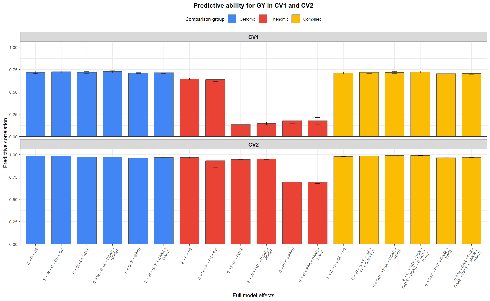
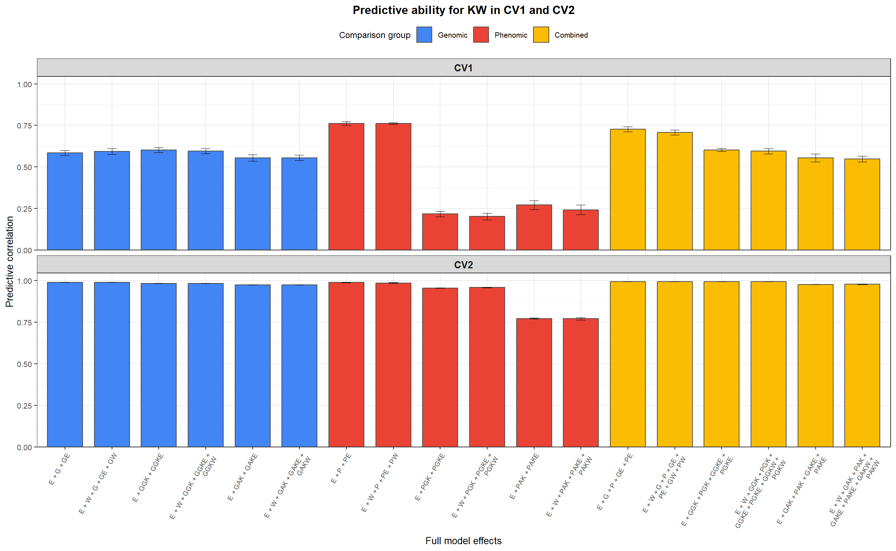
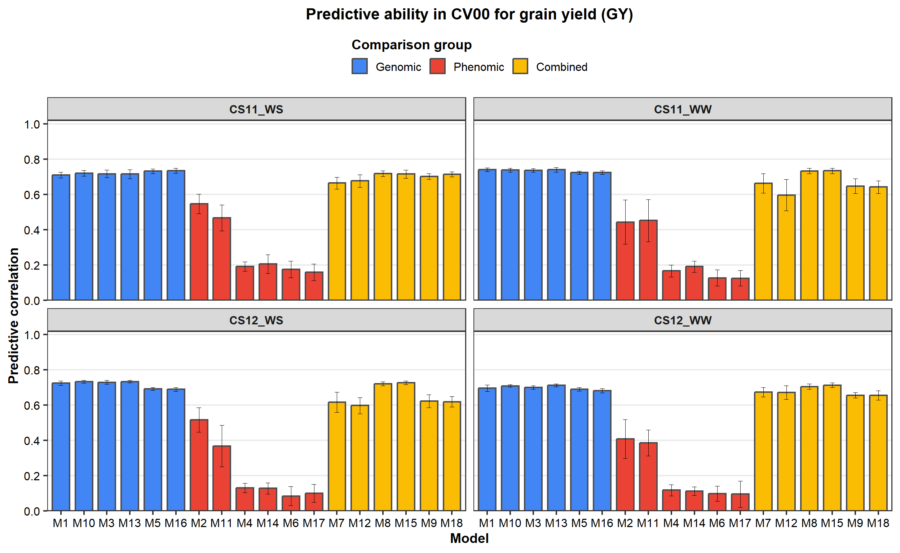
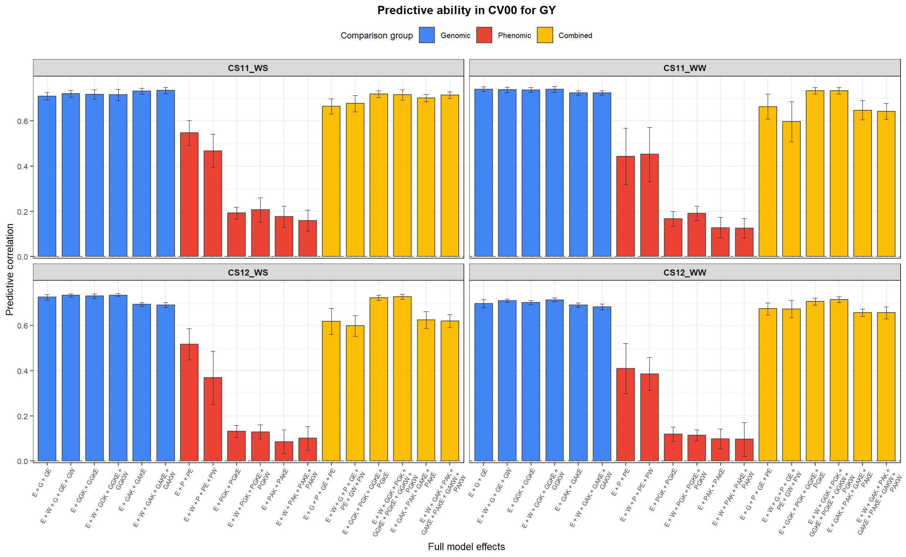
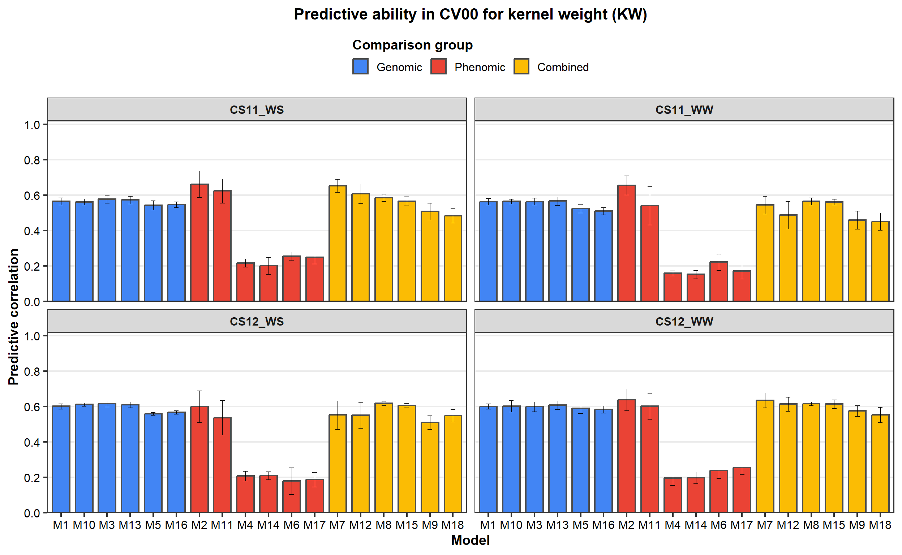
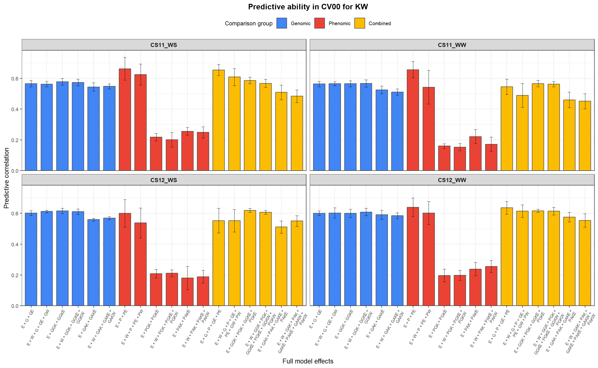

Last updated: 2026-04-09
Checks: 6 1
Knit directory:
Integrating-nir-genomic-kernel/
This reproducible R Markdown analysis was created with workflowr (version 1.7.2). The Checks tab describes the reproducibility checks that were applied when the results were created. The Past versions tab lists the development history.
The R Markdown file has unstaged changes. To know which version of
the R Markdown file created these results, you’ll want to first commit
it to the Git repo. If you’re still working on the analysis, you can
ignore this warning. When you’re finished, you can run
wflow_publish to commit the R Markdown file and build the
HTML.
Great job! The global environment was empty. Objects defined in the global environment can affect the analysis in your R Markdown file in unknown ways. For reproduciblity it’s best to always run the code in an empty environment.
The command set.seed(20250829) was run prior to running
the code in the R Markdown file. Setting a seed ensures that any results
that rely on randomness, e.g. subsampling or permutations, are
reproducible.
Great job! Recording the operating system, R version, and package versions is critical for reproducibility.
Nice! There were no cached chunks for this analysis, so you can be confident that you successfully produced the results during this run.
Great job! Using relative paths to the files within your workflowr project makes it easier to run your code on other machines.
Great! You are using Git for version control. Tracking code development and connecting the code version to the results is critical for reproducibility.
The results in this page were generated with repository version 2625a59. See the Past versions tab to see a history of the changes made to the R Markdown and HTML files.
Note that you need to be careful to ensure that all relevant files for
the analysis have been committed to Git prior to generating the results
(you can use wflow_publish or
wflow_git_commit). workflowr only checks the R Markdown
file, but you know if there are other scripts or data files that it
depends on. Below is the status of the Git repository when the results
were generated:
Ignored files:
Ignored: .Rhistory
Ignored: .Rproj.user/
Ignored: analysis/analysis.Rmd
Ignored: analysis/run_cv0_cv00_only.R
Ignored: analysis/run_cv1_cv2_only.R
Ignored: analysis/script_tabelas_resultados_pipeline_v2.R
Ignored: analysis/site_libs/
Ignored: data/Article_documents/
Ignored: data/Maize-NIRS-GBS-main/
Ignored: output/Matrizes/Geno.all.rds
Ignored: output/Matrizes/NIR.all.rds
Ignored: output/Matrizes/figures/
Ignored: output/adjust_models.rar
Ignored: output/climate_results/combined_additional_climate_plots.tiff
Ignored: output/climate_results/combined_climate_plot.tiff
Ignored: output/cv-schemes.tiff
Ignored: output/figures/
Ignored: output/results/
Ignored: output/tables/pipeline_review/
Ignored: output/tables/prediction_cv0_cv00_raw.csv
Ignored: output/tables/prediction_cv1_cv2_by_rep_fold_env.csv
Ignored: output/tables/prediction_cv1_cv2_raw.csv
Ignored: output/variance_components/bglr_runs/GY/rep01/Eta1/VC_GY_Eta1_rep01_ETA_E_varB.dat
Ignored: output/variance_components/bglr_runs/GY/rep01/Eta1/VC_GY_Eta1_rep01_ETA_GE_varU.dat
Ignored: output/variance_components/bglr_runs/GY/rep01/Eta1/VC_GY_Eta1_rep01_ETA_G_varU.dat
Ignored: output/variance_components/bglr_runs/GY/rep01/Eta1/VC_GY_Eta1_rep01_mu.dat
Ignored: output/variance_components/bglr_runs/GY/rep01/Eta1/VC_GY_Eta1_rep01_varE.dat
Ignored: output/variance_components/bglr_runs/GY/rep01/Eta10/VC_GY_Eta10_rep01_ETA_E_varB.dat
Ignored: output/variance_components/bglr_runs/GY/rep01/Eta10/VC_GY_Eta10_rep01_ETA_GE_varU.dat
Ignored: output/variance_components/bglr_runs/GY/rep01/Eta10/VC_GY_Eta10_rep01_ETA_GW_varU.dat
Ignored: output/variance_components/bglr_runs/GY/rep01/Eta10/VC_GY_Eta10_rep01_ETA_G_varU.dat
Ignored: output/variance_components/bglr_runs/GY/rep01/Eta10/VC_GY_Eta10_rep01_ETA_W_varU.dat
Ignored: output/variance_components/bglr_runs/GY/rep01/Eta10/VC_GY_Eta10_rep01_mu.dat
Ignored: output/variance_components/bglr_runs/GY/rep01/Eta10/VC_GY_Eta10_rep01_varE.dat
Ignored: output/variance_components/bglr_runs/GY/rep01/Eta11/VC_GY_Eta11_rep01_ETA_E_varB.dat
Ignored: output/variance_components/bglr_runs/GY/rep01/Eta11/VC_GY_Eta11_rep01_ETA_PE_varU.dat
Ignored: output/variance_components/bglr_runs/GY/rep01/Eta11/VC_GY_Eta11_rep01_ETA_PW_varU.dat
Ignored: output/variance_components/bglr_runs/GY/rep01/Eta11/VC_GY_Eta11_rep01_ETA_P_varU.dat
Ignored: output/variance_components/bglr_runs/GY/rep01/Eta11/VC_GY_Eta11_rep01_ETA_W_varU.dat
Ignored: output/variance_components/bglr_runs/GY/rep01/Eta11/VC_GY_Eta11_rep01_mu.dat
Ignored: output/variance_components/bglr_runs/GY/rep01/Eta11/VC_GY_Eta11_rep01_varE.dat
Ignored: output/variance_components/bglr_runs/GY/rep01/Eta12/VC_GY_Eta12_rep01_ETA_E_varB.dat
Ignored: output/variance_components/bglr_runs/GY/rep01/Eta12/VC_GY_Eta12_rep01_ETA_GE_varU.dat
Ignored: output/variance_components/bglr_runs/GY/rep01/Eta12/VC_GY_Eta12_rep01_ETA_GW_varU.dat
Ignored: output/variance_components/bglr_runs/GY/rep01/Eta12/VC_GY_Eta12_rep01_ETA_G_varU.dat
Ignored: output/variance_components/bglr_runs/GY/rep01/Eta12/VC_GY_Eta12_rep01_ETA_PE_varU.dat
Ignored: output/variance_components/bglr_runs/GY/rep01/Eta12/VC_GY_Eta12_rep01_ETA_PW_varU.dat
Ignored: output/variance_components/bglr_runs/GY/rep01/Eta12/VC_GY_Eta12_rep01_ETA_P_varU.dat
Ignored: output/variance_components/bglr_runs/GY/rep01/Eta12/VC_GY_Eta12_rep01_ETA_W_varU.dat
Ignored: output/variance_components/bglr_runs/GY/rep01/Eta12/VC_GY_Eta12_rep01_mu.dat
Ignored: output/variance_components/bglr_runs/GY/rep01/Eta12/VC_GY_Eta12_rep01_varE.dat
Ignored: output/variance_components/bglr_runs/GY/rep01/Eta13/VC_GY_Eta13_rep01_ETA_E_varB.dat
Ignored: output/variance_components/bglr_runs/GY/rep01/Eta13/VC_GY_Eta13_rep01_ETA_GGKE_varU.dat
Ignored: output/variance_components/bglr_runs/GY/rep01/Eta13/VC_GY_Eta13_rep01_ETA_GGKW_varU.dat
Ignored: output/variance_components/bglr_runs/GY/rep01/Eta13/VC_GY_Eta13_rep01_ETA_GGK_varU.dat
Ignored: output/variance_components/bglr_runs/GY/rep01/Eta13/VC_GY_Eta13_rep01_ETA_W_varU.dat
Ignored: output/variance_components/bglr_runs/GY/rep01/Eta13/VC_GY_Eta13_rep01_mu.dat
Ignored: output/variance_components/bglr_runs/GY/rep01/Eta13/VC_GY_Eta13_rep01_varE.dat
Ignored: output/variance_components/bglr_runs/GY/rep01/Eta14/VC_GY_Eta14_rep01_ETA_E_varB.dat
Ignored: output/variance_components/bglr_runs/GY/rep01/Eta14/VC_GY_Eta14_rep01_ETA_PGKE_varU.dat
Ignored: output/variance_components/bglr_runs/GY/rep01/Eta14/VC_GY_Eta14_rep01_ETA_PGKW_varU.dat
Ignored: output/variance_components/bglr_runs/GY/rep01/Eta14/VC_GY_Eta14_rep01_ETA_PGK_varU.dat
Ignored: output/variance_components/bglr_runs/GY/rep01/Eta14/VC_GY_Eta14_rep01_ETA_W_varU.dat
Ignored: output/variance_components/bglr_runs/GY/rep01/Eta14/VC_GY_Eta14_rep01_mu.dat
Ignored: output/variance_components/bglr_runs/GY/rep01/Eta14/VC_GY_Eta14_rep01_varE.dat
Ignored: output/variance_components/bglr_runs/GY/rep01/Eta15/VC_GY_Eta15_rep01_ETA_E_varB.dat
Ignored: output/variance_components/bglr_runs/GY/rep01/Eta15/VC_GY_Eta15_rep01_ETA_GGKE_varU.dat
Ignored: output/variance_components/bglr_runs/GY/rep01/Eta15/VC_GY_Eta15_rep01_ETA_GGKW_varU.dat
Ignored: output/variance_components/bglr_runs/GY/rep01/Eta15/VC_GY_Eta15_rep01_ETA_GGK_varU.dat
Ignored: output/variance_components/bglr_runs/GY/rep01/Eta15/VC_GY_Eta15_rep01_ETA_PGKE_varU.dat
Ignored: output/variance_components/bglr_runs/GY/rep01/Eta15/VC_GY_Eta15_rep01_ETA_PGKW_varU.dat
Ignored: output/variance_components/bglr_runs/GY/rep01/Eta15/VC_GY_Eta15_rep01_ETA_PGK_varU.dat
Ignored: output/variance_components/bglr_runs/GY/rep01/Eta15/VC_GY_Eta15_rep01_ETA_W_varU.dat
Ignored: output/variance_components/bglr_runs/GY/rep01/Eta15/VC_GY_Eta15_rep01_mu.dat
Ignored: output/variance_components/bglr_runs/GY/rep01/Eta15/VC_GY_Eta15_rep01_varE.dat
Ignored: output/variance_components/bglr_runs/GY/rep01/Eta16/VC_GY_Eta16_rep01_ETA_E_varB.dat
Ignored: output/variance_components/bglr_runs/GY/rep01/Eta16/VC_GY_Eta16_rep01_ETA_GAKE_varU.dat
Ignored: output/variance_components/bglr_runs/GY/rep01/Eta16/VC_GY_Eta16_rep01_ETA_GAKW_varU.dat
Ignored: output/variance_components/bglr_runs/GY/rep01/Eta16/VC_GY_Eta16_rep01_ETA_GAK_varU.dat
Ignored: output/variance_components/bglr_runs/GY/rep01/Eta16/VC_GY_Eta16_rep01_ETA_W_varU.dat
Ignored: output/variance_components/bglr_runs/GY/rep01/Eta16/VC_GY_Eta16_rep01_mu.dat
Ignored: output/variance_components/bglr_runs/GY/rep01/Eta16/VC_GY_Eta16_rep01_varE.dat
Ignored: output/variance_components/bglr_runs/GY/rep01/Eta17/VC_GY_Eta17_rep01_ETA_E_varB.dat
Ignored: output/variance_components/bglr_runs/GY/rep01/Eta17/VC_GY_Eta17_rep01_ETA_PAKE_varU.dat
Ignored: output/variance_components/bglr_runs/GY/rep01/Eta17/VC_GY_Eta17_rep01_ETA_PAKW_varU.dat
Ignored: output/variance_components/bglr_runs/GY/rep01/Eta17/VC_GY_Eta17_rep01_ETA_PAK_varU.dat
Ignored: output/variance_components/bglr_runs/GY/rep01/Eta17/VC_GY_Eta17_rep01_ETA_W_varU.dat
Ignored: output/variance_components/bglr_runs/GY/rep01/Eta17/VC_GY_Eta17_rep01_mu.dat
Ignored: output/variance_components/bglr_runs/GY/rep01/Eta17/VC_GY_Eta17_rep01_varE.dat
Ignored: output/variance_components/bglr_runs/GY/rep01/Eta18/VC_GY_Eta18_rep01_ETA_E_varB.dat
Ignored: output/variance_components/bglr_runs/GY/rep01/Eta18/VC_GY_Eta18_rep01_ETA_GAKE_varU.dat
Ignored: output/variance_components/bglr_runs/GY/rep01/Eta18/VC_GY_Eta18_rep01_ETA_GAKW_varU.dat
Ignored: output/variance_components/bglr_runs/GY/rep01/Eta18/VC_GY_Eta18_rep01_ETA_GAK_varU.dat
Ignored: output/variance_components/bglr_runs/GY/rep01/Eta18/VC_GY_Eta18_rep01_ETA_PAKE_varU.dat
Ignored: output/variance_components/bglr_runs/GY/rep01/Eta18/VC_GY_Eta18_rep01_ETA_PAKW_varU.dat
Ignored: output/variance_components/bglr_runs/GY/rep01/Eta18/VC_GY_Eta18_rep01_ETA_PAK_varU.dat
Ignored: output/variance_components/bglr_runs/GY/rep01/Eta18/VC_GY_Eta18_rep01_ETA_W_varU.dat
Ignored: output/variance_components/bglr_runs/GY/rep01/Eta18/VC_GY_Eta18_rep01_mu.dat
Ignored: output/variance_components/bglr_runs/GY/rep01/Eta18/VC_GY_Eta18_rep01_varE.dat
Ignored: output/variance_components/bglr_runs/GY/rep01/Eta2/VC_GY_Eta2_rep01_ETA_E_varB.dat
Ignored: output/variance_components/bglr_runs/GY/rep01/Eta2/VC_GY_Eta2_rep01_ETA_PE_varU.dat
Ignored: output/variance_components/bglr_runs/GY/rep01/Eta2/VC_GY_Eta2_rep01_ETA_P_varU.dat
Ignored: output/variance_components/bglr_runs/GY/rep01/Eta2/VC_GY_Eta2_rep01_mu.dat
Ignored: output/variance_components/bglr_runs/GY/rep01/Eta2/VC_GY_Eta2_rep01_varE.dat
Ignored: output/variance_components/bglr_runs/GY/rep01/Eta3/VC_GY_Eta3_rep01_ETA_E_varB.dat
Ignored: output/variance_components/bglr_runs/GY/rep01/Eta3/VC_GY_Eta3_rep01_ETA_GGKE_varU.dat
Ignored: output/variance_components/bglr_runs/GY/rep01/Eta3/VC_GY_Eta3_rep01_ETA_GGK_varU.dat
Ignored: output/variance_components/bglr_runs/GY/rep01/Eta3/VC_GY_Eta3_rep01_mu.dat
Ignored: output/variance_components/bglr_runs/GY/rep01/Eta3/VC_GY_Eta3_rep01_varE.dat
Ignored: output/variance_components/bglr_runs/GY/rep01/Eta4/VC_GY_Eta4_rep01_ETA_E_varB.dat
Ignored: output/variance_components/bglr_runs/GY/rep01/Eta4/VC_GY_Eta4_rep01_ETA_PGKE_varU.dat
Ignored: output/variance_components/bglr_runs/GY/rep01/Eta4/VC_GY_Eta4_rep01_ETA_PGK_varU.dat
Ignored: output/variance_components/bglr_runs/GY/rep01/Eta4/VC_GY_Eta4_rep01_mu.dat
Ignored: output/variance_components/bglr_runs/GY/rep01/Eta4/VC_GY_Eta4_rep01_varE.dat
Ignored: output/variance_components/bglr_runs/GY/rep01/Eta5/VC_GY_Eta5_rep01_ETA_E_varB.dat
Ignored: output/variance_components/bglr_runs/GY/rep01/Eta5/VC_GY_Eta5_rep01_ETA_GAKE_varU.dat
Ignored: output/variance_components/bglr_runs/GY/rep01/Eta5/VC_GY_Eta5_rep01_ETA_GAK_varU.dat
Ignored: output/variance_components/bglr_runs/GY/rep01/Eta5/VC_GY_Eta5_rep01_mu.dat
Ignored: output/variance_components/bglr_runs/GY/rep01/Eta5/VC_GY_Eta5_rep01_varE.dat
Ignored: output/variance_components/bglr_runs/GY/rep01/Eta6/VC_GY_Eta6_rep01_ETA_E_varB.dat
Ignored: output/variance_components/bglr_runs/GY/rep01/Eta6/VC_GY_Eta6_rep01_ETA_PAKE_varU.dat
Ignored: output/variance_components/bglr_runs/GY/rep01/Eta6/VC_GY_Eta6_rep01_ETA_PAK_varU.dat
Ignored: output/variance_components/bglr_runs/GY/rep01/Eta6/VC_GY_Eta6_rep01_mu.dat
Ignored: output/variance_components/bglr_runs/GY/rep01/Eta6/VC_GY_Eta6_rep01_varE.dat
Ignored: output/variance_components/bglr_runs/GY/rep01/Eta7/VC_GY_Eta7_rep01_ETA_E_varB.dat
Ignored: output/variance_components/bglr_runs/GY/rep01/Eta7/VC_GY_Eta7_rep01_ETA_GE_varU.dat
Ignored: output/variance_components/bglr_runs/GY/rep01/Eta7/VC_GY_Eta7_rep01_ETA_G_varU.dat
Ignored: output/variance_components/bglr_runs/GY/rep01/Eta7/VC_GY_Eta7_rep01_ETA_PE_varU.dat
Ignored: output/variance_components/bglr_runs/GY/rep01/Eta7/VC_GY_Eta7_rep01_ETA_P_varU.dat
Ignored: output/variance_components/bglr_runs/GY/rep01/Eta7/VC_GY_Eta7_rep01_mu.dat
Ignored: output/variance_components/bglr_runs/GY/rep01/Eta7/VC_GY_Eta7_rep01_varE.dat
Ignored: output/variance_components/bglr_runs/GY/rep01/Eta8/VC_GY_Eta8_rep01_ETA_E_varB.dat
Ignored: output/variance_components/bglr_runs/GY/rep01/Eta8/VC_GY_Eta8_rep01_ETA_GGKE_varU.dat
Ignored: output/variance_components/bglr_runs/GY/rep01/Eta8/VC_GY_Eta8_rep01_ETA_GGK_varU.dat
Ignored: output/variance_components/bglr_runs/GY/rep01/Eta8/VC_GY_Eta8_rep01_ETA_PGKE_varU.dat
Ignored: output/variance_components/bglr_runs/GY/rep01/Eta8/VC_GY_Eta8_rep01_ETA_PGK_varU.dat
Ignored: output/variance_components/bglr_runs/GY/rep01/Eta8/VC_GY_Eta8_rep01_mu.dat
Ignored: output/variance_components/bglr_runs/GY/rep01/Eta8/VC_GY_Eta8_rep01_varE.dat
Ignored: output/variance_components/bglr_runs/GY/rep01/Eta9/VC_GY_Eta9_rep01_ETA_E_varB.dat
Ignored: output/variance_components/bglr_runs/GY/rep01/Eta9/VC_GY_Eta9_rep01_ETA_GAKE_varU.dat
Ignored: output/variance_components/bglr_runs/GY/rep01/Eta9/VC_GY_Eta9_rep01_ETA_GAK_varU.dat
Ignored: output/variance_components/bglr_runs/GY/rep01/Eta9/VC_GY_Eta9_rep01_ETA_PAKE_varU.dat
Ignored: output/variance_components/bglr_runs/GY/rep01/Eta9/VC_GY_Eta9_rep01_ETA_PAK_varU.dat
Ignored: output/variance_components/bglr_runs/GY/rep01/Eta9/VC_GY_Eta9_rep01_mu.dat
Ignored: output/variance_components/bglr_runs/GY/rep01/Eta9/VC_GY_Eta9_rep01_varE.dat
Ignored: output/variance_components/bglr_runs/GY/rep02/Eta1/VC_GY_Eta1_rep02_ETA_E_varB.dat
Ignored: output/variance_components/bglr_runs/GY/rep02/Eta1/VC_GY_Eta1_rep02_ETA_GE_varU.dat
Ignored: output/variance_components/bglr_runs/GY/rep02/Eta1/VC_GY_Eta1_rep02_ETA_G_varU.dat
Ignored: output/variance_components/bglr_runs/GY/rep02/Eta1/VC_GY_Eta1_rep02_mu.dat
Ignored: output/variance_components/bglr_runs/GY/rep02/Eta1/VC_GY_Eta1_rep02_varE.dat
Ignored: output/variance_components/bglr_runs/GY/rep02/Eta10/VC_GY_Eta10_rep02_ETA_E_varB.dat
Ignored: output/variance_components/bglr_runs/GY/rep02/Eta10/VC_GY_Eta10_rep02_ETA_GE_varU.dat
Ignored: output/variance_components/bglr_runs/GY/rep02/Eta10/VC_GY_Eta10_rep02_ETA_GW_varU.dat
Ignored: output/variance_components/bglr_runs/GY/rep02/Eta10/VC_GY_Eta10_rep02_ETA_G_varU.dat
Ignored: output/variance_components/bglr_runs/GY/rep02/Eta10/VC_GY_Eta10_rep02_ETA_W_varU.dat
Ignored: output/variance_components/bglr_runs/GY/rep02/Eta10/VC_GY_Eta10_rep02_mu.dat
Ignored: output/variance_components/bglr_runs/GY/rep02/Eta10/VC_GY_Eta10_rep02_varE.dat
Ignored: output/variance_components/bglr_runs/GY/rep02/Eta11/VC_GY_Eta11_rep02_ETA_E_varB.dat
Ignored: output/variance_components/bglr_runs/GY/rep02/Eta11/VC_GY_Eta11_rep02_ETA_PE_varU.dat
Ignored: output/variance_components/bglr_runs/GY/rep02/Eta11/VC_GY_Eta11_rep02_ETA_PW_varU.dat
Ignored: output/variance_components/bglr_runs/GY/rep02/Eta11/VC_GY_Eta11_rep02_ETA_P_varU.dat
Ignored: output/variance_components/bglr_runs/GY/rep02/Eta11/VC_GY_Eta11_rep02_ETA_W_varU.dat
Ignored: output/variance_components/bglr_runs/GY/rep02/Eta11/VC_GY_Eta11_rep02_mu.dat
Ignored: output/variance_components/bglr_runs/GY/rep02/Eta11/VC_GY_Eta11_rep02_varE.dat
Ignored: output/variance_components/bglr_runs/GY/rep02/Eta12/VC_GY_Eta12_rep02_ETA_E_varB.dat
Ignored: output/variance_components/bglr_runs/GY/rep02/Eta12/VC_GY_Eta12_rep02_ETA_GE_varU.dat
Ignored: output/variance_components/bglr_runs/GY/rep02/Eta12/VC_GY_Eta12_rep02_ETA_GW_varU.dat
Ignored: output/variance_components/bglr_runs/GY/rep02/Eta12/VC_GY_Eta12_rep02_ETA_G_varU.dat
Ignored: output/variance_components/bglr_runs/GY/rep02/Eta12/VC_GY_Eta12_rep02_ETA_PE_varU.dat
Ignored: output/variance_components/bglr_runs/GY/rep02/Eta12/VC_GY_Eta12_rep02_ETA_PW_varU.dat
Ignored: output/variance_components/bglr_runs/GY/rep02/Eta12/VC_GY_Eta12_rep02_ETA_P_varU.dat
Ignored: output/variance_components/bglr_runs/GY/rep02/Eta12/VC_GY_Eta12_rep02_ETA_W_varU.dat
Ignored: output/variance_components/bglr_runs/GY/rep02/Eta12/VC_GY_Eta12_rep02_mu.dat
Ignored: output/variance_components/bglr_runs/GY/rep02/Eta12/VC_GY_Eta12_rep02_varE.dat
Ignored: output/variance_components/bglr_runs/GY/rep02/Eta13/VC_GY_Eta13_rep02_ETA_E_varB.dat
Ignored: output/variance_components/bglr_runs/GY/rep02/Eta13/VC_GY_Eta13_rep02_ETA_GGKE_varU.dat
Ignored: output/variance_components/bglr_runs/GY/rep02/Eta13/VC_GY_Eta13_rep02_ETA_GGKW_varU.dat
Ignored: output/variance_components/bglr_runs/GY/rep02/Eta13/VC_GY_Eta13_rep02_ETA_GGK_varU.dat
Ignored: output/variance_components/bglr_runs/GY/rep02/Eta13/VC_GY_Eta13_rep02_ETA_W_varU.dat
Ignored: output/variance_components/bglr_runs/GY/rep02/Eta13/VC_GY_Eta13_rep02_mu.dat
Ignored: output/variance_components/bglr_runs/GY/rep02/Eta13/VC_GY_Eta13_rep02_varE.dat
Ignored: output/variance_components/bglr_runs/GY/rep02/Eta14/VC_GY_Eta14_rep02_ETA_E_varB.dat
Ignored: output/variance_components/bglr_runs/GY/rep02/Eta14/VC_GY_Eta14_rep02_ETA_PGKE_varU.dat
Ignored: output/variance_components/bglr_runs/GY/rep02/Eta14/VC_GY_Eta14_rep02_ETA_PGKW_varU.dat
Ignored: output/variance_components/bglr_runs/GY/rep02/Eta14/VC_GY_Eta14_rep02_ETA_PGK_varU.dat
Ignored: output/variance_components/bglr_runs/GY/rep02/Eta14/VC_GY_Eta14_rep02_ETA_W_varU.dat
Ignored: output/variance_components/bglr_runs/GY/rep02/Eta14/VC_GY_Eta14_rep02_mu.dat
Ignored: output/variance_components/bglr_runs/GY/rep02/Eta14/VC_GY_Eta14_rep02_varE.dat
Ignored: output/variance_components/bglr_runs/GY/rep02/Eta15/VC_GY_Eta15_rep02_ETA_E_varB.dat
Ignored: output/variance_components/bglr_runs/GY/rep02/Eta15/VC_GY_Eta15_rep02_ETA_GGKE_varU.dat
Ignored: output/variance_components/bglr_runs/GY/rep02/Eta15/VC_GY_Eta15_rep02_ETA_GGKW_varU.dat
Ignored: output/variance_components/bglr_runs/GY/rep02/Eta15/VC_GY_Eta15_rep02_ETA_GGK_varU.dat
Ignored: output/variance_components/bglr_runs/GY/rep02/Eta15/VC_GY_Eta15_rep02_ETA_PGKE_varU.dat
Ignored: output/variance_components/bglr_runs/GY/rep02/Eta15/VC_GY_Eta15_rep02_ETA_PGKW_varU.dat
Ignored: output/variance_components/bglr_runs/GY/rep02/Eta15/VC_GY_Eta15_rep02_ETA_PGK_varU.dat
Ignored: output/variance_components/bglr_runs/GY/rep02/Eta15/VC_GY_Eta15_rep02_ETA_W_varU.dat
Ignored: output/variance_components/bglr_runs/GY/rep02/Eta15/VC_GY_Eta15_rep02_mu.dat
Ignored: output/variance_components/bglr_runs/GY/rep02/Eta15/VC_GY_Eta15_rep02_varE.dat
Ignored: output/variance_components/bglr_runs/GY/rep02/Eta16/VC_GY_Eta16_rep02_ETA_E_varB.dat
Ignored: output/variance_components/bglr_runs/GY/rep02/Eta16/VC_GY_Eta16_rep02_ETA_GAKE_varU.dat
Ignored: output/variance_components/bglr_runs/GY/rep02/Eta16/VC_GY_Eta16_rep02_ETA_GAKW_varU.dat
Ignored: output/variance_components/bglr_runs/GY/rep02/Eta16/VC_GY_Eta16_rep02_ETA_GAK_varU.dat
Ignored: output/variance_components/bglr_runs/GY/rep02/Eta16/VC_GY_Eta16_rep02_ETA_W_varU.dat
Ignored: output/variance_components/bglr_runs/GY/rep02/Eta16/VC_GY_Eta16_rep02_mu.dat
Ignored: output/variance_components/bglr_runs/GY/rep02/Eta16/VC_GY_Eta16_rep02_varE.dat
Ignored: output/variance_components/bglr_runs/GY/rep02/Eta17/VC_GY_Eta17_rep02_ETA_E_varB.dat
Ignored: output/variance_components/bglr_runs/GY/rep02/Eta17/VC_GY_Eta17_rep02_ETA_PAKE_varU.dat
Ignored: output/variance_components/bglr_runs/GY/rep02/Eta17/VC_GY_Eta17_rep02_ETA_PAKW_varU.dat
Ignored: output/variance_components/bglr_runs/GY/rep02/Eta17/VC_GY_Eta17_rep02_ETA_PAK_varU.dat
Ignored: output/variance_components/bglr_runs/GY/rep02/Eta17/VC_GY_Eta17_rep02_ETA_W_varU.dat
Ignored: output/variance_components/bglr_runs/GY/rep02/Eta17/VC_GY_Eta17_rep02_mu.dat
Ignored: output/variance_components/bglr_runs/GY/rep02/Eta17/VC_GY_Eta17_rep02_varE.dat
Ignored: output/variance_components/bglr_runs/GY/rep02/Eta18/VC_GY_Eta18_rep02_ETA_E_varB.dat
Ignored: output/variance_components/bglr_runs/GY/rep02/Eta18/VC_GY_Eta18_rep02_ETA_GAKE_varU.dat
Ignored: output/variance_components/bglr_runs/GY/rep02/Eta18/VC_GY_Eta18_rep02_ETA_GAKW_varU.dat
Ignored: output/variance_components/bglr_runs/GY/rep02/Eta18/VC_GY_Eta18_rep02_ETA_GAK_varU.dat
Ignored: output/variance_components/bglr_runs/GY/rep02/Eta18/VC_GY_Eta18_rep02_ETA_PAKE_varU.dat
Ignored: output/variance_components/bglr_runs/GY/rep02/Eta18/VC_GY_Eta18_rep02_ETA_PAKW_varU.dat
Ignored: output/variance_components/bglr_runs/GY/rep02/Eta18/VC_GY_Eta18_rep02_ETA_PAK_varU.dat
Ignored: output/variance_components/bglr_runs/GY/rep02/Eta18/VC_GY_Eta18_rep02_ETA_W_varU.dat
Ignored: output/variance_components/bglr_runs/GY/rep02/Eta18/VC_GY_Eta18_rep02_mu.dat
Ignored: output/variance_components/bglr_runs/GY/rep02/Eta18/VC_GY_Eta18_rep02_varE.dat
Ignored: output/variance_components/bglr_runs/GY/rep02/Eta2/VC_GY_Eta2_rep02_ETA_E_varB.dat
Ignored: output/variance_components/bglr_runs/GY/rep02/Eta2/VC_GY_Eta2_rep02_ETA_PE_varU.dat
Ignored: output/variance_components/bglr_runs/GY/rep02/Eta2/VC_GY_Eta2_rep02_ETA_P_varU.dat
Ignored: output/variance_components/bglr_runs/GY/rep02/Eta2/VC_GY_Eta2_rep02_mu.dat
Ignored: output/variance_components/bglr_runs/GY/rep02/Eta2/VC_GY_Eta2_rep02_varE.dat
Ignored: output/variance_components/bglr_runs/GY/rep02/Eta3/VC_GY_Eta3_rep02_ETA_E_varB.dat
Ignored: output/variance_components/bglr_runs/GY/rep02/Eta3/VC_GY_Eta3_rep02_ETA_GGKE_varU.dat
Ignored: output/variance_components/bglr_runs/GY/rep02/Eta3/VC_GY_Eta3_rep02_ETA_GGK_varU.dat
Ignored: output/variance_components/bglr_runs/GY/rep02/Eta3/VC_GY_Eta3_rep02_mu.dat
Ignored: output/variance_components/bglr_runs/GY/rep02/Eta3/VC_GY_Eta3_rep02_varE.dat
Ignored: output/variance_components/bglr_runs/GY/rep02/Eta4/VC_GY_Eta4_rep02_ETA_E_varB.dat
Ignored: output/variance_components/bglr_runs/GY/rep02/Eta4/VC_GY_Eta4_rep02_ETA_PGKE_varU.dat
Ignored: output/variance_components/bglr_runs/GY/rep02/Eta4/VC_GY_Eta4_rep02_ETA_PGK_varU.dat
Ignored: output/variance_components/bglr_runs/GY/rep02/Eta4/VC_GY_Eta4_rep02_mu.dat
Ignored: output/variance_components/bglr_runs/GY/rep02/Eta4/VC_GY_Eta4_rep02_varE.dat
Ignored: output/variance_components/bglr_runs/GY/rep02/Eta5/VC_GY_Eta5_rep02_ETA_E_varB.dat
Ignored: output/variance_components/bglr_runs/GY/rep02/Eta5/VC_GY_Eta5_rep02_ETA_GAKE_varU.dat
Ignored: output/variance_components/bglr_runs/GY/rep02/Eta5/VC_GY_Eta5_rep02_ETA_GAK_varU.dat
Ignored: output/variance_components/bglr_runs/GY/rep02/Eta5/VC_GY_Eta5_rep02_mu.dat
Ignored: output/variance_components/bglr_runs/GY/rep02/Eta5/VC_GY_Eta5_rep02_varE.dat
Ignored: output/variance_components/bglr_runs/GY/rep02/Eta6/VC_GY_Eta6_rep02_ETA_E_varB.dat
Ignored: output/variance_components/bglr_runs/GY/rep02/Eta6/VC_GY_Eta6_rep02_ETA_PAKE_varU.dat
Ignored: output/variance_components/bglr_runs/GY/rep02/Eta6/VC_GY_Eta6_rep02_ETA_PAK_varU.dat
Ignored: output/variance_components/bglr_runs/GY/rep02/Eta6/VC_GY_Eta6_rep02_mu.dat
Ignored: output/variance_components/bglr_runs/GY/rep02/Eta6/VC_GY_Eta6_rep02_varE.dat
Ignored: output/variance_components/bglr_runs/GY/rep02/Eta7/VC_GY_Eta7_rep02_ETA_E_varB.dat
Ignored: output/variance_components/bglr_runs/GY/rep02/Eta7/VC_GY_Eta7_rep02_ETA_GE_varU.dat
Ignored: output/variance_components/bglr_runs/GY/rep02/Eta7/VC_GY_Eta7_rep02_ETA_G_varU.dat
Ignored: output/variance_components/bglr_runs/GY/rep02/Eta7/VC_GY_Eta7_rep02_ETA_PE_varU.dat
Ignored: output/variance_components/bglr_runs/GY/rep02/Eta7/VC_GY_Eta7_rep02_ETA_P_varU.dat
Ignored: output/variance_components/bglr_runs/GY/rep02/Eta7/VC_GY_Eta7_rep02_mu.dat
Ignored: output/variance_components/bglr_runs/GY/rep02/Eta7/VC_GY_Eta7_rep02_varE.dat
Ignored: output/variance_components/bglr_runs/GY/rep02/Eta8/VC_GY_Eta8_rep02_ETA_E_varB.dat
Ignored: output/variance_components/bglr_runs/GY/rep02/Eta8/VC_GY_Eta8_rep02_ETA_GGKE_varU.dat
Ignored: output/variance_components/bglr_runs/GY/rep02/Eta8/VC_GY_Eta8_rep02_ETA_GGK_varU.dat
Ignored: output/variance_components/bglr_runs/GY/rep02/Eta8/VC_GY_Eta8_rep02_ETA_PGKE_varU.dat
Ignored: output/variance_components/bglr_runs/GY/rep02/Eta8/VC_GY_Eta8_rep02_ETA_PGK_varU.dat
Ignored: output/variance_components/bglr_runs/GY/rep02/Eta8/VC_GY_Eta8_rep02_mu.dat
Ignored: output/variance_components/bglr_runs/GY/rep02/Eta8/VC_GY_Eta8_rep02_varE.dat
Ignored: output/variance_components/bglr_runs/GY/rep02/Eta9/VC_GY_Eta9_rep02_ETA_E_varB.dat
Ignored: output/variance_components/bglr_runs/GY/rep02/Eta9/VC_GY_Eta9_rep02_ETA_GAKE_varU.dat
Ignored: output/variance_components/bglr_runs/GY/rep02/Eta9/VC_GY_Eta9_rep02_ETA_GAK_varU.dat
Ignored: output/variance_components/bglr_runs/GY/rep02/Eta9/VC_GY_Eta9_rep02_ETA_PAKE_varU.dat
Ignored: output/variance_components/bglr_runs/GY/rep02/Eta9/VC_GY_Eta9_rep02_ETA_PAK_varU.dat
Ignored: output/variance_components/bglr_runs/GY/rep02/Eta9/VC_GY_Eta9_rep02_mu.dat
Ignored: output/variance_components/bglr_runs/GY/rep02/Eta9/VC_GY_Eta9_rep02_varE.dat
Ignored: output/variance_components/bglr_runs/GY/rep03/Eta1/VC_GY_Eta1_rep03_ETA_E_varB.dat
Ignored: output/variance_components/bglr_runs/GY/rep03/Eta1/VC_GY_Eta1_rep03_ETA_GE_varU.dat
Ignored: output/variance_components/bglr_runs/GY/rep03/Eta1/VC_GY_Eta1_rep03_ETA_G_varU.dat
Ignored: output/variance_components/bglr_runs/GY/rep03/Eta1/VC_GY_Eta1_rep03_mu.dat
Ignored: output/variance_components/bglr_runs/GY/rep03/Eta1/VC_GY_Eta1_rep03_varE.dat
Ignored: output/variance_components/bglr_runs/GY/rep03/Eta10/VC_GY_Eta10_rep03_ETA_E_varB.dat
Ignored: output/variance_components/bglr_runs/GY/rep03/Eta10/VC_GY_Eta10_rep03_ETA_GE_varU.dat
Ignored: output/variance_components/bglr_runs/GY/rep03/Eta10/VC_GY_Eta10_rep03_ETA_GW_varU.dat
Ignored: output/variance_components/bglr_runs/GY/rep03/Eta10/VC_GY_Eta10_rep03_ETA_G_varU.dat
Ignored: output/variance_components/bglr_runs/GY/rep03/Eta10/VC_GY_Eta10_rep03_ETA_W_varU.dat
Ignored: output/variance_components/bglr_runs/GY/rep03/Eta10/VC_GY_Eta10_rep03_mu.dat
Ignored: output/variance_components/bglr_runs/GY/rep03/Eta10/VC_GY_Eta10_rep03_varE.dat
Ignored: output/variance_components/bglr_runs/GY/rep03/Eta11/VC_GY_Eta11_rep03_ETA_E_varB.dat
Ignored: output/variance_components/bglr_runs/GY/rep03/Eta11/VC_GY_Eta11_rep03_ETA_PE_varU.dat
Ignored: output/variance_components/bglr_runs/GY/rep03/Eta11/VC_GY_Eta11_rep03_ETA_PW_varU.dat
Ignored: output/variance_components/bglr_runs/GY/rep03/Eta11/VC_GY_Eta11_rep03_ETA_P_varU.dat
Ignored: output/variance_components/bglr_runs/GY/rep03/Eta11/VC_GY_Eta11_rep03_ETA_W_varU.dat
Ignored: output/variance_components/bglr_runs/GY/rep03/Eta11/VC_GY_Eta11_rep03_mu.dat
Ignored: output/variance_components/bglr_runs/GY/rep03/Eta11/VC_GY_Eta11_rep03_varE.dat
Ignored: output/variance_components/bglr_runs/GY/rep03/Eta12/VC_GY_Eta12_rep03_ETA_E_varB.dat
Ignored: output/variance_components/bglr_runs/GY/rep03/Eta12/VC_GY_Eta12_rep03_ETA_GE_varU.dat
Ignored: output/variance_components/bglr_runs/GY/rep03/Eta12/VC_GY_Eta12_rep03_ETA_GW_varU.dat
Ignored: output/variance_components/bglr_runs/GY/rep03/Eta12/VC_GY_Eta12_rep03_ETA_G_varU.dat
Ignored: output/variance_components/bglr_runs/GY/rep03/Eta12/VC_GY_Eta12_rep03_ETA_PE_varU.dat
Ignored: output/variance_components/bglr_runs/GY/rep03/Eta12/VC_GY_Eta12_rep03_ETA_PW_varU.dat
Ignored: output/variance_components/bglr_runs/GY/rep03/Eta12/VC_GY_Eta12_rep03_ETA_P_varU.dat
Ignored: output/variance_components/bglr_runs/GY/rep03/Eta12/VC_GY_Eta12_rep03_ETA_W_varU.dat
Ignored: output/variance_components/bglr_runs/GY/rep03/Eta12/VC_GY_Eta12_rep03_mu.dat
Ignored: output/variance_components/bglr_runs/GY/rep03/Eta12/VC_GY_Eta12_rep03_varE.dat
Ignored: output/variance_components/bglr_runs/GY/rep03/Eta13/VC_GY_Eta13_rep03_ETA_E_varB.dat
Ignored: output/variance_components/bglr_runs/GY/rep03/Eta13/VC_GY_Eta13_rep03_ETA_GGKE_varU.dat
Ignored: output/variance_components/bglr_runs/GY/rep03/Eta13/VC_GY_Eta13_rep03_ETA_GGKW_varU.dat
Ignored: output/variance_components/bglr_runs/GY/rep03/Eta13/VC_GY_Eta13_rep03_ETA_GGK_varU.dat
Ignored: output/variance_components/bglr_runs/GY/rep03/Eta13/VC_GY_Eta13_rep03_ETA_W_varU.dat
Ignored: output/variance_components/bglr_runs/GY/rep03/Eta13/VC_GY_Eta13_rep03_mu.dat
Ignored: output/variance_components/bglr_runs/GY/rep03/Eta13/VC_GY_Eta13_rep03_varE.dat
Ignored: output/variance_components/bglr_runs/GY/rep03/Eta14/VC_GY_Eta14_rep03_ETA_E_varB.dat
Ignored: output/variance_components/bglr_runs/GY/rep03/Eta14/VC_GY_Eta14_rep03_ETA_PGKE_varU.dat
Ignored: output/variance_components/bglr_runs/GY/rep03/Eta14/VC_GY_Eta14_rep03_ETA_PGKW_varU.dat
Ignored: output/variance_components/bglr_runs/GY/rep03/Eta14/VC_GY_Eta14_rep03_ETA_PGK_varU.dat
Ignored: output/variance_components/bglr_runs/GY/rep03/Eta14/VC_GY_Eta14_rep03_ETA_W_varU.dat
Ignored: output/variance_components/bglr_runs/GY/rep03/Eta14/VC_GY_Eta14_rep03_mu.dat
Ignored: output/variance_components/bglr_runs/GY/rep03/Eta14/VC_GY_Eta14_rep03_varE.dat
Ignored: output/variance_components/bglr_runs/GY/rep03/Eta15/VC_GY_Eta15_rep03_ETA_E_varB.dat
Ignored: output/variance_components/bglr_runs/GY/rep03/Eta15/VC_GY_Eta15_rep03_ETA_GGKE_varU.dat
Ignored: output/variance_components/bglr_runs/GY/rep03/Eta15/VC_GY_Eta15_rep03_ETA_GGKW_varU.dat
Ignored: output/variance_components/bglr_runs/GY/rep03/Eta15/VC_GY_Eta15_rep03_ETA_GGK_varU.dat
Ignored: output/variance_components/bglr_runs/GY/rep03/Eta15/VC_GY_Eta15_rep03_ETA_PGKE_varU.dat
Ignored: output/variance_components/bglr_runs/GY/rep03/Eta15/VC_GY_Eta15_rep03_ETA_PGKW_varU.dat
Ignored: output/variance_components/bglr_runs/GY/rep03/Eta15/VC_GY_Eta15_rep03_ETA_PGK_varU.dat
Ignored: output/variance_components/bglr_runs/GY/rep03/Eta15/VC_GY_Eta15_rep03_ETA_W_varU.dat
Ignored: output/variance_components/bglr_runs/GY/rep03/Eta15/VC_GY_Eta15_rep03_mu.dat
Ignored: output/variance_components/bglr_runs/GY/rep03/Eta15/VC_GY_Eta15_rep03_varE.dat
Ignored: output/variance_components/bglr_runs/GY/rep03/Eta16/VC_GY_Eta16_rep03_ETA_E_varB.dat
Ignored: output/variance_components/bglr_runs/GY/rep03/Eta16/VC_GY_Eta16_rep03_ETA_GAKE_varU.dat
Ignored: output/variance_components/bglr_runs/GY/rep03/Eta16/VC_GY_Eta16_rep03_ETA_GAKW_varU.dat
Ignored: output/variance_components/bglr_runs/GY/rep03/Eta16/VC_GY_Eta16_rep03_ETA_GAK_varU.dat
Ignored: output/variance_components/bglr_runs/GY/rep03/Eta16/VC_GY_Eta16_rep03_ETA_W_varU.dat
Ignored: output/variance_components/bglr_runs/GY/rep03/Eta16/VC_GY_Eta16_rep03_mu.dat
Ignored: output/variance_components/bglr_runs/GY/rep03/Eta16/VC_GY_Eta16_rep03_varE.dat
Ignored: output/variance_components/bglr_runs/GY/rep03/Eta17/VC_GY_Eta17_rep03_ETA_E_varB.dat
Ignored: output/variance_components/bglr_runs/GY/rep03/Eta17/VC_GY_Eta17_rep03_ETA_PAKE_varU.dat
Ignored: output/variance_components/bglr_runs/GY/rep03/Eta17/VC_GY_Eta17_rep03_ETA_PAKW_varU.dat
Ignored: output/variance_components/bglr_runs/GY/rep03/Eta17/VC_GY_Eta17_rep03_ETA_PAK_varU.dat
Ignored: output/variance_components/bglr_runs/GY/rep03/Eta17/VC_GY_Eta17_rep03_ETA_W_varU.dat
Ignored: output/variance_components/bglr_runs/GY/rep03/Eta17/VC_GY_Eta17_rep03_mu.dat
Ignored: output/variance_components/bglr_runs/GY/rep03/Eta17/VC_GY_Eta17_rep03_varE.dat
Ignored: output/variance_components/bglr_runs/GY/rep03/Eta18/VC_GY_Eta18_rep03_ETA_E_varB.dat
Ignored: output/variance_components/bglr_runs/GY/rep03/Eta18/VC_GY_Eta18_rep03_ETA_GAKE_varU.dat
Ignored: output/variance_components/bglr_runs/GY/rep03/Eta18/VC_GY_Eta18_rep03_ETA_GAKW_varU.dat
Ignored: output/variance_components/bglr_runs/GY/rep03/Eta18/VC_GY_Eta18_rep03_ETA_GAK_varU.dat
Ignored: output/variance_components/bglr_runs/GY/rep03/Eta18/VC_GY_Eta18_rep03_ETA_PAKE_varU.dat
Ignored: output/variance_components/bglr_runs/GY/rep03/Eta18/VC_GY_Eta18_rep03_ETA_PAKW_varU.dat
Ignored: output/variance_components/bglr_runs/GY/rep03/Eta18/VC_GY_Eta18_rep03_ETA_PAK_varU.dat
Ignored: output/variance_components/bglr_runs/GY/rep03/Eta18/VC_GY_Eta18_rep03_ETA_W_varU.dat
Ignored: output/variance_components/bglr_runs/GY/rep03/Eta18/VC_GY_Eta18_rep03_mu.dat
Ignored: output/variance_components/bglr_runs/GY/rep03/Eta18/VC_GY_Eta18_rep03_varE.dat
Ignored: output/variance_components/bglr_runs/GY/rep03/Eta2/VC_GY_Eta2_rep03_ETA_E_varB.dat
Ignored: output/variance_components/bglr_runs/GY/rep03/Eta2/VC_GY_Eta2_rep03_ETA_PE_varU.dat
Ignored: output/variance_components/bglr_runs/GY/rep03/Eta2/VC_GY_Eta2_rep03_ETA_P_varU.dat
Ignored: output/variance_components/bglr_runs/GY/rep03/Eta2/VC_GY_Eta2_rep03_mu.dat
Ignored: output/variance_components/bglr_runs/GY/rep03/Eta2/VC_GY_Eta2_rep03_varE.dat
Ignored: output/variance_components/bglr_runs/GY/rep03/Eta3/VC_GY_Eta3_rep03_ETA_E_varB.dat
Ignored: output/variance_components/bglr_runs/GY/rep03/Eta3/VC_GY_Eta3_rep03_ETA_GGKE_varU.dat
Ignored: output/variance_components/bglr_runs/GY/rep03/Eta3/VC_GY_Eta3_rep03_ETA_GGK_varU.dat
Ignored: output/variance_components/bglr_runs/GY/rep03/Eta3/VC_GY_Eta3_rep03_mu.dat
Ignored: output/variance_components/bglr_runs/GY/rep03/Eta3/VC_GY_Eta3_rep03_varE.dat
Ignored: output/variance_components/bglr_runs/GY/rep03/Eta4/VC_GY_Eta4_rep03_ETA_E_varB.dat
Ignored: output/variance_components/bglr_runs/GY/rep03/Eta4/VC_GY_Eta4_rep03_ETA_PGKE_varU.dat
Ignored: output/variance_components/bglr_runs/GY/rep03/Eta4/VC_GY_Eta4_rep03_ETA_PGK_varU.dat
Ignored: output/variance_components/bglr_runs/GY/rep03/Eta4/VC_GY_Eta4_rep03_mu.dat
Ignored: output/variance_components/bglr_runs/GY/rep03/Eta4/VC_GY_Eta4_rep03_varE.dat
Ignored: output/variance_components/bglr_runs/GY/rep03/Eta5/VC_GY_Eta5_rep03_ETA_E_varB.dat
Ignored: output/variance_components/bglr_runs/GY/rep03/Eta5/VC_GY_Eta5_rep03_ETA_GAKE_varU.dat
Ignored: output/variance_components/bglr_runs/GY/rep03/Eta5/VC_GY_Eta5_rep03_ETA_GAK_varU.dat
Ignored: output/variance_components/bglr_runs/GY/rep03/Eta5/VC_GY_Eta5_rep03_mu.dat
Ignored: output/variance_components/bglr_runs/GY/rep03/Eta5/VC_GY_Eta5_rep03_varE.dat
Ignored: output/variance_components/bglr_runs/GY/rep03/Eta6/VC_GY_Eta6_rep03_ETA_E_varB.dat
Ignored: output/variance_components/bglr_runs/GY/rep03/Eta6/VC_GY_Eta6_rep03_ETA_PAKE_varU.dat
Ignored: output/variance_components/bglr_runs/GY/rep03/Eta6/VC_GY_Eta6_rep03_ETA_PAK_varU.dat
Ignored: output/variance_components/bglr_runs/GY/rep03/Eta6/VC_GY_Eta6_rep03_mu.dat
Ignored: output/variance_components/bglr_runs/GY/rep03/Eta6/VC_GY_Eta6_rep03_varE.dat
Ignored: output/variance_components/bglr_runs/GY/rep03/Eta7/VC_GY_Eta7_rep03_ETA_E_varB.dat
Ignored: output/variance_components/bglr_runs/GY/rep03/Eta7/VC_GY_Eta7_rep03_ETA_GE_varU.dat
Ignored: output/variance_components/bglr_runs/GY/rep03/Eta7/VC_GY_Eta7_rep03_ETA_G_varU.dat
Ignored: output/variance_components/bglr_runs/GY/rep03/Eta7/VC_GY_Eta7_rep03_ETA_PE_varU.dat
Ignored: output/variance_components/bglr_runs/GY/rep03/Eta7/VC_GY_Eta7_rep03_ETA_P_varU.dat
Ignored: output/variance_components/bglr_runs/GY/rep03/Eta7/VC_GY_Eta7_rep03_mu.dat
Ignored: output/variance_components/bglr_runs/GY/rep03/Eta7/VC_GY_Eta7_rep03_varE.dat
Ignored: output/variance_components/bglr_runs/GY/rep03/Eta8/VC_GY_Eta8_rep03_ETA_E_varB.dat
Ignored: output/variance_components/bglr_runs/GY/rep03/Eta8/VC_GY_Eta8_rep03_ETA_GGKE_varU.dat
Ignored: output/variance_components/bglr_runs/GY/rep03/Eta8/VC_GY_Eta8_rep03_ETA_GGK_varU.dat
Ignored: output/variance_components/bglr_runs/GY/rep03/Eta8/VC_GY_Eta8_rep03_ETA_PGKE_varU.dat
Ignored: output/variance_components/bglr_runs/GY/rep03/Eta8/VC_GY_Eta8_rep03_ETA_PGK_varU.dat
Ignored: output/variance_components/bglr_runs/GY/rep03/Eta8/VC_GY_Eta8_rep03_mu.dat
Ignored: output/variance_components/bglr_runs/GY/rep03/Eta8/VC_GY_Eta8_rep03_varE.dat
Ignored: output/variance_components/bglr_runs/GY/rep03/Eta9/VC_GY_Eta9_rep03_ETA_E_varB.dat
Ignored: output/variance_components/bglr_runs/GY/rep03/Eta9/VC_GY_Eta9_rep03_ETA_GAKE_varU.dat
Ignored: output/variance_components/bglr_runs/GY/rep03/Eta9/VC_GY_Eta9_rep03_ETA_GAK_varU.dat
Ignored: output/variance_components/bglr_runs/GY/rep03/Eta9/VC_GY_Eta9_rep03_ETA_PAKE_varU.dat
Ignored: output/variance_components/bglr_runs/GY/rep03/Eta9/VC_GY_Eta9_rep03_ETA_PAK_varU.dat
Ignored: output/variance_components/bglr_runs/GY/rep03/Eta9/VC_GY_Eta9_rep03_mu.dat
Ignored: output/variance_components/bglr_runs/GY/rep03/Eta9/VC_GY_Eta9_rep03_varE.dat
Ignored: output/variance_components/bglr_runs/GY/rep04/Eta1/VC_GY_Eta1_rep04_ETA_E_varB.dat
Ignored: output/variance_components/bglr_runs/GY/rep04/Eta1/VC_GY_Eta1_rep04_ETA_GE_varU.dat
Ignored: output/variance_components/bglr_runs/GY/rep04/Eta1/VC_GY_Eta1_rep04_ETA_G_varU.dat
Ignored: output/variance_components/bglr_runs/GY/rep04/Eta1/VC_GY_Eta1_rep04_mu.dat
Ignored: output/variance_components/bglr_runs/GY/rep04/Eta1/VC_GY_Eta1_rep04_varE.dat
Ignored: output/variance_components/bglr_runs/GY/rep04/Eta10/VC_GY_Eta10_rep04_ETA_E_varB.dat
Ignored: output/variance_components/bglr_runs/GY/rep04/Eta10/VC_GY_Eta10_rep04_ETA_GE_varU.dat
Ignored: output/variance_components/bglr_runs/GY/rep04/Eta10/VC_GY_Eta10_rep04_ETA_GW_varU.dat
Ignored: output/variance_components/bglr_runs/GY/rep04/Eta10/VC_GY_Eta10_rep04_ETA_G_varU.dat
Ignored: output/variance_components/bglr_runs/GY/rep04/Eta10/VC_GY_Eta10_rep04_ETA_W_varU.dat
Ignored: output/variance_components/bglr_runs/GY/rep04/Eta10/VC_GY_Eta10_rep04_mu.dat
Ignored: output/variance_components/bglr_runs/GY/rep04/Eta10/VC_GY_Eta10_rep04_varE.dat
Ignored: output/variance_components/bglr_runs/GY/rep04/Eta11/VC_GY_Eta11_rep04_ETA_E_varB.dat
Ignored: output/variance_components/bglr_runs/GY/rep04/Eta11/VC_GY_Eta11_rep04_ETA_PE_varU.dat
Ignored: output/variance_components/bglr_runs/GY/rep04/Eta11/VC_GY_Eta11_rep04_ETA_PW_varU.dat
Ignored: output/variance_components/bglr_runs/GY/rep04/Eta11/VC_GY_Eta11_rep04_ETA_P_varU.dat
Ignored: output/variance_components/bglr_runs/GY/rep04/Eta11/VC_GY_Eta11_rep04_ETA_W_varU.dat
Ignored: output/variance_components/bglr_runs/GY/rep04/Eta11/VC_GY_Eta11_rep04_mu.dat
Ignored: output/variance_components/bglr_runs/GY/rep04/Eta11/VC_GY_Eta11_rep04_varE.dat
Ignored: output/variance_components/bglr_runs/GY/rep04/Eta12/VC_GY_Eta12_rep04_ETA_E_varB.dat
Ignored: output/variance_components/bglr_runs/GY/rep04/Eta12/VC_GY_Eta12_rep04_ETA_GE_varU.dat
Ignored: output/variance_components/bglr_runs/GY/rep04/Eta12/VC_GY_Eta12_rep04_ETA_GW_varU.dat
Ignored: output/variance_components/bglr_runs/GY/rep04/Eta12/VC_GY_Eta12_rep04_ETA_G_varU.dat
Ignored: output/variance_components/bglr_runs/GY/rep04/Eta12/VC_GY_Eta12_rep04_ETA_PE_varU.dat
Ignored: output/variance_components/bglr_runs/GY/rep04/Eta12/VC_GY_Eta12_rep04_ETA_PW_varU.dat
Ignored: output/variance_components/bglr_runs/GY/rep04/Eta12/VC_GY_Eta12_rep04_ETA_P_varU.dat
Ignored: output/variance_components/bglr_runs/GY/rep04/Eta12/VC_GY_Eta12_rep04_ETA_W_varU.dat
Ignored: output/variance_components/bglr_runs/GY/rep04/Eta12/VC_GY_Eta12_rep04_mu.dat
Ignored: output/variance_components/bglr_runs/GY/rep04/Eta12/VC_GY_Eta12_rep04_varE.dat
Ignored: output/variance_components/bglr_runs/GY/rep04/Eta13/VC_GY_Eta13_rep04_ETA_E_varB.dat
Ignored: output/variance_components/bglr_runs/GY/rep04/Eta13/VC_GY_Eta13_rep04_ETA_GGKE_varU.dat
Ignored: output/variance_components/bglr_runs/GY/rep04/Eta13/VC_GY_Eta13_rep04_ETA_GGKW_varU.dat
Ignored: output/variance_components/bglr_runs/GY/rep04/Eta13/VC_GY_Eta13_rep04_ETA_GGK_varU.dat
Ignored: output/variance_components/bglr_runs/GY/rep04/Eta13/VC_GY_Eta13_rep04_ETA_W_varU.dat
Ignored: output/variance_components/bglr_runs/GY/rep04/Eta13/VC_GY_Eta13_rep04_mu.dat
Ignored: output/variance_components/bglr_runs/GY/rep04/Eta13/VC_GY_Eta13_rep04_varE.dat
Ignored: output/variance_components/bglr_runs/GY/rep04/Eta14/VC_GY_Eta14_rep04_ETA_E_varB.dat
Ignored: output/variance_components/bglr_runs/GY/rep04/Eta14/VC_GY_Eta14_rep04_ETA_PGKE_varU.dat
Ignored: output/variance_components/bglr_runs/GY/rep04/Eta14/VC_GY_Eta14_rep04_ETA_PGKW_varU.dat
Ignored: output/variance_components/bglr_runs/GY/rep04/Eta14/VC_GY_Eta14_rep04_ETA_PGK_varU.dat
Ignored: output/variance_components/bglr_runs/GY/rep04/Eta14/VC_GY_Eta14_rep04_ETA_W_varU.dat
Ignored: output/variance_components/bglr_runs/GY/rep04/Eta14/VC_GY_Eta14_rep04_mu.dat
Ignored: output/variance_components/bglr_runs/GY/rep04/Eta14/VC_GY_Eta14_rep04_varE.dat
Ignored: output/variance_components/bglr_runs/GY/rep04/Eta15/VC_GY_Eta15_rep04_ETA_E_varB.dat
Ignored: output/variance_components/bglr_runs/GY/rep04/Eta15/VC_GY_Eta15_rep04_ETA_GGKE_varU.dat
Ignored: output/variance_components/bglr_runs/GY/rep04/Eta15/VC_GY_Eta15_rep04_ETA_GGKW_varU.dat
Ignored: output/variance_components/bglr_runs/GY/rep04/Eta15/VC_GY_Eta15_rep04_ETA_GGK_varU.dat
Ignored: output/variance_components/bglr_runs/GY/rep04/Eta15/VC_GY_Eta15_rep04_ETA_PGKE_varU.dat
Ignored: output/variance_components/bglr_runs/GY/rep04/Eta15/VC_GY_Eta15_rep04_ETA_PGKW_varU.dat
Ignored: output/variance_components/bglr_runs/GY/rep04/Eta15/VC_GY_Eta15_rep04_ETA_PGK_varU.dat
Ignored: output/variance_components/bglr_runs/GY/rep04/Eta15/VC_GY_Eta15_rep04_ETA_W_varU.dat
Ignored: output/variance_components/bglr_runs/GY/rep04/Eta15/VC_GY_Eta15_rep04_mu.dat
Ignored: output/variance_components/bglr_runs/GY/rep04/Eta15/VC_GY_Eta15_rep04_varE.dat
Ignored: output/variance_components/bglr_runs/GY/rep04/Eta16/VC_GY_Eta16_rep04_ETA_E_varB.dat
Ignored: output/variance_components/bglr_runs/GY/rep04/Eta16/VC_GY_Eta16_rep04_ETA_GAKE_varU.dat
Ignored: output/variance_components/bglr_runs/GY/rep04/Eta16/VC_GY_Eta16_rep04_ETA_GAKW_varU.dat
Ignored: output/variance_components/bglr_runs/GY/rep04/Eta16/VC_GY_Eta16_rep04_ETA_GAK_varU.dat
Ignored: output/variance_components/bglr_runs/GY/rep04/Eta16/VC_GY_Eta16_rep04_ETA_W_varU.dat
Ignored: output/variance_components/bglr_runs/GY/rep04/Eta16/VC_GY_Eta16_rep04_mu.dat
Ignored: output/variance_components/bglr_runs/GY/rep04/Eta16/VC_GY_Eta16_rep04_varE.dat
Ignored: output/variance_components/bglr_runs/GY/rep04/Eta17/VC_GY_Eta17_rep04_ETA_E_varB.dat
Ignored: output/variance_components/bglr_runs/GY/rep04/Eta17/VC_GY_Eta17_rep04_ETA_PAKE_varU.dat
Ignored: output/variance_components/bglr_runs/GY/rep04/Eta17/VC_GY_Eta17_rep04_ETA_PAKW_varU.dat
Ignored: output/variance_components/bglr_runs/GY/rep04/Eta17/VC_GY_Eta17_rep04_ETA_PAK_varU.dat
Ignored: output/variance_components/bglr_runs/GY/rep04/Eta17/VC_GY_Eta17_rep04_ETA_W_varU.dat
Ignored: output/variance_components/bglr_runs/GY/rep04/Eta17/VC_GY_Eta17_rep04_mu.dat
Ignored: output/variance_components/bglr_runs/GY/rep04/Eta17/VC_GY_Eta17_rep04_varE.dat
Ignored: output/variance_components/bglr_runs/GY/rep04/Eta18/VC_GY_Eta18_rep04_ETA_E_varB.dat
Ignored: output/variance_components/bglr_runs/GY/rep04/Eta18/VC_GY_Eta18_rep04_ETA_GAKE_varU.dat
Ignored: output/variance_components/bglr_runs/GY/rep04/Eta18/VC_GY_Eta18_rep04_ETA_GAKW_varU.dat
Ignored: output/variance_components/bglr_runs/GY/rep04/Eta18/VC_GY_Eta18_rep04_ETA_GAK_varU.dat
Ignored: output/variance_components/bglr_runs/GY/rep04/Eta18/VC_GY_Eta18_rep04_ETA_PAKE_varU.dat
Ignored: output/variance_components/bglr_runs/GY/rep04/Eta18/VC_GY_Eta18_rep04_ETA_PAKW_varU.dat
Ignored: output/variance_components/bglr_runs/GY/rep04/Eta18/VC_GY_Eta18_rep04_ETA_PAK_varU.dat
Ignored: output/variance_components/bglr_runs/GY/rep04/Eta18/VC_GY_Eta18_rep04_ETA_W_varU.dat
Ignored: output/variance_components/bglr_runs/GY/rep04/Eta18/VC_GY_Eta18_rep04_mu.dat
Ignored: output/variance_components/bglr_runs/GY/rep04/Eta18/VC_GY_Eta18_rep04_varE.dat
Ignored: output/variance_components/bglr_runs/GY/rep04/Eta2/VC_GY_Eta2_rep04_ETA_E_varB.dat
Ignored: output/variance_components/bglr_runs/GY/rep04/Eta2/VC_GY_Eta2_rep04_ETA_PE_varU.dat
Ignored: output/variance_components/bglr_runs/GY/rep04/Eta2/VC_GY_Eta2_rep04_ETA_P_varU.dat
Ignored: output/variance_components/bglr_runs/GY/rep04/Eta2/VC_GY_Eta2_rep04_mu.dat
Ignored: output/variance_components/bglr_runs/GY/rep04/Eta2/VC_GY_Eta2_rep04_varE.dat
Ignored: output/variance_components/bglr_runs/GY/rep04/Eta3/VC_GY_Eta3_rep04_ETA_E_varB.dat
Ignored: output/variance_components/bglr_runs/GY/rep04/Eta3/VC_GY_Eta3_rep04_ETA_GGKE_varU.dat
Ignored: output/variance_components/bglr_runs/GY/rep04/Eta3/VC_GY_Eta3_rep04_ETA_GGK_varU.dat
Ignored: output/variance_components/bglr_runs/GY/rep04/Eta3/VC_GY_Eta3_rep04_mu.dat
Ignored: output/variance_components/bglr_runs/GY/rep04/Eta3/VC_GY_Eta3_rep04_varE.dat
Ignored: output/variance_components/bglr_runs/GY/rep04/Eta4/VC_GY_Eta4_rep04_ETA_E_varB.dat
Ignored: output/variance_components/bglr_runs/GY/rep04/Eta4/VC_GY_Eta4_rep04_ETA_PGKE_varU.dat
Ignored: output/variance_components/bglr_runs/GY/rep04/Eta4/VC_GY_Eta4_rep04_ETA_PGK_varU.dat
Ignored: output/variance_components/bglr_runs/GY/rep04/Eta4/VC_GY_Eta4_rep04_mu.dat
Ignored: output/variance_components/bglr_runs/GY/rep04/Eta4/VC_GY_Eta4_rep04_varE.dat
Ignored: output/variance_components/bglr_runs/GY/rep04/Eta5/VC_GY_Eta5_rep04_ETA_E_varB.dat
Ignored: output/variance_components/bglr_runs/GY/rep04/Eta5/VC_GY_Eta5_rep04_ETA_GAKE_varU.dat
Ignored: output/variance_components/bglr_runs/GY/rep04/Eta5/VC_GY_Eta5_rep04_ETA_GAK_varU.dat
Ignored: output/variance_components/bglr_runs/GY/rep04/Eta5/VC_GY_Eta5_rep04_mu.dat
Ignored: output/variance_components/bglr_runs/GY/rep04/Eta5/VC_GY_Eta5_rep04_varE.dat
Ignored: output/variance_components/bglr_runs/GY/rep04/Eta6/VC_GY_Eta6_rep04_ETA_E_varB.dat
Ignored: output/variance_components/bglr_runs/GY/rep04/Eta6/VC_GY_Eta6_rep04_ETA_PAKE_varU.dat
Ignored: output/variance_components/bglr_runs/GY/rep04/Eta6/VC_GY_Eta6_rep04_ETA_PAK_varU.dat
Ignored: output/variance_components/bglr_runs/GY/rep04/Eta6/VC_GY_Eta6_rep04_mu.dat
Ignored: output/variance_components/bglr_runs/GY/rep04/Eta6/VC_GY_Eta6_rep04_varE.dat
Ignored: output/variance_components/bglr_runs/GY/rep04/Eta7/VC_GY_Eta7_rep04_ETA_E_varB.dat
Ignored: output/variance_components/bglr_runs/GY/rep04/Eta7/VC_GY_Eta7_rep04_ETA_GE_varU.dat
Ignored: output/variance_components/bglr_runs/GY/rep04/Eta7/VC_GY_Eta7_rep04_ETA_G_varU.dat
Ignored: output/variance_components/bglr_runs/GY/rep04/Eta7/VC_GY_Eta7_rep04_ETA_PE_varU.dat
Ignored: output/variance_components/bglr_runs/GY/rep04/Eta7/VC_GY_Eta7_rep04_ETA_P_varU.dat
Ignored: output/variance_components/bglr_runs/GY/rep04/Eta7/VC_GY_Eta7_rep04_mu.dat
Ignored: output/variance_components/bglr_runs/GY/rep04/Eta7/VC_GY_Eta7_rep04_varE.dat
Ignored: output/variance_components/bglr_runs/GY/rep04/Eta8/VC_GY_Eta8_rep04_ETA_E_varB.dat
Ignored: output/variance_components/bglr_runs/GY/rep04/Eta8/VC_GY_Eta8_rep04_ETA_GGKE_varU.dat
Ignored: output/variance_components/bglr_runs/GY/rep04/Eta8/VC_GY_Eta8_rep04_ETA_GGK_varU.dat
Ignored: output/variance_components/bglr_runs/GY/rep04/Eta8/VC_GY_Eta8_rep04_ETA_PGKE_varU.dat
Ignored: output/variance_components/bglr_runs/GY/rep04/Eta8/VC_GY_Eta8_rep04_ETA_PGK_varU.dat
Ignored: output/variance_components/bglr_runs/GY/rep04/Eta8/VC_GY_Eta8_rep04_mu.dat
Ignored: output/variance_components/bglr_runs/GY/rep04/Eta8/VC_GY_Eta8_rep04_varE.dat
Ignored: output/variance_components/bglr_runs/GY/rep04/Eta9/VC_GY_Eta9_rep04_ETA_E_varB.dat
Ignored: output/variance_components/bglr_runs/GY/rep04/Eta9/VC_GY_Eta9_rep04_ETA_GAKE_varU.dat
Ignored: output/variance_components/bglr_runs/GY/rep04/Eta9/VC_GY_Eta9_rep04_ETA_GAK_varU.dat
Ignored: output/variance_components/bglr_runs/GY/rep04/Eta9/VC_GY_Eta9_rep04_ETA_PAKE_varU.dat
Ignored: output/variance_components/bglr_runs/GY/rep04/Eta9/VC_GY_Eta9_rep04_ETA_PAK_varU.dat
Ignored: output/variance_components/bglr_runs/GY/rep04/Eta9/VC_GY_Eta9_rep04_mu.dat
Ignored: output/variance_components/bglr_runs/GY/rep04/Eta9/VC_GY_Eta9_rep04_varE.dat
Ignored: output/variance_components/bglr_runs/GY/rep05/Eta1/VC_GY_Eta1_rep05_ETA_E_varB.dat
Ignored: output/variance_components/bglr_runs/GY/rep05/Eta1/VC_GY_Eta1_rep05_ETA_GE_varU.dat
Ignored: output/variance_components/bglr_runs/GY/rep05/Eta1/VC_GY_Eta1_rep05_ETA_G_varU.dat
Ignored: output/variance_components/bglr_runs/GY/rep05/Eta1/VC_GY_Eta1_rep05_mu.dat
Ignored: output/variance_components/bglr_runs/GY/rep05/Eta1/VC_GY_Eta1_rep05_varE.dat
Ignored: output/variance_components/bglr_runs/GY/rep05/Eta10/VC_GY_Eta10_rep05_ETA_E_varB.dat
Ignored: output/variance_components/bglr_runs/GY/rep05/Eta10/VC_GY_Eta10_rep05_ETA_GE_varU.dat
Ignored: output/variance_components/bglr_runs/GY/rep05/Eta10/VC_GY_Eta10_rep05_ETA_GW_varU.dat
Ignored: output/variance_components/bglr_runs/GY/rep05/Eta10/VC_GY_Eta10_rep05_ETA_G_varU.dat
Ignored: output/variance_components/bglr_runs/GY/rep05/Eta10/VC_GY_Eta10_rep05_ETA_W_varU.dat
Ignored: output/variance_components/bglr_runs/GY/rep05/Eta10/VC_GY_Eta10_rep05_mu.dat
Ignored: output/variance_components/bglr_runs/GY/rep05/Eta10/VC_GY_Eta10_rep05_varE.dat
Ignored: output/variance_components/bglr_runs/GY/rep05/Eta11/VC_GY_Eta11_rep05_ETA_E_varB.dat
Ignored: output/variance_components/bglr_runs/GY/rep05/Eta11/VC_GY_Eta11_rep05_ETA_PE_varU.dat
Ignored: output/variance_components/bglr_runs/GY/rep05/Eta11/VC_GY_Eta11_rep05_ETA_PW_varU.dat
Ignored: output/variance_components/bglr_runs/GY/rep05/Eta11/VC_GY_Eta11_rep05_ETA_P_varU.dat
Ignored: output/variance_components/bglr_runs/GY/rep05/Eta11/VC_GY_Eta11_rep05_ETA_W_varU.dat
Ignored: output/variance_components/bglr_runs/GY/rep05/Eta11/VC_GY_Eta11_rep05_mu.dat
Ignored: output/variance_components/bglr_runs/GY/rep05/Eta11/VC_GY_Eta11_rep05_varE.dat
Ignored: output/variance_components/bglr_runs/GY/rep05/Eta12/VC_GY_Eta12_rep05_ETA_E_varB.dat
Ignored: output/variance_components/bglr_runs/GY/rep05/Eta12/VC_GY_Eta12_rep05_ETA_GE_varU.dat
Ignored: output/variance_components/bglr_runs/GY/rep05/Eta12/VC_GY_Eta12_rep05_ETA_GW_varU.dat
Ignored: output/variance_components/bglr_runs/GY/rep05/Eta12/VC_GY_Eta12_rep05_ETA_G_varU.dat
Ignored: output/variance_components/bglr_runs/GY/rep05/Eta12/VC_GY_Eta12_rep05_ETA_PE_varU.dat
Ignored: output/variance_components/bglr_runs/GY/rep05/Eta12/VC_GY_Eta12_rep05_ETA_PW_varU.dat
Ignored: output/variance_components/bglr_runs/GY/rep05/Eta12/VC_GY_Eta12_rep05_ETA_P_varU.dat
Ignored: output/variance_components/bglr_runs/GY/rep05/Eta12/VC_GY_Eta12_rep05_ETA_W_varU.dat
Ignored: output/variance_components/bglr_runs/GY/rep05/Eta12/VC_GY_Eta12_rep05_mu.dat
Ignored: output/variance_components/bglr_runs/GY/rep05/Eta12/VC_GY_Eta12_rep05_varE.dat
Ignored: output/variance_components/bglr_runs/GY/rep05/Eta13/VC_GY_Eta13_rep05_ETA_E_varB.dat
Ignored: output/variance_components/bglr_runs/GY/rep05/Eta13/VC_GY_Eta13_rep05_ETA_GGKE_varU.dat
Ignored: output/variance_components/bglr_runs/GY/rep05/Eta13/VC_GY_Eta13_rep05_ETA_GGKW_varU.dat
Ignored: output/variance_components/bglr_runs/GY/rep05/Eta13/VC_GY_Eta13_rep05_ETA_GGK_varU.dat
Ignored: output/variance_components/bglr_runs/GY/rep05/Eta13/VC_GY_Eta13_rep05_ETA_W_varU.dat
Ignored: output/variance_components/bglr_runs/GY/rep05/Eta13/VC_GY_Eta13_rep05_mu.dat
Ignored: output/variance_components/bglr_runs/GY/rep05/Eta13/VC_GY_Eta13_rep05_varE.dat
Ignored: output/variance_components/bglr_runs/GY/rep05/Eta14/VC_GY_Eta14_rep05_ETA_E_varB.dat
Ignored: output/variance_components/bglr_runs/GY/rep05/Eta14/VC_GY_Eta14_rep05_ETA_PGKE_varU.dat
Ignored: output/variance_components/bglr_runs/GY/rep05/Eta14/VC_GY_Eta14_rep05_ETA_PGKW_varU.dat
Ignored: output/variance_components/bglr_runs/GY/rep05/Eta14/VC_GY_Eta14_rep05_ETA_PGK_varU.dat
Ignored: output/variance_components/bglr_runs/GY/rep05/Eta14/VC_GY_Eta14_rep05_ETA_W_varU.dat
Ignored: output/variance_components/bglr_runs/GY/rep05/Eta14/VC_GY_Eta14_rep05_mu.dat
Ignored: output/variance_components/bglr_runs/GY/rep05/Eta14/VC_GY_Eta14_rep05_varE.dat
Ignored: output/variance_components/bglr_runs/GY/rep05/Eta15/VC_GY_Eta15_rep05_ETA_E_varB.dat
Ignored: output/variance_components/bglr_runs/GY/rep05/Eta15/VC_GY_Eta15_rep05_ETA_GGKE_varU.dat
Ignored: output/variance_components/bglr_runs/GY/rep05/Eta15/VC_GY_Eta15_rep05_ETA_GGKW_varU.dat
Ignored: output/variance_components/bglr_runs/GY/rep05/Eta15/VC_GY_Eta15_rep05_ETA_GGK_varU.dat
Ignored: output/variance_components/bglr_runs/GY/rep05/Eta15/VC_GY_Eta15_rep05_ETA_PGKE_varU.dat
Ignored: output/variance_components/bglr_runs/GY/rep05/Eta15/VC_GY_Eta15_rep05_ETA_PGKW_varU.dat
Ignored: output/variance_components/bglr_runs/GY/rep05/Eta15/VC_GY_Eta15_rep05_ETA_PGK_varU.dat
Ignored: output/variance_components/bglr_runs/GY/rep05/Eta15/VC_GY_Eta15_rep05_ETA_W_varU.dat
Ignored: output/variance_components/bglr_runs/GY/rep05/Eta15/VC_GY_Eta15_rep05_mu.dat
Ignored: output/variance_components/bglr_runs/GY/rep05/Eta15/VC_GY_Eta15_rep05_varE.dat
Ignored: output/variance_components/bglr_runs/GY/rep05/Eta16/VC_GY_Eta16_rep05_ETA_E_varB.dat
Ignored: output/variance_components/bglr_runs/GY/rep05/Eta16/VC_GY_Eta16_rep05_ETA_GAKE_varU.dat
Ignored: output/variance_components/bglr_runs/GY/rep05/Eta16/VC_GY_Eta16_rep05_ETA_GAKW_varU.dat
Ignored: output/variance_components/bglr_runs/GY/rep05/Eta16/VC_GY_Eta16_rep05_ETA_GAK_varU.dat
Ignored: output/variance_components/bglr_runs/GY/rep05/Eta16/VC_GY_Eta16_rep05_ETA_W_varU.dat
Ignored: output/variance_components/bglr_runs/GY/rep05/Eta16/VC_GY_Eta16_rep05_mu.dat
Ignored: output/variance_components/bglr_runs/GY/rep05/Eta16/VC_GY_Eta16_rep05_varE.dat
Ignored: output/variance_components/bglr_runs/GY/rep05/Eta17/VC_GY_Eta17_rep05_ETA_E_varB.dat
Ignored: output/variance_components/bglr_runs/GY/rep05/Eta17/VC_GY_Eta17_rep05_ETA_PAKE_varU.dat
Ignored: output/variance_components/bglr_runs/GY/rep05/Eta17/VC_GY_Eta17_rep05_ETA_PAKW_varU.dat
Ignored: output/variance_components/bglr_runs/GY/rep05/Eta17/VC_GY_Eta17_rep05_ETA_PAK_varU.dat
Ignored: output/variance_components/bglr_runs/GY/rep05/Eta17/VC_GY_Eta17_rep05_ETA_W_varU.dat
Ignored: output/variance_components/bglr_runs/GY/rep05/Eta17/VC_GY_Eta17_rep05_mu.dat
Ignored: output/variance_components/bglr_runs/GY/rep05/Eta17/VC_GY_Eta17_rep05_varE.dat
Ignored: output/variance_components/bglr_runs/GY/rep05/Eta18/VC_GY_Eta18_rep05_ETA_E_varB.dat
Ignored: output/variance_components/bglr_runs/GY/rep05/Eta18/VC_GY_Eta18_rep05_ETA_GAKE_varU.dat
Ignored: output/variance_components/bglr_runs/GY/rep05/Eta18/VC_GY_Eta18_rep05_ETA_GAKW_varU.dat
Ignored: output/variance_components/bglr_runs/GY/rep05/Eta18/VC_GY_Eta18_rep05_ETA_GAK_varU.dat
Ignored: output/variance_components/bglr_runs/GY/rep05/Eta18/VC_GY_Eta18_rep05_ETA_PAKE_varU.dat
Ignored: output/variance_components/bglr_runs/GY/rep05/Eta18/VC_GY_Eta18_rep05_ETA_PAKW_varU.dat
Ignored: output/variance_components/bglr_runs/GY/rep05/Eta18/VC_GY_Eta18_rep05_ETA_PAK_varU.dat
Ignored: output/variance_components/bglr_runs/GY/rep05/Eta18/VC_GY_Eta18_rep05_ETA_W_varU.dat
Ignored: output/variance_components/bglr_runs/GY/rep05/Eta18/VC_GY_Eta18_rep05_mu.dat
Ignored: output/variance_components/bglr_runs/GY/rep05/Eta18/VC_GY_Eta18_rep05_varE.dat
Ignored: output/variance_components/bglr_runs/GY/rep05/Eta2/VC_GY_Eta2_rep05_ETA_E_varB.dat
Ignored: output/variance_components/bglr_runs/GY/rep05/Eta2/VC_GY_Eta2_rep05_ETA_PE_varU.dat
Ignored: output/variance_components/bglr_runs/GY/rep05/Eta2/VC_GY_Eta2_rep05_ETA_P_varU.dat
Ignored: output/variance_components/bglr_runs/GY/rep05/Eta2/VC_GY_Eta2_rep05_mu.dat
Ignored: output/variance_components/bglr_runs/GY/rep05/Eta2/VC_GY_Eta2_rep05_varE.dat
Ignored: output/variance_components/bglr_runs/GY/rep05/Eta3/VC_GY_Eta3_rep05_ETA_E_varB.dat
Ignored: output/variance_components/bglr_runs/GY/rep05/Eta3/VC_GY_Eta3_rep05_ETA_GGKE_varU.dat
Ignored: output/variance_components/bglr_runs/GY/rep05/Eta3/VC_GY_Eta3_rep05_ETA_GGK_varU.dat
Ignored: output/variance_components/bglr_runs/GY/rep05/Eta3/VC_GY_Eta3_rep05_mu.dat
Ignored: output/variance_components/bglr_runs/GY/rep05/Eta3/VC_GY_Eta3_rep05_varE.dat
Ignored: output/variance_components/bglr_runs/GY/rep05/Eta4/VC_GY_Eta4_rep05_ETA_E_varB.dat
Ignored: output/variance_components/bglr_runs/GY/rep05/Eta4/VC_GY_Eta4_rep05_ETA_PGKE_varU.dat
Ignored: output/variance_components/bglr_runs/GY/rep05/Eta4/VC_GY_Eta4_rep05_ETA_PGK_varU.dat
Ignored: output/variance_components/bglr_runs/GY/rep05/Eta4/VC_GY_Eta4_rep05_mu.dat
Ignored: output/variance_components/bglr_runs/GY/rep05/Eta4/VC_GY_Eta4_rep05_varE.dat
Ignored: output/variance_components/bglr_runs/GY/rep05/Eta5/VC_GY_Eta5_rep05_ETA_E_varB.dat
Ignored: output/variance_components/bglr_runs/GY/rep05/Eta5/VC_GY_Eta5_rep05_ETA_GAKE_varU.dat
Ignored: output/variance_components/bglr_runs/GY/rep05/Eta5/VC_GY_Eta5_rep05_ETA_GAK_varU.dat
Ignored: output/variance_components/bglr_runs/GY/rep05/Eta5/VC_GY_Eta5_rep05_mu.dat
Ignored: output/variance_components/bglr_runs/GY/rep05/Eta5/VC_GY_Eta5_rep05_varE.dat
Ignored: output/variance_components/bglr_runs/GY/rep05/Eta6/VC_GY_Eta6_rep05_ETA_E_varB.dat
Ignored: output/variance_components/bglr_runs/GY/rep05/Eta6/VC_GY_Eta6_rep05_ETA_PAKE_varU.dat
Ignored: output/variance_components/bglr_runs/GY/rep05/Eta6/VC_GY_Eta6_rep05_ETA_PAK_varU.dat
Ignored: output/variance_components/bglr_runs/GY/rep05/Eta6/VC_GY_Eta6_rep05_mu.dat
Ignored: output/variance_components/bglr_runs/GY/rep05/Eta6/VC_GY_Eta6_rep05_varE.dat
Ignored: output/variance_components/bglr_runs/GY/rep05/Eta7/VC_GY_Eta7_rep05_ETA_E_varB.dat
Ignored: output/variance_components/bglr_runs/GY/rep05/Eta7/VC_GY_Eta7_rep05_ETA_GE_varU.dat
Ignored: output/variance_components/bglr_runs/GY/rep05/Eta7/VC_GY_Eta7_rep05_ETA_G_varU.dat
Ignored: output/variance_components/bglr_runs/GY/rep05/Eta7/VC_GY_Eta7_rep05_ETA_PE_varU.dat
Ignored: output/variance_components/bglr_runs/GY/rep05/Eta7/VC_GY_Eta7_rep05_ETA_P_varU.dat
Ignored: output/variance_components/bglr_runs/GY/rep05/Eta7/VC_GY_Eta7_rep05_mu.dat
Ignored: output/variance_components/bglr_runs/GY/rep05/Eta7/VC_GY_Eta7_rep05_varE.dat
Ignored: output/variance_components/bglr_runs/GY/rep05/Eta8/VC_GY_Eta8_rep05_ETA_E_varB.dat
Ignored: output/variance_components/bglr_runs/GY/rep05/Eta8/VC_GY_Eta8_rep05_ETA_GGKE_varU.dat
Ignored: output/variance_components/bglr_runs/GY/rep05/Eta8/VC_GY_Eta8_rep05_ETA_GGK_varU.dat
Ignored: output/variance_components/bglr_runs/GY/rep05/Eta8/VC_GY_Eta8_rep05_ETA_PGKE_varU.dat
Ignored: output/variance_components/bglr_runs/GY/rep05/Eta8/VC_GY_Eta8_rep05_ETA_PGK_varU.dat
Ignored: output/variance_components/bglr_runs/GY/rep05/Eta8/VC_GY_Eta8_rep05_mu.dat
Ignored: output/variance_components/bglr_runs/GY/rep05/Eta8/VC_GY_Eta8_rep05_varE.dat
Ignored: output/variance_components/bglr_runs/GY/rep05/Eta9/VC_GY_Eta9_rep05_ETA_E_varB.dat
Ignored: output/variance_components/bglr_runs/GY/rep05/Eta9/VC_GY_Eta9_rep05_ETA_GAKE_varU.dat
Ignored: output/variance_components/bglr_runs/GY/rep05/Eta9/VC_GY_Eta9_rep05_ETA_GAK_varU.dat
Ignored: output/variance_components/bglr_runs/GY/rep05/Eta9/VC_GY_Eta9_rep05_ETA_PAKE_varU.dat
Ignored: output/variance_components/bglr_runs/GY/rep05/Eta9/VC_GY_Eta9_rep05_ETA_PAK_varU.dat
Ignored: output/variance_components/bglr_runs/GY/rep05/Eta9/VC_GY_Eta9_rep05_mu.dat
Ignored: output/variance_components/bglr_runs/GY/rep05/Eta9/VC_GY_Eta9_rep05_varE.dat
Ignored: output/variance_components/bglr_runs/GY/rep06/Eta1/VC_GY_Eta1_rep06_ETA_E_varB.dat
Ignored: output/variance_components/bglr_runs/GY/rep06/Eta1/VC_GY_Eta1_rep06_ETA_GE_varU.dat
Ignored: output/variance_components/bglr_runs/GY/rep06/Eta1/VC_GY_Eta1_rep06_ETA_G_varU.dat
Ignored: output/variance_components/bglr_runs/GY/rep06/Eta1/VC_GY_Eta1_rep06_mu.dat
Ignored: output/variance_components/bglr_runs/GY/rep06/Eta1/VC_GY_Eta1_rep06_varE.dat
Ignored: output/variance_components/bglr_runs/GY/rep06/Eta10/VC_GY_Eta10_rep06_ETA_E_varB.dat
Ignored: output/variance_components/bglr_runs/GY/rep06/Eta10/VC_GY_Eta10_rep06_ETA_GE_varU.dat
Ignored: output/variance_components/bglr_runs/GY/rep06/Eta10/VC_GY_Eta10_rep06_ETA_GW_varU.dat
Ignored: output/variance_components/bglr_runs/GY/rep06/Eta10/VC_GY_Eta10_rep06_ETA_G_varU.dat
Ignored: output/variance_components/bglr_runs/GY/rep06/Eta10/VC_GY_Eta10_rep06_ETA_W_varU.dat
Ignored: output/variance_components/bglr_runs/GY/rep06/Eta10/VC_GY_Eta10_rep06_mu.dat
Ignored: output/variance_components/bglr_runs/GY/rep06/Eta10/VC_GY_Eta10_rep06_varE.dat
Ignored: output/variance_components/bglr_runs/GY/rep06/Eta11/VC_GY_Eta11_rep06_ETA_E_varB.dat
Ignored: output/variance_components/bglr_runs/GY/rep06/Eta11/VC_GY_Eta11_rep06_ETA_PE_varU.dat
Ignored: output/variance_components/bglr_runs/GY/rep06/Eta11/VC_GY_Eta11_rep06_ETA_PW_varU.dat
Ignored: output/variance_components/bglr_runs/GY/rep06/Eta11/VC_GY_Eta11_rep06_ETA_P_varU.dat
Ignored: output/variance_components/bglr_runs/GY/rep06/Eta11/VC_GY_Eta11_rep06_ETA_W_varU.dat
Ignored: output/variance_components/bglr_runs/GY/rep06/Eta11/VC_GY_Eta11_rep06_mu.dat
Ignored: output/variance_components/bglr_runs/GY/rep06/Eta11/VC_GY_Eta11_rep06_varE.dat
Ignored: output/variance_components/bglr_runs/GY/rep06/Eta12/VC_GY_Eta12_rep06_ETA_E_varB.dat
Ignored: output/variance_components/bglr_runs/GY/rep06/Eta12/VC_GY_Eta12_rep06_ETA_GE_varU.dat
Ignored: output/variance_components/bglr_runs/GY/rep06/Eta12/VC_GY_Eta12_rep06_ETA_GW_varU.dat
Ignored: output/variance_components/bglr_runs/GY/rep06/Eta12/VC_GY_Eta12_rep06_ETA_G_varU.dat
Ignored: output/variance_components/bglr_runs/GY/rep06/Eta12/VC_GY_Eta12_rep06_ETA_PE_varU.dat
Ignored: output/variance_components/bglr_runs/GY/rep06/Eta12/VC_GY_Eta12_rep06_ETA_PW_varU.dat
Ignored: output/variance_components/bglr_runs/GY/rep06/Eta12/VC_GY_Eta12_rep06_ETA_P_varU.dat
Ignored: output/variance_components/bglr_runs/GY/rep06/Eta12/VC_GY_Eta12_rep06_ETA_W_varU.dat
Ignored: output/variance_components/bglr_runs/GY/rep06/Eta12/VC_GY_Eta12_rep06_mu.dat
Ignored: output/variance_components/bglr_runs/GY/rep06/Eta12/VC_GY_Eta12_rep06_varE.dat
Ignored: output/variance_components/bglr_runs/GY/rep06/Eta13/VC_GY_Eta13_rep06_ETA_E_varB.dat
Ignored: output/variance_components/bglr_runs/GY/rep06/Eta13/VC_GY_Eta13_rep06_ETA_GGKE_varU.dat
Ignored: output/variance_components/bglr_runs/GY/rep06/Eta13/VC_GY_Eta13_rep06_ETA_GGKW_varU.dat
Ignored: output/variance_components/bglr_runs/GY/rep06/Eta13/VC_GY_Eta13_rep06_ETA_GGK_varU.dat
Ignored: output/variance_components/bglr_runs/GY/rep06/Eta13/VC_GY_Eta13_rep06_ETA_W_varU.dat
Ignored: output/variance_components/bglr_runs/GY/rep06/Eta13/VC_GY_Eta13_rep06_mu.dat
Ignored: output/variance_components/bglr_runs/GY/rep06/Eta13/VC_GY_Eta13_rep06_varE.dat
Ignored: output/variance_components/bglr_runs/GY/rep06/Eta14/VC_GY_Eta14_rep06_ETA_E_varB.dat
Ignored: output/variance_components/bglr_runs/GY/rep06/Eta14/VC_GY_Eta14_rep06_ETA_PGKE_varU.dat
Ignored: output/variance_components/bglr_runs/GY/rep06/Eta14/VC_GY_Eta14_rep06_ETA_PGKW_varU.dat
Ignored: output/variance_components/bglr_runs/GY/rep06/Eta14/VC_GY_Eta14_rep06_ETA_PGK_varU.dat
Ignored: output/variance_components/bglr_runs/GY/rep06/Eta14/VC_GY_Eta14_rep06_ETA_W_varU.dat
Ignored: output/variance_components/bglr_runs/GY/rep06/Eta14/VC_GY_Eta14_rep06_mu.dat
Ignored: output/variance_components/bglr_runs/GY/rep06/Eta14/VC_GY_Eta14_rep06_varE.dat
Ignored: output/variance_components/bglr_runs/GY/rep06/Eta15/VC_GY_Eta15_rep06_ETA_E_varB.dat
Ignored: output/variance_components/bglr_runs/GY/rep06/Eta15/VC_GY_Eta15_rep06_ETA_GGKE_varU.dat
Ignored: output/variance_components/bglr_runs/GY/rep06/Eta15/VC_GY_Eta15_rep06_ETA_GGKW_varU.dat
Ignored: output/variance_components/bglr_runs/GY/rep06/Eta15/VC_GY_Eta15_rep06_ETA_GGK_varU.dat
Ignored: output/variance_components/bglr_runs/GY/rep06/Eta15/VC_GY_Eta15_rep06_ETA_PGKE_varU.dat
Ignored: output/variance_components/bglr_runs/GY/rep06/Eta15/VC_GY_Eta15_rep06_ETA_PGKW_varU.dat
Ignored: output/variance_components/bglr_runs/GY/rep06/Eta15/VC_GY_Eta15_rep06_ETA_PGK_varU.dat
Ignored: output/variance_components/bglr_runs/GY/rep06/Eta15/VC_GY_Eta15_rep06_ETA_W_varU.dat
Ignored: output/variance_components/bglr_runs/GY/rep06/Eta15/VC_GY_Eta15_rep06_mu.dat
Ignored: output/variance_components/bglr_runs/GY/rep06/Eta15/VC_GY_Eta15_rep06_varE.dat
Ignored: output/variance_components/bglr_runs/GY/rep06/Eta16/VC_GY_Eta16_rep06_ETA_E_varB.dat
Ignored: output/variance_components/bglr_runs/GY/rep06/Eta16/VC_GY_Eta16_rep06_ETA_GAKE_varU.dat
Ignored: output/variance_components/bglr_runs/GY/rep06/Eta16/VC_GY_Eta16_rep06_ETA_GAKW_varU.dat
Ignored: output/variance_components/bglr_runs/GY/rep06/Eta16/VC_GY_Eta16_rep06_ETA_GAK_varU.dat
Ignored: output/variance_components/bglr_runs/GY/rep06/Eta16/VC_GY_Eta16_rep06_ETA_W_varU.dat
Ignored: output/variance_components/bglr_runs/GY/rep06/Eta16/VC_GY_Eta16_rep06_mu.dat
Ignored: output/variance_components/bglr_runs/GY/rep06/Eta16/VC_GY_Eta16_rep06_varE.dat
Ignored: output/variance_components/bglr_runs/GY/rep06/Eta17/VC_GY_Eta17_rep06_ETA_E_varB.dat
Ignored: output/variance_components/bglr_runs/GY/rep06/Eta17/VC_GY_Eta17_rep06_ETA_PAKE_varU.dat
Ignored: output/variance_components/bglr_runs/GY/rep06/Eta17/VC_GY_Eta17_rep06_ETA_PAKW_varU.dat
Ignored: output/variance_components/bglr_runs/GY/rep06/Eta17/VC_GY_Eta17_rep06_ETA_PAK_varU.dat
Ignored: output/variance_components/bglr_runs/GY/rep06/Eta17/VC_GY_Eta17_rep06_ETA_W_varU.dat
Ignored: output/variance_components/bglr_runs/GY/rep06/Eta17/VC_GY_Eta17_rep06_mu.dat
Ignored: output/variance_components/bglr_runs/GY/rep06/Eta17/VC_GY_Eta17_rep06_varE.dat
Ignored: output/variance_components/bglr_runs/GY/rep06/Eta18/VC_GY_Eta18_rep06_ETA_E_varB.dat
Ignored: output/variance_components/bglr_runs/GY/rep06/Eta18/VC_GY_Eta18_rep06_ETA_GAKE_varU.dat
Ignored: output/variance_components/bglr_runs/GY/rep06/Eta18/VC_GY_Eta18_rep06_ETA_GAKW_varU.dat
Ignored: output/variance_components/bglr_runs/GY/rep06/Eta18/VC_GY_Eta18_rep06_ETA_GAK_varU.dat
Ignored: output/variance_components/bglr_runs/GY/rep06/Eta18/VC_GY_Eta18_rep06_ETA_PAKE_varU.dat
Ignored: output/variance_components/bglr_runs/GY/rep06/Eta18/VC_GY_Eta18_rep06_ETA_PAKW_varU.dat
Ignored: output/variance_components/bglr_runs/GY/rep06/Eta18/VC_GY_Eta18_rep06_ETA_PAK_varU.dat
Ignored: output/variance_components/bglr_runs/GY/rep06/Eta18/VC_GY_Eta18_rep06_ETA_W_varU.dat
Ignored: output/variance_components/bglr_runs/GY/rep06/Eta18/VC_GY_Eta18_rep06_mu.dat
Ignored: output/variance_components/bglr_runs/GY/rep06/Eta18/VC_GY_Eta18_rep06_varE.dat
Ignored: output/variance_components/bglr_runs/GY/rep06/Eta2/VC_GY_Eta2_rep06_ETA_E_varB.dat
Ignored: output/variance_components/bglr_runs/GY/rep06/Eta2/VC_GY_Eta2_rep06_ETA_PE_varU.dat
Ignored: output/variance_components/bglr_runs/GY/rep06/Eta2/VC_GY_Eta2_rep06_ETA_P_varU.dat
Ignored: output/variance_components/bglr_runs/GY/rep06/Eta2/VC_GY_Eta2_rep06_mu.dat
Ignored: output/variance_components/bglr_runs/GY/rep06/Eta2/VC_GY_Eta2_rep06_varE.dat
Ignored: output/variance_components/bglr_runs/GY/rep06/Eta3/VC_GY_Eta3_rep06_ETA_E_varB.dat
Ignored: output/variance_components/bglr_runs/GY/rep06/Eta3/VC_GY_Eta3_rep06_ETA_GGKE_varU.dat
Ignored: output/variance_components/bglr_runs/GY/rep06/Eta3/VC_GY_Eta3_rep06_ETA_GGK_varU.dat
Ignored: output/variance_components/bglr_runs/GY/rep06/Eta3/VC_GY_Eta3_rep06_mu.dat
Ignored: output/variance_components/bglr_runs/GY/rep06/Eta3/VC_GY_Eta3_rep06_varE.dat
Ignored: output/variance_components/bglr_runs/GY/rep06/Eta4/VC_GY_Eta4_rep06_ETA_E_varB.dat
Ignored: output/variance_components/bglr_runs/GY/rep06/Eta4/VC_GY_Eta4_rep06_ETA_PGKE_varU.dat
Ignored: output/variance_components/bglr_runs/GY/rep06/Eta4/VC_GY_Eta4_rep06_ETA_PGK_varU.dat
Ignored: output/variance_components/bglr_runs/GY/rep06/Eta4/VC_GY_Eta4_rep06_mu.dat
Ignored: output/variance_components/bglr_runs/GY/rep06/Eta4/VC_GY_Eta4_rep06_varE.dat
Ignored: output/variance_components/bglr_runs/GY/rep06/Eta5/VC_GY_Eta5_rep06_ETA_E_varB.dat
Ignored: output/variance_components/bglr_runs/GY/rep06/Eta5/VC_GY_Eta5_rep06_ETA_GAKE_varU.dat
Ignored: output/variance_components/bglr_runs/GY/rep06/Eta5/VC_GY_Eta5_rep06_ETA_GAK_varU.dat
Ignored: output/variance_components/bglr_runs/GY/rep06/Eta5/VC_GY_Eta5_rep06_mu.dat
Ignored: output/variance_components/bglr_runs/GY/rep06/Eta5/VC_GY_Eta5_rep06_varE.dat
Ignored: output/variance_components/bglr_runs/GY/rep06/Eta6/VC_GY_Eta6_rep06_ETA_E_varB.dat
Ignored: output/variance_components/bglr_runs/GY/rep06/Eta6/VC_GY_Eta6_rep06_ETA_PAKE_varU.dat
Ignored: output/variance_components/bglr_runs/GY/rep06/Eta6/VC_GY_Eta6_rep06_ETA_PAK_varU.dat
Ignored: output/variance_components/bglr_runs/GY/rep06/Eta6/VC_GY_Eta6_rep06_mu.dat
Ignored: output/variance_components/bglr_runs/GY/rep06/Eta6/VC_GY_Eta6_rep06_varE.dat
Ignored: output/variance_components/bglr_runs/GY/rep06/Eta7/VC_GY_Eta7_rep06_ETA_E_varB.dat
Ignored: output/variance_components/bglr_runs/GY/rep06/Eta7/VC_GY_Eta7_rep06_ETA_GE_varU.dat
Ignored: output/variance_components/bglr_runs/GY/rep06/Eta7/VC_GY_Eta7_rep06_ETA_G_varU.dat
Ignored: output/variance_components/bglr_runs/GY/rep06/Eta7/VC_GY_Eta7_rep06_ETA_PE_varU.dat
Ignored: output/variance_components/bglr_runs/GY/rep06/Eta7/VC_GY_Eta7_rep06_ETA_P_varU.dat
Ignored: output/variance_components/bglr_runs/GY/rep06/Eta7/VC_GY_Eta7_rep06_mu.dat
Ignored: output/variance_components/bglr_runs/GY/rep06/Eta7/VC_GY_Eta7_rep06_varE.dat
Ignored: output/variance_components/bglr_runs/GY/rep06/Eta8/VC_GY_Eta8_rep06_ETA_E_varB.dat
Ignored: output/variance_components/bglr_runs/GY/rep06/Eta8/VC_GY_Eta8_rep06_ETA_GGKE_varU.dat
Ignored: output/variance_components/bglr_runs/GY/rep06/Eta8/VC_GY_Eta8_rep06_ETA_GGK_varU.dat
Ignored: output/variance_components/bglr_runs/GY/rep06/Eta8/VC_GY_Eta8_rep06_ETA_PGKE_varU.dat
Ignored: output/variance_components/bglr_runs/GY/rep06/Eta8/VC_GY_Eta8_rep06_ETA_PGK_varU.dat
Ignored: output/variance_components/bglr_runs/GY/rep06/Eta8/VC_GY_Eta8_rep06_mu.dat
Ignored: output/variance_components/bglr_runs/GY/rep06/Eta8/VC_GY_Eta8_rep06_varE.dat
Ignored: output/variance_components/bglr_runs/GY/rep06/Eta9/VC_GY_Eta9_rep06_ETA_E_varB.dat
Ignored: output/variance_components/bglr_runs/GY/rep06/Eta9/VC_GY_Eta9_rep06_ETA_GAKE_varU.dat
Ignored: output/variance_components/bglr_runs/GY/rep06/Eta9/VC_GY_Eta9_rep06_ETA_GAK_varU.dat
Ignored: output/variance_components/bglr_runs/GY/rep06/Eta9/VC_GY_Eta9_rep06_ETA_PAKE_varU.dat
Ignored: output/variance_components/bglr_runs/GY/rep06/Eta9/VC_GY_Eta9_rep06_ETA_PAK_varU.dat
Ignored: output/variance_components/bglr_runs/GY/rep06/Eta9/VC_GY_Eta9_rep06_mu.dat
Ignored: output/variance_components/bglr_runs/GY/rep06/Eta9/VC_GY_Eta9_rep06_varE.dat
Ignored: output/variance_components/bglr_runs/GY/rep07/Eta1/VC_GY_Eta1_rep07_ETA_E_varB.dat
Ignored: output/variance_components/bglr_runs/GY/rep07/Eta1/VC_GY_Eta1_rep07_ETA_GE_varU.dat
Ignored: output/variance_components/bglr_runs/GY/rep07/Eta1/VC_GY_Eta1_rep07_ETA_G_varU.dat
Ignored: output/variance_components/bglr_runs/GY/rep07/Eta1/VC_GY_Eta1_rep07_mu.dat
Ignored: output/variance_components/bglr_runs/GY/rep07/Eta1/VC_GY_Eta1_rep07_varE.dat
Ignored: output/variance_components/bglr_runs/GY/rep07/Eta10/VC_GY_Eta10_rep07_ETA_E_varB.dat
Ignored: output/variance_components/bglr_runs/GY/rep07/Eta10/VC_GY_Eta10_rep07_ETA_GE_varU.dat
Ignored: output/variance_components/bglr_runs/GY/rep07/Eta10/VC_GY_Eta10_rep07_ETA_GW_varU.dat
Ignored: output/variance_components/bglr_runs/GY/rep07/Eta10/VC_GY_Eta10_rep07_ETA_G_varU.dat
Ignored: output/variance_components/bglr_runs/GY/rep07/Eta10/VC_GY_Eta10_rep07_ETA_W_varU.dat
Ignored: output/variance_components/bglr_runs/GY/rep07/Eta10/VC_GY_Eta10_rep07_mu.dat
Ignored: output/variance_components/bglr_runs/GY/rep07/Eta10/VC_GY_Eta10_rep07_varE.dat
Ignored: output/variance_components/bglr_runs/GY/rep07/Eta11/VC_GY_Eta11_rep07_ETA_E_varB.dat
Ignored: output/variance_components/bglr_runs/GY/rep07/Eta11/VC_GY_Eta11_rep07_ETA_PE_varU.dat
Ignored: output/variance_components/bglr_runs/GY/rep07/Eta11/VC_GY_Eta11_rep07_ETA_PW_varU.dat
Ignored: output/variance_components/bglr_runs/GY/rep07/Eta11/VC_GY_Eta11_rep07_ETA_P_varU.dat
Ignored: output/variance_components/bglr_runs/GY/rep07/Eta11/VC_GY_Eta11_rep07_ETA_W_varU.dat
Ignored: output/variance_components/bglr_runs/GY/rep07/Eta11/VC_GY_Eta11_rep07_mu.dat
Ignored: output/variance_components/bglr_runs/GY/rep07/Eta11/VC_GY_Eta11_rep07_varE.dat
Ignored: output/variance_components/bglr_runs/GY/rep07/Eta12/VC_GY_Eta12_rep07_ETA_E_varB.dat
Ignored: output/variance_components/bglr_runs/GY/rep07/Eta12/VC_GY_Eta12_rep07_ETA_GE_varU.dat
Ignored: output/variance_components/bglr_runs/GY/rep07/Eta12/VC_GY_Eta12_rep07_ETA_GW_varU.dat
Ignored: output/variance_components/bglr_runs/GY/rep07/Eta12/VC_GY_Eta12_rep07_ETA_G_varU.dat
Ignored: output/variance_components/bglr_runs/GY/rep07/Eta12/VC_GY_Eta12_rep07_ETA_PE_varU.dat
Ignored: output/variance_components/bglr_runs/GY/rep07/Eta12/VC_GY_Eta12_rep07_ETA_PW_varU.dat
Ignored: output/variance_components/bglr_runs/GY/rep07/Eta12/VC_GY_Eta12_rep07_ETA_P_varU.dat
Ignored: output/variance_components/bglr_runs/GY/rep07/Eta12/VC_GY_Eta12_rep07_ETA_W_varU.dat
Ignored: output/variance_components/bglr_runs/GY/rep07/Eta12/VC_GY_Eta12_rep07_mu.dat
Ignored: output/variance_components/bglr_runs/GY/rep07/Eta12/VC_GY_Eta12_rep07_varE.dat
Ignored: output/variance_components/bglr_runs/GY/rep07/Eta13/VC_GY_Eta13_rep07_ETA_E_varB.dat
Ignored: output/variance_components/bglr_runs/GY/rep07/Eta13/VC_GY_Eta13_rep07_ETA_GGKE_varU.dat
Ignored: output/variance_components/bglr_runs/GY/rep07/Eta13/VC_GY_Eta13_rep07_ETA_GGKW_varU.dat
Ignored: output/variance_components/bglr_runs/GY/rep07/Eta13/VC_GY_Eta13_rep07_ETA_GGK_varU.dat
Ignored: output/variance_components/bglr_runs/GY/rep07/Eta13/VC_GY_Eta13_rep07_ETA_W_varU.dat
Ignored: output/variance_components/bglr_runs/GY/rep07/Eta13/VC_GY_Eta13_rep07_mu.dat
Ignored: output/variance_components/bglr_runs/GY/rep07/Eta13/VC_GY_Eta13_rep07_varE.dat
Ignored: output/variance_components/bglr_runs/GY/rep07/Eta14/VC_GY_Eta14_rep07_ETA_E_varB.dat
Ignored: output/variance_components/bglr_runs/GY/rep07/Eta14/VC_GY_Eta14_rep07_ETA_PGKE_varU.dat
Ignored: output/variance_components/bglr_runs/GY/rep07/Eta14/VC_GY_Eta14_rep07_ETA_PGKW_varU.dat
Ignored: output/variance_components/bglr_runs/GY/rep07/Eta14/VC_GY_Eta14_rep07_ETA_PGK_varU.dat
Ignored: output/variance_components/bglr_runs/GY/rep07/Eta14/VC_GY_Eta14_rep07_ETA_W_varU.dat
Ignored: output/variance_components/bglr_runs/GY/rep07/Eta14/VC_GY_Eta14_rep07_mu.dat
Ignored: output/variance_components/bglr_runs/GY/rep07/Eta14/VC_GY_Eta14_rep07_varE.dat
Ignored: output/variance_components/bglr_runs/GY/rep07/Eta15/VC_GY_Eta15_rep07_ETA_E_varB.dat
Ignored: output/variance_components/bglr_runs/GY/rep07/Eta15/VC_GY_Eta15_rep07_ETA_GGKE_varU.dat
Ignored: output/variance_components/bglr_runs/GY/rep07/Eta15/VC_GY_Eta15_rep07_ETA_GGKW_varU.dat
Ignored: output/variance_components/bglr_runs/GY/rep07/Eta15/VC_GY_Eta15_rep07_ETA_GGK_varU.dat
Ignored: output/variance_components/bglr_runs/GY/rep07/Eta15/VC_GY_Eta15_rep07_ETA_PGKE_varU.dat
Ignored: output/variance_components/bglr_runs/GY/rep07/Eta15/VC_GY_Eta15_rep07_ETA_PGKW_varU.dat
Ignored: output/variance_components/bglr_runs/GY/rep07/Eta15/VC_GY_Eta15_rep07_ETA_PGK_varU.dat
Ignored: output/variance_components/bglr_runs/GY/rep07/Eta15/VC_GY_Eta15_rep07_ETA_W_varU.dat
Ignored: output/variance_components/bglr_runs/GY/rep07/Eta15/VC_GY_Eta15_rep07_mu.dat
Ignored: output/variance_components/bglr_runs/GY/rep07/Eta15/VC_GY_Eta15_rep07_varE.dat
Ignored: output/variance_components/bglr_runs/GY/rep07/Eta16/VC_GY_Eta16_rep07_ETA_E_varB.dat
Ignored: output/variance_components/bglr_runs/GY/rep07/Eta16/VC_GY_Eta16_rep07_ETA_GAKE_varU.dat
Ignored: output/variance_components/bglr_runs/GY/rep07/Eta16/VC_GY_Eta16_rep07_ETA_GAKW_varU.dat
Ignored: output/variance_components/bglr_runs/GY/rep07/Eta16/VC_GY_Eta16_rep07_ETA_GAK_varU.dat
Ignored: output/variance_components/bglr_runs/GY/rep07/Eta16/VC_GY_Eta16_rep07_ETA_W_varU.dat
Ignored: output/variance_components/bglr_runs/GY/rep07/Eta16/VC_GY_Eta16_rep07_mu.dat
Ignored: output/variance_components/bglr_runs/GY/rep07/Eta16/VC_GY_Eta16_rep07_varE.dat
Ignored: output/variance_components/bglr_runs/GY/rep07/Eta17/VC_GY_Eta17_rep07_ETA_E_varB.dat
Ignored: output/variance_components/bglr_runs/GY/rep07/Eta17/VC_GY_Eta17_rep07_ETA_PAKE_varU.dat
Ignored: output/variance_components/bglr_runs/GY/rep07/Eta17/VC_GY_Eta17_rep07_ETA_PAKW_varU.dat
Ignored: output/variance_components/bglr_runs/GY/rep07/Eta17/VC_GY_Eta17_rep07_ETA_PAK_varU.dat
Ignored: output/variance_components/bglr_runs/GY/rep07/Eta17/VC_GY_Eta17_rep07_ETA_W_varU.dat
Ignored: output/variance_components/bglr_runs/GY/rep07/Eta17/VC_GY_Eta17_rep07_mu.dat
Ignored: output/variance_components/bglr_runs/GY/rep07/Eta17/VC_GY_Eta17_rep07_varE.dat
Ignored: output/variance_components/bglr_runs/GY/rep07/Eta18/VC_GY_Eta18_rep07_ETA_E_varB.dat
Ignored: output/variance_components/bglr_runs/GY/rep07/Eta18/VC_GY_Eta18_rep07_ETA_GAKE_varU.dat
Ignored: output/variance_components/bglr_runs/GY/rep07/Eta18/VC_GY_Eta18_rep07_ETA_GAKW_varU.dat
Ignored: output/variance_components/bglr_runs/GY/rep07/Eta18/VC_GY_Eta18_rep07_ETA_GAK_varU.dat
Ignored: output/variance_components/bglr_runs/GY/rep07/Eta18/VC_GY_Eta18_rep07_ETA_PAKE_varU.dat
Ignored: output/variance_components/bglr_runs/GY/rep07/Eta18/VC_GY_Eta18_rep07_ETA_PAKW_varU.dat
Ignored: output/variance_components/bglr_runs/GY/rep07/Eta18/VC_GY_Eta18_rep07_ETA_PAK_varU.dat
Ignored: output/variance_components/bglr_runs/GY/rep07/Eta18/VC_GY_Eta18_rep07_ETA_W_varU.dat
Ignored: output/variance_components/bglr_runs/GY/rep07/Eta18/VC_GY_Eta18_rep07_mu.dat
Ignored: output/variance_components/bglr_runs/GY/rep07/Eta18/VC_GY_Eta18_rep07_varE.dat
Ignored: output/variance_components/bglr_runs/GY/rep07/Eta2/VC_GY_Eta2_rep07_ETA_E_varB.dat
Ignored: output/variance_components/bglr_runs/GY/rep07/Eta2/VC_GY_Eta2_rep07_ETA_PE_varU.dat
Ignored: output/variance_components/bglr_runs/GY/rep07/Eta2/VC_GY_Eta2_rep07_ETA_P_varU.dat
Ignored: output/variance_components/bglr_runs/GY/rep07/Eta2/VC_GY_Eta2_rep07_mu.dat
Ignored: output/variance_components/bglr_runs/GY/rep07/Eta2/VC_GY_Eta2_rep07_varE.dat
Ignored: output/variance_components/bglr_runs/GY/rep07/Eta3/VC_GY_Eta3_rep07_ETA_E_varB.dat
Ignored: output/variance_components/bglr_runs/GY/rep07/Eta3/VC_GY_Eta3_rep07_ETA_GGKE_varU.dat
Ignored: output/variance_components/bglr_runs/GY/rep07/Eta3/VC_GY_Eta3_rep07_ETA_GGK_varU.dat
Ignored: output/variance_components/bglr_runs/GY/rep07/Eta3/VC_GY_Eta3_rep07_mu.dat
Ignored: output/variance_components/bglr_runs/GY/rep07/Eta3/VC_GY_Eta3_rep07_varE.dat
Ignored: output/variance_components/bglr_runs/GY/rep07/Eta4/VC_GY_Eta4_rep07_ETA_E_varB.dat
Ignored: output/variance_components/bglr_runs/GY/rep07/Eta4/VC_GY_Eta4_rep07_ETA_PGKE_varU.dat
Ignored: output/variance_components/bglr_runs/GY/rep07/Eta4/VC_GY_Eta4_rep07_ETA_PGK_varU.dat
Ignored: output/variance_components/bglr_runs/GY/rep07/Eta4/VC_GY_Eta4_rep07_mu.dat
Ignored: output/variance_components/bglr_runs/GY/rep07/Eta4/VC_GY_Eta4_rep07_varE.dat
Ignored: output/variance_components/bglr_runs/GY/rep07/Eta5/VC_GY_Eta5_rep07_ETA_E_varB.dat
Ignored: output/variance_components/bglr_runs/GY/rep07/Eta5/VC_GY_Eta5_rep07_ETA_GAKE_varU.dat
Ignored: output/variance_components/bglr_runs/GY/rep07/Eta5/VC_GY_Eta5_rep07_ETA_GAK_varU.dat
Ignored: output/variance_components/bglr_runs/GY/rep07/Eta5/VC_GY_Eta5_rep07_mu.dat
Ignored: output/variance_components/bglr_runs/GY/rep07/Eta5/VC_GY_Eta5_rep07_varE.dat
Ignored: output/variance_components/bglr_runs/GY/rep07/Eta6/VC_GY_Eta6_rep07_ETA_E_varB.dat
Ignored: output/variance_components/bglr_runs/GY/rep07/Eta6/VC_GY_Eta6_rep07_ETA_PAKE_varU.dat
Ignored: output/variance_components/bglr_runs/GY/rep07/Eta6/VC_GY_Eta6_rep07_ETA_PAK_varU.dat
Ignored: output/variance_components/bglr_runs/GY/rep07/Eta6/VC_GY_Eta6_rep07_mu.dat
Ignored: output/variance_components/bglr_runs/GY/rep07/Eta6/VC_GY_Eta6_rep07_varE.dat
Ignored: output/variance_components/bglr_runs/GY/rep07/Eta7/VC_GY_Eta7_rep07_ETA_E_varB.dat
Ignored: output/variance_components/bglr_runs/GY/rep07/Eta7/VC_GY_Eta7_rep07_ETA_GE_varU.dat
Ignored: output/variance_components/bglr_runs/GY/rep07/Eta7/VC_GY_Eta7_rep07_ETA_G_varU.dat
Ignored: output/variance_components/bglr_runs/GY/rep07/Eta7/VC_GY_Eta7_rep07_ETA_PE_varU.dat
Ignored: output/variance_components/bglr_runs/GY/rep07/Eta7/VC_GY_Eta7_rep07_ETA_P_varU.dat
Ignored: output/variance_components/bglr_runs/GY/rep07/Eta7/VC_GY_Eta7_rep07_mu.dat
Ignored: output/variance_components/bglr_runs/GY/rep07/Eta7/VC_GY_Eta7_rep07_varE.dat
Ignored: output/variance_components/bglr_runs/GY/rep07/Eta8/VC_GY_Eta8_rep07_ETA_E_varB.dat
Ignored: output/variance_components/bglr_runs/GY/rep07/Eta8/VC_GY_Eta8_rep07_ETA_GGKE_varU.dat
Ignored: output/variance_components/bglr_runs/GY/rep07/Eta8/VC_GY_Eta8_rep07_ETA_GGK_varU.dat
Ignored: output/variance_components/bglr_runs/GY/rep07/Eta8/VC_GY_Eta8_rep07_ETA_PGKE_varU.dat
Ignored: output/variance_components/bglr_runs/GY/rep07/Eta8/VC_GY_Eta8_rep07_ETA_PGK_varU.dat
Ignored: output/variance_components/bglr_runs/GY/rep07/Eta8/VC_GY_Eta8_rep07_mu.dat
Ignored: output/variance_components/bglr_runs/GY/rep07/Eta8/VC_GY_Eta8_rep07_varE.dat
Ignored: output/variance_components/bglr_runs/GY/rep07/Eta9/VC_GY_Eta9_rep07_ETA_E_varB.dat
Ignored: output/variance_components/bglr_runs/GY/rep07/Eta9/VC_GY_Eta9_rep07_ETA_GAKE_varU.dat
Ignored: output/variance_components/bglr_runs/GY/rep07/Eta9/VC_GY_Eta9_rep07_ETA_GAK_varU.dat
Ignored: output/variance_components/bglr_runs/GY/rep07/Eta9/VC_GY_Eta9_rep07_ETA_PAKE_varU.dat
Ignored: output/variance_components/bglr_runs/GY/rep07/Eta9/VC_GY_Eta9_rep07_ETA_PAK_varU.dat
Ignored: output/variance_components/bglr_runs/GY/rep07/Eta9/VC_GY_Eta9_rep07_mu.dat
Ignored: output/variance_components/bglr_runs/GY/rep07/Eta9/VC_GY_Eta9_rep07_varE.dat
Ignored: output/variance_components/bglr_runs/GY/rep08/Eta1/VC_GY_Eta1_rep08_ETA_E_varB.dat
Ignored: output/variance_components/bglr_runs/GY/rep08/Eta1/VC_GY_Eta1_rep08_ETA_GE_varU.dat
Ignored: output/variance_components/bglr_runs/GY/rep08/Eta1/VC_GY_Eta1_rep08_ETA_G_varU.dat
Ignored: output/variance_components/bglr_runs/GY/rep08/Eta1/VC_GY_Eta1_rep08_mu.dat
Ignored: output/variance_components/bglr_runs/GY/rep08/Eta1/VC_GY_Eta1_rep08_varE.dat
Ignored: output/variance_components/bglr_runs/GY/rep08/Eta10/VC_GY_Eta10_rep08_ETA_E_varB.dat
Ignored: output/variance_components/bglr_runs/GY/rep08/Eta10/VC_GY_Eta10_rep08_ETA_GE_varU.dat
Ignored: output/variance_components/bglr_runs/GY/rep08/Eta10/VC_GY_Eta10_rep08_ETA_GW_varU.dat
Ignored: output/variance_components/bglr_runs/GY/rep08/Eta10/VC_GY_Eta10_rep08_ETA_G_varU.dat
Ignored: output/variance_components/bglr_runs/GY/rep08/Eta10/VC_GY_Eta10_rep08_ETA_W_varU.dat
Ignored: output/variance_components/bglr_runs/GY/rep08/Eta10/VC_GY_Eta10_rep08_mu.dat
Ignored: output/variance_components/bglr_runs/GY/rep08/Eta10/VC_GY_Eta10_rep08_varE.dat
Ignored: output/variance_components/bglr_runs/GY/rep08/Eta11/VC_GY_Eta11_rep08_ETA_E_varB.dat
Ignored: output/variance_components/bglr_runs/GY/rep08/Eta11/VC_GY_Eta11_rep08_ETA_PE_varU.dat
Ignored: output/variance_components/bglr_runs/GY/rep08/Eta11/VC_GY_Eta11_rep08_ETA_PW_varU.dat
Ignored: output/variance_components/bglr_runs/GY/rep08/Eta11/VC_GY_Eta11_rep08_ETA_P_varU.dat
Ignored: output/variance_components/bglr_runs/GY/rep08/Eta11/VC_GY_Eta11_rep08_ETA_W_varU.dat
Ignored: output/variance_components/bglr_runs/GY/rep08/Eta11/VC_GY_Eta11_rep08_mu.dat
Ignored: output/variance_components/bglr_runs/GY/rep08/Eta11/VC_GY_Eta11_rep08_varE.dat
Ignored: output/variance_components/bglr_runs/GY/rep08/Eta12/VC_GY_Eta12_rep08_ETA_E_varB.dat
Ignored: output/variance_components/bglr_runs/GY/rep08/Eta12/VC_GY_Eta12_rep08_ETA_GE_varU.dat
Ignored: output/variance_components/bglr_runs/GY/rep08/Eta12/VC_GY_Eta12_rep08_ETA_GW_varU.dat
Ignored: output/variance_components/bglr_runs/GY/rep08/Eta12/VC_GY_Eta12_rep08_ETA_G_varU.dat
Ignored: output/variance_components/bglr_runs/GY/rep08/Eta12/VC_GY_Eta12_rep08_ETA_PE_varU.dat
Ignored: output/variance_components/bglr_runs/GY/rep08/Eta12/VC_GY_Eta12_rep08_ETA_PW_varU.dat
Ignored: output/variance_components/bglr_runs/GY/rep08/Eta12/VC_GY_Eta12_rep08_ETA_P_varU.dat
Ignored: output/variance_components/bglr_runs/GY/rep08/Eta12/VC_GY_Eta12_rep08_ETA_W_varU.dat
Ignored: output/variance_components/bglr_runs/GY/rep08/Eta12/VC_GY_Eta12_rep08_mu.dat
Ignored: output/variance_components/bglr_runs/GY/rep08/Eta12/VC_GY_Eta12_rep08_varE.dat
Ignored: output/variance_components/bglr_runs/GY/rep08/Eta13/VC_GY_Eta13_rep08_ETA_E_varB.dat
Ignored: output/variance_components/bglr_runs/GY/rep08/Eta13/VC_GY_Eta13_rep08_ETA_GGKE_varU.dat
Ignored: output/variance_components/bglr_runs/GY/rep08/Eta13/VC_GY_Eta13_rep08_ETA_GGKW_varU.dat
Ignored: output/variance_components/bglr_runs/GY/rep08/Eta13/VC_GY_Eta13_rep08_ETA_GGK_varU.dat
Ignored: output/variance_components/bglr_runs/GY/rep08/Eta13/VC_GY_Eta13_rep08_ETA_W_varU.dat
Ignored: output/variance_components/bglr_runs/GY/rep08/Eta13/VC_GY_Eta13_rep08_mu.dat
Ignored: output/variance_components/bglr_runs/GY/rep08/Eta13/VC_GY_Eta13_rep08_varE.dat
Ignored: output/variance_components/bglr_runs/GY/rep08/Eta14/VC_GY_Eta14_rep08_ETA_E_varB.dat
Ignored: output/variance_components/bglr_runs/GY/rep08/Eta14/VC_GY_Eta14_rep08_ETA_PGKE_varU.dat
Ignored: output/variance_components/bglr_runs/GY/rep08/Eta14/VC_GY_Eta14_rep08_ETA_PGKW_varU.dat
Ignored: output/variance_components/bglr_runs/GY/rep08/Eta14/VC_GY_Eta14_rep08_ETA_PGK_varU.dat
Ignored: output/variance_components/bglr_runs/GY/rep08/Eta14/VC_GY_Eta14_rep08_ETA_W_varU.dat
Ignored: output/variance_components/bglr_runs/GY/rep08/Eta14/VC_GY_Eta14_rep08_mu.dat
Ignored: output/variance_components/bglr_runs/GY/rep08/Eta14/VC_GY_Eta14_rep08_varE.dat
Ignored: output/variance_components/bglr_runs/GY/rep08/Eta15/VC_GY_Eta15_rep08_ETA_E_varB.dat
Ignored: output/variance_components/bglr_runs/GY/rep08/Eta15/VC_GY_Eta15_rep08_ETA_GGKE_varU.dat
Ignored: output/variance_components/bglr_runs/GY/rep08/Eta15/VC_GY_Eta15_rep08_ETA_GGKW_varU.dat
Ignored: output/variance_components/bglr_runs/GY/rep08/Eta15/VC_GY_Eta15_rep08_ETA_GGK_varU.dat
Ignored: output/variance_components/bglr_runs/GY/rep08/Eta15/VC_GY_Eta15_rep08_ETA_PGKE_varU.dat
Ignored: output/variance_components/bglr_runs/GY/rep08/Eta15/VC_GY_Eta15_rep08_ETA_PGKW_varU.dat
Ignored: output/variance_components/bglr_runs/GY/rep08/Eta15/VC_GY_Eta15_rep08_ETA_PGK_varU.dat
Ignored: output/variance_components/bglr_runs/GY/rep08/Eta15/VC_GY_Eta15_rep08_ETA_W_varU.dat
Ignored: output/variance_components/bglr_runs/GY/rep08/Eta15/VC_GY_Eta15_rep08_mu.dat
Ignored: output/variance_components/bglr_runs/GY/rep08/Eta15/VC_GY_Eta15_rep08_varE.dat
Ignored: output/variance_components/bglr_runs/GY/rep08/Eta16/VC_GY_Eta16_rep08_ETA_E_varB.dat
Ignored: output/variance_components/bglr_runs/GY/rep08/Eta16/VC_GY_Eta16_rep08_ETA_GAKE_varU.dat
Ignored: output/variance_components/bglr_runs/GY/rep08/Eta16/VC_GY_Eta16_rep08_ETA_GAKW_varU.dat
Ignored: output/variance_components/bglr_runs/GY/rep08/Eta16/VC_GY_Eta16_rep08_ETA_GAK_varU.dat
Ignored: output/variance_components/bglr_runs/GY/rep08/Eta16/VC_GY_Eta16_rep08_ETA_W_varU.dat
Ignored: output/variance_components/bglr_runs/GY/rep08/Eta16/VC_GY_Eta16_rep08_mu.dat
Ignored: output/variance_components/bglr_runs/GY/rep08/Eta16/VC_GY_Eta16_rep08_varE.dat
Ignored: output/variance_components/bglr_runs/GY/rep08/Eta17/VC_GY_Eta17_rep08_ETA_E_varB.dat
Ignored: output/variance_components/bglr_runs/GY/rep08/Eta17/VC_GY_Eta17_rep08_ETA_PAKE_varU.dat
Ignored: output/variance_components/bglr_runs/GY/rep08/Eta17/VC_GY_Eta17_rep08_ETA_PAKW_varU.dat
Ignored: output/variance_components/bglr_runs/GY/rep08/Eta17/VC_GY_Eta17_rep08_ETA_PAK_varU.dat
Ignored: output/variance_components/bglr_runs/GY/rep08/Eta17/VC_GY_Eta17_rep08_ETA_W_varU.dat
Ignored: output/variance_components/bglr_runs/GY/rep08/Eta17/VC_GY_Eta17_rep08_mu.dat
Ignored: output/variance_components/bglr_runs/GY/rep08/Eta17/VC_GY_Eta17_rep08_varE.dat
Ignored: output/variance_components/bglr_runs/GY/rep08/Eta18/VC_GY_Eta18_rep08_ETA_E_varB.dat
Ignored: output/variance_components/bglr_runs/GY/rep08/Eta18/VC_GY_Eta18_rep08_ETA_GAKE_varU.dat
Ignored: output/variance_components/bglr_runs/GY/rep08/Eta18/VC_GY_Eta18_rep08_ETA_GAKW_varU.dat
Ignored: output/variance_components/bglr_runs/GY/rep08/Eta18/VC_GY_Eta18_rep08_ETA_GAK_varU.dat
Ignored: output/variance_components/bglr_runs/GY/rep08/Eta18/VC_GY_Eta18_rep08_ETA_PAKE_varU.dat
Ignored: output/variance_components/bglr_runs/GY/rep08/Eta18/VC_GY_Eta18_rep08_ETA_PAKW_varU.dat
Ignored: output/variance_components/bglr_runs/GY/rep08/Eta18/VC_GY_Eta18_rep08_ETA_PAK_varU.dat
Ignored: output/variance_components/bglr_runs/GY/rep08/Eta18/VC_GY_Eta18_rep08_ETA_W_varU.dat
Ignored: output/variance_components/bglr_runs/GY/rep08/Eta18/VC_GY_Eta18_rep08_mu.dat
Ignored: output/variance_components/bglr_runs/GY/rep08/Eta18/VC_GY_Eta18_rep08_varE.dat
Ignored: output/variance_components/bglr_runs/GY/rep08/Eta2/VC_GY_Eta2_rep08_ETA_E_varB.dat
Ignored: output/variance_components/bglr_runs/GY/rep08/Eta2/VC_GY_Eta2_rep08_ETA_PE_varU.dat
Ignored: output/variance_components/bglr_runs/GY/rep08/Eta2/VC_GY_Eta2_rep08_ETA_P_varU.dat
Ignored: output/variance_components/bglr_runs/GY/rep08/Eta2/VC_GY_Eta2_rep08_mu.dat
Ignored: output/variance_components/bglr_runs/GY/rep08/Eta2/VC_GY_Eta2_rep08_varE.dat
Ignored: output/variance_components/bglr_runs/GY/rep08/Eta3/VC_GY_Eta3_rep08_ETA_E_varB.dat
Ignored: output/variance_components/bglr_runs/GY/rep08/Eta3/VC_GY_Eta3_rep08_ETA_GGKE_varU.dat
Ignored: output/variance_components/bglr_runs/GY/rep08/Eta3/VC_GY_Eta3_rep08_ETA_GGK_varU.dat
Ignored: output/variance_components/bglr_runs/GY/rep08/Eta3/VC_GY_Eta3_rep08_mu.dat
Ignored: output/variance_components/bglr_runs/GY/rep08/Eta3/VC_GY_Eta3_rep08_varE.dat
Ignored: output/variance_components/bglr_runs/GY/rep08/Eta4/VC_GY_Eta4_rep08_ETA_E_varB.dat
Ignored: output/variance_components/bglr_runs/GY/rep08/Eta4/VC_GY_Eta4_rep08_ETA_PGKE_varU.dat
Ignored: output/variance_components/bglr_runs/GY/rep08/Eta4/VC_GY_Eta4_rep08_ETA_PGK_varU.dat
Ignored: output/variance_components/bglr_runs/GY/rep08/Eta4/VC_GY_Eta4_rep08_mu.dat
Ignored: output/variance_components/bglr_runs/GY/rep08/Eta4/VC_GY_Eta4_rep08_varE.dat
Ignored: output/variance_components/bglr_runs/GY/rep08/Eta5/VC_GY_Eta5_rep08_ETA_E_varB.dat
Ignored: output/variance_components/bglr_runs/GY/rep08/Eta5/VC_GY_Eta5_rep08_ETA_GAKE_varU.dat
Ignored: output/variance_components/bglr_runs/GY/rep08/Eta5/VC_GY_Eta5_rep08_ETA_GAK_varU.dat
Ignored: output/variance_components/bglr_runs/GY/rep08/Eta5/VC_GY_Eta5_rep08_mu.dat
Ignored: output/variance_components/bglr_runs/GY/rep08/Eta5/VC_GY_Eta5_rep08_varE.dat
Ignored: output/variance_components/bglr_runs/GY/rep08/Eta6/VC_GY_Eta6_rep08_ETA_E_varB.dat
Ignored: output/variance_components/bglr_runs/GY/rep08/Eta6/VC_GY_Eta6_rep08_ETA_PAKE_varU.dat
Ignored: output/variance_components/bglr_runs/GY/rep08/Eta6/VC_GY_Eta6_rep08_ETA_PAK_varU.dat
Ignored: output/variance_components/bglr_runs/GY/rep08/Eta6/VC_GY_Eta6_rep08_mu.dat
Ignored: output/variance_components/bglr_runs/GY/rep08/Eta6/VC_GY_Eta6_rep08_varE.dat
Ignored: output/variance_components/bglr_runs/GY/rep08/Eta7/VC_GY_Eta7_rep08_ETA_E_varB.dat
Ignored: output/variance_components/bglr_runs/GY/rep08/Eta7/VC_GY_Eta7_rep08_ETA_GE_varU.dat
Ignored: output/variance_components/bglr_runs/GY/rep08/Eta7/VC_GY_Eta7_rep08_ETA_G_varU.dat
Ignored: output/variance_components/bglr_runs/GY/rep08/Eta7/VC_GY_Eta7_rep08_ETA_PE_varU.dat
Ignored: output/variance_components/bglr_runs/GY/rep08/Eta7/VC_GY_Eta7_rep08_ETA_P_varU.dat
Ignored: output/variance_components/bglr_runs/GY/rep08/Eta7/VC_GY_Eta7_rep08_mu.dat
Ignored: output/variance_components/bglr_runs/GY/rep08/Eta7/VC_GY_Eta7_rep08_varE.dat
Ignored: output/variance_components/bglr_runs/GY/rep08/Eta8/VC_GY_Eta8_rep08_ETA_E_varB.dat
Ignored: output/variance_components/bglr_runs/GY/rep08/Eta8/VC_GY_Eta8_rep08_ETA_GGKE_varU.dat
Ignored: output/variance_components/bglr_runs/GY/rep08/Eta8/VC_GY_Eta8_rep08_ETA_GGK_varU.dat
Ignored: output/variance_components/bglr_runs/GY/rep08/Eta8/VC_GY_Eta8_rep08_ETA_PGKE_varU.dat
Ignored: output/variance_components/bglr_runs/GY/rep08/Eta8/VC_GY_Eta8_rep08_ETA_PGK_varU.dat
Ignored: output/variance_components/bglr_runs/GY/rep08/Eta8/VC_GY_Eta8_rep08_mu.dat
Ignored: output/variance_components/bglr_runs/GY/rep08/Eta8/VC_GY_Eta8_rep08_varE.dat
Ignored: output/variance_components/bglr_runs/GY/rep08/Eta9/VC_GY_Eta9_rep08_ETA_E_varB.dat
Ignored: output/variance_components/bglr_runs/GY/rep08/Eta9/VC_GY_Eta9_rep08_ETA_GAKE_varU.dat
Ignored: output/variance_components/bglr_runs/GY/rep08/Eta9/VC_GY_Eta9_rep08_ETA_GAK_varU.dat
Ignored: output/variance_components/bglr_runs/GY/rep08/Eta9/VC_GY_Eta9_rep08_ETA_PAKE_varU.dat
Ignored: output/variance_components/bglr_runs/GY/rep08/Eta9/VC_GY_Eta9_rep08_ETA_PAK_varU.dat
Ignored: output/variance_components/bglr_runs/GY/rep08/Eta9/VC_GY_Eta9_rep08_mu.dat
Ignored: output/variance_components/bglr_runs/GY/rep08/Eta9/VC_GY_Eta9_rep08_varE.dat
Ignored: output/variance_components/bglr_runs/GY/rep09/Eta1/VC_GY_Eta1_rep09_ETA_E_varB.dat
Ignored: output/variance_components/bglr_runs/GY/rep09/Eta1/VC_GY_Eta1_rep09_ETA_GE_varU.dat
Ignored: output/variance_components/bglr_runs/GY/rep09/Eta1/VC_GY_Eta1_rep09_ETA_G_varU.dat
Ignored: output/variance_components/bglr_runs/GY/rep09/Eta1/VC_GY_Eta1_rep09_mu.dat
Ignored: output/variance_components/bglr_runs/GY/rep09/Eta1/VC_GY_Eta1_rep09_varE.dat
Ignored: output/variance_components/bglr_runs/GY/rep09/Eta10/VC_GY_Eta10_rep09_ETA_E_varB.dat
Ignored: output/variance_components/bglr_runs/GY/rep09/Eta10/VC_GY_Eta10_rep09_ETA_GE_varU.dat
Ignored: output/variance_components/bglr_runs/GY/rep09/Eta10/VC_GY_Eta10_rep09_ETA_GW_varU.dat
Ignored: output/variance_components/bglr_runs/GY/rep09/Eta10/VC_GY_Eta10_rep09_ETA_G_varU.dat
Ignored: output/variance_components/bglr_runs/GY/rep09/Eta10/VC_GY_Eta10_rep09_ETA_W_varU.dat
Ignored: output/variance_components/bglr_runs/GY/rep09/Eta10/VC_GY_Eta10_rep09_mu.dat
Ignored: output/variance_components/bglr_runs/GY/rep09/Eta10/VC_GY_Eta10_rep09_varE.dat
Ignored: output/variance_components/bglr_runs/GY/rep09/Eta11/VC_GY_Eta11_rep09_ETA_E_varB.dat
Ignored: output/variance_components/bglr_runs/GY/rep09/Eta11/VC_GY_Eta11_rep09_ETA_PE_varU.dat
Ignored: output/variance_components/bglr_runs/GY/rep09/Eta11/VC_GY_Eta11_rep09_ETA_PW_varU.dat
Ignored: output/variance_components/bglr_runs/GY/rep09/Eta11/VC_GY_Eta11_rep09_ETA_P_varU.dat
Ignored: output/variance_components/bglr_runs/GY/rep09/Eta11/VC_GY_Eta11_rep09_ETA_W_varU.dat
Ignored: output/variance_components/bglr_runs/GY/rep09/Eta11/VC_GY_Eta11_rep09_mu.dat
Ignored: output/variance_components/bglr_runs/GY/rep09/Eta11/VC_GY_Eta11_rep09_varE.dat
Ignored: output/variance_components/bglr_runs/GY/rep09/Eta12/VC_GY_Eta12_rep09_ETA_E_varB.dat
Ignored: output/variance_components/bglr_runs/GY/rep09/Eta12/VC_GY_Eta12_rep09_ETA_GE_varU.dat
Ignored: output/variance_components/bglr_runs/GY/rep09/Eta12/VC_GY_Eta12_rep09_ETA_GW_varU.dat
Ignored: output/variance_components/bglr_runs/GY/rep09/Eta12/VC_GY_Eta12_rep09_ETA_G_varU.dat
Ignored: output/variance_components/bglr_runs/GY/rep09/Eta12/VC_GY_Eta12_rep09_ETA_PE_varU.dat
Ignored: output/variance_components/bglr_runs/GY/rep09/Eta12/VC_GY_Eta12_rep09_ETA_PW_varU.dat
Ignored: output/variance_components/bglr_runs/GY/rep09/Eta12/VC_GY_Eta12_rep09_ETA_P_varU.dat
Ignored: output/variance_components/bglr_runs/GY/rep09/Eta12/VC_GY_Eta12_rep09_ETA_W_varU.dat
Ignored: output/variance_components/bglr_runs/GY/rep09/Eta12/VC_GY_Eta12_rep09_mu.dat
Ignored: output/variance_components/bglr_runs/GY/rep09/Eta12/VC_GY_Eta12_rep09_varE.dat
Ignored: output/variance_components/bglr_runs/GY/rep09/Eta13/VC_GY_Eta13_rep09_ETA_E_varB.dat
Ignored: output/variance_components/bglr_runs/GY/rep09/Eta13/VC_GY_Eta13_rep09_ETA_GGKE_varU.dat
Ignored: output/variance_components/bglr_runs/GY/rep09/Eta13/VC_GY_Eta13_rep09_ETA_GGKW_varU.dat
Ignored: output/variance_components/bglr_runs/GY/rep09/Eta13/VC_GY_Eta13_rep09_ETA_GGK_varU.dat
Ignored: output/variance_components/bglr_runs/GY/rep09/Eta13/VC_GY_Eta13_rep09_ETA_W_varU.dat
Ignored: output/variance_components/bglr_runs/GY/rep09/Eta13/VC_GY_Eta13_rep09_mu.dat
Ignored: output/variance_components/bglr_runs/GY/rep09/Eta13/VC_GY_Eta13_rep09_varE.dat
Ignored: output/variance_components/bglr_runs/GY/rep09/Eta14/VC_GY_Eta14_rep09_ETA_E_varB.dat
Ignored: output/variance_components/bglr_runs/GY/rep09/Eta14/VC_GY_Eta14_rep09_ETA_PGKE_varU.dat
Ignored: output/variance_components/bglr_runs/GY/rep09/Eta14/VC_GY_Eta14_rep09_ETA_PGKW_varU.dat
Ignored: output/variance_components/bglr_runs/GY/rep09/Eta14/VC_GY_Eta14_rep09_ETA_PGK_varU.dat
Ignored: output/variance_components/bglr_runs/GY/rep09/Eta14/VC_GY_Eta14_rep09_ETA_W_varU.dat
Ignored: output/variance_components/bglr_runs/GY/rep09/Eta14/VC_GY_Eta14_rep09_mu.dat
Ignored: output/variance_components/bglr_runs/GY/rep09/Eta14/VC_GY_Eta14_rep09_varE.dat
Ignored: output/variance_components/bglr_runs/GY/rep09/Eta15/VC_GY_Eta15_rep09_ETA_E_varB.dat
Ignored: output/variance_components/bglr_runs/GY/rep09/Eta15/VC_GY_Eta15_rep09_ETA_GGKE_varU.dat
Ignored: output/variance_components/bglr_runs/GY/rep09/Eta15/VC_GY_Eta15_rep09_ETA_GGKW_varU.dat
Ignored: output/variance_components/bglr_runs/GY/rep09/Eta15/VC_GY_Eta15_rep09_ETA_GGK_varU.dat
Ignored: output/variance_components/bglr_runs/GY/rep09/Eta15/VC_GY_Eta15_rep09_ETA_PGKE_varU.dat
Ignored: output/variance_components/bglr_runs/GY/rep09/Eta15/VC_GY_Eta15_rep09_ETA_PGKW_varU.dat
Ignored: output/variance_components/bglr_runs/GY/rep09/Eta15/VC_GY_Eta15_rep09_ETA_PGK_varU.dat
Ignored: output/variance_components/bglr_runs/GY/rep09/Eta15/VC_GY_Eta15_rep09_ETA_W_varU.dat
Ignored: output/variance_components/bglr_runs/GY/rep09/Eta15/VC_GY_Eta15_rep09_mu.dat
Ignored: output/variance_components/bglr_runs/GY/rep09/Eta15/VC_GY_Eta15_rep09_varE.dat
Ignored: output/variance_components/bglr_runs/GY/rep09/Eta16/VC_GY_Eta16_rep09_ETA_E_varB.dat
Ignored: output/variance_components/bglr_runs/GY/rep09/Eta16/VC_GY_Eta16_rep09_ETA_GAKE_varU.dat
Ignored: output/variance_components/bglr_runs/GY/rep09/Eta16/VC_GY_Eta16_rep09_ETA_GAKW_varU.dat
Ignored: output/variance_components/bglr_runs/GY/rep09/Eta16/VC_GY_Eta16_rep09_ETA_GAK_varU.dat
Ignored: output/variance_components/bglr_runs/GY/rep09/Eta16/VC_GY_Eta16_rep09_ETA_W_varU.dat
Ignored: output/variance_components/bglr_runs/GY/rep09/Eta16/VC_GY_Eta16_rep09_mu.dat
Ignored: output/variance_components/bglr_runs/GY/rep09/Eta16/VC_GY_Eta16_rep09_varE.dat
Ignored: output/variance_components/bglr_runs/GY/rep09/Eta17/VC_GY_Eta17_rep09_ETA_E_varB.dat
Ignored: output/variance_components/bglr_runs/GY/rep09/Eta17/VC_GY_Eta17_rep09_ETA_PAKE_varU.dat
Ignored: output/variance_components/bglr_runs/GY/rep09/Eta17/VC_GY_Eta17_rep09_ETA_PAKW_varU.dat
Ignored: output/variance_components/bglr_runs/GY/rep09/Eta17/VC_GY_Eta17_rep09_ETA_PAK_varU.dat
Ignored: output/variance_components/bglr_runs/GY/rep09/Eta17/VC_GY_Eta17_rep09_ETA_W_varU.dat
Ignored: output/variance_components/bglr_runs/GY/rep09/Eta17/VC_GY_Eta17_rep09_mu.dat
Ignored: output/variance_components/bglr_runs/GY/rep09/Eta17/VC_GY_Eta17_rep09_varE.dat
Ignored: output/variance_components/bglr_runs/GY/rep09/Eta18/VC_GY_Eta18_rep09_ETA_E_varB.dat
Ignored: output/variance_components/bglr_runs/GY/rep09/Eta18/VC_GY_Eta18_rep09_ETA_GAKE_varU.dat
Ignored: output/variance_components/bglr_runs/GY/rep09/Eta18/VC_GY_Eta18_rep09_ETA_GAKW_varU.dat
Ignored: output/variance_components/bglr_runs/GY/rep09/Eta18/VC_GY_Eta18_rep09_ETA_GAK_varU.dat
Ignored: output/variance_components/bglr_runs/GY/rep09/Eta18/VC_GY_Eta18_rep09_ETA_PAKE_varU.dat
Ignored: output/variance_components/bglr_runs/GY/rep09/Eta18/VC_GY_Eta18_rep09_ETA_PAKW_varU.dat
Ignored: output/variance_components/bglr_runs/GY/rep09/Eta18/VC_GY_Eta18_rep09_ETA_PAK_varU.dat
Ignored: output/variance_components/bglr_runs/GY/rep09/Eta18/VC_GY_Eta18_rep09_ETA_W_varU.dat
Ignored: output/variance_components/bglr_runs/GY/rep09/Eta18/VC_GY_Eta18_rep09_mu.dat
Ignored: output/variance_components/bglr_runs/GY/rep09/Eta18/VC_GY_Eta18_rep09_varE.dat
Ignored: output/variance_components/bglr_runs/GY/rep09/Eta2/VC_GY_Eta2_rep09_ETA_E_varB.dat
Ignored: output/variance_components/bglr_runs/GY/rep09/Eta2/VC_GY_Eta2_rep09_ETA_PE_varU.dat
Ignored: output/variance_components/bglr_runs/GY/rep09/Eta2/VC_GY_Eta2_rep09_ETA_P_varU.dat
Ignored: output/variance_components/bglr_runs/GY/rep09/Eta2/VC_GY_Eta2_rep09_mu.dat
Ignored: output/variance_components/bglr_runs/GY/rep09/Eta2/VC_GY_Eta2_rep09_varE.dat
Ignored: output/variance_components/bglr_runs/GY/rep09/Eta3/VC_GY_Eta3_rep09_ETA_E_varB.dat
Ignored: output/variance_components/bglr_runs/GY/rep09/Eta3/VC_GY_Eta3_rep09_ETA_GGKE_varU.dat
Ignored: output/variance_components/bglr_runs/GY/rep09/Eta3/VC_GY_Eta3_rep09_ETA_GGK_varU.dat
Ignored: output/variance_components/bglr_runs/GY/rep09/Eta3/VC_GY_Eta3_rep09_mu.dat
Ignored: output/variance_components/bglr_runs/GY/rep09/Eta3/VC_GY_Eta3_rep09_varE.dat
Ignored: output/variance_components/bglr_runs/GY/rep09/Eta4/VC_GY_Eta4_rep09_ETA_E_varB.dat
Ignored: output/variance_components/bglr_runs/GY/rep09/Eta4/VC_GY_Eta4_rep09_ETA_PGKE_varU.dat
Ignored: output/variance_components/bglr_runs/GY/rep09/Eta4/VC_GY_Eta4_rep09_ETA_PGK_varU.dat
Ignored: output/variance_components/bglr_runs/GY/rep09/Eta4/VC_GY_Eta4_rep09_mu.dat
Ignored: output/variance_components/bglr_runs/GY/rep09/Eta4/VC_GY_Eta4_rep09_varE.dat
Ignored: output/variance_components/bglr_runs/GY/rep09/Eta5/VC_GY_Eta5_rep09_ETA_E_varB.dat
Ignored: output/variance_components/bglr_runs/GY/rep09/Eta5/VC_GY_Eta5_rep09_ETA_GAKE_varU.dat
Ignored: output/variance_components/bglr_runs/GY/rep09/Eta5/VC_GY_Eta5_rep09_ETA_GAK_varU.dat
Ignored: output/variance_components/bglr_runs/GY/rep09/Eta5/VC_GY_Eta5_rep09_mu.dat
Ignored: output/variance_components/bglr_runs/GY/rep09/Eta5/VC_GY_Eta5_rep09_varE.dat
Ignored: output/variance_components/bglr_runs/GY/rep09/Eta6/VC_GY_Eta6_rep09_ETA_E_varB.dat
Ignored: output/variance_components/bglr_runs/GY/rep09/Eta6/VC_GY_Eta6_rep09_ETA_PAKE_varU.dat
Ignored: output/variance_components/bglr_runs/GY/rep09/Eta6/VC_GY_Eta6_rep09_ETA_PAK_varU.dat
Ignored: output/variance_components/bglr_runs/GY/rep09/Eta6/VC_GY_Eta6_rep09_mu.dat
Ignored: output/variance_components/bglr_runs/GY/rep09/Eta6/VC_GY_Eta6_rep09_varE.dat
Ignored: output/variance_components/bglr_runs/GY/rep09/Eta7/VC_GY_Eta7_rep09_ETA_E_varB.dat
Ignored: output/variance_components/bglr_runs/GY/rep09/Eta7/VC_GY_Eta7_rep09_ETA_GE_varU.dat
Ignored: output/variance_components/bglr_runs/GY/rep09/Eta7/VC_GY_Eta7_rep09_ETA_G_varU.dat
Ignored: output/variance_components/bglr_runs/GY/rep09/Eta7/VC_GY_Eta7_rep09_ETA_PE_varU.dat
Ignored: output/variance_components/bglr_runs/GY/rep09/Eta7/VC_GY_Eta7_rep09_ETA_P_varU.dat
Ignored: output/variance_components/bglr_runs/GY/rep09/Eta7/VC_GY_Eta7_rep09_mu.dat
Ignored: output/variance_components/bglr_runs/GY/rep09/Eta7/VC_GY_Eta7_rep09_varE.dat
Ignored: output/variance_components/bglr_runs/GY/rep09/Eta8/VC_GY_Eta8_rep09_ETA_E_varB.dat
Ignored: output/variance_components/bglr_runs/GY/rep09/Eta8/VC_GY_Eta8_rep09_ETA_GGKE_varU.dat
Ignored: output/variance_components/bglr_runs/GY/rep09/Eta8/VC_GY_Eta8_rep09_ETA_GGK_varU.dat
Ignored: output/variance_components/bglr_runs/GY/rep09/Eta8/VC_GY_Eta8_rep09_ETA_PGKE_varU.dat
Ignored: output/variance_components/bglr_runs/GY/rep09/Eta8/VC_GY_Eta8_rep09_ETA_PGK_varU.dat
Ignored: output/variance_components/bglr_runs/GY/rep09/Eta8/VC_GY_Eta8_rep09_mu.dat
Ignored: output/variance_components/bglr_runs/GY/rep09/Eta8/VC_GY_Eta8_rep09_varE.dat
Ignored: output/variance_components/bglr_runs/GY/rep09/Eta9/VC_GY_Eta9_rep09_ETA_E_varB.dat
Ignored: output/variance_components/bglr_runs/GY/rep09/Eta9/VC_GY_Eta9_rep09_ETA_GAKE_varU.dat
Ignored: output/variance_components/bglr_runs/GY/rep09/Eta9/VC_GY_Eta9_rep09_ETA_GAK_varU.dat
Ignored: output/variance_components/bglr_runs/GY/rep09/Eta9/VC_GY_Eta9_rep09_ETA_PAKE_varU.dat
Ignored: output/variance_components/bglr_runs/GY/rep09/Eta9/VC_GY_Eta9_rep09_ETA_PAK_varU.dat
Ignored: output/variance_components/bglr_runs/GY/rep09/Eta9/VC_GY_Eta9_rep09_mu.dat
Ignored: output/variance_components/bglr_runs/GY/rep09/Eta9/VC_GY_Eta9_rep09_varE.dat
Ignored: output/variance_components/bglr_runs/GY/rep10/Eta1/VC_GY_Eta1_rep10_ETA_E_varB.dat
Ignored: output/variance_components/bglr_runs/GY/rep10/Eta1/VC_GY_Eta1_rep10_ETA_GE_varU.dat
Ignored: output/variance_components/bglr_runs/GY/rep10/Eta1/VC_GY_Eta1_rep10_ETA_G_varU.dat
Ignored: output/variance_components/bglr_runs/GY/rep10/Eta1/VC_GY_Eta1_rep10_mu.dat
Ignored: output/variance_components/bglr_runs/GY/rep10/Eta1/VC_GY_Eta1_rep10_varE.dat
Ignored: output/variance_components/bglr_runs/GY/rep10/Eta10/VC_GY_Eta10_rep10_ETA_E_varB.dat
Ignored: output/variance_components/bglr_runs/GY/rep10/Eta10/VC_GY_Eta10_rep10_ETA_GE_varU.dat
Ignored: output/variance_components/bglr_runs/GY/rep10/Eta10/VC_GY_Eta10_rep10_ETA_GW_varU.dat
Ignored: output/variance_components/bglr_runs/GY/rep10/Eta10/VC_GY_Eta10_rep10_ETA_G_varU.dat
Ignored: output/variance_components/bglr_runs/GY/rep10/Eta10/VC_GY_Eta10_rep10_ETA_W_varU.dat
Ignored: output/variance_components/bglr_runs/GY/rep10/Eta10/VC_GY_Eta10_rep10_mu.dat
Ignored: output/variance_components/bglr_runs/GY/rep10/Eta10/VC_GY_Eta10_rep10_varE.dat
Ignored: output/variance_components/bglr_runs/GY/rep10/Eta11/VC_GY_Eta11_rep10_ETA_E_varB.dat
Ignored: output/variance_components/bglr_runs/GY/rep10/Eta11/VC_GY_Eta11_rep10_ETA_PE_varU.dat
Ignored: output/variance_components/bglr_runs/GY/rep10/Eta11/VC_GY_Eta11_rep10_ETA_PW_varU.dat
Ignored: output/variance_components/bglr_runs/GY/rep10/Eta11/VC_GY_Eta11_rep10_ETA_P_varU.dat
Ignored: output/variance_components/bglr_runs/GY/rep10/Eta11/VC_GY_Eta11_rep10_ETA_W_varU.dat
Ignored: output/variance_components/bglr_runs/GY/rep10/Eta11/VC_GY_Eta11_rep10_mu.dat
Ignored: output/variance_components/bglr_runs/GY/rep10/Eta11/VC_GY_Eta11_rep10_varE.dat
Ignored: output/variance_components/bglr_runs/GY/rep10/Eta12/VC_GY_Eta12_rep10_ETA_E_varB.dat
Ignored: output/variance_components/bglr_runs/GY/rep10/Eta12/VC_GY_Eta12_rep10_ETA_GE_varU.dat
Ignored: output/variance_components/bglr_runs/GY/rep10/Eta12/VC_GY_Eta12_rep10_ETA_GW_varU.dat
Ignored: output/variance_components/bglr_runs/GY/rep10/Eta12/VC_GY_Eta12_rep10_ETA_G_varU.dat
Ignored: output/variance_components/bglr_runs/GY/rep10/Eta12/VC_GY_Eta12_rep10_ETA_PE_varU.dat
Ignored: output/variance_components/bglr_runs/GY/rep10/Eta12/VC_GY_Eta12_rep10_ETA_PW_varU.dat
Ignored: output/variance_components/bglr_runs/GY/rep10/Eta12/VC_GY_Eta12_rep10_ETA_P_varU.dat
Ignored: output/variance_components/bglr_runs/GY/rep10/Eta12/VC_GY_Eta12_rep10_ETA_W_varU.dat
Ignored: output/variance_components/bglr_runs/GY/rep10/Eta12/VC_GY_Eta12_rep10_mu.dat
Ignored: output/variance_components/bglr_runs/GY/rep10/Eta12/VC_GY_Eta12_rep10_varE.dat
Ignored: output/variance_components/bglr_runs/GY/rep10/Eta13/VC_GY_Eta13_rep10_ETA_E_varB.dat
Ignored: output/variance_components/bglr_runs/GY/rep10/Eta13/VC_GY_Eta13_rep10_ETA_GGKE_varU.dat
Ignored: output/variance_components/bglr_runs/GY/rep10/Eta13/VC_GY_Eta13_rep10_ETA_GGKW_varU.dat
Ignored: output/variance_components/bglr_runs/GY/rep10/Eta13/VC_GY_Eta13_rep10_ETA_GGK_varU.dat
Ignored: output/variance_components/bglr_runs/GY/rep10/Eta13/VC_GY_Eta13_rep10_ETA_W_varU.dat
Ignored: output/variance_components/bglr_runs/GY/rep10/Eta13/VC_GY_Eta13_rep10_mu.dat
Ignored: output/variance_components/bglr_runs/GY/rep10/Eta13/VC_GY_Eta13_rep10_varE.dat
Ignored: output/variance_components/bglr_runs/GY/rep10/Eta14/VC_GY_Eta14_rep10_ETA_E_varB.dat
Ignored: output/variance_components/bglr_runs/GY/rep10/Eta14/VC_GY_Eta14_rep10_ETA_PGKE_varU.dat
Ignored: output/variance_components/bglr_runs/GY/rep10/Eta14/VC_GY_Eta14_rep10_ETA_PGKW_varU.dat
Ignored: output/variance_components/bglr_runs/GY/rep10/Eta14/VC_GY_Eta14_rep10_ETA_PGK_varU.dat
Ignored: output/variance_components/bglr_runs/GY/rep10/Eta14/VC_GY_Eta14_rep10_ETA_W_varU.dat
Ignored: output/variance_components/bglr_runs/GY/rep10/Eta14/VC_GY_Eta14_rep10_mu.dat
Ignored: output/variance_components/bglr_runs/GY/rep10/Eta14/VC_GY_Eta14_rep10_varE.dat
Ignored: output/variance_components/bglr_runs/GY/rep10/Eta15/VC_GY_Eta15_rep10_ETA_E_varB.dat
Ignored: output/variance_components/bglr_runs/GY/rep10/Eta15/VC_GY_Eta15_rep10_ETA_GGKE_varU.dat
Ignored: output/variance_components/bglr_runs/GY/rep10/Eta15/VC_GY_Eta15_rep10_ETA_GGKW_varU.dat
Ignored: output/variance_components/bglr_runs/GY/rep10/Eta15/VC_GY_Eta15_rep10_ETA_GGK_varU.dat
Ignored: output/variance_components/bglr_runs/GY/rep10/Eta15/VC_GY_Eta15_rep10_ETA_PGKE_varU.dat
Ignored: output/variance_components/bglr_runs/GY/rep10/Eta15/VC_GY_Eta15_rep10_ETA_PGKW_varU.dat
Ignored: output/variance_components/bglr_runs/GY/rep10/Eta15/VC_GY_Eta15_rep10_ETA_PGK_varU.dat
Ignored: output/variance_components/bglr_runs/GY/rep10/Eta15/VC_GY_Eta15_rep10_ETA_W_varU.dat
Ignored: output/variance_components/bglr_runs/GY/rep10/Eta15/VC_GY_Eta15_rep10_mu.dat
Ignored: output/variance_components/bglr_runs/GY/rep10/Eta15/VC_GY_Eta15_rep10_varE.dat
Ignored: output/variance_components/bglr_runs/GY/rep10/Eta16/VC_GY_Eta16_rep10_ETA_E_varB.dat
Ignored: output/variance_components/bglr_runs/GY/rep10/Eta16/VC_GY_Eta16_rep10_ETA_GAKE_varU.dat
Ignored: output/variance_components/bglr_runs/GY/rep10/Eta16/VC_GY_Eta16_rep10_ETA_GAKW_varU.dat
Ignored: output/variance_components/bglr_runs/GY/rep10/Eta16/VC_GY_Eta16_rep10_ETA_GAK_varU.dat
Ignored: output/variance_components/bglr_runs/GY/rep10/Eta16/VC_GY_Eta16_rep10_ETA_W_varU.dat
Ignored: output/variance_components/bglr_runs/GY/rep10/Eta16/VC_GY_Eta16_rep10_mu.dat
Ignored: output/variance_components/bglr_runs/GY/rep10/Eta16/VC_GY_Eta16_rep10_varE.dat
Ignored: output/variance_components/bglr_runs/GY/rep10/Eta17/VC_GY_Eta17_rep10_ETA_E_varB.dat
Ignored: output/variance_components/bglr_runs/GY/rep10/Eta17/VC_GY_Eta17_rep10_ETA_PAKE_varU.dat
Ignored: output/variance_components/bglr_runs/GY/rep10/Eta17/VC_GY_Eta17_rep10_ETA_PAKW_varU.dat
Ignored: output/variance_components/bglr_runs/GY/rep10/Eta17/VC_GY_Eta17_rep10_ETA_PAK_varU.dat
Ignored: output/variance_components/bglr_runs/GY/rep10/Eta17/VC_GY_Eta17_rep10_ETA_W_varU.dat
Ignored: output/variance_components/bglr_runs/GY/rep10/Eta17/VC_GY_Eta17_rep10_mu.dat
Ignored: output/variance_components/bglr_runs/GY/rep10/Eta17/VC_GY_Eta17_rep10_varE.dat
Ignored: output/variance_components/bglr_runs/GY/rep10/Eta18/VC_GY_Eta18_rep10_ETA_E_varB.dat
Ignored: output/variance_components/bglr_runs/GY/rep10/Eta18/VC_GY_Eta18_rep10_ETA_GAKE_varU.dat
Ignored: output/variance_components/bglr_runs/GY/rep10/Eta18/VC_GY_Eta18_rep10_ETA_GAKW_varU.dat
Ignored: output/variance_components/bglr_runs/GY/rep10/Eta18/VC_GY_Eta18_rep10_ETA_GAK_varU.dat
Ignored: output/variance_components/bglr_runs/GY/rep10/Eta18/VC_GY_Eta18_rep10_ETA_PAKE_varU.dat
Ignored: output/variance_components/bglr_runs/GY/rep10/Eta18/VC_GY_Eta18_rep10_ETA_PAKW_varU.dat
Ignored: output/variance_components/bglr_runs/GY/rep10/Eta18/VC_GY_Eta18_rep10_ETA_PAK_varU.dat
Ignored: output/variance_components/bglr_runs/GY/rep10/Eta18/VC_GY_Eta18_rep10_ETA_W_varU.dat
Ignored: output/variance_components/bglr_runs/GY/rep10/Eta18/VC_GY_Eta18_rep10_mu.dat
Ignored: output/variance_components/bglr_runs/GY/rep10/Eta18/VC_GY_Eta18_rep10_varE.dat
Ignored: output/variance_components/bglr_runs/GY/rep10/Eta2/VC_GY_Eta2_rep10_ETA_E_varB.dat
Ignored: output/variance_components/bglr_runs/GY/rep10/Eta2/VC_GY_Eta2_rep10_ETA_PE_varU.dat
Ignored: output/variance_components/bglr_runs/GY/rep10/Eta2/VC_GY_Eta2_rep10_ETA_P_varU.dat
Ignored: output/variance_components/bglr_runs/GY/rep10/Eta2/VC_GY_Eta2_rep10_mu.dat
Ignored: output/variance_components/bglr_runs/GY/rep10/Eta2/VC_GY_Eta2_rep10_varE.dat
Ignored: output/variance_components/bglr_runs/GY/rep10/Eta3/VC_GY_Eta3_rep10_ETA_E_varB.dat
Ignored: output/variance_components/bglr_runs/GY/rep10/Eta3/VC_GY_Eta3_rep10_ETA_GGKE_varU.dat
Ignored: output/variance_components/bglr_runs/GY/rep10/Eta3/VC_GY_Eta3_rep10_ETA_GGK_varU.dat
Ignored: output/variance_components/bglr_runs/GY/rep10/Eta3/VC_GY_Eta3_rep10_mu.dat
Ignored: output/variance_components/bglr_runs/GY/rep10/Eta3/VC_GY_Eta3_rep10_varE.dat
Ignored: output/variance_components/bglr_runs/GY/rep10/Eta4/VC_GY_Eta4_rep10_ETA_E_varB.dat
Ignored: output/variance_components/bglr_runs/GY/rep10/Eta4/VC_GY_Eta4_rep10_ETA_PGKE_varU.dat
Ignored: output/variance_components/bglr_runs/GY/rep10/Eta4/VC_GY_Eta4_rep10_ETA_PGK_varU.dat
Ignored: output/variance_components/bglr_runs/GY/rep10/Eta4/VC_GY_Eta4_rep10_mu.dat
Ignored: output/variance_components/bglr_runs/GY/rep10/Eta4/VC_GY_Eta4_rep10_varE.dat
Ignored: output/variance_components/bglr_runs/GY/rep10/Eta5/VC_GY_Eta5_rep10_ETA_E_varB.dat
Ignored: output/variance_components/bglr_runs/GY/rep10/Eta5/VC_GY_Eta5_rep10_ETA_GAKE_varU.dat
Ignored: output/variance_components/bglr_runs/GY/rep10/Eta5/VC_GY_Eta5_rep10_ETA_GAK_varU.dat
Ignored: output/variance_components/bglr_runs/GY/rep10/Eta5/VC_GY_Eta5_rep10_mu.dat
Ignored: output/variance_components/bglr_runs/GY/rep10/Eta5/VC_GY_Eta5_rep10_varE.dat
Ignored: output/variance_components/bglr_runs/GY/rep10/Eta6/VC_GY_Eta6_rep10_ETA_E_varB.dat
Ignored: output/variance_components/bglr_runs/GY/rep10/Eta6/VC_GY_Eta6_rep10_ETA_PAKE_varU.dat
Ignored: output/variance_components/bglr_runs/GY/rep10/Eta6/VC_GY_Eta6_rep10_ETA_PAK_varU.dat
Ignored: output/variance_components/bglr_runs/GY/rep10/Eta6/VC_GY_Eta6_rep10_mu.dat
Ignored: output/variance_components/bglr_runs/GY/rep10/Eta6/VC_GY_Eta6_rep10_varE.dat
Ignored: output/variance_components/bglr_runs/GY/rep10/Eta7/VC_GY_Eta7_rep10_ETA_E_varB.dat
Ignored: output/variance_components/bglr_runs/GY/rep10/Eta7/VC_GY_Eta7_rep10_ETA_GE_varU.dat
Ignored: output/variance_components/bglr_runs/GY/rep10/Eta7/VC_GY_Eta7_rep10_ETA_G_varU.dat
Ignored: output/variance_components/bglr_runs/GY/rep10/Eta7/VC_GY_Eta7_rep10_ETA_PE_varU.dat
Ignored: output/variance_components/bglr_runs/GY/rep10/Eta7/VC_GY_Eta7_rep10_ETA_P_varU.dat
Ignored: output/variance_components/bglr_runs/GY/rep10/Eta7/VC_GY_Eta7_rep10_mu.dat
Ignored: output/variance_components/bglr_runs/GY/rep10/Eta7/VC_GY_Eta7_rep10_varE.dat
Ignored: output/variance_components/bglr_runs/GY/rep10/Eta8/VC_GY_Eta8_rep10_ETA_E_varB.dat
Ignored: output/variance_components/bglr_runs/GY/rep10/Eta8/VC_GY_Eta8_rep10_ETA_GGKE_varU.dat
Ignored: output/variance_components/bglr_runs/GY/rep10/Eta8/VC_GY_Eta8_rep10_ETA_GGK_varU.dat
Ignored: output/variance_components/bglr_runs/GY/rep10/Eta8/VC_GY_Eta8_rep10_ETA_PGKE_varU.dat
Ignored: output/variance_components/bglr_runs/GY/rep10/Eta8/VC_GY_Eta8_rep10_ETA_PGK_varU.dat
Ignored: output/variance_components/bglr_runs/GY/rep10/Eta8/VC_GY_Eta8_rep10_mu.dat
Ignored: output/variance_components/bglr_runs/GY/rep10/Eta8/VC_GY_Eta8_rep10_varE.dat
Ignored: output/variance_components/bglr_runs/GY/rep10/Eta9/VC_GY_Eta9_rep10_ETA_E_varB.dat
Ignored: output/variance_components/bglr_runs/GY/rep10/Eta9/VC_GY_Eta9_rep10_ETA_GAKE_varU.dat
Ignored: output/variance_components/bglr_runs/GY/rep10/Eta9/VC_GY_Eta9_rep10_ETA_GAK_varU.dat
Ignored: output/variance_components/bglr_runs/GY/rep10/Eta9/VC_GY_Eta9_rep10_ETA_PAKE_varU.dat
Ignored: output/variance_components/bglr_runs/GY/rep10/Eta9/VC_GY_Eta9_rep10_ETA_PAK_varU.dat
Ignored: output/variance_components/bglr_runs/GY/rep10/Eta9/VC_GY_Eta9_rep10_mu.dat
Ignored: output/variance_components/bglr_runs/GY/rep10/Eta9/VC_GY_Eta9_rep10_varE.dat
Ignored: output/variance_components/bglr_runs/KW/rep01/Eta1/VC_KW_Eta1_rep01_ETA_E_varB.dat
Ignored: output/variance_components/bglr_runs/KW/rep01/Eta1/VC_KW_Eta1_rep01_ETA_GE_varU.dat
Ignored: output/variance_components/bglr_runs/KW/rep01/Eta1/VC_KW_Eta1_rep01_ETA_G_varU.dat
Ignored: output/variance_components/bglr_runs/KW/rep01/Eta1/VC_KW_Eta1_rep01_mu.dat
Ignored: output/variance_components/bglr_runs/KW/rep01/Eta1/VC_KW_Eta1_rep01_varE.dat
Ignored: output/variance_components/bglr_runs/KW/rep01/Eta10/VC_KW_Eta10_rep01_ETA_E_varB.dat
Ignored: output/variance_components/bglr_runs/KW/rep01/Eta10/VC_KW_Eta10_rep01_ETA_GE_varU.dat
Ignored: output/variance_components/bglr_runs/KW/rep01/Eta10/VC_KW_Eta10_rep01_ETA_GW_varU.dat
Ignored: output/variance_components/bglr_runs/KW/rep01/Eta10/VC_KW_Eta10_rep01_ETA_G_varU.dat
Ignored: output/variance_components/bglr_runs/KW/rep01/Eta10/VC_KW_Eta10_rep01_ETA_W_varU.dat
Ignored: output/variance_components/bglr_runs/KW/rep01/Eta10/VC_KW_Eta10_rep01_mu.dat
Ignored: output/variance_components/bglr_runs/KW/rep01/Eta10/VC_KW_Eta10_rep01_varE.dat
Ignored: output/variance_components/bglr_runs/KW/rep01/Eta11/VC_KW_Eta11_rep01_ETA_E_varB.dat
Ignored: output/variance_components/bglr_runs/KW/rep01/Eta11/VC_KW_Eta11_rep01_ETA_PE_varU.dat
Ignored: output/variance_components/bglr_runs/KW/rep01/Eta11/VC_KW_Eta11_rep01_ETA_PW_varU.dat
Ignored: output/variance_components/bglr_runs/KW/rep01/Eta11/VC_KW_Eta11_rep01_ETA_P_varU.dat
Ignored: output/variance_components/bglr_runs/KW/rep01/Eta11/VC_KW_Eta11_rep01_ETA_W_varU.dat
Ignored: output/variance_components/bglr_runs/KW/rep01/Eta11/VC_KW_Eta11_rep01_mu.dat
Ignored: output/variance_components/bglr_runs/KW/rep01/Eta11/VC_KW_Eta11_rep01_varE.dat
Ignored: output/variance_components/bglr_runs/KW/rep01/Eta12/VC_KW_Eta12_rep01_ETA_E_varB.dat
Ignored: output/variance_components/bglr_runs/KW/rep01/Eta12/VC_KW_Eta12_rep01_ETA_GE_varU.dat
Ignored: output/variance_components/bglr_runs/KW/rep01/Eta12/VC_KW_Eta12_rep01_ETA_GW_varU.dat
Ignored: output/variance_components/bglr_runs/KW/rep01/Eta12/VC_KW_Eta12_rep01_ETA_G_varU.dat
Ignored: output/variance_components/bglr_runs/KW/rep01/Eta12/VC_KW_Eta12_rep01_ETA_PE_varU.dat
Ignored: output/variance_components/bglr_runs/KW/rep01/Eta12/VC_KW_Eta12_rep01_ETA_PW_varU.dat
Ignored: output/variance_components/bglr_runs/KW/rep01/Eta12/VC_KW_Eta12_rep01_ETA_P_varU.dat
Ignored: output/variance_components/bglr_runs/KW/rep01/Eta12/VC_KW_Eta12_rep01_ETA_W_varU.dat
Ignored: output/variance_components/bglr_runs/KW/rep01/Eta12/VC_KW_Eta12_rep01_mu.dat
Ignored: output/variance_components/bglr_runs/KW/rep01/Eta12/VC_KW_Eta12_rep01_varE.dat
Ignored: output/variance_components/bglr_runs/KW/rep01/Eta13/VC_KW_Eta13_rep01_ETA_E_varB.dat
Ignored: output/variance_components/bglr_runs/KW/rep01/Eta13/VC_KW_Eta13_rep01_ETA_GGKE_varU.dat
Ignored: output/variance_components/bglr_runs/KW/rep01/Eta13/VC_KW_Eta13_rep01_ETA_GGKW_varU.dat
Ignored: output/variance_components/bglr_runs/KW/rep01/Eta13/VC_KW_Eta13_rep01_ETA_GGK_varU.dat
Ignored: output/variance_components/bglr_runs/KW/rep01/Eta13/VC_KW_Eta13_rep01_ETA_W_varU.dat
Ignored: output/variance_components/bglr_runs/KW/rep01/Eta13/VC_KW_Eta13_rep01_mu.dat
Ignored: output/variance_components/bglr_runs/KW/rep01/Eta13/VC_KW_Eta13_rep01_varE.dat
Ignored: output/variance_components/bglr_runs/KW/rep01/Eta14/VC_KW_Eta14_rep01_ETA_E_varB.dat
Ignored: output/variance_components/bglr_runs/KW/rep01/Eta14/VC_KW_Eta14_rep01_ETA_PGKE_varU.dat
Ignored: output/variance_components/bglr_runs/KW/rep01/Eta14/VC_KW_Eta14_rep01_ETA_PGKW_varU.dat
Ignored: output/variance_components/bglr_runs/KW/rep01/Eta14/VC_KW_Eta14_rep01_ETA_PGK_varU.dat
Ignored: output/variance_components/bglr_runs/KW/rep01/Eta14/VC_KW_Eta14_rep01_ETA_W_varU.dat
Ignored: output/variance_components/bglr_runs/KW/rep01/Eta14/VC_KW_Eta14_rep01_mu.dat
Ignored: output/variance_components/bglr_runs/KW/rep01/Eta14/VC_KW_Eta14_rep01_varE.dat
Ignored: output/variance_components/bglr_runs/KW/rep01/Eta15/VC_KW_Eta15_rep01_ETA_E_varB.dat
Ignored: output/variance_components/bglr_runs/KW/rep01/Eta15/VC_KW_Eta15_rep01_ETA_GGKE_varU.dat
Ignored: output/variance_components/bglr_runs/KW/rep01/Eta15/VC_KW_Eta15_rep01_ETA_GGKW_varU.dat
Ignored: output/variance_components/bglr_runs/KW/rep01/Eta15/VC_KW_Eta15_rep01_ETA_GGK_varU.dat
Ignored: output/variance_components/bglr_runs/KW/rep01/Eta15/VC_KW_Eta15_rep01_ETA_PGKE_varU.dat
Ignored: output/variance_components/bglr_runs/KW/rep01/Eta15/VC_KW_Eta15_rep01_ETA_PGKW_varU.dat
Ignored: output/variance_components/bglr_runs/KW/rep01/Eta15/VC_KW_Eta15_rep01_ETA_PGK_varU.dat
Ignored: output/variance_components/bglr_runs/KW/rep01/Eta15/VC_KW_Eta15_rep01_ETA_W_varU.dat
Ignored: output/variance_components/bglr_runs/KW/rep01/Eta15/VC_KW_Eta15_rep01_mu.dat
Ignored: output/variance_components/bglr_runs/KW/rep01/Eta15/VC_KW_Eta15_rep01_varE.dat
Ignored: output/variance_components/bglr_runs/KW/rep01/Eta16/VC_KW_Eta16_rep01_ETA_E_varB.dat
Ignored: output/variance_components/bglr_runs/KW/rep01/Eta16/VC_KW_Eta16_rep01_ETA_GAKE_varU.dat
Ignored: output/variance_components/bglr_runs/KW/rep01/Eta16/VC_KW_Eta16_rep01_ETA_GAKW_varU.dat
Ignored: output/variance_components/bglr_runs/KW/rep01/Eta16/VC_KW_Eta16_rep01_ETA_GAK_varU.dat
Ignored: output/variance_components/bglr_runs/KW/rep01/Eta16/VC_KW_Eta16_rep01_ETA_W_varU.dat
Ignored: output/variance_components/bglr_runs/KW/rep01/Eta16/VC_KW_Eta16_rep01_mu.dat
Ignored: output/variance_components/bglr_runs/KW/rep01/Eta16/VC_KW_Eta16_rep01_varE.dat
Ignored: output/variance_components/bglr_runs/KW/rep01/Eta17/VC_KW_Eta17_rep01_ETA_E_varB.dat
Ignored: output/variance_components/bglr_runs/KW/rep01/Eta17/VC_KW_Eta17_rep01_ETA_PAKE_varU.dat
Ignored: output/variance_components/bglr_runs/KW/rep01/Eta17/VC_KW_Eta17_rep01_ETA_PAKW_varU.dat
Ignored: output/variance_components/bglr_runs/KW/rep01/Eta17/VC_KW_Eta17_rep01_ETA_PAK_varU.dat
Ignored: output/variance_components/bglr_runs/KW/rep01/Eta17/VC_KW_Eta17_rep01_ETA_W_varU.dat
Ignored: output/variance_components/bglr_runs/KW/rep01/Eta17/VC_KW_Eta17_rep01_mu.dat
Ignored: output/variance_components/bglr_runs/KW/rep01/Eta17/VC_KW_Eta17_rep01_varE.dat
Ignored: output/variance_components/bglr_runs/KW/rep01/Eta18/VC_KW_Eta18_rep01_ETA_E_varB.dat
Ignored: output/variance_components/bglr_runs/KW/rep01/Eta18/VC_KW_Eta18_rep01_ETA_GAKE_varU.dat
Ignored: output/variance_components/bglr_runs/KW/rep01/Eta18/VC_KW_Eta18_rep01_ETA_GAKW_varU.dat
Ignored: output/variance_components/bglr_runs/KW/rep01/Eta18/VC_KW_Eta18_rep01_ETA_GAK_varU.dat
Ignored: output/variance_components/bglr_runs/KW/rep01/Eta18/VC_KW_Eta18_rep01_ETA_PAKE_varU.dat
Ignored: output/variance_components/bglr_runs/KW/rep01/Eta18/VC_KW_Eta18_rep01_ETA_PAKW_varU.dat
Ignored: output/variance_components/bglr_runs/KW/rep01/Eta18/VC_KW_Eta18_rep01_ETA_PAK_varU.dat
Ignored: output/variance_components/bglr_runs/KW/rep01/Eta18/VC_KW_Eta18_rep01_ETA_W_varU.dat
Ignored: output/variance_components/bglr_runs/KW/rep01/Eta18/VC_KW_Eta18_rep01_mu.dat
Ignored: output/variance_components/bglr_runs/KW/rep01/Eta18/VC_KW_Eta18_rep01_varE.dat
Ignored: output/variance_components/bglr_runs/KW/rep01/Eta2/VC_KW_Eta2_rep01_ETA_E_varB.dat
Ignored: output/variance_components/bglr_runs/KW/rep01/Eta2/VC_KW_Eta2_rep01_ETA_PE_varU.dat
Ignored: output/variance_components/bglr_runs/KW/rep01/Eta2/VC_KW_Eta2_rep01_ETA_P_varU.dat
Ignored: output/variance_components/bglr_runs/KW/rep01/Eta2/VC_KW_Eta2_rep01_mu.dat
Ignored: output/variance_components/bglr_runs/KW/rep01/Eta2/VC_KW_Eta2_rep01_varE.dat
Ignored: output/variance_components/bglr_runs/KW/rep01/Eta3/VC_KW_Eta3_rep01_ETA_E_varB.dat
Ignored: output/variance_components/bglr_runs/KW/rep01/Eta3/VC_KW_Eta3_rep01_ETA_GGKE_varU.dat
Ignored: output/variance_components/bglr_runs/KW/rep01/Eta3/VC_KW_Eta3_rep01_ETA_GGK_varU.dat
Ignored: output/variance_components/bglr_runs/KW/rep01/Eta3/VC_KW_Eta3_rep01_mu.dat
Ignored: output/variance_components/bglr_runs/KW/rep01/Eta3/VC_KW_Eta3_rep01_varE.dat
Ignored: output/variance_components/bglr_runs/KW/rep01/Eta4/VC_KW_Eta4_rep01_ETA_E_varB.dat
Ignored: output/variance_components/bglr_runs/KW/rep01/Eta4/VC_KW_Eta4_rep01_ETA_PGKE_varU.dat
Ignored: output/variance_components/bglr_runs/KW/rep01/Eta4/VC_KW_Eta4_rep01_ETA_PGK_varU.dat
Ignored: output/variance_components/bglr_runs/KW/rep01/Eta4/VC_KW_Eta4_rep01_mu.dat
Ignored: output/variance_components/bglr_runs/KW/rep01/Eta4/VC_KW_Eta4_rep01_varE.dat
Ignored: output/variance_components/bglr_runs/KW/rep01/Eta5/VC_KW_Eta5_rep01_ETA_E_varB.dat
Ignored: output/variance_components/bglr_runs/KW/rep01/Eta5/VC_KW_Eta5_rep01_ETA_GAKE_varU.dat
Ignored: output/variance_components/bglr_runs/KW/rep01/Eta5/VC_KW_Eta5_rep01_ETA_GAK_varU.dat
Ignored: output/variance_components/bglr_runs/KW/rep01/Eta5/VC_KW_Eta5_rep01_mu.dat
Ignored: output/variance_components/bglr_runs/KW/rep01/Eta5/VC_KW_Eta5_rep01_varE.dat
Ignored: output/variance_components/bglr_runs/KW/rep01/Eta6/VC_KW_Eta6_rep01_ETA_E_varB.dat
Ignored: output/variance_components/bglr_runs/KW/rep01/Eta6/VC_KW_Eta6_rep01_ETA_PAKE_varU.dat
Ignored: output/variance_components/bglr_runs/KW/rep01/Eta6/VC_KW_Eta6_rep01_ETA_PAK_varU.dat
Ignored: output/variance_components/bglr_runs/KW/rep01/Eta6/VC_KW_Eta6_rep01_mu.dat
Ignored: output/variance_components/bglr_runs/KW/rep01/Eta6/VC_KW_Eta6_rep01_varE.dat
Ignored: output/variance_components/bglr_runs/KW/rep01/Eta7/VC_KW_Eta7_rep01_ETA_E_varB.dat
Ignored: output/variance_components/bglr_runs/KW/rep01/Eta7/VC_KW_Eta7_rep01_ETA_GE_varU.dat
Ignored: output/variance_components/bglr_runs/KW/rep01/Eta7/VC_KW_Eta7_rep01_ETA_G_varU.dat
Ignored: output/variance_components/bglr_runs/KW/rep01/Eta7/VC_KW_Eta7_rep01_ETA_PE_varU.dat
Ignored: output/variance_components/bglr_runs/KW/rep01/Eta7/VC_KW_Eta7_rep01_ETA_P_varU.dat
Ignored: output/variance_components/bglr_runs/KW/rep01/Eta7/VC_KW_Eta7_rep01_mu.dat
Ignored: output/variance_components/bglr_runs/KW/rep01/Eta7/VC_KW_Eta7_rep01_varE.dat
Ignored: output/variance_components/bglr_runs/KW/rep01/Eta8/VC_KW_Eta8_rep01_ETA_E_varB.dat
Ignored: output/variance_components/bglr_runs/KW/rep01/Eta8/VC_KW_Eta8_rep01_ETA_GGKE_varU.dat
Ignored: output/variance_components/bglr_runs/KW/rep01/Eta8/VC_KW_Eta8_rep01_ETA_GGK_varU.dat
Ignored: output/variance_components/bglr_runs/KW/rep01/Eta8/VC_KW_Eta8_rep01_ETA_PGKE_varU.dat
Ignored: output/variance_components/bglr_runs/KW/rep01/Eta8/VC_KW_Eta8_rep01_ETA_PGK_varU.dat
Ignored: output/variance_components/bglr_runs/KW/rep01/Eta8/VC_KW_Eta8_rep01_mu.dat
Ignored: output/variance_components/bglr_runs/KW/rep01/Eta8/VC_KW_Eta8_rep01_varE.dat
Ignored: output/variance_components/bglr_runs/KW/rep01/Eta9/VC_KW_Eta9_rep01_ETA_E_varB.dat
Ignored: output/variance_components/bglr_runs/KW/rep01/Eta9/VC_KW_Eta9_rep01_ETA_GAKE_varU.dat
Ignored: output/variance_components/bglr_runs/KW/rep01/Eta9/VC_KW_Eta9_rep01_ETA_GAK_varU.dat
Ignored: output/variance_components/bglr_runs/KW/rep01/Eta9/VC_KW_Eta9_rep01_ETA_PAKE_varU.dat
Ignored: output/variance_components/bglr_runs/KW/rep01/Eta9/VC_KW_Eta9_rep01_ETA_PAK_varU.dat
Ignored: output/variance_components/bglr_runs/KW/rep01/Eta9/VC_KW_Eta9_rep01_mu.dat
Ignored: output/variance_components/bglr_runs/KW/rep01/Eta9/VC_KW_Eta9_rep01_varE.dat
Ignored: output/variance_components/bglr_runs/KW/rep02/Eta1/VC_KW_Eta1_rep02_ETA_E_varB.dat
Ignored: output/variance_components/bglr_runs/KW/rep02/Eta1/VC_KW_Eta1_rep02_ETA_GE_varU.dat
Ignored: output/variance_components/bglr_runs/KW/rep02/Eta1/VC_KW_Eta1_rep02_ETA_G_varU.dat
Ignored: output/variance_components/bglr_runs/KW/rep02/Eta1/VC_KW_Eta1_rep02_mu.dat
Ignored: output/variance_components/bglr_runs/KW/rep02/Eta1/VC_KW_Eta1_rep02_varE.dat
Ignored: output/variance_components/bglr_runs/KW/rep02/Eta10/VC_KW_Eta10_rep02_ETA_E_varB.dat
Ignored: output/variance_components/bglr_runs/KW/rep02/Eta10/VC_KW_Eta10_rep02_ETA_GE_varU.dat
Ignored: output/variance_components/bglr_runs/KW/rep02/Eta10/VC_KW_Eta10_rep02_ETA_GW_varU.dat
Ignored: output/variance_components/bglr_runs/KW/rep02/Eta10/VC_KW_Eta10_rep02_ETA_G_varU.dat
Ignored: output/variance_components/bglr_runs/KW/rep02/Eta10/VC_KW_Eta10_rep02_ETA_W_varU.dat
Ignored: output/variance_components/bglr_runs/KW/rep02/Eta10/VC_KW_Eta10_rep02_mu.dat
Ignored: output/variance_components/bglr_runs/KW/rep02/Eta10/VC_KW_Eta10_rep02_varE.dat
Ignored: output/variance_components/bglr_runs/KW/rep02/Eta11/VC_KW_Eta11_rep02_ETA_E_varB.dat
Ignored: output/variance_components/bglr_runs/KW/rep02/Eta11/VC_KW_Eta11_rep02_ETA_PE_varU.dat
Ignored: output/variance_components/bglr_runs/KW/rep02/Eta11/VC_KW_Eta11_rep02_ETA_PW_varU.dat
Ignored: output/variance_components/bglr_runs/KW/rep02/Eta11/VC_KW_Eta11_rep02_ETA_P_varU.dat
Ignored: output/variance_components/bglr_runs/KW/rep02/Eta11/VC_KW_Eta11_rep02_ETA_W_varU.dat
Ignored: output/variance_components/bglr_runs/KW/rep02/Eta11/VC_KW_Eta11_rep02_mu.dat
Ignored: output/variance_components/bglr_runs/KW/rep02/Eta11/VC_KW_Eta11_rep02_varE.dat
Ignored: output/variance_components/bglr_runs/KW/rep02/Eta12/VC_KW_Eta12_rep02_ETA_E_varB.dat
Ignored: output/variance_components/bglr_runs/KW/rep02/Eta12/VC_KW_Eta12_rep02_ETA_GE_varU.dat
Ignored: output/variance_components/bglr_runs/KW/rep02/Eta12/VC_KW_Eta12_rep02_ETA_GW_varU.dat
Ignored: output/variance_components/bglr_runs/KW/rep02/Eta12/VC_KW_Eta12_rep02_ETA_G_varU.dat
Ignored: output/variance_components/bglr_runs/KW/rep02/Eta12/VC_KW_Eta12_rep02_ETA_PE_varU.dat
Ignored: output/variance_components/bglr_runs/KW/rep02/Eta12/VC_KW_Eta12_rep02_ETA_PW_varU.dat
Ignored: output/variance_components/bglr_runs/KW/rep02/Eta12/VC_KW_Eta12_rep02_ETA_P_varU.dat
Ignored: output/variance_components/bglr_runs/KW/rep02/Eta12/VC_KW_Eta12_rep02_ETA_W_varU.dat
Ignored: output/variance_components/bglr_runs/KW/rep02/Eta12/VC_KW_Eta12_rep02_mu.dat
Ignored: output/variance_components/bglr_runs/KW/rep02/Eta12/VC_KW_Eta12_rep02_varE.dat
Ignored: output/variance_components/bglr_runs/KW/rep02/Eta13/VC_KW_Eta13_rep02_ETA_E_varB.dat
Ignored: output/variance_components/bglr_runs/KW/rep02/Eta13/VC_KW_Eta13_rep02_ETA_GGKE_varU.dat
Ignored: output/variance_components/bglr_runs/KW/rep02/Eta13/VC_KW_Eta13_rep02_ETA_GGKW_varU.dat
Ignored: output/variance_components/bglr_runs/KW/rep02/Eta13/VC_KW_Eta13_rep02_ETA_GGK_varU.dat
Ignored: output/variance_components/bglr_runs/KW/rep02/Eta13/VC_KW_Eta13_rep02_ETA_W_varU.dat
Ignored: output/variance_components/bglr_runs/KW/rep02/Eta13/VC_KW_Eta13_rep02_mu.dat
Ignored: output/variance_components/bglr_runs/KW/rep02/Eta13/VC_KW_Eta13_rep02_varE.dat
Ignored: output/variance_components/bglr_runs/KW/rep02/Eta14/VC_KW_Eta14_rep02_ETA_E_varB.dat
Ignored: output/variance_components/bglr_runs/KW/rep02/Eta14/VC_KW_Eta14_rep02_ETA_PGKE_varU.dat
Ignored: output/variance_components/bglr_runs/KW/rep02/Eta14/VC_KW_Eta14_rep02_ETA_PGKW_varU.dat
Ignored: output/variance_components/bglr_runs/KW/rep02/Eta14/VC_KW_Eta14_rep02_ETA_PGK_varU.dat
Ignored: output/variance_components/bglr_runs/KW/rep02/Eta14/VC_KW_Eta14_rep02_ETA_W_varU.dat
Ignored: output/variance_components/bglr_runs/KW/rep02/Eta14/VC_KW_Eta14_rep02_mu.dat
Ignored: output/variance_components/bglr_runs/KW/rep02/Eta14/VC_KW_Eta14_rep02_varE.dat
Ignored: output/variance_components/bglr_runs/KW/rep02/Eta15/VC_KW_Eta15_rep02_ETA_E_varB.dat
Ignored: output/variance_components/bglr_runs/KW/rep02/Eta15/VC_KW_Eta15_rep02_ETA_GGKE_varU.dat
Ignored: output/variance_components/bglr_runs/KW/rep02/Eta15/VC_KW_Eta15_rep02_ETA_GGKW_varU.dat
Ignored: output/variance_components/bglr_runs/KW/rep02/Eta15/VC_KW_Eta15_rep02_ETA_GGK_varU.dat
Ignored: output/variance_components/bglr_runs/KW/rep02/Eta15/VC_KW_Eta15_rep02_ETA_PGKE_varU.dat
Ignored: output/variance_components/bglr_runs/KW/rep02/Eta15/VC_KW_Eta15_rep02_ETA_PGKW_varU.dat
Ignored: output/variance_components/bglr_runs/KW/rep02/Eta15/VC_KW_Eta15_rep02_ETA_PGK_varU.dat
Ignored: output/variance_components/bglr_runs/KW/rep02/Eta15/VC_KW_Eta15_rep02_ETA_W_varU.dat
Ignored: output/variance_components/bglr_runs/KW/rep02/Eta15/VC_KW_Eta15_rep02_mu.dat
Ignored: output/variance_components/bglr_runs/KW/rep02/Eta15/VC_KW_Eta15_rep02_varE.dat
Ignored: output/variance_components/bglr_runs/KW/rep02/Eta16/VC_KW_Eta16_rep02_ETA_E_varB.dat
Ignored: output/variance_components/bglr_runs/KW/rep02/Eta16/VC_KW_Eta16_rep02_ETA_GAKE_varU.dat
Ignored: output/variance_components/bglr_runs/KW/rep02/Eta16/VC_KW_Eta16_rep02_ETA_GAKW_varU.dat
Ignored: output/variance_components/bglr_runs/KW/rep02/Eta16/VC_KW_Eta16_rep02_ETA_GAK_varU.dat
Ignored: output/variance_components/bglr_runs/KW/rep02/Eta16/VC_KW_Eta16_rep02_ETA_W_varU.dat
Ignored: output/variance_components/bglr_runs/KW/rep02/Eta16/VC_KW_Eta16_rep02_mu.dat
Ignored: output/variance_components/bglr_runs/KW/rep02/Eta16/VC_KW_Eta16_rep02_varE.dat
Ignored: output/variance_components/bglr_runs/KW/rep02/Eta17/VC_KW_Eta17_rep02_ETA_E_varB.dat
Ignored: output/variance_components/bglr_runs/KW/rep02/Eta17/VC_KW_Eta17_rep02_ETA_PAKE_varU.dat
Ignored: output/variance_components/bglr_runs/KW/rep02/Eta17/VC_KW_Eta17_rep02_ETA_PAKW_varU.dat
Ignored: output/variance_components/bglr_runs/KW/rep02/Eta17/VC_KW_Eta17_rep02_ETA_PAK_varU.dat
Ignored: output/variance_components/bglr_runs/KW/rep02/Eta17/VC_KW_Eta17_rep02_ETA_W_varU.dat
Ignored: output/variance_components/bglr_runs/KW/rep02/Eta17/VC_KW_Eta17_rep02_mu.dat
Ignored: output/variance_components/bglr_runs/KW/rep02/Eta17/VC_KW_Eta17_rep02_varE.dat
Ignored: output/variance_components/bglr_runs/KW/rep02/Eta18/VC_KW_Eta18_rep02_ETA_E_varB.dat
Ignored: output/variance_components/bglr_runs/KW/rep02/Eta18/VC_KW_Eta18_rep02_ETA_GAKE_varU.dat
Ignored: output/variance_components/bglr_runs/KW/rep02/Eta18/VC_KW_Eta18_rep02_ETA_GAKW_varU.dat
Ignored: output/variance_components/bglr_runs/KW/rep02/Eta18/VC_KW_Eta18_rep02_ETA_GAK_varU.dat
Ignored: output/variance_components/bglr_runs/KW/rep02/Eta18/VC_KW_Eta18_rep02_ETA_PAKE_varU.dat
Ignored: output/variance_components/bglr_runs/KW/rep02/Eta18/VC_KW_Eta18_rep02_ETA_PAKW_varU.dat
Ignored: output/variance_components/bglr_runs/KW/rep02/Eta18/VC_KW_Eta18_rep02_ETA_PAK_varU.dat
Ignored: output/variance_components/bglr_runs/KW/rep02/Eta18/VC_KW_Eta18_rep02_ETA_W_varU.dat
Ignored: output/variance_components/bglr_runs/KW/rep02/Eta18/VC_KW_Eta18_rep02_mu.dat
Ignored: output/variance_components/bglr_runs/KW/rep02/Eta18/VC_KW_Eta18_rep02_varE.dat
Ignored: output/variance_components/bglr_runs/KW/rep02/Eta2/VC_KW_Eta2_rep02_ETA_E_varB.dat
Ignored: output/variance_components/bglr_runs/KW/rep02/Eta2/VC_KW_Eta2_rep02_ETA_PE_varU.dat
Ignored: output/variance_components/bglr_runs/KW/rep02/Eta2/VC_KW_Eta2_rep02_ETA_P_varU.dat
Ignored: output/variance_components/bglr_runs/KW/rep02/Eta2/VC_KW_Eta2_rep02_mu.dat
Ignored: output/variance_components/bglr_runs/KW/rep02/Eta2/VC_KW_Eta2_rep02_varE.dat
Ignored: output/variance_components/bglr_runs/KW/rep02/Eta3/VC_KW_Eta3_rep02_ETA_E_varB.dat
Ignored: output/variance_components/bglr_runs/KW/rep02/Eta3/VC_KW_Eta3_rep02_ETA_GGKE_varU.dat
Ignored: output/variance_components/bglr_runs/KW/rep02/Eta3/VC_KW_Eta3_rep02_ETA_GGK_varU.dat
Ignored: output/variance_components/bglr_runs/KW/rep02/Eta3/VC_KW_Eta3_rep02_mu.dat
Ignored: output/variance_components/bglr_runs/KW/rep02/Eta3/VC_KW_Eta3_rep02_varE.dat
Ignored: output/variance_components/bglr_runs/KW/rep02/Eta4/VC_KW_Eta4_rep02_ETA_E_varB.dat
Ignored: output/variance_components/bglr_runs/KW/rep02/Eta4/VC_KW_Eta4_rep02_ETA_PGKE_varU.dat
Ignored: output/variance_components/bglr_runs/KW/rep02/Eta4/VC_KW_Eta4_rep02_ETA_PGK_varU.dat
Ignored: output/variance_components/bglr_runs/KW/rep02/Eta4/VC_KW_Eta4_rep02_mu.dat
Ignored: output/variance_components/bglr_runs/KW/rep02/Eta4/VC_KW_Eta4_rep02_varE.dat
Ignored: output/variance_components/bglr_runs/KW/rep02/Eta5/VC_KW_Eta5_rep02_ETA_E_varB.dat
Ignored: output/variance_components/bglr_runs/KW/rep02/Eta5/VC_KW_Eta5_rep02_ETA_GAKE_varU.dat
Ignored: output/variance_components/bglr_runs/KW/rep02/Eta5/VC_KW_Eta5_rep02_ETA_GAK_varU.dat
Ignored: output/variance_components/bglr_runs/KW/rep02/Eta5/VC_KW_Eta5_rep02_mu.dat
Ignored: output/variance_components/bglr_runs/KW/rep02/Eta5/VC_KW_Eta5_rep02_varE.dat
Ignored: output/variance_components/bglr_runs/KW/rep02/Eta6/VC_KW_Eta6_rep02_ETA_E_varB.dat
Ignored: output/variance_components/bglr_runs/KW/rep02/Eta6/VC_KW_Eta6_rep02_ETA_PAKE_varU.dat
Ignored: output/variance_components/bglr_runs/KW/rep02/Eta6/VC_KW_Eta6_rep02_ETA_PAK_varU.dat
Ignored: output/variance_components/bglr_runs/KW/rep02/Eta6/VC_KW_Eta6_rep02_mu.dat
Ignored: output/variance_components/bglr_runs/KW/rep02/Eta6/VC_KW_Eta6_rep02_varE.dat
Ignored: output/variance_components/bglr_runs/KW/rep02/Eta7/VC_KW_Eta7_rep02_ETA_E_varB.dat
Ignored: output/variance_components/bglr_runs/KW/rep02/Eta7/VC_KW_Eta7_rep02_ETA_GE_varU.dat
Ignored: output/variance_components/bglr_runs/KW/rep02/Eta7/VC_KW_Eta7_rep02_ETA_G_varU.dat
Ignored: output/variance_components/bglr_runs/KW/rep02/Eta7/VC_KW_Eta7_rep02_ETA_PE_varU.dat
Ignored: output/variance_components/bglr_runs/KW/rep02/Eta7/VC_KW_Eta7_rep02_ETA_P_varU.dat
Ignored: output/variance_components/bglr_runs/KW/rep02/Eta7/VC_KW_Eta7_rep02_mu.dat
Ignored: output/variance_components/bglr_runs/KW/rep02/Eta7/VC_KW_Eta7_rep02_varE.dat
Ignored: output/variance_components/bglr_runs/KW/rep02/Eta8/VC_KW_Eta8_rep02_ETA_E_varB.dat
Ignored: output/variance_components/bglr_runs/KW/rep02/Eta8/VC_KW_Eta8_rep02_ETA_GGKE_varU.dat
Ignored: output/variance_components/bglr_runs/KW/rep02/Eta8/VC_KW_Eta8_rep02_ETA_GGK_varU.dat
Ignored: output/variance_components/bglr_runs/KW/rep02/Eta8/VC_KW_Eta8_rep02_ETA_PGKE_varU.dat
Ignored: output/variance_components/bglr_runs/KW/rep02/Eta8/VC_KW_Eta8_rep02_ETA_PGK_varU.dat
Ignored: output/variance_components/bglr_runs/KW/rep02/Eta8/VC_KW_Eta8_rep02_mu.dat
Ignored: output/variance_components/bglr_runs/KW/rep02/Eta8/VC_KW_Eta8_rep02_varE.dat
Ignored: output/variance_components/bglr_runs/KW/rep02/Eta9/VC_KW_Eta9_rep02_ETA_E_varB.dat
Ignored: output/variance_components/bglr_runs/KW/rep02/Eta9/VC_KW_Eta9_rep02_ETA_GAKE_varU.dat
Ignored: output/variance_components/bglr_runs/KW/rep02/Eta9/VC_KW_Eta9_rep02_ETA_GAK_varU.dat
Ignored: output/variance_components/bglr_runs/KW/rep02/Eta9/VC_KW_Eta9_rep02_ETA_PAKE_varU.dat
Ignored: output/variance_components/bglr_runs/KW/rep02/Eta9/VC_KW_Eta9_rep02_ETA_PAK_varU.dat
Ignored: output/variance_components/bglr_runs/KW/rep02/Eta9/VC_KW_Eta9_rep02_mu.dat
Ignored: output/variance_components/bglr_runs/KW/rep02/Eta9/VC_KW_Eta9_rep02_varE.dat
Ignored: output/variance_components/bglr_runs/KW/rep03/Eta1/VC_KW_Eta1_rep03_ETA_E_varB.dat
Ignored: output/variance_components/bglr_runs/KW/rep03/Eta1/VC_KW_Eta1_rep03_ETA_GE_varU.dat
Ignored: output/variance_components/bglr_runs/KW/rep03/Eta1/VC_KW_Eta1_rep03_ETA_G_varU.dat
Ignored: output/variance_components/bglr_runs/KW/rep03/Eta1/VC_KW_Eta1_rep03_mu.dat
Ignored: output/variance_components/bglr_runs/KW/rep03/Eta1/VC_KW_Eta1_rep03_varE.dat
Ignored: output/variance_components/bglr_runs/KW/rep03/Eta10/VC_KW_Eta10_rep03_ETA_E_varB.dat
Ignored: output/variance_components/bglr_runs/KW/rep03/Eta10/VC_KW_Eta10_rep03_ETA_GE_varU.dat
Ignored: output/variance_components/bglr_runs/KW/rep03/Eta10/VC_KW_Eta10_rep03_ETA_GW_varU.dat
Ignored: output/variance_components/bglr_runs/KW/rep03/Eta10/VC_KW_Eta10_rep03_ETA_G_varU.dat
Ignored: output/variance_components/bglr_runs/KW/rep03/Eta10/VC_KW_Eta10_rep03_ETA_W_varU.dat
Ignored: output/variance_components/bglr_runs/KW/rep03/Eta10/VC_KW_Eta10_rep03_mu.dat
Ignored: output/variance_components/bglr_runs/KW/rep03/Eta10/VC_KW_Eta10_rep03_varE.dat
Ignored: output/variance_components/bglr_runs/KW/rep03/Eta11/VC_KW_Eta11_rep03_ETA_E_varB.dat
Ignored: output/variance_components/bglr_runs/KW/rep03/Eta11/VC_KW_Eta11_rep03_ETA_PE_varU.dat
Ignored: output/variance_components/bglr_runs/KW/rep03/Eta11/VC_KW_Eta11_rep03_ETA_PW_varU.dat
Ignored: output/variance_components/bglr_runs/KW/rep03/Eta11/VC_KW_Eta11_rep03_ETA_P_varU.dat
Ignored: output/variance_components/bglr_runs/KW/rep03/Eta11/VC_KW_Eta11_rep03_ETA_W_varU.dat
Ignored: output/variance_components/bglr_runs/KW/rep03/Eta11/VC_KW_Eta11_rep03_mu.dat
Ignored: output/variance_components/bglr_runs/KW/rep03/Eta11/VC_KW_Eta11_rep03_varE.dat
Ignored: output/variance_components/bglr_runs/KW/rep03/Eta12/VC_KW_Eta12_rep03_ETA_E_varB.dat
Ignored: output/variance_components/bglr_runs/KW/rep03/Eta12/VC_KW_Eta12_rep03_ETA_GE_varU.dat
Ignored: output/variance_components/bglr_runs/KW/rep03/Eta12/VC_KW_Eta12_rep03_ETA_GW_varU.dat
Ignored: output/variance_components/bglr_runs/KW/rep03/Eta12/VC_KW_Eta12_rep03_ETA_G_varU.dat
Ignored: output/variance_components/bglr_runs/KW/rep03/Eta12/VC_KW_Eta12_rep03_ETA_PE_varU.dat
Ignored: output/variance_components/bglr_runs/KW/rep03/Eta12/VC_KW_Eta12_rep03_ETA_PW_varU.dat
Ignored: output/variance_components/bglr_runs/KW/rep03/Eta12/VC_KW_Eta12_rep03_ETA_P_varU.dat
Ignored: output/variance_components/bglr_runs/KW/rep03/Eta12/VC_KW_Eta12_rep03_ETA_W_varU.dat
Ignored: output/variance_components/bglr_runs/KW/rep03/Eta12/VC_KW_Eta12_rep03_mu.dat
Ignored: output/variance_components/bglr_runs/KW/rep03/Eta12/VC_KW_Eta12_rep03_varE.dat
Ignored: output/variance_components/bglr_runs/KW/rep03/Eta13/VC_KW_Eta13_rep03_ETA_E_varB.dat
Ignored: output/variance_components/bglr_runs/KW/rep03/Eta13/VC_KW_Eta13_rep03_ETA_GGKE_varU.dat
Ignored: output/variance_components/bglr_runs/KW/rep03/Eta13/VC_KW_Eta13_rep03_ETA_GGKW_varU.dat
Ignored: output/variance_components/bglr_runs/KW/rep03/Eta13/VC_KW_Eta13_rep03_ETA_GGK_varU.dat
Ignored: output/variance_components/bglr_runs/KW/rep03/Eta13/VC_KW_Eta13_rep03_ETA_W_varU.dat
Ignored: output/variance_components/bglr_runs/KW/rep03/Eta13/VC_KW_Eta13_rep03_mu.dat
Ignored: output/variance_components/bglr_runs/KW/rep03/Eta13/VC_KW_Eta13_rep03_varE.dat
Ignored: output/variance_components/bglr_runs/KW/rep03/Eta14/VC_KW_Eta14_rep03_ETA_E_varB.dat
Ignored: output/variance_components/bglr_runs/KW/rep03/Eta14/VC_KW_Eta14_rep03_ETA_PGKE_varU.dat
Ignored: output/variance_components/bglr_runs/KW/rep03/Eta14/VC_KW_Eta14_rep03_ETA_PGKW_varU.dat
Ignored: output/variance_components/bglr_runs/KW/rep03/Eta14/VC_KW_Eta14_rep03_ETA_PGK_varU.dat
Ignored: output/variance_components/bglr_runs/KW/rep03/Eta14/VC_KW_Eta14_rep03_ETA_W_varU.dat
Ignored: output/variance_components/bglr_runs/KW/rep03/Eta14/VC_KW_Eta14_rep03_mu.dat
Ignored: output/variance_components/bglr_runs/KW/rep03/Eta14/VC_KW_Eta14_rep03_varE.dat
Ignored: output/variance_components/bglr_runs/KW/rep03/Eta15/VC_KW_Eta15_rep03_ETA_E_varB.dat
Ignored: output/variance_components/bglr_runs/KW/rep03/Eta15/VC_KW_Eta15_rep03_ETA_GGKE_varU.dat
Ignored: output/variance_components/bglr_runs/KW/rep03/Eta15/VC_KW_Eta15_rep03_ETA_GGKW_varU.dat
Ignored: output/variance_components/bglr_runs/KW/rep03/Eta15/VC_KW_Eta15_rep03_ETA_GGK_varU.dat
Ignored: output/variance_components/bglr_runs/KW/rep03/Eta15/VC_KW_Eta15_rep03_ETA_PGKE_varU.dat
Ignored: output/variance_components/bglr_runs/KW/rep03/Eta15/VC_KW_Eta15_rep03_ETA_PGKW_varU.dat
Ignored: output/variance_components/bglr_runs/KW/rep03/Eta15/VC_KW_Eta15_rep03_ETA_PGK_varU.dat
Ignored: output/variance_components/bglr_runs/KW/rep03/Eta15/VC_KW_Eta15_rep03_ETA_W_varU.dat
Ignored: output/variance_components/bglr_runs/KW/rep03/Eta15/VC_KW_Eta15_rep03_mu.dat
Ignored: output/variance_components/bglr_runs/KW/rep03/Eta15/VC_KW_Eta15_rep03_varE.dat
Ignored: output/variance_components/bglr_runs/KW/rep03/Eta16/VC_KW_Eta16_rep03_ETA_E_varB.dat
Ignored: output/variance_components/bglr_runs/KW/rep03/Eta16/VC_KW_Eta16_rep03_ETA_GAKE_varU.dat
Ignored: output/variance_components/bglr_runs/KW/rep03/Eta16/VC_KW_Eta16_rep03_ETA_GAKW_varU.dat
Ignored: output/variance_components/bglr_runs/KW/rep03/Eta16/VC_KW_Eta16_rep03_ETA_GAK_varU.dat
Ignored: output/variance_components/bglr_runs/KW/rep03/Eta16/VC_KW_Eta16_rep03_ETA_W_varU.dat
Ignored: output/variance_components/bglr_runs/KW/rep03/Eta16/VC_KW_Eta16_rep03_mu.dat
Ignored: output/variance_components/bglr_runs/KW/rep03/Eta16/VC_KW_Eta16_rep03_varE.dat
Ignored: output/variance_components/bglr_runs/KW/rep03/Eta17/VC_KW_Eta17_rep03_ETA_E_varB.dat
Ignored: output/variance_components/bglr_runs/KW/rep03/Eta17/VC_KW_Eta17_rep03_ETA_PAKE_varU.dat
Ignored: output/variance_components/bglr_runs/KW/rep03/Eta17/VC_KW_Eta17_rep03_ETA_PAKW_varU.dat
Ignored: output/variance_components/bglr_runs/KW/rep03/Eta17/VC_KW_Eta17_rep03_ETA_PAK_varU.dat
Ignored: output/variance_components/bglr_runs/KW/rep03/Eta17/VC_KW_Eta17_rep03_ETA_W_varU.dat
Ignored: output/variance_components/bglr_runs/KW/rep03/Eta17/VC_KW_Eta17_rep03_mu.dat
Ignored: output/variance_components/bglr_runs/KW/rep03/Eta17/VC_KW_Eta17_rep03_varE.dat
Ignored: output/variance_components/bglr_runs/KW/rep03/Eta18/VC_KW_Eta18_rep03_ETA_E_varB.dat
Ignored: output/variance_components/bglr_runs/KW/rep03/Eta18/VC_KW_Eta18_rep03_ETA_GAKE_varU.dat
Ignored: output/variance_components/bglr_runs/KW/rep03/Eta18/VC_KW_Eta18_rep03_ETA_GAKW_varU.dat
Ignored: output/variance_components/bglr_runs/KW/rep03/Eta18/VC_KW_Eta18_rep03_ETA_GAK_varU.dat
Ignored: output/variance_components/bglr_runs/KW/rep03/Eta18/VC_KW_Eta18_rep03_ETA_PAKE_varU.dat
Ignored: output/variance_components/bglr_runs/KW/rep03/Eta18/VC_KW_Eta18_rep03_ETA_PAKW_varU.dat
Ignored: output/variance_components/bglr_runs/KW/rep03/Eta18/VC_KW_Eta18_rep03_ETA_PAK_varU.dat
Ignored: output/variance_components/bglr_runs/KW/rep03/Eta18/VC_KW_Eta18_rep03_ETA_W_varU.dat
Ignored: output/variance_components/bglr_runs/KW/rep03/Eta18/VC_KW_Eta18_rep03_mu.dat
Ignored: output/variance_components/bglr_runs/KW/rep03/Eta18/VC_KW_Eta18_rep03_varE.dat
Ignored: output/variance_components/bglr_runs/KW/rep03/Eta2/VC_KW_Eta2_rep03_ETA_E_varB.dat
Ignored: output/variance_components/bglr_runs/KW/rep03/Eta2/VC_KW_Eta2_rep03_ETA_PE_varU.dat
Ignored: output/variance_components/bglr_runs/KW/rep03/Eta2/VC_KW_Eta2_rep03_ETA_P_varU.dat
Ignored: output/variance_components/bglr_runs/KW/rep03/Eta2/VC_KW_Eta2_rep03_mu.dat
Ignored: output/variance_components/bglr_runs/KW/rep03/Eta2/VC_KW_Eta2_rep03_varE.dat
Ignored: output/variance_components/bglr_runs/KW/rep03/Eta3/VC_KW_Eta3_rep03_ETA_E_varB.dat
Ignored: output/variance_components/bglr_runs/KW/rep03/Eta3/VC_KW_Eta3_rep03_ETA_GGKE_varU.dat
Ignored: output/variance_components/bglr_runs/KW/rep03/Eta3/VC_KW_Eta3_rep03_ETA_GGK_varU.dat
Ignored: output/variance_components/bglr_runs/KW/rep03/Eta3/VC_KW_Eta3_rep03_mu.dat
Ignored: output/variance_components/bglr_runs/KW/rep03/Eta3/VC_KW_Eta3_rep03_varE.dat
Ignored: output/variance_components/bglr_runs/KW/rep03/Eta4/VC_KW_Eta4_rep03_ETA_E_varB.dat
Ignored: output/variance_components/bglr_runs/KW/rep03/Eta4/VC_KW_Eta4_rep03_ETA_PGKE_varU.dat
Ignored: output/variance_components/bglr_runs/KW/rep03/Eta4/VC_KW_Eta4_rep03_ETA_PGK_varU.dat
Ignored: output/variance_components/bglr_runs/KW/rep03/Eta4/VC_KW_Eta4_rep03_mu.dat
Ignored: output/variance_components/bglr_runs/KW/rep03/Eta4/VC_KW_Eta4_rep03_varE.dat
Ignored: output/variance_components/bglr_runs/KW/rep03/Eta5/VC_KW_Eta5_rep03_ETA_E_varB.dat
Ignored: output/variance_components/bglr_runs/KW/rep03/Eta5/VC_KW_Eta5_rep03_ETA_GAKE_varU.dat
Ignored: output/variance_components/bglr_runs/KW/rep03/Eta5/VC_KW_Eta5_rep03_ETA_GAK_varU.dat
Ignored: output/variance_components/bglr_runs/KW/rep03/Eta5/VC_KW_Eta5_rep03_mu.dat
Ignored: output/variance_components/bglr_runs/KW/rep03/Eta5/VC_KW_Eta5_rep03_varE.dat
Ignored: output/variance_components/bglr_runs/KW/rep03/Eta6/VC_KW_Eta6_rep03_ETA_E_varB.dat
Ignored: output/variance_components/bglr_runs/KW/rep03/Eta6/VC_KW_Eta6_rep03_ETA_PAKE_varU.dat
Ignored: output/variance_components/bglr_runs/KW/rep03/Eta6/VC_KW_Eta6_rep03_ETA_PAK_varU.dat
Ignored: output/variance_components/bglr_runs/KW/rep03/Eta6/VC_KW_Eta6_rep03_mu.dat
Ignored: output/variance_components/bglr_runs/KW/rep03/Eta6/VC_KW_Eta6_rep03_varE.dat
Ignored: output/variance_components/bglr_runs/KW/rep03/Eta7/VC_KW_Eta7_rep03_ETA_E_varB.dat
Ignored: output/variance_components/bglr_runs/KW/rep03/Eta7/VC_KW_Eta7_rep03_ETA_GE_varU.dat
Ignored: output/variance_components/bglr_runs/KW/rep03/Eta7/VC_KW_Eta7_rep03_ETA_G_varU.dat
Ignored: output/variance_components/bglr_runs/KW/rep03/Eta7/VC_KW_Eta7_rep03_ETA_PE_varU.dat
Ignored: output/variance_components/bglr_runs/KW/rep03/Eta7/VC_KW_Eta7_rep03_ETA_P_varU.dat
Ignored: output/variance_components/bglr_runs/KW/rep03/Eta7/VC_KW_Eta7_rep03_mu.dat
Ignored: output/variance_components/bglr_runs/KW/rep03/Eta7/VC_KW_Eta7_rep03_varE.dat
Ignored: output/variance_components/bglr_runs/KW/rep03/Eta8/VC_KW_Eta8_rep03_ETA_E_varB.dat
Ignored: output/variance_components/bglr_runs/KW/rep03/Eta8/VC_KW_Eta8_rep03_ETA_GGKE_varU.dat
Ignored: output/variance_components/bglr_runs/KW/rep03/Eta8/VC_KW_Eta8_rep03_ETA_GGK_varU.dat
Ignored: output/variance_components/bglr_runs/KW/rep03/Eta8/VC_KW_Eta8_rep03_ETA_PGKE_varU.dat
Ignored: output/variance_components/bglr_runs/KW/rep03/Eta8/VC_KW_Eta8_rep03_ETA_PGK_varU.dat
Ignored: output/variance_components/bglr_runs/KW/rep03/Eta8/VC_KW_Eta8_rep03_mu.dat
Ignored: output/variance_components/bglr_runs/KW/rep03/Eta8/VC_KW_Eta8_rep03_varE.dat
Ignored: output/variance_components/bglr_runs/KW/rep03/Eta9/VC_KW_Eta9_rep03_ETA_E_varB.dat
Ignored: output/variance_components/bglr_runs/KW/rep03/Eta9/VC_KW_Eta9_rep03_ETA_GAKE_varU.dat
Ignored: output/variance_components/bglr_runs/KW/rep03/Eta9/VC_KW_Eta9_rep03_ETA_GAK_varU.dat
Ignored: output/variance_components/bglr_runs/KW/rep03/Eta9/VC_KW_Eta9_rep03_ETA_PAKE_varU.dat
Ignored: output/variance_components/bglr_runs/KW/rep03/Eta9/VC_KW_Eta9_rep03_ETA_PAK_varU.dat
Ignored: output/variance_components/bglr_runs/KW/rep03/Eta9/VC_KW_Eta9_rep03_mu.dat
Ignored: output/variance_components/bglr_runs/KW/rep03/Eta9/VC_KW_Eta9_rep03_varE.dat
Ignored: output/variance_components/bglr_runs/KW/rep04/Eta1/VC_KW_Eta1_rep04_ETA_E_varB.dat
Ignored: output/variance_components/bglr_runs/KW/rep04/Eta1/VC_KW_Eta1_rep04_ETA_GE_varU.dat
Ignored: output/variance_components/bglr_runs/KW/rep04/Eta1/VC_KW_Eta1_rep04_ETA_G_varU.dat
Ignored: output/variance_components/bglr_runs/KW/rep04/Eta1/VC_KW_Eta1_rep04_mu.dat
Ignored: output/variance_components/bglr_runs/KW/rep04/Eta1/VC_KW_Eta1_rep04_varE.dat
Ignored: output/variance_components/bglr_runs/KW/rep04/Eta10/VC_KW_Eta10_rep04_ETA_E_varB.dat
Ignored: output/variance_components/bglr_runs/KW/rep04/Eta10/VC_KW_Eta10_rep04_ETA_GE_varU.dat
Ignored: output/variance_components/bglr_runs/KW/rep04/Eta10/VC_KW_Eta10_rep04_ETA_GW_varU.dat
Ignored: output/variance_components/bglr_runs/KW/rep04/Eta10/VC_KW_Eta10_rep04_ETA_G_varU.dat
Ignored: output/variance_components/bglr_runs/KW/rep04/Eta10/VC_KW_Eta10_rep04_ETA_W_varU.dat
Ignored: output/variance_components/bglr_runs/KW/rep04/Eta10/VC_KW_Eta10_rep04_mu.dat
Ignored: output/variance_components/bglr_runs/KW/rep04/Eta10/VC_KW_Eta10_rep04_varE.dat
Ignored: output/variance_components/bglr_runs/KW/rep04/Eta11/VC_KW_Eta11_rep04_ETA_E_varB.dat
Ignored: output/variance_components/bglr_runs/KW/rep04/Eta11/VC_KW_Eta11_rep04_ETA_PE_varU.dat
Ignored: output/variance_components/bglr_runs/KW/rep04/Eta11/VC_KW_Eta11_rep04_ETA_PW_varU.dat
Ignored: output/variance_components/bglr_runs/KW/rep04/Eta11/VC_KW_Eta11_rep04_ETA_P_varU.dat
Ignored: output/variance_components/bglr_runs/KW/rep04/Eta11/VC_KW_Eta11_rep04_ETA_W_varU.dat
Ignored: output/variance_components/bglr_runs/KW/rep04/Eta11/VC_KW_Eta11_rep04_mu.dat
Ignored: output/variance_components/bglr_runs/KW/rep04/Eta11/VC_KW_Eta11_rep04_varE.dat
Ignored: output/variance_components/bglr_runs/KW/rep04/Eta12/VC_KW_Eta12_rep04_ETA_E_varB.dat
Ignored: output/variance_components/bglr_runs/KW/rep04/Eta12/VC_KW_Eta12_rep04_ETA_GE_varU.dat
Ignored: output/variance_components/bglr_runs/KW/rep04/Eta12/VC_KW_Eta12_rep04_ETA_GW_varU.dat
Ignored: output/variance_components/bglr_runs/KW/rep04/Eta12/VC_KW_Eta12_rep04_ETA_G_varU.dat
Ignored: output/variance_components/bglr_runs/KW/rep04/Eta12/VC_KW_Eta12_rep04_ETA_PE_varU.dat
Ignored: output/variance_components/bglr_runs/KW/rep04/Eta12/VC_KW_Eta12_rep04_ETA_PW_varU.dat
Ignored: output/variance_components/bglr_runs/KW/rep04/Eta12/VC_KW_Eta12_rep04_ETA_P_varU.dat
Ignored: output/variance_components/bglr_runs/KW/rep04/Eta12/VC_KW_Eta12_rep04_ETA_W_varU.dat
Ignored: output/variance_components/bglr_runs/KW/rep04/Eta12/VC_KW_Eta12_rep04_mu.dat
Ignored: output/variance_components/bglr_runs/KW/rep04/Eta12/VC_KW_Eta12_rep04_varE.dat
Ignored: output/variance_components/bglr_runs/KW/rep04/Eta13/VC_KW_Eta13_rep04_ETA_E_varB.dat
Ignored: output/variance_components/bglr_runs/KW/rep04/Eta13/VC_KW_Eta13_rep04_ETA_GGKE_varU.dat
Ignored: output/variance_components/bglr_runs/KW/rep04/Eta13/VC_KW_Eta13_rep04_ETA_GGKW_varU.dat
Ignored: output/variance_components/bglr_runs/KW/rep04/Eta13/VC_KW_Eta13_rep04_ETA_GGK_varU.dat
Ignored: output/variance_components/bglr_runs/KW/rep04/Eta13/VC_KW_Eta13_rep04_ETA_W_varU.dat
Ignored: output/variance_components/bglr_runs/KW/rep04/Eta13/VC_KW_Eta13_rep04_mu.dat
Ignored: output/variance_components/bglr_runs/KW/rep04/Eta13/VC_KW_Eta13_rep04_varE.dat
Ignored: output/variance_components/bglr_runs/KW/rep04/Eta14/VC_KW_Eta14_rep04_ETA_E_varB.dat
Ignored: output/variance_components/bglr_runs/KW/rep04/Eta14/VC_KW_Eta14_rep04_ETA_PGKE_varU.dat
Ignored: output/variance_components/bglr_runs/KW/rep04/Eta14/VC_KW_Eta14_rep04_ETA_PGKW_varU.dat
Ignored: output/variance_components/bglr_runs/KW/rep04/Eta14/VC_KW_Eta14_rep04_ETA_PGK_varU.dat
Ignored: output/variance_components/bglr_runs/KW/rep04/Eta14/VC_KW_Eta14_rep04_ETA_W_varU.dat
Ignored: output/variance_components/bglr_runs/KW/rep04/Eta14/VC_KW_Eta14_rep04_mu.dat
Ignored: output/variance_components/bglr_runs/KW/rep04/Eta14/VC_KW_Eta14_rep04_varE.dat
Ignored: output/variance_components/bglr_runs/KW/rep04/Eta15/VC_KW_Eta15_rep04_ETA_E_varB.dat
Ignored: output/variance_components/bglr_runs/KW/rep04/Eta15/VC_KW_Eta15_rep04_ETA_GGKE_varU.dat
Ignored: output/variance_components/bglr_runs/KW/rep04/Eta15/VC_KW_Eta15_rep04_ETA_GGKW_varU.dat
Ignored: output/variance_components/bglr_runs/KW/rep04/Eta15/VC_KW_Eta15_rep04_ETA_GGK_varU.dat
Ignored: output/variance_components/bglr_runs/KW/rep04/Eta15/VC_KW_Eta15_rep04_ETA_PGKE_varU.dat
Ignored: output/variance_components/bglr_runs/KW/rep04/Eta15/VC_KW_Eta15_rep04_ETA_PGKW_varU.dat
Ignored: output/variance_components/bglr_runs/KW/rep04/Eta15/VC_KW_Eta15_rep04_ETA_PGK_varU.dat
Ignored: output/variance_components/bglr_runs/KW/rep04/Eta15/VC_KW_Eta15_rep04_ETA_W_varU.dat
Ignored: output/variance_components/bglr_runs/KW/rep04/Eta15/VC_KW_Eta15_rep04_mu.dat
Ignored: output/variance_components/bglr_runs/KW/rep04/Eta15/VC_KW_Eta15_rep04_varE.dat
Ignored: output/variance_components/bglr_runs/KW/rep04/Eta16/VC_KW_Eta16_rep04_ETA_E_varB.dat
Ignored: output/variance_components/bglr_runs/KW/rep04/Eta16/VC_KW_Eta16_rep04_ETA_GAKE_varU.dat
Ignored: output/variance_components/bglr_runs/KW/rep04/Eta16/VC_KW_Eta16_rep04_ETA_GAKW_varU.dat
Ignored: output/variance_components/bglr_runs/KW/rep04/Eta16/VC_KW_Eta16_rep04_ETA_GAK_varU.dat
Ignored: output/variance_components/bglr_runs/KW/rep04/Eta16/VC_KW_Eta16_rep04_ETA_W_varU.dat
Ignored: output/variance_components/bglr_runs/KW/rep04/Eta16/VC_KW_Eta16_rep04_mu.dat
Ignored: output/variance_components/bglr_runs/KW/rep04/Eta16/VC_KW_Eta16_rep04_varE.dat
Ignored: output/variance_components/bglr_runs/KW/rep04/Eta17/VC_KW_Eta17_rep04_ETA_E_varB.dat
Ignored: output/variance_components/bglr_runs/KW/rep04/Eta17/VC_KW_Eta17_rep04_ETA_PAKE_varU.dat
Ignored: output/variance_components/bglr_runs/KW/rep04/Eta17/VC_KW_Eta17_rep04_ETA_PAKW_varU.dat
Ignored: output/variance_components/bglr_runs/KW/rep04/Eta17/VC_KW_Eta17_rep04_ETA_PAK_varU.dat
Ignored: output/variance_components/bglr_runs/KW/rep04/Eta17/VC_KW_Eta17_rep04_ETA_W_varU.dat
Ignored: output/variance_components/bglr_runs/KW/rep04/Eta17/VC_KW_Eta17_rep04_mu.dat
Ignored: output/variance_components/bglr_runs/KW/rep04/Eta17/VC_KW_Eta17_rep04_varE.dat
Ignored: output/variance_components/bglr_runs/KW/rep04/Eta18/VC_KW_Eta18_rep04_ETA_E_varB.dat
Ignored: output/variance_components/bglr_runs/KW/rep04/Eta18/VC_KW_Eta18_rep04_ETA_GAKE_varU.dat
Ignored: output/variance_components/bglr_runs/KW/rep04/Eta18/VC_KW_Eta18_rep04_ETA_GAKW_varU.dat
Ignored: output/variance_components/bglr_runs/KW/rep04/Eta18/VC_KW_Eta18_rep04_ETA_GAK_varU.dat
Ignored: output/variance_components/bglr_runs/KW/rep04/Eta18/VC_KW_Eta18_rep04_ETA_PAKE_varU.dat
Ignored: output/variance_components/bglr_runs/KW/rep04/Eta18/VC_KW_Eta18_rep04_ETA_PAKW_varU.dat
Ignored: output/variance_components/bglr_runs/KW/rep04/Eta18/VC_KW_Eta18_rep04_ETA_PAK_varU.dat
Ignored: output/variance_components/bglr_runs/KW/rep04/Eta18/VC_KW_Eta18_rep04_ETA_W_varU.dat
Ignored: output/variance_components/bglr_runs/KW/rep04/Eta18/VC_KW_Eta18_rep04_mu.dat
Ignored: output/variance_components/bglr_runs/KW/rep04/Eta18/VC_KW_Eta18_rep04_varE.dat
Ignored: output/variance_components/bglr_runs/KW/rep04/Eta2/VC_KW_Eta2_rep04_ETA_E_varB.dat
Ignored: output/variance_components/bglr_runs/KW/rep04/Eta2/VC_KW_Eta2_rep04_ETA_PE_varU.dat
Ignored: output/variance_components/bglr_runs/KW/rep04/Eta2/VC_KW_Eta2_rep04_ETA_P_varU.dat
Ignored: output/variance_components/bglr_runs/KW/rep04/Eta2/VC_KW_Eta2_rep04_mu.dat
Ignored: output/variance_components/bglr_runs/KW/rep04/Eta2/VC_KW_Eta2_rep04_varE.dat
Ignored: output/variance_components/bglr_runs/KW/rep04/Eta3/VC_KW_Eta3_rep04_ETA_E_varB.dat
Ignored: output/variance_components/bglr_runs/KW/rep04/Eta3/VC_KW_Eta3_rep04_ETA_GGKE_varU.dat
Ignored: output/variance_components/bglr_runs/KW/rep04/Eta3/VC_KW_Eta3_rep04_ETA_GGK_varU.dat
Ignored: output/variance_components/bglr_runs/KW/rep04/Eta3/VC_KW_Eta3_rep04_mu.dat
Ignored: output/variance_components/bglr_runs/KW/rep04/Eta3/VC_KW_Eta3_rep04_varE.dat
Ignored: output/variance_components/bglr_runs/KW/rep04/Eta4/VC_KW_Eta4_rep04_ETA_E_varB.dat
Ignored: output/variance_components/bglr_runs/KW/rep04/Eta4/VC_KW_Eta4_rep04_ETA_PGKE_varU.dat
Ignored: output/variance_components/bglr_runs/KW/rep04/Eta4/VC_KW_Eta4_rep04_ETA_PGK_varU.dat
Ignored: output/variance_components/bglr_runs/KW/rep04/Eta4/VC_KW_Eta4_rep04_mu.dat
Ignored: output/variance_components/bglr_runs/KW/rep04/Eta4/VC_KW_Eta4_rep04_varE.dat
Ignored: output/variance_components/bglr_runs/KW/rep04/Eta5/VC_KW_Eta5_rep04_ETA_E_varB.dat
Ignored: output/variance_components/bglr_runs/KW/rep04/Eta5/VC_KW_Eta5_rep04_ETA_GAKE_varU.dat
Ignored: output/variance_components/bglr_runs/KW/rep04/Eta5/VC_KW_Eta5_rep04_ETA_GAK_varU.dat
Ignored: output/variance_components/bglr_runs/KW/rep04/Eta5/VC_KW_Eta5_rep04_mu.dat
Ignored: output/variance_components/bglr_runs/KW/rep04/Eta5/VC_KW_Eta5_rep04_varE.dat
Ignored: output/variance_components/bglr_runs/KW/rep04/Eta6/VC_KW_Eta6_rep04_ETA_E_varB.dat
Ignored: output/variance_components/bglr_runs/KW/rep04/Eta6/VC_KW_Eta6_rep04_ETA_PAKE_varU.dat
Ignored: output/variance_components/bglr_runs/KW/rep04/Eta6/VC_KW_Eta6_rep04_ETA_PAK_varU.dat
Ignored: output/variance_components/bglr_runs/KW/rep04/Eta6/VC_KW_Eta6_rep04_mu.dat
Ignored: output/variance_components/bglr_runs/KW/rep04/Eta6/VC_KW_Eta6_rep04_varE.dat
Ignored: output/variance_components/bglr_runs/KW/rep04/Eta7/VC_KW_Eta7_rep04_ETA_E_varB.dat
Ignored: output/variance_components/bglr_runs/KW/rep04/Eta7/VC_KW_Eta7_rep04_ETA_GE_varU.dat
Ignored: output/variance_components/bglr_runs/KW/rep04/Eta7/VC_KW_Eta7_rep04_ETA_G_varU.dat
Ignored: output/variance_components/bglr_runs/KW/rep04/Eta7/VC_KW_Eta7_rep04_ETA_PE_varU.dat
Ignored: output/variance_components/bglr_runs/KW/rep04/Eta7/VC_KW_Eta7_rep04_ETA_P_varU.dat
Ignored: output/variance_components/bglr_runs/KW/rep04/Eta7/VC_KW_Eta7_rep04_mu.dat
Ignored: output/variance_components/bglr_runs/KW/rep04/Eta7/VC_KW_Eta7_rep04_varE.dat
Ignored: output/variance_components/bglr_runs/KW/rep04/Eta8/VC_KW_Eta8_rep04_ETA_E_varB.dat
Ignored: output/variance_components/bglr_runs/KW/rep04/Eta8/VC_KW_Eta8_rep04_ETA_GGKE_varU.dat
Ignored: output/variance_components/bglr_runs/KW/rep04/Eta8/VC_KW_Eta8_rep04_ETA_GGK_varU.dat
Ignored: output/variance_components/bglr_runs/KW/rep04/Eta8/VC_KW_Eta8_rep04_ETA_PGKE_varU.dat
Ignored: output/variance_components/bglr_runs/KW/rep04/Eta8/VC_KW_Eta8_rep04_ETA_PGK_varU.dat
Ignored: output/variance_components/bglr_runs/KW/rep04/Eta8/VC_KW_Eta8_rep04_mu.dat
Ignored: output/variance_components/bglr_runs/KW/rep04/Eta8/VC_KW_Eta8_rep04_varE.dat
Ignored: output/variance_components/bglr_runs/KW/rep04/Eta9/VC_KW_Eta9_rep04_ETA_E_varB.dat
Ignored: output/variance_components/bglr_runs/KW/rep04/Eta9/VC_KW_Eta9_rep04_ETA_GAKE_varU.dat
Ignored: output/variance_components/bglr_runs/KW/rep04/Eta9/VC_KW_Eta9_rep04_ETA_GAK_varU.dat
Ignored: output/variance_components/bglr_runs/KW/rep04/Eta9/VC_KW_Eta9_rep04_ETA_PAKE_varU.dat
Ignored: output/variance_components/bglr_runs/KW/rep04/Eta9/VC_KW_Eta9_rep04_ETA_PAK_varU.dat
Ignored: output/variance_components/bglr_runs/KW/rep04/Eta9/VC_KW_Eta9_rep04_mu.dat
Ignored: output/variance_components/bglr_runs/KW/rep04/Eta9/VC_KW_Eta9_rep04_varE.dat
Ignored: output/variance_components/bglr_runs/KW/rep05/Eta1/VC_KW_Eta1_rep05_ETA_E_varB.dat
Ignored: output/variance_components/bglr_runs/KW/rep05/Eta1/VC_KW_Eta1_rep05_ETA_GE_varU.dat
Ignored: output/variance_components/bglr_runs/KW/rep05/Eta1/VC_KW_Eta1_rep05_ETA_G_varU.dat
Ignored: output/variance_components/bglr_runs/KW/rep05/Eta1/VC_KW_Eta1_rep05_mu.dat
Ignored: output/variance_components/bglr_runs/KW/rep05/Eta1/VC_KW_Eta1_rep05_varE.dat
Ignored: output/variance_components/bglr_runs/KW/rep05/Eta10/VC_KW_Eta10_rep05_ETA_E_varB.dat
Ignored: output/variance_components/bglr_runs/KW/rep05/Eta10/VC_KW_Eta10_rep05_ETA_GE_varU.dat
Ignored: output/variance_components/bglr_runs/KW/rep05/Eta10/VC_KW_Eta10_rep05_ETA_GW_varU.dat
Ignored: output/variance_components/bglr_runs/KW/rep05/Eta10/VC_KW_Eta10_rep05_ETA_G_varU.dat
Ignored: output/variance_components/bglr_runs/KW/rep05/Eta10/VC_KW_Eta10_rep05_ETA_W_varU.dat
Ignored: output/variance_components/bglr_runs/KW/rep05/Eta10/VC_KW_Eta10_rep05_mu.dat
Ignored: output/variance_components/bglr_runs/KW/rep05/Eta10/VC_KW_Eta10_rep05_varE.dat
Ignored: output/variance_components/bglr_runs/KW/rep05/Eta11/VC_KW_Eta11_rep05_ETA_E_varB.dat
Ignored: output/variance_components/bglr_runs/KW/rep05/Eta11/VC_KW_Eta11_rep05_ETA_PE_varU.dat
Ignored: output/variance_components/bglr_runs/KW/rep05/Eta11/VC_KW_Eta11_rep05_ETA_PW_varU.dat
Ignored: output/variance_components/bglr_runs/KW/rep05/Eta11/VC_KW_Eta11_rep05_ETA_P_varU.dat
Ignored: output/variance_components/bglr_runs/KW/rep05/Eta11/VC_KW_Eta11_rep05_ETA_W_varU.dat
Ignored: output/variance_components/bglr_runs/KW/rep05/Eta11/VC_KW_Eta11_rep05_mu.dat
Ignored: output/variance_components/bglr_runs/KW/rep05/Eta11/VC_KW_Eta11_rep05_varE.dat
Ignored: output/variance_components/bglr_runs/KW/rep05/Eta12/VC_KW_Eta12_rep05_ETA_E_varB.dat
Ignored: output/variance_components/bglr_runs/KW/rep05/Eta12/VC_KW_Eta12_rep05_ETA_GE_varU.dat
Ignored: output/variance_components/bglr_runs/KW/rep05/Eta12/VC_KW_Eta12_rep05_ETA_GW_varU.dat
Ignored: output/variance_components/bglr_runs/KW/rep05/Eta12/VC_KW_Eta12_rep05_ETA_G_varU.dat
Ignored: output/variance_components/bglr_runs/KW/rep05/Eta12/VC_KW_Eta12_rep05_ETA_PE_varU.dat
Ignored: output/variance_components/bglr_runs/KW/rep05/Eta12/VC_KW_Eta12_rep05_ETA_PW_varU.dat
Ignored: output/variance_components/bglr_runs/KW/rep05/Eta12/VC_KW_Eta12_rep05_ETA_P_varU.dat
Ignored: output/variance_components/bglr_runs/KW/rep05/Eta12/VC_KW_Eta12_rep05_ETA_W_varU.dat
Ignored: output/variance_components/bglr_runs/KW/rep05/Eta12/VC_KW_Eta12_rep05_mu.dat
Ignored: output/variance_components/bglr_runs/KW/rep05/Eta12/VC_KW_Eta12_rep05_varE.dat
Ignored: output/variance_components/bglr_runs/KW/rep05/Eta13/VC_KW_Eta13_rep05_ETA_E_varB.dat
Ignored: output/variance_components/bglr_runs/KW/rep05/Eta13/VC_KW_Eta13_rep05_ETA_GGKE_varU.dat
Ignored: output/variance_components/bglr_runs/KW/rep05/Eta13/VC_KW_Eta13_rep05_ETA_GGKW_varU.dat
Ignored: output/variance_components/bglr_runs/KW/rep05/Eta13/VC_KW_Eta13_rep05_ETA_GGK_varU.dat
Ignored: output/variance_components/bglr_runs/KW/rep05/Eta13/VC_KW_Eta13_rep05_ETA_W_varU.dat
Ignored: output/variance_components/bglr_runs/KW/rep05/Eta13/VC_KW_Eta13_rep05_mu.dat
Ignored: output/variance_components/bglr_runs/KW/rep05/Eta13/VC_KW_Eta13_rep05_varE.dat
Ignored: output/variance_components/bglr_runs/KW/rep05/Eta14/VC_KW_Eta14_rep05_ETA_E_varB.dat
Ignored: output/variance_components/bglr_runs/KW/rep05/Eta14/VC_KW_Eta14_rep05_ETA_PGKE_varU.dat
Ignored: output/variance_components/bglr_runs/KW/rep05/Eta14/VC_KW_Eta14_rep05_ETA_PGKW_varU.dat
Ignored: output/variance_components/bglr_runs/KW/rep05/Eta14/VC_KW_Eta14_rep05_ETA_PGK_varU.dat
Ignored: output/variance_components/bglr_runs/KW/rep05/Eta14/VC_KW_Eta14_rep05_ETA_W_varU.dat
Ignored: output/variance_components/bglr_runs/KW/rep05/Eta14/VC_KW_Eta14_rep05_mu.dat
Ignored: output/variance_components/bglr_runs/KW/rep05/Eta14/VC_KW_Eta14_rep05_varE.dat
Ignored: output/variance_components/bglr_runs/KW/rep05/Eta15/VC_KW_Eta15_rep05_ETA_E_varB.dat
Ignored: output/variance_components/bglr_runs/KW/rep05/Eta15/VC_KW_Eta15_rep05_ETA_GGKE_varU.dat
Ignored: output/variance_components/bglr_runs/KW/rep05/Eta15/VC_KW_Eta15_rep05_ETA_GGKW_varU.dat
Ignored: output/variance_components/bglr_runs/KW/rep05/Eta15/VC_KW_Eta15_rep05_ETA_GGK_varU.dat
Ignored: output/variance_components/bglr_runs/KW/rep05/Eta15/VC_KW_Eta15_rep05_ETA_PGKE_varU.dat
Ignored: output/variance_components/bglr_runs/KW/rep05/Eta15/VC_KW_Eta15_rep05_ETA_PGKW_varU.dat
Ignored: output/variance_components/bglr_runs/KW/rep05/Eta15/VC_KW_Eta15_rep05_ETA_PGK_varU.dat
Ignored: output/variance_components/bglr_runs/KW/rep05/Eta15/VC_KW_Eta15_rep05_ETA_W_varU.dat
Ignored: output/variance_components/bglr_runs/KW/rep05/Eta15/VC_KW_Eta15_rep05_mu.dat
Ignored: output/variance_components/bglr_runs/KW/rep05/Eta15/VC_KW_Eta15_rep05_varE.dat
Ignored: output/variance_components/bglr_runs/KW/rep05/Eta16/VC_KW_Eta16_rep05_ETA_E_varB.dat
Ignored: output/variance_components/bglr_runs/KW/rep05/Eta16/VC_KW_Eta16_rep05_ETA_GAKE_varU.dat
Ignored: output/variance_components/bglr_runs/KW/rep05/Eta16/VC_KW_Eta16_rep05_ETA_GAKW_varU.dat
Ignored: output/variance_components/bglr_runs/KW/rep05/Eta16/VC_KW_Eta16_rep05_ETA_GAK_varU.dat
Ignored: output/variance_components/bglr_runs/KW/rep05/Eta16/VC_KW_Eta16_rep05_ETA_W_varU.dat
Ignored: output/variance_components/bglr_runs/KW/rep05/Eta16/VC_KW_Eta16_rep05_mu.dat
Ignored: output/variance_components/bglr_runs/KW/rep05/Eta16/VC_KW_Eta16_rep05_varE.dat
Ignored: output/variance_components/bglr_runs/KW/rep05/Eta17/VC_KW_Eta17_rep05_ETA_E_varB.dat
Ignored: output/variance_components/bglr_runs/KW/rep05/Eta17/VC_KW_Eta17_rep05_ETA_PAKE_varU.dat
Ignored: output/variance_components/bglr_runs/KW/rep05/Eta17/VC_KW_Eta17_rep05_ETA_PAKW_varU.dat
Ignored: output/variance_components/bglr_runs/KW/rep05/Eta17/VC_KW_Eta17_rep05_ETA_PAK_varU.dat
Ignored: output/variance_components/bglr_runs/KW/rep05/Eta17/VC_KW_Eta17_rep05_ETA_W_varU.dat
Ignored: output/variance_components/bglr_runs/KW/rep05/Eta17/VC_KW_Eta17_rep05_mu.dat
Ignored: output/variance_components/bglr_runs/KW/rep05/Eta17/VC_KW_Eta17_rep05_varE.dat
Ignored: output/variance_components/bglr_runs/KW/rep05/Eta18/VC_KW_Eta18_rep05_ETA_E_varB.dat
Ignored: output/variance_components/bglr_runs/KW/rep05/Eta18/VC_KW_Eta18_rep05_ETA_GAKE_varU.dat
Ignored: output/variance_components/bglr_runs/KW/rep05/Eta18/VC_KW_Eta18_rep05_ETA_GAKW_varU.dat
Ignored: output/variance_components/bglr_runs/KW/rep05/Eta18/VC_KW_Eta18_rep05_ETA_GAK_varU.dat
Ignored: output/variance_components/bglr_runs/KW/rep05/Eta18/VC_KW_Eta18_rep05_ETA_PAKE_varU.dat
Ignored: output/variance_components/bglr_runs/KW/rep05/Eta18/VC_KW_Eta18_rep05_ETA_PAKW_varU.dat
Ignored: output/variance_components/bglr_runs/KW/rep05/Eta18/VC_KW_Eta18_rep05_ETA_PAK_varU.dat
Ignored: output/variance_components/bglr_runs/KW/rep05/Eta18/VC_KW_Eta18_rep05_ETA_W_varU.dat
Ignored: output/variance_components/bglr_runs/KW/rep05/Eta18/VC_KW_Eta18_rep05_mu.dat
Ignored: output/variance_components/bglr_runs/KW/rep05/Eta18/VC_KW_Eta18_rep05_varE.dat
Ignored: output/variance_components/bglr_runs/KW/rep05/Eta2/VC_KW_Eta2_rep05_ETA_E_varB.dat
Ignored: output/variance_components/bglr_runs/KW/rep05/Eta2/VC_KW_Eta2_rep05_ETA_PE_varU.dat
Ignored: output/variance_components/bglr_runs/KW/rep05/Eta2/VC_KW_Eta2_rep05_ETA_P_varU.dat
Ignored: output/variance_components/bglr_runs/KW/rep05/Eta2/VC_KW_Eta2_rep05_mu.dat
Ignored: output/variance_components/bglr_runs/KW/rep05/Eta2/VC_KW_Eta2_rep05_varE.dat
Ignored: output/variance_components/bglr_runs/KW/rep05/Eta3/VC_KW_Eta3_rep05_ETA_E_varB.dat
Ignored: output/variance_components/bglr_runs/KW/rep05/Eta3/VC_KW_Eta3_rep05_ETA_GGKE_varU.dat
Ignored: output/variance_components/bglr_runs/KW/rep05/Eta3/VC_KW_Eta3_rep05_ETA_GGK_varU.dat
Ignored: output/variance_components/bglr_runs/KW/rep05/Eta3/VC_KW_Eta3_rep05_mu.dat
Ignored: output/variance_components/bglr_runs/KW/rep05/Eta3/VC_KW_Eta3_rep05_varE.dat
Ignored: output/variance_components/bglr_runs/KW/rep05/Eta4/VC_KW_Eta4_rep05_ETA_E_varB.dat
Ignored: output/variance_components/bglr_runs/KW/rep05/Eta4/VC_KW_Eta4_rep05_ETA_PGKE_varU.dat
Ignored: output/variance_components/bglr_runs/KW/rep05/Eta4/VC_KW_Eta4_rep05_ETA_PGK_varU.dat
Ignored: output/variance_components/bglr_runs/KW/rep05/Eta4/VC_KW_Eta4_rep05_mu.dat
Ignored: output/variance_components/bglr_runs/KW/rep05/Eta4/VC_KW_Eta4_rep05_varE.dat
Ignored: output/variance_components/bglr_runs/KW/rep05/Eta5/VC_KW_Eta5_rep05_ETA_E_varB.dat
Ignored: output/variance_components/bglr_runs/KW/rep05/Eta5/VC_KW_Eta5_rep05_ETA_GAKE_varU.dat
Ignored: output/variance_components/bglr_runs/KW/rep05/Eta5/VC_KW_Eta5_rep05_ETA_GAK_varU.dat
Ignored: output/variance_components/bglr_runs/KW/rep05/Eta5/VC_KW_Eta5_rep05_mu.dat
Ignored: output/variance_components/bglr_runs/KW/rep05/Eta5/VC_KW_Eta5_rep05_varE.dat
Ignored: output/variance_components/bglr_runs/KW/rep05/Eta6/VC_KW_Eta6_rep05_ETA_E_varB.dat
Ignored: output/variance_components/bglr_runs/KW/rep05/Eta6/VC_KW_Eta6_rep05_ETA_PAKE_varU.dat
Ignored: output/variance_components/bglr_runs/KW/rep05/Eta6/VC_KW_Eta6_rep05_ETA_PAK_varU.dat
Ignored: output/variance_components/bglr_runs/KW/rep05/Eta6/VC_KW_Eta6_rep05_mu.dat
Ignored: output/variance_components/bglr_runs/KW/rep05/Eta6/VC_KW_Eta6_rep05_varE.dat
Ignored: output/variance_components/bglr_runs/KW/rep05/Eta7/VC_KW_Eta7_rep05_ETA_E_varB.dat
Ignored: output/variance_components/bglr_runs/KW/rep05/Eta7/VC_KW_Eta7_rep05_ETA_GE_varU.dat
Ignored: output/variance_components/bglr_runs/KW/rep05/Eta7/VC_KW_Eta7_rep05_ETA_G_varU.dat
Ignored: output/variance_components/bglr_runs/KW/rep05/Eta7/VC_KW_Eta7_rep05_ETA_PE_varU.dat
Ignored: output/variance_components/bglr_runs/KW/rep05/Eta7/VC_KW_Eta7_rep05_ETA_P_varU.dat
Ignored: output/variance_components/bglr_runs/KW/rep05/Eta7/VC_KW_Eta7_rep05_mu.dat
Ignored: output/variance_components/bglr_runs/KW/rep05/Eta7/VC_KW_Eta7_rep05_varE.dat
Ignored: output/variance_components/bglr_runs/KW/rep05/Eta8/VC_KW_Eta8_rep05_ETA_E_varB.dat
Ignored: output/variance_components/bglr_runs/KW/rep05/Eta8/VC_KW_Eta8_rep05_ETA_GGKE_varU.dat
Ignored: output/variance_components/bglr_runs/KW/rep05/Eta8/VC_KW_Eta8_rep05_ETA_GGK_varU.dat
Ignored: output/variance_components/bglr_runs/KW/rep05/Eta8/VC_KW_Eta8_rep05_ETA_PGKE_varU.dat
Ignored: output/variance_components/bglr_runs/KW/rep05/Eta8/VC_KW_Eta8_rep05_ETA_PGK_varU.dat
Ignored: output/variance_components/bglr_runs/KW/rep05/Eta8/VC_KW_Eta8_rep05_mu.dat
Ignored: output/variance_components/bglr_runs/KW/rep05/Eta8/VC_KW_Eta8_rep05_varE.dat
Ignored: output/variance_components/bglr_runs/KW/rep05/Eta9/VC_KW_Eta9_rep05_ETA_E_varB.dat
Ignored: output/variance_components/bglr_runs/KW/rep05/Eta9/VC_KW_Eta9_rep05_ETA_GAKE_varU.dat
Ignored: output/variance_components/bglr_runs/KW/rep05/Eta9/VC_KW_Eta9_rep05_ETA_GAK_varU.dat
Ignored: output/variance_components/bglr_runs/KW/rep05/Eta9/VC_KW_Eta9_rep05_ETA_PAKE_varU.dat
Ignored: output/variance_components/bglr_runs/KW/rep05/Eta9/VC_KW_Eta9_rep05_ETA_PAK_varU.dat
Ignored: output/variance_components/bglr_runs/KW/rep05/Eta9/VC_KW_Eta9_rep05_mu.dat
Ignored: output/variance_components/bglr_runs/KW/rep05/Eta9/VC_KW_Eta9_rep05_varE.dat
Ignored: output/variance_components/bglr_runs/KW/rep06/Eta1/VC_KW_Eta1_rep06_ETA_E_varB.dat
Ignored: output/variance_components/bglr_runs/KW/rep06/Eta1/VC_KW_Eta1_rep06_ETA_GE_varU.dat
Ignored: output/variance_components/bglr_runs/KW/rep06/Eta1/VC_KW_Eta1_rep06_ETA_G_varU.dat
Ignored: output/variance_components/bglr_runs/KW/rep06/Eta1/VC_KW_Eta1_rep06_mu.dat
Ignored: output/variance_components/bglr_runs/KW/rep06/Eta1/VC_KW_Eta1_rep06_varE.dat
Ignored: output/variance_components/bglr_runs/KW/rep06/Eta10/VC_KW_Eta10_rep06_ETA_E_varB.dat
Ignored: output/variance_components/bglr_runs/KW/rep06/Eta10/VC_KW_Eta10_rep06_ETA_GE_varU.dat
Ignored: output/variance_components/bglr_runs/KW/rep06/Eta10/VC_KW_Eta10_rep06_ETA_GW_varU.dat
Ignored: output/variance_components/bglr_runs/KW/rep06/Eta10/VC_KW_Eta10_rep06_ETA_G_varU.dat
Ignored: output/variance_components/bglr_runs/KW/rep06/Eta10/VC_KW_Eta10_rep06_ETA_W_varU.dat
Ignored: output/variance_components/bglr_runs/KW/rep06/Eta10/VC_KW_Eta10_rep06_mu.dat
Ignored: output/variance_components/bglr_runs/KW/rep06/Eta10/VC_KW_Eta10_rep06_varE.dat
Ignored: output/variance_components/bglr_runs/KW/rep06/Eta11/VC_KW_Eta11_rep06_ETA_E_varB.dat
Ignored: output/variance_components/bglr_runs/KW/rep06/Eta11/VC_KW_Eta11_rep06_ETA_PE_varU.dat
Ignored: output/variance_components/bglr_runs/KW/rep06/Eta11/VC_KW_Eta11_rep06_ETA_PW_varU.dat
Ignored: output/variance_components/bglr_runs/KW/rep06/Eta11/VC_KW_Eta11_rep06_ETA_P_varU.dat
Ignored: output/variance_components/bglr_runs/KW/rep06/Eta11/VC_KW_Eta11_rep06_ETA_W_varU.dat
Ignored: output/variance_components/bglr_runs/KW/rep06/Eta11/VC_KW_Eta11_rep06_mu.dat
Ignored: output/variance_components/bglr_runs/KW/rep06/Eta11/VC_KW_Eta11_rep06_varE.dat
Ignored: output/variance_components/bglr_runs/KW/rep06/Eta12/VC_KW_Eta12_rep06_ETA_E_varB.dat
Ignored: output/variance_components/bglr_runs/KW/rep06/Eta12/VC_KW_Eta12_rep06_ETA_GE_varU.dat
Ignored: output/variance_components/bglr_runs/KW/rep06/Eta12/VC_KW_Eta12_rep06_ETA_GW_varU.dat
Ignored: output/variance_components/bglr_runs/KW/rep06/Eta12/VC_KW_Eta12_rep06_ETA_G_varU.dat
Ignored: output/variance_components/bglr_runs/KW/rep06/Eta12/VC_KW_Eta12_rep06_ETA_PE_varU.dat
Ignored: output/variance_components/bglr_runs/KW/rep06/Eta12/VC_KW_Eta12_rep06_ETA_PW_varU.dat
Ignored: output/variance_components/bglr_runs/KW/rep06/Eta12/VC_KW_Eta12_rep06_ETA_P_varU.dat
Ignored: output/variance_components/bglr_runs/KW/rep06/Eta12/VC_KW_Eta12_rep06_ETA_W_varU.dat
Ignored: output/variance_components/bglr_runs/KW/rep06/Eta12/VC_KW_Eta12_rep06_mu.dat
Ignored: output/variance_components/bglr_runs/KW/rep06/Eta12/VC_KW_Eta12_rep06_varE.dat
Ignored: output/variance_components/bglr_runs/KW/rep06/Eta13/VC_KW_Eta13_rep06_ETA_E_varB.dat
Ignored: output/variance_components/bglr_runs/KW/rep06/Eta13/VC_KW_Eta13_rep06_ETA_GGKE_varU.dat
Ignored: output/variance_components/bglr_runs/KW/rep06/Eta13/VC_KW_Eta13_rep06_ETA_GGKW_varU.dat
Ignored: output/variance_components/bglr_runs/KW/rep06/Eta13/VC_KW_Eta13_rep06_ETA_GGK_varU.dat
Ignored: output/variance_components/bglr_runs/KW/rep06/Eta13/VC_KW_Eta13_rep06_ETA_W_varU.dat
Ignored: output/variance_components/bglr_runs/KW/rep06/Eta13/VC_KW_Eta13_rep06_mu.dat
Ignored: output/variance_components/bglr_runs/KW/rep06/Eta13/VC_KW_Eta13_rep06_varE.dat
Ignored: output/variance_components/bglr_runs/KW/rep06/Eta14/VC_KW_Eta14_rep06_ETA_E_varB.dat
Ignored: output/variance_components/bglr_runs/KW/rep06/Eta14/VC_KW_Eta14_rep06_ETA_PGKE_varU.dat
Ignored: output/variance_components/bglr_runs/KW/rep06/Eta14/VC_KW_Eta14_rep06_ETA_PGKW_varU.dat
Ignored: output/variance_components/bglr_runs/KW/rep06/Eta14/VC_KW_Eta14_rep06_ETA_PGK_varU.dat
Ignored: output/variance_components/bglr_runs/KW/rep06/Eta14/VC_KW_Eta14_rep06_ETA_W_varU.dat
Ignored: output/variance_components/bglr_runs/KW/rep06/Eta14/VC_KW_Eta14_rep06_mu.dat
Ignored: output/variance_components/bglr_runs/KW/rep06/Eta14/VC_KW_Eta14_rep06_varE.dat
Ignored: output/variance_components/bglr_runs/KW/rep06/Eta15/VC_KW_Eta15_rep06_ETA_E_varB.dat
Ignored: output/variance_components/bglr_runs/KW/rep06/Eta15/VC_KW_Eta15_rep06_ETA_GGKE_varU.dat
Ignored: output/variance_components/bglr_runs/KW/rep06/Eta15/VC_KW_Eta15_rep06_ETA_GGKW_varU.dat
Ignored: output/variance_components/bglr_runs/KW/rep06/Eta15/VC_KW_Eta15_rep06_ETA_GGK_varU.dat
Ignored: output/variance_components/bglr_runs/KW/rep06/Eta15/VC_KW_Eta15_rep06_ETA_PGKE_varU.dat
Ignored: output/variance_components/bglr_runs/KW/rep06/Eta15/VC_KW_Eta15_rep06_ETA_PGKW_varU.dat
Ignored: output/variance_components/bglr_runs/KW/rep06/Eta15/VC_KW_Eta15_rep06_ETA_PGK_varU.dat
Ignored: output/variance_components/bglr_runs/KW/rep06/Eta15/VC_KW_Eta15_rep06_ETA_W_varU.dat
Ignored: output/variance_components/bglr_runs/KW/rep06/Eta15/VC_KW_Eta15_rep06_mu.dat
Ignored: output/variance_components/bglr_runs/KW/rep06/Eta15/VC_KW_Eta15_rep06_varE.dat
Ignored: output/variance_components/bglr_runs/KW/rep06/Eta16/VC_KW_Eta16_rep06_ETA_E_varB.dat
Ignored: output/variance_components/bglr_runs/KW/rep06/Eta16/VC_KW_Eta16_rep06_ETA_GAKE_varU.dat
Ignored: output/variance_components/bglr_runs/KW/rep06/Eta16/VC_KW_Eta16_rep06_ETA_GAKW_varU.dat
Ignored: output/variance_components/bglr_runs/KW/rep06/Eta16/VC_KW_Eta16_rep06_ETA_GAK_varU.dat
Ignored: output/variance_components/bglr_runs/KW/rep06/Eta16/VC_KW_Eta16_rep06_ETA_W_varU.dat
Ignored: output/variance_components/bglr_runs/KW/rep06/Eta16/VC_KW_Eta16_rep06_mu.dat
Ignored: output/variance_components/bglr_runs/KW/rep06/Eta16/VC_KW_Eta16_rep06_varE.dat
Ignored: output/variance_components/bglr_runs/KW/rep06/Eta17/VC_KW_Eta17_rep06_ETA_E_varB.dat
Ignored: output/variance_components/bglr_runs/KW/rep06/Eta17/VC_KW_Eta17_rep06_ETA_PAKE_varU.dat
Ignored: output/variance_components/bglr_runs/KW/rep06/Eta17/VC_KW_Eta17_rep06_ETA_PAKW_varU.dat
Ignored: output/variance_components/bglr_runs/KW/rep06/Eta17/VC_KW_Eta17_rep06_ETA_PAK_varU.dat
Ignored: output/variance_components/bglr_runs/KW/rep06/Eta17/VC_KW_Eta17_rep06_ETA_W_varU.dat
Ignored: output/variance_components/bglr_runs/KW/rep06/Eta17/VC_KW_Eta17_rep06_mu.dat
Ignored: output/variance_components/bglr_runs/KW/rep06/Eta17/VC_KW_Eta17_rep06_varE.dat
Ignored: output/variance_components/bglr_runs/KW/rep06/Eta18/VC_KW_Eta18_rep06_ETA_E_varB.dat
Ignored: output/variance_components/bglr_runs/KW/rep06/Eta18/VC_KW_Eta18_rep06_ETA_GAKE_varU.dat
Ignored: output/variance_components/bglr_runs/KW/rep06/Eta18/VC_KW_Eta18_rep06_ETA_GAKW_varU.dat
Ignored: output/variance_components/bglr_runs/KW/rep06/Eta18/VC_KW_Eta18_rep06_ETA_GAK_varU.dat
Ignored: output/variance_components/bglr_runs/KW/rep06/Eta18/VC_KW_Eta18_rep06_ETA_PAKE_varU.dat
Ignored: output/variance_components/bglr_runs/KW/rep06/Eta18/VC_KW_Eta18_rep06_ETA_PAKW_varU.dat
Ignored: output/variance_components/bglr_runs/KW/rep06/Eta18/VC_KW_Eta18_rep06_ETA_PAK_varU.dat
Ignored: output/variance_components/bglr_runs/KW/rep06/Eta18/VC_KW_Eta18_rep06_ETA_W_varU.dat
Ignored: output/variance_components/bglr_runs/KW/rep06/Eta18/VC_KW_Eta18_rep06_mu.dat
Ignored: output/variance_components/bglr_runs/KW/rep06/Eta18/VC_KW_Eta18_rep06_varE.dat
Ignored: output/variance_components/bglr_runs/KW/rep06/Eta2/VC_KW_Eta2_rep06_ETA_E_varB.dat
Ignored: output/variance_components/bglr_runs/KW/rep06/Eta2/VC_KW_Eta2_rep06_ETA_PE_varU.dat
Ignored: output/variance_components/bglr_runs/KW/rep06/Eta2/VC_KW_Eta2_rep06_ETA_P_varU.dat
Ignored: output/variance_components/bglr_runs/KW/rep06/Eta2/VC_KW_Eta2_rep06_mu.dat
Ignored: output/variance_components/bglr_runs/KW/rep06/Eta2/VC_KW_Eta2_rep06_varE.dat
Ignored: output/variance_components/bglr_runs/KW/rep06/Eta3/VC_KW_Eta3_rep06_ETA_E_varB.dat
Ignored: output/variance_components/bglr_runs/KW/rep06/Eta3/VC_KW_Eta3_rep06_ETA_GGKE_varU.dat
Ignored: output/variance_components/bglr_runs/KW/rep06/Eta3/VC_KW_Eta3_rep06_ETA_GGK_varU.dat
Ignored: output/variance_components/bglr_runs/KW/rep06/Eta3/VC_KW_Eta3_rep06_mu.dat
Ignored: output/variance_components/bglr_runs/KW/rep06/Eta3/VC_KW_Eta3_rep06_varE.dat
Ignored: output/variance_components/bglr_runs/KW/rep06/Eta4/VC_KW_Eta4_rep06_ETA_E_varB.dat
Ignored: output/variance_components/bglr_runs/KW/rep06/Eta4/VC_KW_Eta4_rep06_ETA_PGKE_varU.dat
Ignored: output/variance_components/bglr_runs/KW/rep06/Eta4/VC_KW_Eta4_rep06_ETA_PGK_varU.dat
Ignored: output/variance_components/bglr_runs/KW/rep06/Eta4/VC_KW_Eta4_rep06_mu.dat
Ignored: output/variance_components/bglr_runs/KW/rep06/Eta4/VC_KW_Eta4_rep06_varE.dat
Ignored: output/variance_components/bglr_runs/KW/rep06/Eta5/VC_KW_Eta5_rep06_ETA_E_varB.dat
Ignored: output/variance_components/bglr_runs/KW/rep06/Eta5/VC_KW_Eta5_rep06_ETA_GAKE_varU.dat
Ignored: output/variance_components/bglr_runs/KW/rep06/Eta5/VC_KW_Eta5_rep06_ETA_GAK_varU.dat
Ignored: output/variance_components/bglr_runs/KW/rep06/Eta5/VC_KW_Eta5_rep06_mu.dat
Ignored: output/variance_components/bglr_runs/KW/rep06/Eta5/VC_KW_Eta5_rep06_varE.dat
Ignored: output/variance_components/bglr_runs/KW/rep06/Eta6/VC_KW_Eta6_rep06_ETA_E_varB.dat
Ignored: output/variance_components/bglr_runs/KW/rep06/Eta6/VC_KW_Eta6_rep06_ETA_PAKE_varU.dat
Ignored: output/variance_components/bglr_runs/KW/rep06/Eta6/VC_KW_Eta6_rep06_ETA_PAK_varU.dat
Ignored: output/variance_components/bglr_runs/KW/rep06/Eta6/VC_KW_Eta6_rep06_mu.dat
Ignored: output/variance_components/bglr_runs/KW/rep06/Eta6/VC_KW_Eta6_rep06_varE.dat
Ignored: output/variance_components/bglr_runs/KW/rep06/Eta7/VC_KW_Eta7_rep06_ETA_E_varB.dat
Ignored: output/variance_components/bglr_runs/KW/rep06/Eta7/VC_KW_Eta7_rep06_ETA_GE_varU.dat
Ignored: output/variance_components/bglr_runs/KW/rep06/Eta7/VC_KW_Eta7_rep06_ETA_G_varU.dat
Ignored: output/variance_components/bglr_runs/KW/rep06/Eta7/VC_KW_Eta7_rep06_ETA_PE_varU.dat
Ignored: output/variance_components/bglr_runs/KW/rep06/Eta7/VC_KW_Eta7_rep06_ETA_P_varU.dat
Ignored: output/variance_components/bglr_runs/KW/rep06/Eta7/VC_KW_Eta7_rep06_mu.dat
Ignored: output/variance_components/bglr_runs/KW/rep06/Eta7/VC_KW_Eta7_rep06_varE.dat
Ignored: output/variance_components/bglr_runs/KW/rep06/Eta8/VC_KW_Eta8_rep06_ETA_E_varB.dat
Ignored: output/variance_components/bglr_runs/KW/rep06/Eta8/VC_KW_Eta8_rep06_ETA_GGKE_varU.dat
Ignored: output/variance_components/bglr_runs/KW/rep06/Eta8/VC_KW_Eta8_rep06_ETA_GGK_varU.dat
Ignored: output/variance_components/bglr_runs/KW/rep06/Eta8/VC_KW_Eta8_rep06_ETA_PGKE_varU.dat
Ignored: output/variance_components/bglr_runs/KW/rep06/Eta8/VC_KW_Eta8_rep06_ETA_PGK_varU.dat
Ignored: output/variance_components/bglr_runs/KW/rep06/Eta8/VC_KW_Eta8_rep06_mu.dat
Ignored: output/variance_components/bglr_runs/KW/rep06/Eta8/VC_KW_Eta8_rep06_varE.dat
Ignored: output/variance_components/bglr_runs/KW/rep06/Eta9/VC_KW_Eta9_rep06_ETA_E_varB.dat
Ignored: output/variance_components/bglr_runs/KW/rep06/Eta9/VC_KW_Eta9_rep06_ETA_GAKE_varU.dat
Ignored: output/variance_components/bglr_runs/KW/rep06/Eta9/VC_KW_Eta9_rep06_ETA_GAK_varU.dat
Ignored: output/variance_components/bglr_runs/KW/rep06/Eta9/VC_KW_Eta9_rep06_ETA_PAKE_varU.dat
Ignored: output/variance_components/bglr_runs/KW/rep06/Eta9/VC_KW_Eta9_rep06_ETA_PAK_varU.dat
Ignored: output/variance_components/bglr_runs/KW/rep06/Eta9/VC_KW_Eta9_rep06_mu.dat
Ignored: output/variance_components/bglr_runs/KW/rep06/Eta9/VC_KW_Eta9_rep06_varE.dat
Ignored: output/variance_components/bglr_runs/KW/rep07/Eta1/VC_KW_Eta1_rep07_ETA_E_varB.dat
Ignored: output/variance_components/bglr_runs/KW/rep07/Eta1/VC_KW_Eta1_rep07_ETA_GE_varU.dat
Ignored: output/variance_components/bglr_runs/KW/rep07/Eta1/VC_KW_Eta1_rep07_ETA_G_varU.dat
Ignored: output/variance_components/bglr_runs/KW/rep07/Eta1/VC_KW_Eta1_rep07_mu.dat
Ignored: output/variance_components/bglr_runs/KW/rep07/Eta1/VC_KW_Eta1_rep07_varE.dat
Ignored: output/variance_components/bglr_runs/KW/rep07/Eta10/VC_KW_Eta10_rep07_ETA_E_varB.dat
Ignored: output/variance_components/bglr_runs/KW/rep07/Eta10/VC_KW_Eta10_rep07_ETA_GE_varU.dat
Ignored: output/variance_components/bglr_runs/KW/rep07/Eta10/VC_KW_Eta10_rep07_ETA_GW_varU.dat
Ignored: output/variance_components/bglr_runs/KW/rep07/Eta10/VC_KW_Eta10_rep07_ETA_G_varU.dat
Ignored: output/variance_components/bglr_runs/KW/rep07/Eta10/VC_KW_Eta10_rep07_ETA_W_varU.dat
Ignored: output/variance_components/bglr_runs/KW/rep07/Eta10/VC_KW_Eta10_rep07_mu.dat
Ignored: output/variance_components/bglr_runs/KW/rep07/Eta10/VC_KW_Eta10_rep07_varE.dat
Ignored: output/variance_components/bglr_runs/KW/rep07/Eta11/VC_KW_Eta11_rep07_ETA_E_varB.dat
Ignored: output/variance_components/bglr_runs/KW/rep07/Eta11/VC_KW_Eta11_rep07_ETA_PE_varU.dat
Ignored: output/variance_components/bglr_runs/KW/rep07/Eta11/VC_KW_Eta11_rep07_ETA_PW_varU.dat
Ignored: output/variance_components/bglr_runs/KW/rep07/Eta11/VC_KW_Eta11_rep07_ETA_P_varU.dat
Ignored: output/variance_components/bglr_runs/KW/rep07/Eta11/VC_KW_Eta11_rep07_ETA_W_varU.dat
Ignored: output/variance_components/bglr_runs/KW/rep07/Eta11/VC_KW_Eta11_rep07_mu.dat
Ignored: output/variance_components/bglr_runs/KW/rep07/Eta11/VC_KW_Eta11_rep07_varE.dat
Ignored: output/variance_components/bglr_runs/KW/rep07/Eta12/VC_KW_Eta12_rep07_ETA_E_varB.dat
Ignored: output/variance_components/bglr_runs/KW/rep07/Eta12/VC_KW_Eta12_rep07_ETA_GE_varU.dat
Ignored: output/variance_components/bglr_runs/KW/rep07/Eta12/VC_KW_Eta12_rep07_ETA_GW_varU.dat
Ignored: output/variance_components/bglr_runs/KW/rep07/Eta12/VC_KW_Eta12_rep07_ETA_G_varU.dat
Ignored: output/variance_components/bglr_runs/KW/rep07/Eta12/VC_KW_Eta12_rep07_ETA_PE_varU.dat
Ignored: output/variance_components/bglr_runs/KW/rep07/Eta12/VC_KW_Eta12_rep07_ETA_PW_varU.dat
Ignored: output/variance_components/bglr_runs/KW/rep07/Eta12/VC_KW_Eta12_rep07_ETA_P_varU.dat
Ignored: output/variance_components/bglr_runs/KW/rep07/Eta12/VC_KW_Eta12_rep07_ETA_W_varU.dat
Ignored: output/variance_components/bglr_runs/KW/rep07/Eta12/VC_KW_Eta12_rep07_mu.dat
Ignored: output/variance_components/bglr_runs/KW/rep07/Eta12/VC_KW_Eta12_rep07_varE.dat
Ignored: output/variance_components/bglr_runs/KW/rep07/Eta13/VC_KW_Eta13_rep07_ETA_E_varB.dat
Ignored: output/variance_components/bglr_runs/KW/rep07/Eta13/VC_KW_Eta13_rep07_ETA_GGKE_varU.dat
Ignored: output/variance_components/bglr_runs/KW/rep07/Eta13/VC_KW_Eta13_rep07_ETA_GGKW_varU.dat
Ignored: output/variance_components/bglr_runs/KW/rep07/Eta13/VC_KW_Eta13_rep07_ETA_GGK_varU.dat
Ignored: output/variance_components/bglr_runs/KW/rep07/Eta13/VC_KW_Eta13_rep07_ETA_W_varU.dat
Ignored: output/variance_components/bglr_runs/KW/rep07/Eta13/VC_KW_Eta13_rep07_mu.dat
Ignored: output/variance_components/bglr_runs/KW/rep07/Eta13/VC_KW_Eta13_rep07_varE.dat
Ignored: output/variance_components/bglr_runs/KW/rep07/Eta14/VC_KW_Eta14_rep07_ETA_E_varB.dat
Ignored: output/variance_components/bglr_runs/KW/rep07/Eta14/VC_KW_Eta14_rep07_ETA_PGKE_varU.dat
Ignored: output/variance_components/bglr_runs/KW/rep07/Eta14/VC_KW_Eta14_rep07_ETA_PGKW_varU.dat
Ignored: output/variance_components/bglr_runs/KW/rep07/Eta14/VC_KW_Eta14_rep07_ETA_PGK_varU.dat
Ignored: output/variance_components/bglr_runs/KW/rep07/Eta14/VC_KW_Eta14_rep07_ETA_W_varU.dat
Ignored: output/variance_components/bglr_runs/KW/rep07/Eta14/VC_KW_Eta14_rep07_mu.dat
Ignored: output/variance_components/bglr_runs/KW/rep07/Eta14/VC_KW_Eta14_rep07_varE.dat
Ignored: output/variance_components/bglr_runs/KW/rep07/Eta15/VC_KW_Eta15_rep07_ETA_E_varB.dat
Ignored: output/variance_components/bglr_runs/KW/rep07/Eta15/VC_KW_Eta15_rep07_ETA_GGKE_varU.dat
Ignored: output/variance_components/bglr_runs/KW/rep07/Eta15/VC_KW_Eta15_rep07_ETA_GGKW_varU.dat
Ignored: output/variance_components/bglr_runs/KW/rep07/Eta15/VC_KW_Eta15_rep07_ETA_GGK_varU.dat
Ignored: output/variance_components/bglr_runs/KW/rep07/Eta15/VC_KW_Eta15_rep07_ETA_PGKE_varU.dat
Ignored: output/variance_components/bglr_runs/KW/rep07/Eta15/VC_KW_Eta15_rep07_ETA_PGKW_varU.dat
Ignored: output/variance_components/bglr_runs/KW/rep07/Eta15/VC_KW_Eta15_rep07_ETA_PGK_varU.dat
Ignored: output/variance_components/bglr_runs/KW/rep07/Eta15/VC_KW_Eta15_rep07_ETA_W_varU.dat
Ignored: output/variance_components/bglr_runs/KW/rep07/Eta15/VC_KW_Eta15_rep07_mu.dat
Ignored: output/variance_components/bglr_runs/KW/rep07/Eta15/VC_KW_Eta15_rep07_varE.dat
Ignored: output/variance_components/bglr_runs/KW/rep07/Eta16/VC_KW_Eta16_rep07_ETA_E_varB.dat
Ignored: output/variance_components/bglr_runs/KW/rep07/Eta16/VC_KW_Eta16_rep07_ETA_GAKE_varU.dat
Ignored: output/variance_components/bglr_runs/KW/rep07/Eta16/VC_KW_Eta16_rep07_ETA_GAKW_varU.dat
Ignored: output/variance_components/bglr_runs/KW/rep07/Eta16/VC_KW_Eta16_rep07_ETA_GAK_varU.dat
Ignored: output/variance_components/bglr_runs/KW/rep07/Eta16/VC_KW_Eta16_rep07_ETA_W_varU.dat
Ignored: output/variance_components/bglr_runs/KW/rep07/Eta16/VC_KW_Eta16_rep07_mu.dat
Ignored: output/variance_components/bglr_runs/KW/rep07/Eta16/VC_KW_Eta16_rep07_varE.dat
Ignored: output/variance_components/bglr_runs/KW/rep07/Eta17/VC_KW_Eta17_rep07_ETA_E_varB.dat
Ignored: output/variance_components/bglr_runs/KW/rep07/Eta17/VC_KW_Eta17_rep07_ETA_PAKE_varU.dat
Ignored: output/variance_components/bglr_runs/KW/rep07/Eta17/VC_KW_Eta17_rep07_ETA_PAKW_varU.dat
Ignored: output/variance_components/bglr_runs/KW/rep07/Eta17/VC_KW_Eta17_rep07_ETA_PAK_varU.dat
Ignored: output/variance_components/bglr_runs/KW/rep07/Eta17/VC_KW_Eta17_rep07_ETA_W_varU.dat
Ignored: output/variance_components/bglr_runs/KW/rep07/Eta17/VC_KW_Eta17_rep07_mu.dat
Ignored: output/variance_components/bglr_runs/KW/rep07/Eta17/VC_KW_Eta17_rep07_varE.dat
Ignored: output/variance_components/bglr_runs/KW/rep07/Eta18/VC_KW_Eta18_rep07_ETA_E_varB.dat
Ignored: output/variance_components/bglr_runs/KW/rep07/Eta18/VC_KW_Eta18_rep07_ETA_GAKE_varU.dat
Ignored: output/variance_components/bglr_runs/KW/rep07/Eta18/VC_KW_Eta18_rep07_ETA_GAKW_varU.dat
Ignored: output/variance_components/bglr_runs/KW/rep07/Eta18/VC_KW_Eta18_rep07_ETA_GAK_varU.dat
Ignored: output/variance_components/bglr_runs/KW/rep07/Eta18/VC_KW_Eta18_rep07_ETA_PAKE_varU.dat
Ignored: output/variance_components/bglr_runs/KW/rep07/Eta18/VC_KW_Eta18_rep07_ETA_PAKW_varU.dat
Ignored: output/variance_components/bglr_runs/KW/rep07/Eta18/VC_KW_Eta18_rep07_ETA_PAK_varU.dat
Ignored: output/variance_components/bglr_runs/KW/rep07/Eta18/VC_KW_Eta18_rep07_ETA_W_varU.dat
Ignored: output/variance_components/bglr_runs/KW/rep07/Eta18/VC_KW_Eta18_rep07_mu.dat
Ignored: output/variance_components/bglr_runs/KW/rep07/Eta18/VC_KW_Eta18_rep07_varE.dat
Ignored: output/variance_components/bglr_runs/KW/rep07/Eta2/VC_KW_Eta2_rep07_ETA_E_varB.dat
Ignored: output/variance_components/bglr_runs/KW/rep07/Eta2/VC_KW_Eta2_rep07_ETA_PE_varU.dat
Ignored: output/variance_components/bglr_runs/KW/rep07/Eta2/VC_KW_Eta2_rep07_ETA_P_varU.dat
Ignored: output/variance_components/bglr_runs/KW/rep07/Eta2/VC_KW_Eta2_rep07_mu.dat
Ignored: output/variance_components/bglr_runs/KW/rep07/Eta2/VC_KW_Eta2_rep07_varE.dat
Ignored: output/variance_components/bglr_runs/KW/rep07/Eta3/VC_KW_Eta3_rep07_ETA_E_varB.dat
Ignored: output/variance_components/bglr_runs/KW/rep07/Eta3/VC_KW_Eta3_rep07_ETA_GGKE_varU.dat
Ignored: output/variance_components/bglr_runs/KW/rep07/Eta3/VC_KW_Eta3_rep07_ETA_GGK_varU.dat
Ignored: output/variance_components/bglr_runs/KW/rep07/Eta3/VC_KW_Eta3_rep07_mu.dat
Ignored: output/variance_components/bglr_runs/KW/rep07/Eta3/VC_KW_Eta3_rep07_varE.dat
Ignored: output/variance_components/bglr_runs/KW/rep07/Eta4/VC_KW_Eta4_rep07_ETA_E_varB.dat
Ignored: output/variance_components/bglr_runs/KW/rep07/Eta4/VC_KW_Eta4_rep07_ETA_PGKE_varU.dat
Ignored: output/variance_components/bglr_runs/KW/rep07/Eta4/VC_KW_Eta4_rep07_ETA_PGK_varU.dat
Ignored: output/variance_components/bglr_runs/KW/rep07/Eta4/VC_KW_Eta4_rep07_mu.dat
Ignored: output/variance_components/bglr_runs/KW/rep07/Eta4/VC_KW_Eta4_rep07_varE.dat
Ignored: output/variance_components/bglr_runs/KW/rep07/Eta5/VC_KW_Eta5_rep07_ETA_E_varB.dat
Ignored: output/variance_components/bglr_runs/KW/rep07/Eta5/VC_KW_Eta5_rep07_ETA_GAKE_varU.dat
Ignored: output/variance_components/bglr_runs/KW/rep07/Eta5/VC_KW_Eta5_rep07_ETA_GAK_varU.dat
Ignored: output/variance_components/bglr_runs/KW/rep07/Eta5/VC_KW_Eta5_rep07_mu.dat
Ignored: output/variance_components/bglr_runs/KW/rep07/Eta5/VC_KW_Eta5_rep07_varE.dat
Ignored: output/variance_components/bglr_runs/KW/rep07/Eta6/VC_KW_Eta6_rep07_ETA_E_varB.dat
Ignored: output/variance_components/bglr_runs/KW/rep07/Eta6/VC_KW_Eta6_rep07_ETA_PAKE_varU.dat
Ignored: output/variance_components/bglr_runs/KW/rep07/Eta6/VC_KW_Eta6_rep07_ETA_PAK_varU.dat
Ignored: output/variance_components/bglr_runs/KW/rep07/Eta6/VC_KW_Eta6_rep07_mu.dat
Ignored: output/variance_components/bglr_runs/KW/rep07/Eta6/VC_KW_Eta6_rep07_varE.dat
Ignored: output/variance_components/bglr_runs/KW/rep07/Eta7/VC_KW_Eta7_rep07_ETA_E_varB.dat
Ignored: output/variance_components/bglr_runs/KW/rep07/Eta7/VC_KW_Eta7_rep07_ETA_GE_varU.dat
Ignored: output/variance_components/bglr_runs/KW/rep07/Eta7/VC_KW_Eta7_rep07_ETA_G_varU.dat
Ignored: output/variance_components/bglr_runs/KW/rep07/Eta7/VC_KW_Eta7_rep07_ETA_PE_varU.dat
Ignored: output/variance_components/bglr_runs/KW/rep07/Eta7/VC_KW_Eta7_rep07_ETA_P_varU.dat
Ignored: output/variance_components/bglr_runs/KW/rep07/Eta7/VC_KW_Eta7_rep07_mu.dat
Ignored: output/variance_components/bglr_runs/KW/rep07/Eta7/VC_KW_Eta7_rep07_varE.dat
Ignored: output/variance_components/bglr_runs/KW/rep07/Eta8/VC_KW_Eta8_rep07_ETA_E_varB.dat
Ignored: output/variance_components/bglr_runs/KW/rep07/Eta8/VC_KW_Eta8_rep07_ETA_GGKE_varU.dat
Ignored: output/variance_components/bglr_runs/KW/rep07/Eta8/VC_KW_Eta8_rep07_ETA_GGK_varU.dat
Ignored: output/variance_components/bglr_runs/KW/rep07/Eta8/VC_KW_Eta8_rep07_ETA_PGKE_varU.dat
Ignored: output/variance_components/bglr_runs/KW/rep07/Eta8/VC_KW_Eta8_rep07_ETA_PGK_varU.dat
Ignored: output/variance_components/bglr_runs/KW/rep07/Eta8/VC_KW_Eta8_rep07_mu.dat
Ignored: output/variance_components/bglr_runs/KW/rep07/Eta8/VC_KW_Eta8_rep07_varE.dat
Ignored: output/variance_components/bglr_runs/KW/rep07/Eta9/VC_KW_Eta9_rep07_ETA_E_varB.dat
Ignored: output/variance_components/bglr_runs/KW/rep07/Eta9/VC_KW_Eta9_rep07_ETA_GAKE_varU.dat
Ignored: output/variance_components/bglr_runs/KW/rep07/Eta9/VC_KW_Eta9_rep07_ETA_GAK_varU.dat
Ignored: output/variance_components/bglr_runs/KW/rep07/Eta9/VC_KW_Eta9_rep07_ETA_PAKE_varU.dat
Ignored: output/variance_components/bglr_runs/KW/rep07/Eta9/VC_KW_Eta9_rep07_ETA_PAK_varU.dat
Ignored: output/variance_components/bglr_runs/KW/rep07/Eta9/VC_KW_Eta9_rep07_mu.dat
Ignored: output/variance_components/bglr_runs/KW/rep07/Eta9/VC_KW_Eta9_rep07_varE.dat
Ignored: output/variance_components/bglr_runs/KW/rep08/Eta1/VC_KW_Eta1_rep08_ETA_E_varB.dat
Ignored: output/variance_components/bglr_runs/KW/rep08/Eta1/VC_KW_Eta1_rep08_ETA_GE_varU.dat
Ignored: output/variance_components/bglr_runs/KW/rep08/Eta1/VC_KW_Eta1_rep08_ETA_G_varU.dat
Ignored: output/variance_components/bglr_runs/KW/rep08/Eta1/VC_KW_Eta1_rep08_mu.dat
Ignored: output/variance_components/bglr_runs/KW/rep08/Eta1/VC_KW_Eta1_rep08_varE.dat
Ignored: output/variance_components/bglr_runs/KW/rep08/Eta10/VC_KW_Eta10_rep08_ETA_E_varB.dat
Ignored: output/variance_components/bglr_runs/KW/rep08/Eta10/VC_KW_Eta10_rep08_ETA_GE_varU.dat
Ignored: output/variance_components/bglr_runs/KW/rep08/Eta10/VC_KW_Eta10_rep08_ETA_GW_varU.dat
Ignored: output/variance_components/bglr_runs/KW/rep08/Eta10/VC_KW_Eta10_rep08_ETA_G_varU.dat
Ignored: output/variance_components/bglr_runs/KW/rep08/Eta10/VC_KW_Eta10_rep08_ETA_W_varU.dat
Ignored: output/variance_components/bglr_runs/KW/rep08/Eta10/VC_KW_Eta10_rep08_mu.dat
Ignored: output/variance_components/bglr_runs/KW/rep08/Eta10/VC_KW_Eta10_rep08_varE.dat
Ignored: output/variance_components/bglr_runs/KW/rep08/Eta11/VC_KW_Eta11_rep08_ETA_E_varB.dat
Ignored: output/variance_components/bglr_runs/KW/rep08/Eta11/VC_KW_Eta11_rep08_ETA_PE_varU.dat
Ignored: output/variance_components/bglr_runs/KW/rep08/Eta11/VC_KW_Eta11_rep08_ETA_PW_varU.dat
Ignored: output/variance_components/bglr_runs/KW/rep08/Eta11/VC_KW_Eta11_rep08_ETA_P_varU.dat
Ignored: output/variance_components/bglr_runs/KW/rep08/Eta11/VC_KW_Eta11_rep08_ETA_W_varU.dat
Ignored: output/variance_components/bglr_runs/KW/rep08/Eta11/VC_KW_Eta11_rep08_mu.dat
Ignored: output/variance_components/bglr_runs/KW/rep08/Eta11/VC_KW_Eta11_rep08_varE.dat
Ignored: output/variance_components/bglr_runs/KW/rep08/Eta12/VC_KW_Eta12_rep08_ETA_E_varB.dat
Ignored: output/variance_components/bglr_runs/KW/rep08/Eta12/VC_KW_Eta12_rep08_ETA_GE_varU.dat
Ignored: output/variance_components/bglr_runs/KW/rep08/Eta12/VC_KW_Eta12_rep08_ETA_GW_varU.dat
Ignored: output/variance_components/bglr_runs/KW/rep08/Eta12/VC_KW_Eta12_rep08_ETA_G_varU.dat
Ignored: output/variance_components/bglr_runs/KW/rep08/Eta12/VC_KW_Eta12_rep08_ETA_PE_varU.dat
Ignored: output/variance_components/bglr_runs/KW/rep08/Eta12/VC_KW_Eta12_rep08_ETA_PW_varU.dat
Ignored: output/variance_components/bglr_runs/KW/rep08/Eta12/VC_KW_Eta12_rep08_ETA_P_varU.dat
Ignored: output/variance_components/bglr_runs/KW/rep08/Eta12/VC_KW_Eta12_rep08_ETA_W_varU.dat
Ignored: output/variance_components/bglr_runs/KW/rep08/Eta12/VC_KW_Eta12_rep08_mu.dat
Ignored: output/variance_components/bglr_runs/KW/rep08/Eta12/VC_KW_Eta12_rep08_varE.dat
Ignored: output/variance_components/bglr_runs/KW/rep08/Eta13/VC_KW_Eta13_rep08_ETA_E_varB.dat
Ignored: output/variance_components/bglr_runs/KW/rep08/Eta13/VC_KW_Eta13_rep08_ETA_GGKE_varU.dat
Ignored: output/variance_components/bglr_runs/KW/rep08/Eta13/VC_KW_Eta13_rep08_ETA_GGKW_varU.dat
Ignored: output/variance_components/bglr_runs/KW/rep08/Eta13/VC_KW_Eta13_rep08_ETA_GGK_varU.dat
Ignored: output/variance_components/bglr_runs/KW/rep08/Eta13/VC_KW_Eta13_rep08_ETA_W_varU.dat
Ignored: output/variance_components/bglr_runs/KW/rep08/Eta13/VC_KW_Eta13_rep08_mu.dat
Ignored: output/variance_components/bglr_runs/KW/rep08/Eta13/VC_KW_Eta13_rep08_varE.dat
Ignored: output/variance_components/bglr_runs/KW/rep08/Eta14/VC_KW_Eta14_rep08_ETA_E_varB.dat
Ignored: output/variance_components/bglr_runs/KW/rep08/Eta14/VC_KW_Eta14_rep08_ETA_PGKE_varU.dat
Ignored: output/variance_components/bglr_runs/KW/rep08/Eta14/VC_KW_Eta14_rep08_ETA_PGKW_varU.dat
Ignored: output/variance_components/bglr_runs/KW/rep08/Eta14/VC_KW_Eta14_rep08_ETA_PGK_varU.dat
Ignored: output/variance_components/bglr_runs/KW/rep08/Eta14/VC_KW_Eta14_rep08_ETA_W_varU.dat
Ignored: output/variance_components/bglr_runs/KW/rep08/Eta14/VC_KW_Eta14_rep08_mu.dat
Ignored: output/variance_components/bglr_runs/KW/rep08/Eta14/VC_KW_Eta14_rep08_varE.dat
Ignored: output/variance_components/bglr_runs/KW/rep08/Eta15/VC_KW_Eta15_rep08_ETA_E_varB.dat
Ignored: output/variance_components/bglr_runs/KW/rep08/Eta15/VC_KW_Eta15_rep08_ETA_GGKE_varU.dat
Ignored: output/variance_components/bglr_runs/KW/rep08/Eta15/VC_KW_Eta15_rep08_ETA_GGKW_varU.dat
Ignored: output/variance_components/bglr_runs/KW/rep08/Eta15/VC_KW_Eta15_rep08_ETA_GGK_varU.dat
Ignored: output/variance_components/bglr_runs/KW/rep08/Eta15/VC_KW_Eta15_rep08_ETA_PGKE_varU.dat
Ignored: output/variance_components/bglr_runs/KW/rep08/Eta15/VC_KW_Eta15_rep08_ETA_PGKW_varU.dat
Ignored: output/variance_components/bglr_runs/KW/rep08/Eta15/VC_KW_Eta15_rep08_ETA_PGK_varU.dat
Ignored: output/variance_components/bglr_runs/KW/rep08/Eta15/VC_KW_Eta15_rep08_ETA_W_varU.dat
Ignored: output/variance_components/bglr_runs/KW/rep08/Eta15/VC_KW_Eta15_rep08_mu.dat
Ignored: output/variance_components/bglr_runs/KW/rep08/Eta15/VC_KW_Eta15_rep08_varE.dat
Ignored: output/variance_components/bglr_runs/KW/rep08/Eta16/VC_KW_Eta16_rep08_ETA_E_varB.dat
Ignored: output/variance_components/bglr_runs/KW/rep08/Eta16/VC_KW_Eta16_rep08_ETA_GAKE_varU.dat
Ignored: output/variance_components/bglr_runs/KW/rep08/Eta16/VC_KW_Eta16_rep08_ETA_GAKW_varU.dat
Ignored: output/variance_components/bglr_runs/KW/rep08/Eta16/VC_KW_Eta16_rep08_ETA_GAK_varU.dat
Ignored: output/variance_components/bglr_runs/KW/rep08/Eta16/VC_KW_Eta16_rep08_ETA_W_varU.dat
Ignored: output/variance_components/bglr_runs/KW/rep08/Eta16/VC_KW_Eta16_rep08_mu.dat
Ignored: output/variance_components/bglr_runs/KW/rep08/Eta16/VC_KW_Eta16_rep08_varE.dat
Ignored: output/variance_components/bglr_runs/KW/rep08/Eta17/VC_KW_Eta17_rep08_ETA_E_varB.dat
Ignored: output/variance_components/bglr_runs/KW/rep08/Eta17/VC_KW_Eta17_rep08_ETA_PAKE_varU.dat
Ignored: output/variance_components/bglr_runs/KW/rep08/Eta17/VC_KW_Eta17_rep08_ETA_PAKW_varU.dat
Ignored: output/variance_components/bglr_runs/KW/rep08/Eta17/VC_KW_Eta17_rep08_ETA_PAK_varU.dat
Ignored: output/variance_components/bglr_runs/KW/rep08/Eta17/VC_KW_Eta17_rep08_ETA_W_varU.dat
Ignored: output/variance_components/bglr_runs/KW/rep08/Eta17/VC_KW_Eta17_rep08_mu.dat
Ignored: output/variance_components/bglr_runs/KW/rep08/Eta17/VC_KW_Eta17_rep08_varE.dat
Ignored: output/variance_components/bglr_runs/KW/rep08/Eta18/VC_KW_Eta18_rep08_ETA_E_varB.dat
Ignored: output/variance_components/bglr_runs/KW/rep08/Eta18/VC_KW_Eta18_rep08_ETA_GAKE_varU.dat
Ignored: output/variance_components/bglr_runs/KW/rep08/Eta18/VC_KW_Eta18_rep08_ETA_GAKW_varU.dat
Ignored: output/variance_components/bglr_runs/KW/rep08/Eta18/VC_KW_Eta18_rep08_ETA_GAK_varU.dat
Ignored: output/variance_components/bglr_runs/KW/rep08/Eta18/VC_KW_Eta18_rep08_ETA_PAKE_varU.dat
Ignored: output/variance_components/bglr_runs/KW/rep08/Eta18/VC_KW_Eta18_rep08_ETA_PAKW_varU.dat
Ignored: output/variance_components/bglr_runs/KW/rep08/Eta18/VC_KW_Eta18_rep08_ETA_PAK_varU.dat
Ignored: output/variance_components/bglr_runs/KW/rep08/Eta18/VC_KW_Eta18_rep08_ETA_W_varU.dat
Ignored: output/variance_components/bglr_runs/KW/rep08/Eta18/VC_KW_Eta18_rep08_mu.dat
Ignored: output/variance_components/bglr_runs/KW/rep08/Eta18/VC_KW_Eta18_rep08_varE.dat
Ignored: output/variance_components/bglr_runs/KW/rep08/Eta2/VC_KW_Eta2_rep08_ETA_E_varB.dat
Ignored: output/variance_components/bglr_runs/KW/rep08/Eta2/VC_KW_Eta2_rep08_ETA_PE_varU.dat
Ignored: output/variance_components/bglr_runs/KW/rep08/Eta2/VC_KW_Eta2_rep08_ETA_P_varU.dat
Ignored: output/variance_components/bglr_runs/KW/rep08/Eta2/VC_KW_Eta2_rep08_mu.dat
Ignored: output/variance_components/bglr_runs/KW/rep08/Eta2/VC_KW_Eta2_rep08_varE.dat
Ignored: output/variance_components/bglr_runs/KW/rep08/Eta3/VC_KW_Eta3_rep08_ETA_E_varB.dat
Ignored: output/variance_components/bglr_runs/KW/rep08/Eta3/VC_KW_Eta3_rep08_ETA_GGKE_varU.dat
Ignored: output/variance_components/bglr_runs/KW/rep08/Eta3/VC_KW_Eta3_rep08_ETA_GGK_varU.dat
Ignored: output/variance_components/bglr_runs/KW/rep08/Eta3/VC_KW_Eta3_rep08_mu.dat
Ignored: output/variance_components/bglr_runs/KW/rep08/Eta3/VC_KW_Eta3_rep08_varE.dat
Ignored: output/variance_components/bglr_runs/KW/rep08/Eta4/VC_KW_Eta4_rep08_ETA_E_varB.dat
Ignored: output/variance_components/bglr_runs/KW/rep08/Eta4/VC_KW_Eta4_rep08_ETA_PGKE_varU.dat
Ignored: output/variance_components/bglr_runs/KW/rep08/Eta4/VC_KW_Eta4_rep08_ETA_PGK_varU.dat
Ignored: output/variance_components/bglr_runs/KW/rep08/Eta4/VC_KW_Eta4_rep08_mu.dat
Ignored: output/variance_components/bglr_runs/KW/rep08/Eta4/VC_KW_Eta4_rep08_varE.dat
Ignored: output/variance_components/bglr_runs/KW/rep08/Eta5/VC_KW_Eta5_rep08_ETA_E_varB.dat
Ignored: output/variance_components/bglr_runs/KW/rep08/Eta5/VC_KW_Eta5_rep08_ETA_GAKE_varU.dat
Ignored: output/variance_components/bglr_runs/KW/rep08/Eta5/VC_KW_Eta5_rep08_ETA_GAK_varU.dat
Ignored: output/variance_components/bglr_runs/KW/rep08/Eta5/VC_KW_Eta5_rep08_mu.dat
Ignored: output/variance_components/bglr_runs/KW/rep08/Eta5/VC_KW_Eta5_rep08_varE.dat
Ignored: output/variance_components/bglr_runs/KW/rep08/Eta6/VC_KW_Eta6_rep08_ETA_E_varB.dat
Ignored: output/variance_components/bglr_runs/KW/rep08/Eta6/VC_KW_Eta6_rep08_ETA_PAKE_varU.dat
Ignored: output/variance_components/bglr_runs/KW/rep08/Eta6/VC_KW_Eta6_rep08_ETA_PAK_varU.dat
Ignored: output/variance_components/bglr_runs/KW/rep08/Eta6/VC_KW_Eta6_rep08_mu.dat
Ignored: output/variance_components/bglr_runs/KW/rep08/Eta6/VC_KW_Eta6_rep08_varE.dat
Ignored: output/variance_components/bglr_runs/KW/rep08/Eta7/VC_KW_Eta7_rep08_ETA_E_varB.dat
Ignored: output/variance_components/bglr_runs/KW/rep08/Eta7/VC_KW_Eta7_rep08_ETA_GE_varU.dat
Ignored: output/variance_components/bglr_runs/KW/rep08/Eta7/VC_KW_Eta7_rep08_ETA_G_varU.dat
Ignored: output/variance_components/bglr_runs/KW/rep08/Eta7/VC_KW_Eta7_rep08_ETA_PE_varU.dat
Ignored: output/variance_components/bglr_runs/KW/rep08/Eta7/VC_KW_Eta7_rep08_ETA_P_varU.dat
Ignored: output/variance_components/bglr_runs/KW/rep08/Eta7/VC_KW_Eta7_rep08_mu.dat
Ignored: output/variance_components/bglr_runs/KW/rep08/Eta7/VC_KW_Eta7_rep08_varE.dat
Ignored: output/variance_components/bglr_runs/KW/rep08/Eta8/VC_KW_Eta8_rep08_ETA_E_varB.dat
Ignored: output/variance_components/bglr_runs/KW/rep08/Eta8/VC_KW_Eta8_rep08_ETA_GGKE_varU.dat
Ignored: output/variance_components/bglr_runs/KW/rep08/Eta8/VC_KW_Eta8_rep08_ETA_GGK_varU.dat
Ignored: output/variance_components/bglr_runs/KW/rep08/Eta8/VC_KW_Eta8_rep08_ETA_PGKE_varU.dat
Ignored: output/variance_components/bglr_runs/KW/rep08/Eta8/VC_KW_Eta8_rep08_ETA_PGK_varU.dat
Ignored: output/variance_components/bglr_runs/KW/rep08/Eta8/VC_KW_Eta8_rep08_mu.dat
Ignored: output/variance_components/bglr_runs/KW/rep08/Eta8/VC_KW_Eta8_rep08_varE.dat
Ignored: output/variance_components/bglr_runs/KW/rep08/Eta9/VC_KW_Eta9_rep08_ETA_E_varB.dat
Ignored: output/variance_components/bglr_runs/KW/rep08/Eta9/VC_KW_Eta9_rep08_ETA_GAKE_varU.dat
Ignored: output/variance_components/bglr_runs/KW/rep08/Eta9/VC_KW_Eta9_rep08_ETA_GAK_varU.dat
Ignored: output/variance_components/bglr_runs/KW/rep08/Eta9/VC_KW_Eta9_rep08_ETA_PAKE_varU.dat
Ignored: output/variance_components/bglr_runs/KW/rep08/Eta9/VC_KW_Eta9_rep08_ETA_PAK_varU.dat
Ignored: output/variance_components/bglr_runs/KW/rep08/Eta9/VC_KW_Eta9_rep08_mu.dat
Ignored: output/variance_components/bglr_runs/KW/rep08/Eta9/VC_KW_Eta9_rep08_varE.dat
Ignored: output/variance_components/bglr_runs/KW/rep09/Eta1/VC_KW_Eta1_rep09_ETA_E_varB.dat
Ignored: output/variance_components/bglr_runs/KW/rep09/Eta1/VC_KW_Eta1_rep09_ETA_GE_varU.dat
Ignored: output/variance_components/bglr_runs/KW/rep09/Eta1/VC_KW_Eta1_rep09_ETA_G_varU.dat
Ignored: output/variance_components/bglr_runs/KW/rep09/Eta1/VC_KW_Eta1_rep09_mu.dat
Ignored: output/variance_components/bglr_runs/KW/rep09/Eta1/VC_KW_Eta1_rep09_varE.dat
Ignored: output/variance_components/bglr_runs/KW/rep09/Eta10/VC_KW_Eta10_rep09_ETA_E_varB.dat
Ignored: output/variance_components/bglr_runs/KW/rep09/Eta10/VC_KW_Eta10_rep09_ETA_GE_varU.dat
Ignored: output/variance_components/bglr_runs/KW/rep09/Eta10/VC_KW_Eta10_rep09_ETA_GW_varU.dat
Ignored: output/variance_components/bglr_runs/KW/rep09/Eta10/VC_KW_Eta10_rep09_ETA_G_varU.dat
Ignored: output/variance_components/bglr_runs/KW/rep09/Eta10/VC_KW_Eta10_rep09_ETA_W_varU.dat
Ignored: output/variance_components/bglr_runs/KW/rep09/Eta10/VC_KW_Eta10_rep09_mu.dat
Ignored: output/variance_components/bglr_runs/KW/rep09/Eta10/VC_KW_Eta10_rep09_varE.dat
Ignored: output/variance_components/bglr_runs/KW/rep09/Eta11/VC_KW_Eta11_rep09_ETA_E_varB.dat
Ignored: output/variance_components/bglr_runs/KW/rep09/Eta11/VC_KW_Eta11_rep09_ETA_PE_varU.dat
Ignored: output/variance_components/bglr_runs/KW/rep09/Eta11/VC_KW_Eta11_rep09_ETA_PW_varU.dat
Ignored: output/variance_components/bglr_runs/KW/rep09/Eta11/VC_KW_Eta11_rep09_ETA_P_varU.dat
Ignored: output/variance_components/bglr_runs/KW/rep09/Eta11/VC_KW_Eta11_rep09_ETA_W_varU.dat
Ignored: output/variance_components/bglr_runs/KW/rep09/Eta11/VC_KW_Eta11_rep09_mu.dat
Ignored: output/variance_components/bglr_runs/KW/rep09/Eta11/VC_KW_Eta11_rep09_varE.dat
Ignored: output/variance_components/bglr_runs/KW/rep09/Eta12/VC_KW_Eta12_rep09_ETA_E_varB.dat
Ignored: output/variance_components/bglr_runs/KW/rep09/Eta12/VC_KW_Eta12_rep09_ETA_GE_varU.dat
Ignored: output/variance_components/bglr_runs/KW/rep09/Eta12/VC_KW_Eta12_rep09_ETA_GW_varU.dat
Ignored: output/variance_components/bglr_runs/KW/rep09/Eta12/VC_KW_Eta12_rep09_ETA_G_varU.dat
Ignored: output/variance_components/bglr_runs/KW/rep09/Eta12/VC_KW_Eta12_rep09_ETA_PE_varU.dat
Ignored: output/variance_components/bglr_runs/KW/rep09/Eta12/VC_KW_Eta12_rep09_ETA_PW_varU.dat
Ignored: output/variance_components/bglr_runs/KW/rep09/Eta12/VC_KW_Eta12_rep09_ETA_P_varU.dat
Ignored: output/variance_components/bglr_runs/KW/rep09/Eta12/VC_KW_Eta12_rep09_ETA_W_varU.dat
Ignored: output/variance_components/bglr_runs/KW/rep09/Eta12/VC_KW_Eta12_rep09_mu.dat
Ignored: output/variance_components/bglr_runs/KW/rep09/Eta12/VC_KW_Eta12_rep09_varE.dat
Ignored: output/variance_components/bglr_runs/KW/rep09/Eta13/VC_KW_Eta13_rep09_ETA_E_varB.dat
Ignored: output/variance_components/bglr_runs/KW/rep09/Eta13/VC_KW_Eta13_rep09_ETA_GGKE_varU.dat
Ignored: output/variance_components/bglr_runs/KW/rep09/Eta13/VC_KW_Eta13_rep09_ETA_GGKW_varU.dat
Ignored: output/variance_components/bglr_runs/KW/rep09/Eta13/VC_KW_Eta13_rep09_ETA_GGK_varU.dat
Ignored: output/variance_components/bglr_runs/KW/rep09/Eta13/VC_KW_Eta13_rep09_ETA_W_varU.dat
Ignored: output/variance_components/bglr_runs/KW/rep09/Eta13/VC_KW_Eta13_rep09_mu.dat
Ignored: output/variance_components/bglr_runs/KW/rep09/Eta13/VC_KW_Eta13_rep09_varE.dat
Ignored: output/variance_components/bglr_runs/KW/rep09/Eta14/VC_KW_Eta14_rep09_ETA_E_varB.dat
Ignored: output/variance_components/bglr_runs/KW/rep09/Eta14/VC_KW_Eta14_rep09_ETA_PGKE_varU.dat
Ignored: output/variance_components/bglr_runs/KW/rep09/Eta14/VC_KW_Eta14_rep09_ETA_PGKW_varU.dat
Ignored: output/variance_components/bglr_runs/KW/rep09/Eta14/VC_KW_Eta14_rep09_ETA_PGK_varU.dat
Ignored: output/variance_components/bglr_runs/KW/rep09/Eta14/VC_KW_Eta14_rep09_ETA_W_varU.dat
Ignored: output/variance_components/bglr_runs/KW/rep09/Eta14/VC_KW_Eta14_rep09_mu.dat
Ignored: output/variance_components/bglr_runs/KW/rep09/Eta14/VC_KW_Eta14_rep09_varE.dat
Ignored: output/variance_components/bglr_runs/KW/rep09/Eta15/VC_KW_Eta15_rep09_ETA_E_varB.dat
Ignored: output/variance_components/bglr_runs/KW/rep09/Eta15/VC_KW_Eta15_rep09_ETA_GGKE_varU.dat
Ignored: output/variance_components/bglr_runs/KW/rep09/Eta15/VC_KW_Eta15_rep09_ETA_GGKW_varU.dat
Ignored: output/variance_components/bglr_runs/KW/rep09/Eta15/VC_KW_Eta15_rep09_ETA_GGK_varU.dat
Ignored: output/variance_components/bglr_runs/KW/rep09/Eta15/VC_KW_Eta15_rep09_ETA_PGKE_varU.dat
Ignored: output/variance_components/bglr_runs/KW/rep09/Eta15/VC_KW_Eta15_rep09_ETA_PGKW_varU.dat
Ignored: output/variance_components/bglr_runs/KW/rep09/Eta15/VC_KW_Eta15_rep09_ETA_PGK_varU.dat
Ignored: output/variance_components/bglr_runs/KW/rep09/Eta15/VC_KW_Eta15_rep09_ETA_W_varU.dat
Ignored: output/variance_components/bglr_runs/KW/rep09/Eta15/VC_KW_Eta15_rep09_mu.dat
Ignored: output/variance_components/bglr_runs/KW/rep09/Eta15/VC_KW_Eta15_rep09_varE.dat
Ignored: output/variance_components/bglr_runs/KW/rep09/Eta16/VC_KW_Eta16_rep09_ETA_E_varB.dat
Ignored: output/variance_components/bglr_runs/KW/rep09/Eta16/VC_KW_Eta16_rep09_ETA_GAKE_varU.dat
Ignored: output/variance_components/bglr_runs/KW/rep09/Eta16/VC_KW_Eta16_rep09_ETA_GAKW_varU.dat
Ignored: output/variance_components/bglr_runs/KW/rep09/Eta16/VC_KW_Eta16_rep09_ETA_GAK_varU.dat
Ignored: output/variance_components/bglr_runs/KW/rep09/Eta16/VC_KW_Eta16_rep09_ETA_W_varU.dat
Ignored: output/variance_components/bglr_runs/KW/rep09/Eta16/VC_KW_Eta16_rep09_mu.dat
Ignored: output/variance_components/bglr_runs/KW/rep09/Eta16/VC_KW_Eta16_rep09_varE.dat
Ignored: output/variance_components/bglr_runs/KW/rep09/Eta17/VC_KW_Eta17_rep09_ETA_E_varB.dat
Ignored: output/variance_components/bglr_runs/KW/rep09/Eta17/VC_KW_Eta17_rep09_ETA_PAKE_varU.dat
Ignored: output/variance_components/bglr_runs/KW/rep09/Eta17/VC_KW_Eta17_rep09_ETA_PAKW_varU.dat
Ignored: output/variance_components/bglr_runs/KW/rep09/Eta17/VC_KW_Eta17_rep09_ETA_PAK_varU.dat
Ignored: output/variance_components/bglr_runs/KW/rep09/Eta17/VC_KW_Eta17_rep09_ETA_W_varU.dat
Ignored: output/variance_components/bglr_runs/KW/rep09/Eta17/VC_KW_Eta17_rep09_mu.dat
Ignored: output/variance_components/bglr_runs/KW/rep09/Eta17/VC_KW_Eta17_rep09_varE.dat
Ignored: output/variance_components/bglr_runs/KW/rep09/Eta18/VC_KW_Eta18_rep09_ETA_E_varB.dat
Ignored: output/variance_components/bglr_runs/KW/rep09/Eta18/VC_KW_Eta18_rep09_ETA_GAKE_varU.dat
Ignored: output/variance_components/bglr_runs/KW/rep09/Eta18/VC_KW_Eta18_rep09_ETA_GAKW_varU.dat
Ignored: output/variance_components/bglr_runs/KW/rep09/Eta18/VC_KW_Eta18_rep09_ETA_GAK_varU.dat
Ignored: output/variance_components/bglr_runs/KW/rep09/Eta18/VC_KW_Eta18_rep09_ETA_PAKE_varU.dat
Ignored: output/variance_components/bglr_runs/KW/rep09/Eta18/VC_KW_Eta18_rep09_ETA_PAKW_varU.dat
Ignored: output/variance_components/bglr_runs/KW/rep09/Eta18/VC_KW_Eta18_rep09_ETA_PAK_varU.dat
Ignored: output/variance_components/bglr_runs/KW/rep09/Eta18/VC_KW_Eta18_rep09_ETA_W_varU.dat
Ignored: output/variance_components/bglr_runs/KW/rep09/Eta18/VC_KW_Eta18_rep09_mu.dat
Ignored: output/variance_components/bglr_runs/KW/rep09/Eta18/VC_KW_Eta18_rep09_varE.dat
Ignored: output/variance_components/bglr_runs/KW/rep09/Eta2/VC_KW_Eta2_rep09_ETA_E_varB.dat
Ignored: output/variance_components/bglr_runs/KW/rep09/Eta2/VC_KW_Eta2_rep09_ETA_PE_varU.dat
Ignored: output/variance_components/bglr_runs/KW/rep09/Eta2/VC_KW_Eta2_rep09_ETA_P_varU.dat
Ignored: output/variance_components/bglr_runs/KW/rep09/Eta2/VC_KW_Eta2_rep09_mu.dat
Ignored: output/variance_components/bglr_runs/KW/rep09/Eta2/VC_KW_Eta2_rep09_varE.dat
Ignored: output/variance_components/bglr_runs/KW/rep09/Eta3/VC_KW_Eta3_rep09_ETA_E_varB.dat
Ignored: output/variance_components/bglr_runs/KW/rep09/Eta3/VC_KW_Eta3_rep09_ETA_GGKE_varU.dat
Ignored: output/variance_components/bglr_runs/KW/rep09/Eta3/VC_KW_Eta3_rep09_ETA_GGK_varU.dat
Ignored: output/variance_components/bglr_runs/KW/rep09/Eta3/VC_KW_Eta3_rep09_mu.dat
Ignored: output/variance_components/bglr_runs/KW/rep09/Eta3/VC_KW_Eta3_rep09_varE.dat
Ignored: output/variance_components/bglr_runs/KW/rep09/Eta4/VC_KW_Eta4_rep09_ETA_E_varB.dat
Ignored: output/variance_components/bglr_runs/KW/rep09/Eta4/VC_KW_Eta4_rep09_ETA_PGKE_varU.dat
Ignored: output/variance_components/bglr_runs/KW/rep09/Eta4/VC_KW_Eta4_rep09_ETA_PGK_varU.dat
Ignored: output/variance_components/bglr_runs/KW/rep09/Eta4/VC_KW_Eta4_rep09_mu.dat
Ignored: output/variance_components/bglr_runs/KW/rep09/Eta4/VC_KW_Eta4_rep09_varE.dat
Ignored: output/variance_components/bglr_runs/KW/rep09/Eta5/VC_KW_Eta5_rep09_ETA_E_varB.dat
Ignored: output/variance_components/bglr_runs/KW/rep09/Eta5/VC_KW_Eta5_rep09_ETA_GAKE_varU.dat
Ignored: output/variance_components/bglr_runs/KW/rep09/Eta5/VC_KW_Eta5_rep09_ETA_GAK_varU.dat
Ignored: output/variance_components/bglr_runs/KW/rep09/Eta5/VC_KW_Eta5_rep09_mu.dat
Ignored: output/variance_components/bglr_runs/KW/rep09/Eta5/VC_KW_Eta5_rep09_varE.dat
Ignored: output/variance_components/bglr_runs/KW/rep09/Eta6/VC_KW_Eta6_rep09_ETA_E_varB.dat
Ignored: output/variance_components/bglr_runs/KW/rep09/Eta6/VC_KW_Eta6_rep09_ETA_PAKE_varU.dat
Ignored: output/variance_components/bglr_runs/KW/rep09/Eta6/VC_KW_Eta6_rep09_ETA_PAK_varU.dat
Ignored: output/variance_components/bglr_runs/KW/rep09/Eta6/VC_KW_Eta6_rep09_mu.dat
Ignored: output/variance_components/bglr_runs/KW/rep09/Eta6/VC_KW_Eta6_rep09_varE.dat
Ignored: output/variance_components/bglr_runs/KW/rep09/Eta7/VC_KW_Eta7_rep09_ETA_E_varB.dat
Ignored: output/variance_components/bglr_runs/KW/rep09/Eta7/VC_KW_Eta7_rep09_ETA_GE_varU.dat
Ignored: output/variance_components/bglr_runs/KW/rep09/Eta7/VC_KW_Eta7_rep09_ETA_G_varU.dat
Ignored: output/variance_components/bglr_runs/KW/rep09/Eta7/VC_KW_Eta7_rep09_ETA_PE_varU.dat
Ignored: output/variance_components/bglr_runs/KW/rep09/Eta7/VC_KW_Eta7_rep09_ETA_P_varU.dat
Ignored: output/variance_components/bglr_runs/KW/rep09/Eta7/VC_KW_Eta7_rep09_mu.dat
Ignored: output/variance_components/bglr_runs/KW/rep09/Eta7/VC_KW_Eta7_rep09_varE.dat
Ignored: output/variance_components/bglr_runs/KW/rep09/Eta8/VC_KW_Eta8_rep09_ETA_E_varB.dat
Ignored: output/variance_components/bglr_runs/KW/rep09/Eta8/VC_KW_Eta8_rep09_ETA_GGKE_varU.dat
Ignored: output/variance_components/bglr_runs/KW/rep09/Eta8/VC_KW_Eta8_rep09_ETA_GGK_varU.dat
Ignored: output/variance_components/bglr_runs/KW/rep09/Eta8/VC_KW_Eta8_rep09_ETA_PGKE_varU.dat
Ignored: output/variance_components/bglr_runs/KW/rep09/Eta8/VC_KW_Eta8_rep09_ETA_PGK_varU.dat
Ignored: output/variance_components/bglr_runs/KW/rep09/Eta8/VC_KW_Eta8_rep09_mu.dat
Ignored: output/variance_components/bglr_runs/KW/rep09/Eta8/VC_KW_Eta8_rep09_varE.dat
Ignored: output/variance_components/bglr_runs/KW/rep09/Eta9/VC_KW_Eta9_rep09_ETA_E_varB.dat
Ignored: output/variance_components/bglr_runs/KW/rep09/Eta9/VC_KW_Eta9_rep09_ETA_GAKE_varU.dat
Ignored: output/variance_components/bglr_runs/KW/rep09/Eta9/VC_KW_Eta9_rep09_ETA_GAK_varU.dat
Ignored: output/variance_components/bglr_runs/KW/rep09/Eta9/VC_KW_Eta9_rep09_ETA_PAKE_varU.dat
Ignored: output/variance_components/bglr_runs/KW/rep09/Eta9/VC_KW_Eta9_rep09_ETA_PAK_varU.dat
Ignored: output/variance_components/bglr_runs/KW/rep09/Eta9/VC_KW_Eta9_rep09_mu.dat
Ignored: output/variance_components/bglr_runs/KW/rep09/Eta9/VC_KW_Eta9_rep09_varE.dat
Ignored: output/variance_components/bglr_runs/KW/rep10/Eta1/VC_KW_Eta1_rep10_ETA_E_varB.dat
Ignored: output/variance_components/bglr_runs/KW/rep10/Eta1/VC_KW_Eta1_rep10_ETA_GE_varU.dat
Ignored: output/variance_components/bglr_runs/KW/rep10/Eta1/VC_KW_Eta1_rep10_ETA_G_varU.dat
Ignored: output/variance_components/bglr_runs/KW/rep10/Eta1/VC_KW_Eta1_rep10_mu.dat
Ignored: output/variance_components/bglr_runs/KW/rep10/Eta1/VC_KW_Eta1_rep10_varE.dat
Ignored: output/variance_components/bglr_runs/KW/rep10/Eta10/VC_KW_Eta10_rep10_ETA_E_varB.dat
Ignored: output/variance_components/bglr_runs/KW/rep10/Eta10/VC_KW_Eta10_rep10_ETA_GE_varU.dat
Ignored: output/variance_components/bglr_runs/KW/rep10/Eta10/VC_KW_Eta10_rep10_ETA_GW_varU.dat
Ignored: output/variance_components/bglr_runs/KW/rep10/Eta10/VC_KW_Eta10_rep10_ETA_G_varU.dat
Ignored: output/variance_components/bglr_runs/KW/rep10/Eta10/VC_KW_Eta10_rep10_ETA_W_varU.dat
Ignored: output/variance_components/bglr_runs/KW/rep10/Eta10/VC_KW_Eta10_rep10_mu.dat
Ignored: output/variance_components/bglr_runs/KW/rep10/Eta10/VC_KW_Eta10_rep10_varE.dat
Ignored: output/variance_components/bglr_runs/KW/rep10/Eta11/VC_KW_Eta11_rep10_ETA_E_varB.dat
Ignored: output/variance_components/bglr_runs/KW/rep10/Eta11/VC_KW_Eta11_rep10_ETA_PE_varU.dat
Ignored: output/variance_components/bglr_runs/KW/rep10/Eta11/VC_KW_Eta11_rep10_ETA_PW_varU.dat
Ignored: output/variance_components/bglr_runs/KW/rep10/Eta11/VC_KW_Eta11_rep10_ETA_P_varU.dat
Ignored: output/variance_components/bglr_runs/KW/rep10/Eta11/VC_KW_Eta11_rep10_ETA_W_varU.dat
Ignored: output/variance_components/bglr_runs/KW/rep10/Eta11/VC_KW_Eta11_rep10_mu.dat
Ignored: output/variance_components/bglr_runs/KW/rep10/Eta11/VC_KW_Eta11_rep10_varE.dat
Ignored: output/variance_components/bglr_runs/KW/rep10/Eta12/VC_KW_Eta12_rep10_ETA_E_varB.dat
Ignored: output/variance_components/bglr_runs/KW/rep10/Eta12/VC_KW_Eta12_rep10_ETA_GE_varU.dat
Ignored: output/variance_components/bglr_runs/KW/rep10/Eta12/VC_KW_Eta12_rep10_ETA_GW_varU.dat
Ignored: output/variance_components/bglr_runs/KW/rep10/Eta12/VC_KW_Eta12_rep10_ETA_G_varU.dat
Ignored: output/variance_components/bglr_runs/KW/rep10/Eta12/VC_KW_Eta12_rep10_ETA_PE_varU.dat
Ignored: output/variance_components/bglr_runs/KW/rep10/Eta12/VC_KW_Eta12_rep10_ETA_PW_varU.dat
Ignored: output/variance_components/bglr_runs/KW/rep10/Eta12/VC_KW_Eta12_rep10_ETA_P_varU.dat
Ignored: output/variance_components/bglr_runs/KW/rep10/Eta12/VC_KW_Eta12_rep10_ETA_W_varU.dat
Ignored: output/variance_components/bglr_runs/KW/rep10/Eta12/VC_KW_Eta12_rep10_mu.dat
Ignored: output/variance_components/bglr_runs/KW/rep10/Eta12/VC_KW_Eta12_rep10_varE.dat
Ignored: output/variance_components/bglr_runs/KW/rep10/Eta13/VC_KW_Eta13_rep10_ETA_E_varB.dat
Ignored: output/variance_components/bglr_runs/KW/rep10/Eta13/VC_KW_Eta13_rep10_ETA_GGKE_varU.dat
Ignored: output/variance_components/bglr_runs/KW/rep10/Eta13/VC_KW_Eta13_rep10_ETA_GGKW_varU.dat
Ignored: output/variance_components/bglr_runs/KW/rep10/Eta13/VC_KW_Eta13_rep10_ETA_GGK_varU.dat
Ignored: output/variance_components/bglr_runs/KW/rep10/Eta13/VC_KW_Eta13_rep10_ETA_W_varU.dat
Ignored: output/variance_components/bglr_runs/KW/rep10/Eta13/VC_KW_Eta13_rep10_mu.dat
Ignored: output/variance_components/bglr_runs/KW/rep10/Eta13/VC_KW_Eta13_rep10_varE.dat
Ignored: output/variance_components/bglr_runs/KW/rep10/Eta14/VC_KW_Eta14_rep10_ETA_E_varB.dat
Ignored: output/variance_components/bglr_runs/KW/rep10/Eta14/VC_KW_Eta14_rep10_ETA_PGKE_varU.dat
Ignored: output/variance_components/bglr_runs/KW/rep10/Eta14/VC_KW_Eta14_rep10_ETA_PGKW_varU.dat
Ignored: output/variance_components/bglr_runs/KW/rep10/Eta14/VC_KW_Eta14_rep10_ETA_PGK_varU.dat
Ignored: output/variance_components/bglr_runs/KW/rep10/Eta14/VC_KW_Eta14_rep10_ETA_W_varU.dat
Ignored: output/variance_components/bglr_runs/KW/rep10/Eta14/VC_KW_Eta14_rep10_mu.dat
Ignored: output/variance_components/bglr_runs/KW/rep10/Eta14/VC_KW_Eta14_rep10_varE.dat
Ignored: output/variance_components/bglr_runs/KW/rep10/Eta15/VC_KW_Eta15_rep10_ETA_E_varB.dat
Ignored: output/variance_components/bglr_runs/KW/rep10/Eta15/VC_KW_Eta15_rep10_ETA_GGKE_varU.dat
Ignored: output/variance_components/bglr_runs/KW/rep10/Eta15/VC_KW_Eta15_rep10_ETA_GGKW_varU.dat
Ignored: output/variance_components/bglr_runs/KW/rep10/Eta15/VC_KW_Eta15_rep10_ETA_GGK_varU.dat
Ignored: output/variance_components/bglr_runs/KW/rep10/Eta15/VC_KW_Eta15_rep10_ETA_PGKE_varU.dat
Ignored: output/variance_components/bglr_runs/KW/rep10/Eta15/VC_KW_Eta15_rep10_ETA_PGKW_varU.dat
Ignored: output/variance_components/bglr_runs/KW/rep10/Eta15/VC_KW_Eta15_rep10_ETA_PGK_varU.dat
Ignored: output/variance_components/bglr_runs/KW/rep10/Eta15/VC_KW_Eta15_rep10_ETA_W_varU.dat
Ignored: output/variance_components/bglr_runs/KW/rep10/Eta15/VC_KW_Eta15_rep10_mu.dat
Ignored: output/variance_components/bglr_runs/KW/rep10/Eta15/VC_KW_Eta15_rep10_varE.dat
Ignored: output/variance_components/bglr_runs/KW/rep10/Eta16/VC_KW_Eta16_rep10_ETA_E_varB.dat
Ignored: output/variance_components/bglr_runs/KW/rep10/Eta16/VC_KW_Eta16_rep10_ETA_GAKE_varU.dat
Ignored: output/variance_components/bglr_runs/KW/rep10/Eta16/VC_KW_Eta16_rep10_ETA_GAKW_varU.dat
Ignored: output/variance_components/bglr_runs/KW/rep10/Eta16/VC_KW_Eta16_rep10_ETA_GAK_varU.dat
Ignored: output/variance_components/bglr_runs/KW/rep10/Eta16/VC_KW_Eta16_rep10_ETA_W_varU.dat
Ignored: output/variance_components/bglr_runs/KW/rep10/Eta16/VC_KW_Eta16_rep10_mu.dat
Ignored: output/variance_components/bglr_runs/KW/rep10/Eta16/VC_KW_Eta16_rep10_varE.dat
Ignored: output/variance_components/bglr_runs/KW/rep10/Eta17/VC_KW_Eta17_rep10_ETA_E_varB.dat
Ignored: output/variance_components/bglr_runs/KW/rep10/Eta17/VC_KW_Eta17_rep10_ETA_PAKE_varU.dat
Ignored: output/variance_components/bglr_runs/KW/rep10/Eta17/VC_KW_Eta17_rep10_ETA_PAKW_varU.dat
Ignored: output/variance_components/bglr_runs/KW/rep10/Eta17/VC_KW_Eta17_rep10_ETA_PAK_varU.dat
Ignored: output/variance_components/bglr_runs/KW/rep10/Eta17/VC_KW_Eta17_rep10_ETA_W_varU.dat
Ignored: output/variance_components/bglr_runs/KW/rep10/Eta17/VC_KW_Eta17_rep10_mu.dat
Ignored: output/variance_components/bglr_runs/KW/rep10/Eta17/VC_KW_Eta17_rep10_varE.dat
Ignored: output/variance_components/bglr_runs/KW/rep10/Eta18/VC_KW_Eta18_rep10_ETA_E_varB.dat
Ignored: output/variance_components/bglr_runs/KW/rep10/Eta18/VC_KW_Eta18_rep10_ETA_GAKE_varU.dat
Ignored: output/variance_components/bglr_runs/KW/rep10/Eta18/VC_KW_Eta18_rep10_ETA_GAKW_varU.dat
Ignored: output/variance_components/bglr_runs/KW/rep10/Eta18/VC_KW_Eta18_rep10_ETA_GAK_varU.dat
Ignored: output/variance_components/bglr_runs/KW/rep10/Eta18/VC_KW_Eta18_rep10_ETA_PAKE_varU.dat
Ignored: output/variance_components/bglr_runs/KW/rep10/Eta18/VC_KW_Eta18_rep10_ETA_PAKW_varU.dat
Ignored: output/variance_components/bglr_runs/KW/rep10/Eta18/VC_KW_Eta18_rep10_ETA_PAK_varU.dat
Ignored: output/variance_components/bglr_runs/KW/rep10/Eta18/VC_KW_Eta18_rep10_ETA_W_varU.dat
Ignored: output/variance_components/bglr_runs/KW/rep10/Eta18/VC_KW_Eta18_rep10_mu.dat
Ignored: output/variance_components/bglr_runs/KW/rep10/Eta18/VC_KW_Eta18_rep10_varE.dat
Ignored: output/variance_components/bglr_runs/KW/rep10/Eta2/VC_KW_Eta2_rep10_ETA_E_varB.dat
Ignored: output/variance_components/bglr_runs/KW/rep10/Eta2/VC_KW_Eta2_rep10_ETA_PE_varU.dat
Ignored: output/variance_components/bglr_runs/KW/rep10/Eta2/VC_KW_Eta2_rep10_ETA_P_varU.dat
Ignored: output/variance_components/bglr_runs/KW/rep10/Eta2/VC_KW_Eta2_rep10_mu.dat
Ignored: output/variance_components/bglr_runs/KW/rep10/Eta2/VC_KW_Eta2_rep10_varE.dat
Ignored: output/variance_components/bglr_runs/KW/rep10/Eta3/VC_KW_Eta3_rep10_ETA_E_varB.dat
Ignored: output/variance_components/bglr_runs/KW/rep10/Eta3/VC_KW_Eta3_rep10_ETA_GGKE_varU.dat
Ignored: output/variance_components/bglr_runs/KW/rep10/Eta3/VC_KW_Eta3_rep10_ETA_GGK_varU.dat
Ignored: output/variance_components/bglr_runs/KW/rep10/Eta3/VC_KW_Eta3_rep10_mu.dat
Ignored: output/variance_components/bglr_runs/KW/rep10/Eta3/VC_KW_Eta3_rep10_varE.dat
Ignored: output/variance_components/bglr_runs/KW/rep10/Eta4/VC_KW_Eta4_rep10_ETA_E_varB.dat
Ignored: output/variance_components/bglr_runs/KW/rep10/Eta4/VC_KW_Eta4_rep10_ETA_PGKE_varU.dat
Ignored: output/variance_components/bglr_runs/KW/rep10/Eta4/VC_KW_Eta4_rep10_ETA_PGK_varU.dat
Ignored: output/variance_components/bglr_runs/KW/rep10/Eta4/VC_KW_Eta4_rep10_mu.dat
Ignored: output/variance_components/bglr_runs/KW/rep10/Eta4/VC_KW_Eta4_rep10_varE.dat
Ignored: output/variance_components/bglr_runs/KW/rep10/Eta5/VC_KW_Eta5_rep10_ETA_E_varB.dat
Ignored: output/variance_components/bglr_runs/KW/rep10/Eta5/VC_KW_Eta5_rep10_ETA_GAKE_varU.dat
Ignored: output/variance_components/bglr_runs/KW/rep10/Eta5/VC_KW_Eta5_rep10_ETA_GAK_varU.dat
Ignored: output/variance_components/bglr_runs/KW/rep10/Eta5/VC_KW_Eta5_rep10_mu.dat
Ignored: output/variance_components/bglr_runs/KW/rep10/Eta5/VC_KW_Eta5_rep10_varE.dat
Ignored: output/variance_components/bglr_runs/KW/rep10/Eta6/VC_KW_Eta6_rep10_ETA_E_varB.dat
Ignored: output/variance_components/bglr_runs/KW/rep10/Eta6/VC_KW_Eta6_rep10_ETA_PAKE_varU.dat
Ignored: output/variance_components/bglr_runs/KW/rep10/Eta6/VC_KW_Eta6_rep10_ETA_PAK_varU.dat
Ignored: output/variance_components/bglr_runs/KW/rep10/Eta6/VC_KW_Eta6_rep10_mu.dat
Ignored: output/variance_components/bglr_runs/KW/rep10/Eta6/VC_KW_Eta6_rep10_varE.dat
Ignored: output/variance_components/bglr_runs/KW/rep10/Eta7/VC_KW_Eta7_rep10_ETA_E_varB.dat
Ignored: output/variance_components/bglr_runs/KW/rep10/Eta7/VC_KW_Eta7_rep10_ETA_GE_varU.dat
Ignored: output/variance_components/bglr_runs/KW/rep10/Eta7/VC_KW_Eta7_rep10_ETA_G_varU.dat
Ignored: output/variance_components/bglr_runs/KW/rep10/Eta7/VC_KW_Eta7_rep10_ETA_PE_varU.dat
Ignored: output/variance_components/bglr_runs/KW/rep10/Eta7/VC_KW_Eta7_rep10_ETA_P_varU.dat
Ignored: output/variance_components/bglr_runs/KW/rep10/Eta7/VC_KW_Eta7_rep10_mu.dat
Ignored: output/variance_components/bglr_runs/KW/rep10/Eta7/VC_KW_Eta7_rep10_varE.dat
Ignored: output/variance_components/bglr_runs/KW/rep10/Eta8/VC_KW_Eta8_rep10_ETA_E_varB.dat
Ignored: output/variance_components/bglr_runs/KW/rep10/Eta8/VC_KW_Eta8_rep10_ETA_GGKE_varU.dat
Ignored: output/variance_components/bglr_runs/KW/rep10/Eta8/VC_KW_Eta8_rep10_ETA_GGK_varU.dat
Ignored: output/variance_components/bglr_runs/KW/rep10/Eta8/VC_KW_Eta8_rep10_ETA_PGKE_varU.dat
Ignored: output/variance_components/bglr_runs/KW/rep10/Eta8/VC_KW_Eta8_rep10_ETA_PGK_varU.dat
Ignored: output/variance_components/bglr_runs/KW/rep10/Eta8/VC_KW_Eta8_rep10_mu.dat
Ignored: output/variance_components/bglr_runs/KW/rep10/Eta8/VC_KW_Eta8_rep10_varE.dat
Ignored: output/variance_components/bglr_runs/KW/rep10/Eta9/VC_KW_Eta9_rep10_ETA_E_varB.dat
Ignored: output/variance_components/bglr_runs/KW/rep10/Eta9/VC_KW_Eta9_rep10_ETA_GAKE_varU.dat
Ignored: output/variance_components/bglr_runs/KW/rep10/Eta9/VC_KW_Eta9_rep10_ETA_GAK_varU.dat
Ignored: output/variance_components/bglr_runs/KW/rep10/Eta9/VC_KW_Eta9_rep10_ETA_PAKE_varU.dat
Ignored: output/variance_components/bglr_runs/KW/rep10/Eta9/VC_KW_Eta9_rep10_ETA_PAK_varU.dat
Ignored: output/variance_components/bglr_runs/KW/rep10/Eta9/VC_KW_Eta9_rep10_mu.dat
Ignored: output/variance_components/bglr_runs/KW/rep10/Eta9/VC_KW_Eta9_rep10_varE.dat
Ignored: output/variance_components/figures/
Unstaged changes:
Modified: analysis/visualization.Rmd
Modified: analysis/visualization_pt.Rmd
Note that any generated files, e.g. HTML, png, CSS, etc., are not included in this status report because it is ok for generated content to have uncommitted changes.
These are the previous versions of the repository in which changes were
made to the R Markdown (analysis/visualization.Rmd) and
HTML (docs/visualization.html) files. If you’ve configured
a remote Git repository (see ?wflow_git_remote), click on
the hyperlinks in the table below to view the files as they were in that
past version.
| File | Version | Author | Date | Message |
|---|---|---|---|---|
| Rmd | c380c97 | WevertonGomesCosta | 2026-04-09 | update |
| html | c380c97 | WevertonGomesCosta | 2026-04-09 | update |
| Rmd | 3d23920 | WevertonGomesCosta | 2026-04-09 | update |
| html | 3d23920 | WevertonGomesCosta | 2026-04-09 | update |
| Rmd | b01788b | WevertonGomesCosta | 2026-04-09 | update |
| html | b01788b | WevertonGomesCosta | 2026-04-09 | update |
| Rmd | 3ecd781 | WevertonGomesCosta | 2026-04-08 | update |
| html | 3ecd781 | WevertonGomesCosta | 2026-04-08 | update |
| Rmd | 88e9ac3 | WevertonGomesCosta | 2026-04-08 | update |
| Rmd | 94f32dc | WevertonGomesCosta | 2026-04-08 | update |
| html | 94f32dc | WevertonGomesCosta | 2026-04-08 | update |
| Rmd | a4afda3 | WevertonGomesCosta | 2026-04-08 | update |
| html | a4afda3 | WevertonGomesCosta | 2026-04-08 | update |
| Rmd | 6ce48a3 | WevertonGomesCosta | 2026-04-08 | update |
| html | 6ce48a3 | WevertonGomesCosta | 2026-04-08 | update |
| Rmd | d7caa48 | WevertonGomesCosta | 2026-04-07 | update |
| Rmd | e1fdde0 | WevertonGomesCosta | 2026-04-07 | update |
| Rmd | 0b2db18 | WevertonGomesCosta | 2026-04-07 | update |
| Rmd | 2d2b88e | WevertonGomesCosta | 2026-04-06 | update |
| Rmd | d1beaba | WevertonGomesCosta | 2026-04-06 | update |
| html | d1beaba | WevertonGomesCosta | 2026-04-06 | update |
| Rmd | 6b32571 | WevertonGomesCosta | 2026-04-05 | update |
| html | 6b32571 | WevertonGomesCosta | 2026-04-05 | update |
| Rmd | 1e54662 | WevertonGomesCosta | 2026-04-02 | update |
| Rmd | 00ef3ef | WevertonGomesCosta | 2026-04-01 | update |
| html | 00ef3ef | WevertonGomesCosta | 2026-04-01 | update |
| Rmd | 1915912 | WevertonGomesCosta | 2026-03-31 | update |
| Rmd | 93e2f1b | WevertonGomesCosta | 2026-03-31 | update |
| Rmd | 114bc53 | WevertonGomesCosta | 2026-03-31 | update |
| Rmd | 0f4ed87 | WevertonGomesCosta | 2026-03-31 | update |
| Rmd | 9827bcc | WevertonGomesCosta | 2026-03-31 | update scripts rmd |
| Rmd | 6d2bc12 | WevertonGomesCosta | 2026-03-30 | update |
| Rmd | 17362af | WevertonGomesCosta | 2026-03-30 | update |
| Rmd | 918845e | WevertonGomesCosta | 2026-03-30 | update |
| Rmd | fae2421 | WevertonGomesCosta | 2026-03-30 | update |
| html | fae2421 | WevertonGomesCosta | 2026-03-30 | update |
| Rmd | fc24b26 | WevertonGomesCosta | 2026-03-30 | update |
| Rmd | 260a6bd | WevertonGomesCosta | 2026-03-27 | update scripts |
| html | 4e5af9a | WevertonGomesCosta | 2026-03-27 | update |
| Rmd | 640dfbe | WevertonGomesCosta | 2026-03-27 | update |
| Rmd | 717d6b9 | WevertonGomesCosta | 2026-02-24 | update |
| Rmd | c996e1e | WevertonGomesCosta | 2026-02-24 | update |
| Rmd | 5b10ff7 | WevertonGomesCosta | 2026-02-24 | update |
Language / Idioma: English | Português
The purpose of this step is to take the raw prediction outputs
produced in analysis_prediction_run_outputs.Rmd, reorganize
them into interpretable summary tables, and then translate these
summaries into compact comparisons and final figures.
The document starts by defining a consistent rendering style for code, tables, and figures. This helps the tutorial remain readable when inspected in HTML and keeps the visual presentation stable across the outputs produced in this step.
knitr::opts_chunk$set( echo = TRUE,
warning = FALSE,
message = FALSE,
fig.width = 13,
fig.height = 8,
out.width = "100%" )The visualization step depends on a small set of packages for data manipulation, figure construction, and table formatting. It also needs to locate the project folders correctly, because the summaries generated here must be written to stable output paths that can later be reused by the site and by manuscript-oriented materials.
This section standardizes the project root, locates the folders that contain the prediction outputs, and prepares the directories where the final tables and figures will be written.
rm(list = ls())
options(scipen = 999)
packages_needed <- c( "dplyr",
"tidyr",
"readr",
"tibble",
"ggplot2",
"ggthemes",
"knitr",
"kableExtra",
"stringr" )
packages_missing <- packages_needed[!(packages_needed %in% installed.packages()[, "Package"])]
if (length(packages_missing) > 0) {
stop(
paste0(
"The following packages are required for this module, but are not installed: ",
paste(packages_missing, collapse = ", "),
". Install them before rendering visualization.Rmd."
)
)
}
library(dplyr)
library(tidyr)
library(readr)
library(tibble)
library(ggplot2)
library(ggthemes)
library(knitr)
library(kableExtra)
library(stringr)
project_root <- getwd()
if (!dir.exists(file.path(project_root, "output")) && dir.exists(file.path(project_root, "..", "output"))) {
project_root <- normalizePath(file.path(project_root, ".."))
}
if (!dir.exists(file.path(project_root, "output"))) {
stop("Could not locate the 'output/' directory.\nRun this script from the project root or from analysis/.")
}
results_dir <- file.path(project_root, "output", "results")
figures_dir <- file.path(project_root, "output", "figures")
tables_dir <- file.path(project_root, "output", "tables")
dir.create(figures_dir, recursive = TRUE, showWarnings = FALSE)
dir.create(tables_dir, recursive = TRUE, showWarnings = FALSE)The visualization step uses the same reduced catalog of 18 models adopted in the prediction workflow. Here, this catalog is reorganized so that the summaries become easier to interpret analytically. Instead of showing only model numbers, the table emphasizes the represented pathway, the kernel family used, and whether climatic information is present.
This organization is important because the comparisons shown later in the document are not arbitrary. They were designed to help the reader understand where predictive gains come from and whether these gains are associated with climatic information, kernel choice, or integration between genomic and phenomic sources.
model_catalog <- tibble(
ModelNumber = c(1, 10, 3, 13, 5, 16, 2, 11, 4, 14, 6, 17, 7, 12, 8, 15, 9, 18),
Model = paste0("Eta", c(1, 10, 3, 13, 5, 16, 2, 11, 4, 14, 6, 17, 7, 12, 8, 15, 9, 18)),
Pathway = c(
rep("Genomic pathway", 6),
rep("Phenomic pathway", 6),
rep("Combined G + P pathway", 6)
),
KernelFamily = c(
"Linear", "Linear", "Gaussian", "Gaussian", "Arc-cosine", "Arc-cosine",
"Linear", "Linear", "Gaussian", "Gaussian", "Arc-cosine", "Arc-cosine",
"Linear", "Linear", "Gaussian", "Gaussian", "Arc-cosine", "Arc-cosine"
),
WeatherStatus = c(
"Without W", "With W", "Without W", "With W", "Without W", "With W",
"Without W", "With W", "Without W", "With W", "Without W", "With W",
"Without W", "With W", "Without W", "With W", "Without W", "With W"
),
Group = c(
rep("Genomic", 6),
rep("Phenomic", 6),
rep("Combined", 6)
),
Description = c(
"Genomic linear + E", "Genomic linear + W", "Genomic Gaussian + E", "Genomic Gaussian + W", "Genomic arc-cosine + E", "Genomic arc-cosine + W",
"Phenomic linear + E", "Phenomic linear + W", "Phenomic Gaussian + E", "Phenomic Gaussian + W", "Phenomic arc-cosine + E", "Phenomic arc-cosine + W",
"Combined linear + E", "Combined linear + W", "Combined Gaussian + E", "Combined Gaussian + W", "Combined arc-cosine + E", "Combined arc-cosine + W"
),
ShortDescription = c(
"G + E", "G + W", "GGK + E", "GGK + W", "GAK + E", "GAK + W",
"P + E", "P + W", "PGK + E", "PGK + W", "PAK + E", "PAK + W",
"G+P + E", "G+P + W", "GGK+PGK + E", "GGK+PGK + W", "GAK+PAK + E", "GAK+PAK + W"
),
FullEffects = c(
"E + G + GE",
"E + W + G + GE + GW",
"E + GGK + GGKE",
"E + W + GGK + GGKE + GGKW",
"E + GAK + GAKE",
"E + W + GAK + GAKE + GAKW",
"E + P + PE",
"E + W + P + PE + PW",
"E + PGK + PGKE",
"E + W + PGK + PGKE + PGKW",
"E + PAK + PAKE",
"E + W + PAK + PAKE + PAKW",
"E + G + P + GE + PE",
"E + W + G + P + GE + PE + GW + PW",
"E + GGK + PGK + GGKE + PGKE",
"E + W + GGK + PGK + GGKE + PGKE + GGKW + PGKW",
"E + GAK + PAK + GAKE + PAKE",
"E + W + GAK + PAK + GAKE + PAKE + GAKW + PAKW"
),
InterpretiveDescription = c(
"Linear genomic model with environment and G×E interaction.",
"Linear genomic-weather model with environment, weather, G×E, and G×W interaction.",
"Gaussian genomic model with environment and genomic-by-environment interaction.",
"Gaussian genomic-weather model with environment, weather, genomic-by-environment, and genomic-by-weather interaction.",
"Arc-cosine genomic model with environment and genomic-by-environment interaction.",
"Arc-cosine genomic-weather model with environment, weather, genomic-by-environment, and genomic-by-weather interaction.",
"Linear phenomic model with environment and P×E interaction.",
"Linear phenomic-weather model with environment, weather, P×E, and P×W interaction.",
"Gaussian phenomic model with environment and phenomic-by-environment interaction.",
"Gaussian phenomic-weather model with environment, weather, phenomic-by-environment, and phenomic-by-weather interaction.",
"Arc-cosine phenomic model with environment and phenomic-by-environment interaction.",
"Arc-cosine phenomic-weather model with environment, weather, phenomic-by-environment, and phenomic-by-weather interaction.",
"Linear combined genomic-phenomic model with environment and both G×E and P×E interaction terms.",
"Linear combined genomic-phenomic-weather model with environment, weather, G×E, P×E, G×W, and P×W interaction terms.",
"Gaussian combined genomic-phenomic model with environment and both genomic and phenomic interaction terms.",
"Gaussian combined genomic-phenomic-weather model with environment, weather, and the full set of genomic and phenomic interaction terms.",
"Arc-cosine combined genomic-phenomic model with environment and both genomic and phenomic interaction terms.",
"Arc-cosine combined genomic-phenomic-weather model with environment, weather, and the full set of genomic and phenomic interaction terms."
)
)
model_catalogA central question in this project is whether adding the climatic
kernel (W) improves predictive ability. To answer this
question fairly, the comparison must always be made between structurally
similar models that differ only by the inclusion of climatic
information.
The comparison pairs defined below provide exactly this structure.
They are used later to build tables that quantify how predictive
performance changes when W is introduced within the same
pathway and the same kernel family.
comparison_pairs <- tibble( Comparison = c( "Genomic linear", "Genomic Gaussian", "Genomic arc-cosine", "Phenomic linear", "Phenomic Gaussian", "Phenomic arc-cosine", "Combined linear", "Combined Gaussian", "Combined arc-cosine" ),
WithoutW = c("Eta1", "Eta3", "Eta5", "Eta2", "Eta4", "Eta6", "Eta7", "Eta8", "Eta9"),
WithW = c("Eta10", "Eta13", "Eta16", "Eta11", "Eta14", "Eta17", "Eta12", "Eta15", "Eta18") )
comparison_pairsThe first operational step of the visualization stage is to locate
the raw prediction files produced by the previous module. In the current
pipeline standard, these files are written recursively to
output/results/, with an explicit hierarchy by validation
scheme, trait, repetition, and fold.
At this stage, the script reads the results folder recursively, keeps
only prediction CSVs stored inside the structured CV1,
CV2, CV0, and CV00 branches, and
ignores other artifacts such as bglr_runs. This makes the
later summaries compatible with the new Rep/Fold contract
and preserves the separation between genotype-based validation problems
and leave-one-environment-out problems.
all_result_rel_paths <- list.files(results_dir, pattern = "\\.csv$", full.names = FALSE, recursive = TRUE)
all_result_rel_paths <- gsub("\\\\", "/", all_result_rel_paths)
structured_idx <- grepl("^CV1/|^CV2/|^CV0/|^CV00/", all_result_rel_paths)
all_result_rel_paths <- all_result_rel_paths[structured_idx]
all_result_files <- file.path(results_dir, all_result_rel_paths)
cv12_idx <- grepl("^CV1/|^CV2/", all_result_rel_paths)
cvloo_idx <- grepl("^CV0/|^CV00/", all_result_rel_paths)
cv12_files <- all_result_files[cv12_idx]
cv12_rel_paths <- all_result_rel_paths[cv12_idx]
cvloo_files <- all_result_files[cvloo_idx]
cvloo_rel_paths <- all_result_rel_paths[cvloo_idx]
cat("Número de arquivos CV1/CV2:", length(cv12_files), "
")
cat("Número de arquivos CV0/CV00:", length(cvloo_files), "
")
if (length(cv12_files) == 0 && length(cvloo_files) == 0) {
stop("No prediction CSV file was found in output/results/.
Execute analysis_prediction_run_outputs primeiro.")
}The CV1 and CV2 files contain the raw
outputs needed to summarize predictive performance when the challenge is
defined along the genotype axis. In the current workflow, repetition and
fold are encoded both in the folder hierarchy and in the file name, so
the script reconstructs these metadata explicitly before building the
summaries.
This design is useful because it keeps the file system organized for quick inspection and, at the same time, allows the visualization step to rebuild unified tables across repetitions and folds.
cv12_list <- vector("list", length(cv12_files))
for (i in seq_along(cv12_files)) {
current_file <- cv12_files[i]
current_rel_path <- cv12_rel_paths[i]
path_parts <- strsplit(current_rel_path, "/")[[1]]
if (length(path_parts) != 5) {
stop(
"Estrutura de diretórios inesperada para arquivo CV1/CV2: ",
current_rel_path,
".\nPadrão esperado: CV1/<trait>/repXX/foldXX/<file>.csv ou CV2/<trait>/repXX/foldXX/<file>.csv"
)
}
current_cv <- path_parts[1]
trait_from_path <- path_parts[2]
rep_from_path <- as.numeric(gsub("^rep", "", path_parts[3]))
fold_from_path <- as.numeric(gsub("^fold", "", path_parts[4]))
file_name <- sub("\\.csv$", "", basename(current_file))
file_parts <- strsplit(file_name, "_")[[1]]
if (length(file_parts) != 5) {
stop(
"Nome de arquivo inesperado para CV1/CV2: ",
file_name,
".\nPadrão esperado: CV1_<trait>_Eta<model>_repXX_foldXX.csv ou CV2_<trait>_Eta<model>_repXX_foldXX.csv"
)
}
current_trait <- file_parts[2]
current_model_label <- file_parts[3]
current_model_number <- as.numeric(gsub("^Eta", "", current_model_label))
current_rep <- as.numeric(gsub("^rep", "", file_parts[4]))
current_fold <- as.numeric(gsub("^fold", "", file_parts[5]))
if (!identical(current_cv, file_parts[1]) || !identical(trait_from_path, current_trait) || !identical(rep_from_path, current_rep) || !identical(fold_from_path, current_fold)) {
stop("Mismatch between path metadata and file name metadata in: ", current_rel_path)
}
current_data <- readr::read_csv(current_file, show_col_types = FALSE)
if (!("Env" %in% names(current_data)) || !("cor" %in% names(current_data))) {
stop(
"Estrutura de colunas inesperada no arquivo: ",
file_name,
".\nO script final de predição deve exportar colunas incluindo Env e cor."
)
}
current_data <- current_data %>%
mutate(
RelativePath = current_rel_path,
Fold = current_fold,
CV = current_cv,
Trait = current_trait,
ModelNumber = current_model_number,
Model = current_model_label,
Rep = current_rep
)
cv12_list[[i]] <- current_data
}
cv12_raw <- bind_rows(cv12_list) %>%
left_join(model_catalog, by = c("ModelNumber", "Model"))
if (!("Runtime_sec" %in% names(cv12_raw))) cv12_raw$Runtime_sec <- NA_real_
readr::write_csv(cv12_raw, file.path(tables_dir, "prediction_cv1_cv2_raw.csv"))The CV0 and CV00 files represent the most
demanding prediction problems in this study because they involve an
environment left out from model fitting. In the current pipeline
standard, the leave-one-environment-out label is encoded both in the
folder hierarchy and in the file name, so the script reconstructs this
information explicitly before building the leave-one-environment-out
summaries.
This section reads these files, checks the consistency of the
structured paths, and prepares the metadata needed to keep
Env_leave explicit throughout the summaries.
cvloo_list <- vector("list", length(cvloo_files))
for (i in seq_along(cvloo_files)) {
current_file <- cvloo_files[i]
current_rel_path <- cvloo_rel_paths[i]
path_parts <- strsplit(current_rel_path, "/")[[1]]
if (length(path_parts) != 6) {
stop(
"Estrutura de diretórios inesperada para arquivo CV0/CV00: ",
current_rel_path,
".\nPadrão esperado: CV0/<Env_leave>/<trait>/repXX/foldXX/<file>.csv ou CV00/<Env_leave>/<trait>/repXX/foldXX/<file>.csv"
)
}
current_cv <- path_parts[1]
env_from_path <- path_parts[2]
trait_from_path <- path_parts[3]
rep_from_path <- as.numeric(gsub("^rep", "", path_parts[4]))
fold_from_path <- as.numeric(gsub("^fold", "", path_parts[5]))
file_name <- sub("\\.csv$", "", basename(current_file))
file_parts <- strsplit(file_name, "_")[[1]]
if (length(file_parts) < 6) {
stop(
"Nome de arquivo inesperado para CV0/CV00: ",
file_name,
".\nPadrão esperado: CV0_<trait>_<Env_leave>_Eta<model>_repXX_foldXX.csv ou CV00_<trait>_<Env_leave>_Eta<model>_repXX_foldXX.csv"
)
}
current_trait <- file_parts[2]
current_model_label <- file_parts[length(file_parts) - 2]
current_model_number <- as.numeric(gsub("^Eta", "", current_model_label))
current_rep <- as.numeric(gsub("^rep", "", file_parts[length(file_parts) - 1]))
current_fold <- as.numeric(gsub("^fold", "", file_parts[length(file_parts)]))
current_env_leave <- paste(file_parts[3:(length(file_parts) - 3)], collapse = "_")
if (!identical(current_cv, file_parts[1]) || !identical(env_from_path, current_env_leave) || !identical(trait_from_path, current_trait) || !identical(rep_from_path, current_rep) || !identical(fold_from_path, current_fold)) {
stop("Mismatch between path metadata and file name metadata in: ", current_rel_path)
}
current_data <- readr::read_csv(current_file, show_col_types = FALSE)
if (!("Env" %in% names(current_data)) || !("cor" %in% names(current_data))) {
stop(
"Estrutura de colunas inesperada no arquivo: ",
file_name,
".\nO script final de predição deve exportar colunas incluindo Env e cor."
)
}
current_data <- current_data %>%
mutate(
RelativePath = current_rel_path,
Fold = current_fold,
CV = current_cv,
Trait = current_trait,
Env_leave = current_env_leave,
ModelNumber = current_model_number,
Model = current_model_label,
Rep = current_rep
)
cvloo_list[[i]] <- current_data
}
cvloo_raw <- bind_rows(cvloo_list) %>%
left_join(model_catalog, by = c("ModelNumber", "Model"))
if (!("Runtime_sec" %in% names(cvloo_raw))) cvloo_raw$Runtime_sec <- NA_real_
readr::write_csv(cvloo_raw, file.path(tables_dir, "prediction_cv0_cv00_raw.csv"))
readr::write_csv(model_catalog, file.path(tables_dir, "prediction_model_catalog.csv"))This step builds the summaries for CV1 and
CV2 sequentially: first by environment and fold, then by
environment within repetition, then by repetition, and finally by
model-level means and standard deviations across repetitions.
cv12_env_fold <- cv12_raw %>%
group_by( ModelNumber,
Model,
Group,
Pathway,
KernelFamily,
WeatherStatus,
Description,
ShortDescription,
Trait,
CV,
Rep,
Fold,
Env ) %>%
summarise( EnvCorrelation = mean(cor, na.rm = TRUE),
ValidationCount = sum(!is.na(cor)),
MeanRuntimeSec = mean(Runtime_sec, na.rm = TRUE),
.groups = "drop" ) %>%
mutate( EnvCorrelation = ifelse(is.nan(EnvCorrelation), NA_real_, EnvCorrelation),
MeanRuntimeSec = ifelse(is.nan(MeanRuntimeSec), NA_real_, MeanRuntimeSec) ) %>%
filter(!is.na(EnvCorrelation), ValidationCount > 0)
cv12_env_rep <- cv12_env_fold %>%
group_by( ModelNumber,
Model,
Group,
Pathway,
KernelFamily,
WeatherStatus,
Description,
ShortDescription,
Trait,
CV,
Rep,
Env ) %>%
summarise( EnvCorrelation = weighted.mean(EnvCorrelation, w = ValidationCount, na.rm = TRUE),
ValidationCount = sum(ValidationCount, na.rm = TRUE),
MeanRuntimeSec = mean(MeanRuntimeSec, na.rm = TRUE),
.groups = "drop" )
cv12_rep_summary <- cv12_env_rep %>%
group_by( ModelNumber,
Model,
Group,
Pathway,
KernelFamily,
WeatherStatus,
Description,
ShortDescription,
Trait,
CV,
Rep ) %>%
summarise( WeightedCorrelation = weighted.mean(EnvCorrelation, w = ValidationCount, na.rm = TRUE),
MeanRuntimeSec = mean(MeanRuntimeSec, na.rm = TRUE),
.groups = "drop" )
cv12_summary <- cv12_rep_summary %>%
group_by( ModelNumber,
Model,
Group,
Pathway,
KernelFamily,
WeatherStatus,
Description,
ShortDescription,
Trait,
CV ) %>%
summarise( MeanCorrelation = mean(WeightedCorrelation, na.rm = TRUE),
SDCorrelation = sd(WeightedCorrelation, na.rm = TRUE),
NumberOfRepetitions = n(),
MeanRuntimeSec = mean(MeanRuntimeSec, na.rm = TRUE),
.groups = "drop" ) %>%
mutate( SDCorrelation = ifelse(is.na(SDCorrelation), 0, SDCorrelation) ) %>%
left_join(
model_catalog %>% select(ModelNumber, Model, FullEffects, InterpretiveDescription),
by = c("ModelNumber", "Model")
)
readr::write_csv(cv12_env_fold, file.path(tables_dir, "prediction_cv1_cv2_by_rep_fold_env.csv"))
readr::write_csv(cv12_env_rep, file.path(tables_dir, "prediction_cv1_cv2_by_rep_env.csv"))
readr::write_csv(cv12_rep_summary, file.path(tables_dir, "prediction_cv1_cv2_by_rep.csv"))
readr::write_csv(cv12_summary, file.path(tables_dir, "prediction_cv1_cv2_summary.csv"))For leave-one-environment-out scenarios, the script first restricts
the summaries to rows in which Env == Env_leave. This keeps
only the component of the left-out environment that is conceptually
relevant for CV0 and CV00.
cvloo_env_filtered <- cvloo_raw %>%
filter(Env == Env_leave)
cvloo_env_fold <- cvloo_env_filtered %>%
group_by( ModelNumber,
Model,
Group,
Pathway,
KernelFamily,
WeatherStatus,
Description,
ShortDescription,
Trait,
CV,
Env_leave,
Rep,
Fold,
Env ) %>%
summarise( LOEOCorrelation = mean(cor, na.rm = TRUE),
ValidationCount = sum(!is.na(cor)),
MeanRuntimeSec = mean(Runtime_sec, na.rm = TRUE),
.groups = "drop" ) %>%
mutate( LOEOCorrelation = ifelse(is.nan(LOEOCorrelation), NA_real_, LOEOCorrelation),
MeanRuntimeSec = ifelse(is.nan(MeanRuntimeSec), NA_real_, MeanRuntimeSec) ) %>%
filter(!is.na(LOEOCorrelation), ValidationCount > 0)
cvloo_rep_summary <- cvloo_env_fold %>%
group_by( ModelNumber,
Model,
Group,
Pathway,
KernelFamily,
WeatherStatus,
Description,
ShortDescription,
Trait,
CV,
Env_leave,
Rep ) %>%
summarise( LOEOCorrelation = weighted.mean(LOEOCorrelation, w = ValidationCount, na.rm = TRUE),
ValidationCount = sum(ValidationCount, na.rm = TRUE),
MeanRuntimeSec = mean(MeanRuntimeSec, na.rm = TRUE),
.groups = "drop" )
cvloo_summary <- cvloo_rep_summary %>%
group_by( ModelNumber,
Model,
Group,
Pathway,
KernelFamily,
WeatherStatus,
Description,
ShortDescription,
Trait,
CV,
Env_leave ) %>%
summarise( MeanCorrelation = mean(LOEOCorrelation, na.rm = TRUE),
SDCorrelation = sd(LOEOCorrelation, na.rm = TRUE),
NumberOfRuns = n(),
MeanRuntimeSec = mean(MeanRuntimeSec, na.rm = TRUE),
.groups = "drop" ) %>%
mutate( SDCorrelation = ifelse(is.na(SDCorrelation), 0, SDCorrelation) ) %>%
left_join(
model_catalog %>% select(ModelNumber, Model, FullEffects, InterpretiveDescription),
by = c("ModelNumber", "Model")
)
readr::write_csv(cvloo_env_fold, file.path(tables_dir, "prediction_cv0_cv00_by_rep_fold_env.csv"))
readr::write_csv(cvloo_rep_summary, file.path(tables_dir, "prediction_cv0_cv00_by_run.csv"))
readr::write_csv(cvloo_summary, file.path(tables_dir, "prediction_cv0_cv00_summary.csv"))This section derives secondary analytical tables, especially the
contrast between models with and without W and the
comparison among kernel families within each pathway.
cv12_w_effect <- comparison_pairs %>%
left_join( cv12_summary %>% select(Trait, CV, Model, MeanCorrelation, SDCorrelation),
by = c("WithoutW" = "Model") ) %>%
rename( MeanWithoutW = MeanCorrelation, SDWithoutW = SDCorrelation ) %>%
left_join( cv12_summary %>% select(Trait, CV, Model, MeanCorrelation, SDCorrelation),
by = c("WithW" = "Model", "Trait", "CV") ) %>%
rename( MeanWithW = MeanCorrelation, SDWithW = SDCorrelation ) %>%
mutate( DeltaWithW = MeanWithW - MeanWithoutW ) %>%
arrange(Trait, CV, Comparison)
cvloo_w_effect <- comparison_pairs %>%
left_join( cvloo_summary %>% select(Trait, CV, Env_leave, Model, MeanCorrelation, SDCorrelation),
by = c("WithoutW" = "Model") ) %>%
rename( MeanWithoutW = MeanCorrelation, SDWithoutW = SDCorrelation ) %>%
left_join( cvloo_summary %>% select(Trait, CV, Env_leave, Model, MeanCorrelation, SDCorrelation),
by = c("WithW" = "Model", "Trait", "CV", "Env_leave") ) %>%
rename( MeanWithW = MeanCorrelation, SDWithW = SDCorrelation ) %>%
mutate( DeltaWithW = MeanWithW - MeanWithoutW ) %>%
arrange(Trait, CV, Env_leave, Comparison)
cv12_kernel_family_compare <- cv12_summary %>%
select(Trait, CV, Pathway, WeatherStatus, KernelFamily, MeanCorrelation) %>%
pivot_wider(names_from = KernelFamily, values_from = MeanCorrelation) %>%
mutate( Delta_Gaussian_vs_Linear = Gaussian - Linear,
Delta_ArcCos_vs_Linear = `Arc-cosine` - Linear,
Delta_ArcCos_vs_Gaussian = `Arc-cosine` - Gaussian ) %>%
arrange(Trait, CV, Pathway, WeatherStatus)
cvloo_kernel_family_compare <- cvloo_summary %>%
select(Trait, CV, Env_leave, Pathway, WeatherStatus, KernelFamily, MeanCorrelation) %>%
pivot_wider(names_from = KernelFamily, values_from = MeanCorrelation) %>%
mutate( Delta_Gaussian_vs_Linear = Gaussian - Linear,
Delta_ArcCos_vs_Linear = `Arc-cosine` - Linear,
Delta_ArcCos_vs_Gaussian = `Arc-cosine` - Gaussian ) %>%
arrange(Trait, CV, Env_leave, Pathway, WeatherStatus)
readr::write_csv(cv12_w_effect, file.path(tables_dir, "prediction_cv1_cv2_w_effect_pairs.csv"))
readr::write_csv(cvloo_w_effect, file.path(tables_dir, "prediction_cv0_cv00_w_effect_pairs.csv"))
readr::write_csv(cv12_kernel_family_compare,
file.path(tables_dir, "prediction_cv1_cv2_kernel_family_compare.csv"))
readr::write_csv(cvloo_kernel_family_compare,
file.path(tables_dir, "prediction_cv0_cv00_kernel_family_compare.csv"))These objects are simplified versions of the full summaries. They are useful for manuscript tables, supplementary material, and quick inspection of the best-performing models.
cv12_table_display <- cv12_summary %>%
arrange(Trait, CV, Pathway, KernelFamily, WeatherStatus) %>%
mutate( MeanCorrelation = round(MeanCorrelation, 3),
SDCorrelation = round(SDCorrelation, 3),
MeanRuntimeSec = round(MeanRuntimeSec, 2) ) %>%
select( Trait,
CV,
Pathway,
KernelFamily,
WeatherStatus,
ShortDescription,
MeanCorrelation,
SDCorrelation,
NumberOfRepetitions,
MeanRuntimeSec )
cvloo_table_display <- cvloo_summary %>%
arrange(Trait, CV, Env_leave, Pathway, KernelFamily, WeatherStatus) %>%
mutate( MeanCorrelation = round(MeanCorrelation, 3),
SDCorrelation = round(SDCorrelation, 3),
MeanRuntimeSec = round(MeanRuntimeSec, 2) ) %>%
select( Trait,
CV,
Env_leave,
Pathway,
KernelFamily,
WeatherStatus,
ShortDescription,
MeanCorrelation,
SDCorrelation,
NumberOfRuns,
MeanRuntimeSec )
cv12_top3 <- cv12_summary %>%
group_by(Trait, CV) %>%
slice_max(order_by = MeanCorrelation, n = 3, with_ties = FALSE) %>%
ungroup() %>%
mutate( MeanCorrelation = round(MeanCorrelation, 3), SDCorrelation = round(SDCorrelation, 3) ) %>%
select(Trait, CV, ShortDescription, MeanCorrelation, SDCorrelation)
cvloo_top3 <- cvloo_summary %>%
group_by(Trait, CV, Env_leave) %>%
slice_max(order_by = MeanCorrelation, n = 3, with_ties = FALSE) %>%
ungroup() %>%
mutate( MeanCorrelation = round(MeanCorrelation, 3), SDCorrelation = round(SDCorrelation, 3) ) %>%
select(Trait, CV, Env_leave, ShortDescription, MeanCorrelation, SDCorrelation)
readr::write_csv(cv12_table_display, file.path(tables_dir, "prediction_cv1_cv2_display_table.csv"))
readr::write_csv(cvloo_table_display, file.path(tables_dir, "prediction_cv0_cv00_display_table.csv"))
readr::write_csv(cv12_top3, file.path(tables_dir, "prediction_cv1_cv2_top3.csv"))
readr::write_csv(cvloo_top3, file.path(tables_dir, "prediction_cv0_cv00_top3.csv"))The next two tables display the three best-performing models in each validation scheme.
if (!exists("cv12_top3")) {
stop("The object cv12_top3 was not loaded before the table-cv12-top3 chunk.")
}
if (!all(c("Trait", "CV", "ShortDescription", "MeanCorrelation", "SDCorrelation") %in% names(cv12_top3))) {
stop("cv12_top3 does not contain the columns required by the table-cv12-top3 chunk.")
}
cv12_top3 %>%
knitr::kable( caption = "Top 3 models for each trait and validation scheme in CV1 and CV2.",
align = "llccc" ) %>%
kableExtra::kable_styling( bootstrap_options = c("striped", "hover", "condensed", "responsive"),
full_width = FALSE,
position = "left" )| Trait | CV | ShortDescription | MeanCorrelation | SDCorrelation |
|---|---|---|---|---|
| GY | CV1 | GGK + W | 0.727 | 0.012 |
| GY | CV1 | G + W | 0.725 | 0.011 |
| GY | CV1 | GGK+PGK + W | 0.723 | 0.011 |
| GY | CV2 | GGK+PGK + W | 0.991 | 0.000 |
| GY | CV2 | GGK+PGK + E | 0.989 | 0.000 |
| GY | CV2 | G + W | 0.984 | 0.000 |
| KW | CV1 | P + E | 0.762 | 0.010 |
| KW | CV1 | P + W | 0.761 | 0.005 |
| KW | CV1 | G+P + E | 0.728 | 0.015 |
| KW | CV2 | G+P + W | 0.994 | 0.001 |
| KW | CV2 | GGK+PGK + W | 0.994 | 0.000 |
| KW | CV2 | G+P + E | 0.994 | 0.000 |
if (!exists("cvloo_top3")) {
stop("The object cvloo_top3 was not loaded before the table-cvloo-top3 chunk.")
}
if (!all(c("Trait", "CV", "Env_leave", "ShortDescription", "MeanCorrelation", "SDCorrelation") %in% names(cvloo_top3))) {
stop("cvloo_top3 does not contain the columns required by the table-cvloo-top3 chunk.")
}
cvloo_top3 %>%
knitr::kable( caption = "Top 3 models for each trait, validation scheme, and left-out environment in CV0 and CV00.",
align = "lllccc" ) %>%
kableExtra::kable_styling( bootstrap_options = c("striped", "hover", "condensed", "responsive"),
full_width = FALSE,
position = "left" )| Trait | CV | Env_leave | ShortDescription | MeanCorrelation | SDCorrelation |
|---|---|---|---|---|---|
| GY | CV0 | CS11_WS | GAK + E | 0.926 | 0.000 |
| GY | CV0 | CS11_WS | GAK + W | 0.924 | 0.003 |
| GY | CV0 | CS11_WS | GGK + E | 0.923 | 0.000 |
| GY | CV0 | CS11_WW | GGK + W | 0.896 | 0.000 |
| GY | CV0 | CS11_WW | G + W | 0.896 | 0.000 |
| GY | CV0 | CS11_WW | GGK + E | 0.894 | 0.001 |
| GY | CV0 | CS12_WS | GGK + E | 0.896 | 0.001 |
| GY | CV0 | CS12_WS | G + E | 0.894 | 0.001 |
| GY | CV0 | CS12_WS | GGK + W | 0.893 | 0.001 |
| GY | CV0 | CS12_WW | G + W | 0.909 | 0.000 |
| GY | CV0 | CS12_WW | GGK + W | 0.907 | 0.000 |
| GY | CV0 | CS12_WW | G + E | 0.904 | 0.001 |
| GY | CV00 | CS11_WS | GAK + W | 0.735 | 0.014 |
| GY | CV00 | CS11_WS | GAK + E | 0.732 | 0.013 |
| GY | CV00 | CS11_WS | G + W | 0.720 | 0.016 |
| GY | CV00 | CS11_WW | G + E | 0.741 | 0.010 |
| GY | CV00 | CS11_WW | GGK + W | 0.740 | 0.013 |
| GY | CV00 | CS11_WW | G + W | 0.738 | 0.012 |
| GY | CV00 | CS12_WS | GGK + W | 0.734 | 0.007 |
| GY | CV00 | CS12_WS | G + W | 0.733 | 0.007 |
| GY | CV00 | CS12_WS | GGK + E | 0.730 | 0.011 |
| GY | CV00 | CS12_WW | GGK+PGK + W | 0.714 | 0.013 |
| GY | CV00 | CS12_WW | GGK + W | 0.713 | 0.009 |
| GY | CV00 | CS12_WW | G + W | 0.710 | 0.008 |
| KW | CV0 | CS11_WS | GAK + E | 0.961 | 0.000 |
| KW | CV0 | CS11_WS | GGK + E | 0.960 | 0.000 |
| KW | CV0 | CS11_WS | G + E | 0.960 | 0.000 |
| KW | CV0 | CS11_WW | G + W | 0.889 | 0.000 |
| KW | CV0 | CS11_WW | GGK+PGK + W | 0.888 | 0.001 |
| KW | CV0 | CS11_WW | GGK + W | 0.887 | 0.001 |
| KW | CV0 | CS12_WS | GGK + W | 0.899 | 0.001 |
| KW | CV0 | CS12_WS | GGK + E | 0.898 | 0.001 |
| KW | CV0 | CS12_WS | G + W | 0.897 | 0.001 |
| KW | CV0 | CS12_WW | GGK + W | 0.949 | 0.000 |
| KW | CV0 | CS12_WW | GGK+PGK + W | 0.948 | 0.000 |
| KW | CV0 | CS12_WW | G + W | 0.948 | 0.000 |
| KW | CV00 | CS11_WS | P + E | 0.662 | 0.074 |
| KW | CV00 | CS11_WS | G+P + E | 0.654 | 0.036 |
| KW | CV00 | CS11_WS | P + W | 0.624 | 0.068 |
| KW | CV00 | CS11_WW | P + E | 0.656 | 0.054 |
| KW | CV00 | CS11_WW | GGK + W | 0.567 | 0.023 |
| KW | CV00 | CS11_WW | GGK+PGK + E | 0.566 | 0.021 |
| KW | CV00 | CS12_WS | GGK+PGK + E | 0.619 | 0.013 |
| KW | CV00 | CS12_WS | GGK + E | 0.616 | 0.017 |
| KW | CV00 | CS12_WS | G + W | 0.613 | 0.009 |
| KW | CV00 | CS12_WW | P + E | 0.640 | 0.061 |
| KW | CV00 | CS12_WW | G+P + E | 0.636 | 0.041 |
| KW | CV00 | CS12_WW | GGK+PGK + E | 0.617 | 0.010 |
These tables present the paired comparisons between models without and with climatic information.
if (!exists("cv12_w_effect")) {
stop("The object cv12_w_effect was not loaded before the table-cv12-w-effect chunk.")
}
if (!all(c("Comparison", "Trait", "CV", "MeanWithoutW", "MeanWithW", "DeltaWithW") %in% names(cv12_w_effect))) {
stop("cv12_w_effect does not contain the columns required by the table-cv12-w-effect chunk.")
}
cv12_w_effect %>%
mutate( MeanWithoutW = round(MeanWithoutW, 3),
MeanWithW = round(MeanWithW, 3),
DeltaWithW = round(DeltaWithW, 3) ) %>%
knitr::kable( caption = "Paired comparison between models without and with the climatic kernel (W) in CV1 and CV2.",
align = "lllccccc" ) %>%
kableExtra::kable_styling( bootstrap_options = c("striped", "hover", "condensed", "responsive"),
full_width = FALSE,
position = "left" ) %>%
kableExtra::scroll_box(width = "100%", height = "320px")| Comparison | WithoutW | WithW | Trait | CV | MeanWithoutW | SDWithoutW | MeanWithW | SDWithW | DeltaWithW |
|---|---|---|---|---|---|---|---|---|---|
| Combined Gaussian | Eta8 | Eta15 | GY | CV1 | 0.717 | 0.0117158 | 0.723 | 0.0112130 | 0.006 |
| Combined arc-cosine | Eta9 | Eta18 | GY | CV1 | 0.703 | 0.0100091 | 0.706 | 0.0087728 | 0.003 |
| Combined linear | Eta7 | Eta12 | GY | CV1 | 0.713 | 0.0134212 | 0.719 | 0.0124435 | 0.006 |
| Genomic Gaussian | Eta3 | Eta13 | GY | CV1 | 0.719 | 0.0106337 | 0.727 | 0.0120687 | 0.008 |
| Genomic arc-cosine | Eta5 | Eta16 | GY | CV1 | 0.711 | 0.0065960 | 0.714 | 0.0083470 | 0.002 |
| Genomic linear | Eta1 | Eta10 | GY | CV1 | 0.719 | 0.0128201 | 0.725 | 0.0109925 | 0.005 |
| Phenomic Gaussian | Eta4 | Eta14 | GY | CV1 | 0.134 | 0.0274657 | 0.147 | 0.0191283 | 0.013 |
| Phenomic arc-cosine | Eta6 | Eta17 | GY | CV1 | 0.178 | 0.0296188 | 0.177 | 0.0380569 | -0.001 |
| Phenomic linear | Eta2 | Eta11 | GY | CV1 | 0.645 | 0.0121966 | 0.637 | 0.0196734 | -0.008 |
| Combined Gaussian | Eta8 | Eta15 | GY | CV2 | 0.989 | 0.0001216 | 0.991 | 0.0000983 | 0.002 |
| Combined arc-cosine | Eta9 | Eta18 | GY | CV2 | 0.966 | 0.0004052 | 0.970 | 0.0005673 | 0.004 |
| Combined linear | Eta7 | Eta12 | GY | CV2 | 0.980 | 0.0002151 | 0.982 | 0.0001190 | 0.002 |
| Genomic Gaussian | Eta3 | Eta13 | GY | CV2 | 0.973 | 0.0001704 | 0.974 | 0.0001302 | 0.001 |
| Genomic arc-cosine | Eta5 | Eta16 | GY | CV2 | 0.964 | 0.0005435 | 0.968 | 0.0003975 | 0.004 |
| Genomic linear | Eta1 | Eta10 | GY | CV2 | 0.982 | 0.0001184 | 0.984 | 0.0001054 | 0.002 |
| Phenomic Gaussian | Eta4 | Eta14 | GY | CV2 | 0.945 | 0.0015159 | 0.949 | 0.0012284 | 0.004 |
| Phenomic arc-cosine | Eta6 | Eta17 | GY | CV2 | 0.695 | 0.0090873 | 0.692 | 0.0137389 | -0.003 |
| Phenomic linear | Eta2 | Eta11 | GY | CV2 | 0.967 | 0.0067725 | 0.933 | 0.0773312 | -0.034 |
| Combined Gaussian | Eta8 | Eta15 | KW | CV1 | 0.603 | 0.0099057 | 0.595 | 0.0156243 | -0.008 |
| Combined arc-cosine | Eta9 | Eta18 | KW | CV1 | 0.555 | 0.0239686 | 0.548 | 0.0173955 | -0.007 |
| Combined linear | Eta7 | Eta12 | KW | CV1 | 0.728 | 0.0145741 | 0.708 | 0.0150303 | -0.019 |
| Genomic Gaussian | Eta3 | Eta13 | KW | CV1 | 0.602 | 0.0147757 | 0.595 | 0.0149952 | -0.006 |
| Genomic arc-cosine | Eta5 | Eta16 | KW | CV1 | 0.555 | 0.0199137 | 0.555 | 0.0168190 | 0.000 |
| Genomic linear | Eta1 | Eta10 | KW | CV1 | 0.585 | 0.0151765 | 0.594 | 0.0179071 | 0.009 |
| Phenomic Gaussian | Eta4 | Eta14 | KW | CV1 | 0.218 | 0.0160546 | 0.203 | 0.0203866 | -0.015 |
| Phenomic arc-cosine | Eta6 | Eta17 | KW | CV1 | 0.271 | 0.0271355 | 0.243 | 0.0285264 | -0.028 |
| Phenomic linear | Eta2 | Eta11 | KW | CV1 | 0.762 | 0.0099625 | 0.761 | 0.0053242 | 0.000 |
| Combined Gaussian | Eta8 | Eta15 | KW | CV2 | 0.993 | 0.0000316 | 0.994 | 0.0000388 | 0.001 |
| Combined arc-cosine | Eta9 | Eta18 | KW | CV2 | 0.977 | 0.0002182 | 0.978 | 0.0008926 | 0.001 |
| Combined linear | Eta7 | Eta12 | KW | CV2 | 0.994 | 0.0002515 | 0.994 | 0.0005010 | 0.000 |
| Genomic Gaussian | Eta3 | Eta13 | KW | CV2 | 0.982 | 0.0001168 | 0.983 | 0.0001170 | 0.001 |
| Genomic arc-cosine | Eta5 | Eta16 | KW | CV2 | 0.974 | 0.0001071 | 0.975 | 0.0003408 | 0.001 |
| Genomic linear | Eta1 | Eta10 | KW | CV2 | 0.989 | 0.0000573 | 0.990 | 0.0000506 | 0.001 |
| Phenomic Gaussian | Eta4 | Eta14 | KW | CV2 | 0.955 | 0.0008444 | 0.958 | 0.0010135 | 0.003 |
| Phenomic arc-cosine | Eta6 | Eta17 | KW | CV2 | 0.772 | 0.0028779 | 0.771 | 0.0079429 | -0.001 |
| Phenomic linear | Eta2 | Eta11 | KW | CV2 | 0.989 | 0.0011764 | 0.986 | 0.0042936 | -0.003 |
if (!exists("cvloo_w_effect")) {
stop("The object cvloo_w_effect was not loaded before the table-cvloo-w-effect chunk.")
}
if (!all(c("Comparison", "Trait", "CV", "Env_leave", "MeanWithoutW", "MeanWithW", "DeltaWithW") %in% names(cvloo_w_effect))) {
stop("cvloo_w_effect does not contain the columns required by the table-cvloo-w-effect chunk.")
}
cvloo_w_effect %>%
mutate( MeanWithoutW = round(MeanWithoutW, 3),
MeanWithW = round(MeanWithW, 3),
DeltaWithW = round(DeltaWithW, 3) ) %>%
knitr::kable( caption = "Paired comparison between models without and with the climatic kernel (W) in CV0 and CV00.",
align = "llllccccc" ) %>%
kableExtra::kable_styling( bootstrap_options = c("striped", "hover", "condensed", "responsive"),
full_width = FALSE,
position = "left" ) %>%
kableExtra::scroll_box(width = "100%", height = "320px")| Comparison | WithoutW | WithW | Trait | CV | Env_leave | MeanWithoutW | SDWithoutW | MeanWithW | SDWithW | DeltaWithW |
|---|---|---|---|---|---|---|---|---|---|---|
| Combined Gaussian | Eta8 | Eta15 | GY | CV0 | CS11_WS | 0.922 | 0.0006408 | 0.921 | 0.0005517 | -0.001 |
| Combined arc-cosine | Eta9 | Eta18 | GY | CV0 | CS11_WS | 0.915 | 0.0064663 | 0.906 | 0.0159762 | -0.008 |
| Combined linear | Eta7 | Eta12 | GY | CV0 | CS11_WS | 0.884 | 0.0160582 | 0.878 | 0.0198771 | -0.006 |
| Genomic Gaussian | Eta3 | Eta13 | GY | CV0 | CS11_WS | 0.923 | 0.0004691 | 0.922 | 0.0003833 | 0.000 |
| Genomic arc-cosine | Eta5 | Eta16 | GY | CV0 | CS11_WS | 0.926 | 0.0002212 | 0.924 | 0.0031137 | -0.001 |
| Genomic linear | Eta1 | Eta10 | GY | CV0 | CS11_WS | 0.921 | 0.0005552 | 0.916 | 0.0004999 | -0.005 |
| Phenomic Gaussian | Eta4 | Eta14 | GY | CV0 | CS11_WS | 0.460 | 0.0046790 | 0.434 | 0.0085978 | -0.026 |
| Phenomic arc-cosine | Eta6 | Eta17 | GY | CV0 | CS11_WS | 0.421 | 0.0327846 | 0.398 | 0.0327840 | -0.022 |
| Phenomic linear | Eta2 | Eta11 | GY | CV0 | CS11_WS | 0.740 | 0.0417897 | 0.600 | 0.0937367 | -0.140 |
| Combined Gaussian | Eta8 | Eta15 | GY | CV0 | CS11_WW | 0.889 | 0.0007587 | 0.891 | 0.0012022 | 0.002 |
| Combined arc-cosine | Eta9 | Eta18 | GY | CV0 | CS11_WW | 0.848 | 0.0282177 | 0.850 | 0.0307368 | 0.003 |
| Combined linear | Eta7 | Eta12 | GY | CV0 | CS11_WW | 0.822 | 0.0652425 | 0.778 | 0.0747105 | -0.043 |
| Genomic Gaussian | Eta3 | Eta13 | GY | CV0 | CS11_WW | 0.894 | 0.0005965 | 0.896 | 0.0004316 | 0.002 |
| Genomic arc-cosine | Eta5 | Eta16 | GY | CV0 | CS11_WW | 0.885 | 0.0005851 | 0.886 | 0.0031297 | 0.000 |
| Genomic linear | Eta1 | Eta10 | GY | CV0 | CS11_WW | 0.893 | 0.0005283 | 0.896 | 0.0004761 | 0.002 |
| Phenomic Gaussian | Eta4 | Eta14 | GY | CV0 | CS11_WW | 0.323 | 0.0079081 | 0.318 | 0.0074471 | -0.005 |
| Phenomic arc-cosine | Eta6 | Eta17 | GY | CV0 | CS11_WW | 0.310 | 0.0198619 | 0.275 | 0.0443295 | -0.034 |
| Phenomic linear | Eta2 | Eta11 | GY | CV0 | CS11_WW | 0.615 | 0.1492622 | 0.578 | 0.1292014 | -0.038 |
| Combined Gaussian | Eta8 | Eta15 | GY | CV0 | CS12_WS | 0.889 | 0.0008715 | 0.884 | 0.0007198 | -0.005 |
| Combined arc-cosine | Eta9 | Eta18 | GY | CV0 | CS12_WS | 0.861 | 0.0164014 | 0.855 | 0.0214819 | -0.006 |
| Combined linear | Eta7 | Eta12 | GY | CV0 | CS12_WS | 0.794 | 0.0574106 | 0.765 | 0.0375478 | -0.029 |
| Genomic Gaussian | Eta3 | Eta13 | GY | CV0 | CS12_WS | 0.896 | 0.0007279 | 0.893 | 0.0011026 | -0.003 |
| Genomic arc-cosine | Eta5 | Eta16 | GY | CV0 | CS12_WS | 0.884 | 0.0006309 | 0.883 | 0.0006255 | 0.000 |
| Genomic linear | Eta1 | Eta10 | GY | CV0 | CS12_WS | 0.894 | 0.0011375 | 0.885 | 0.0006739 | -0.010 |
| Phenomic Gaussian | Eta4 | Eta14 | GY | CV0 | CS12_WS | 0.342 | 0.0078015 | 0.323 | 0.0078257 | -0.020 |
| Phenomic arc-cosine | Eta6 | Eta17 | GY | CV0 | CS12_WS | 0.273 | 0.0322555 | 0.257 | 0.0491397 | -0.016 |
| Phenomic linear | Eta2 | Eta11 | GY | CV0 | CS12_WS | 0.634 | 0.0757856 | 0.454 | 0.1025718 | -0.180 |
| Combined Gaussian | Eta8 | Eta15 | GY | CV0 | CS12_WW | 0.902 | 0.0005695 | 0.904 | 0.0004415 | 0.002 |
| Combined arc-cosine | Eta9 | Eta18 | GY | CV0 | CS12_WW | 0.892 | 0.0095946 | 0.894 | 0.0083430 | 0.003 |
| Combined linear | Eta7 | Eta12 | GY | CV0 | CS12_WW | 0.881 | 0.0134864 | 0.887 | 0.0098103 | 0.006 |
| Genomic Gaussian | Eta3 | Eta13 | GY | CV0 | CS12_WW | 0.904 | 0.0004100 | 0.907 | 0.0004159 | 0.004 |
| Genomic arc-cosine | Eta5 | Eta16 | GY | CV0 | CS12_WW | 0.902 | 0.0004584 | 0.904 | 0.0005408 | 0.002 |
| Genomic linear | Eta1 | Eta10 | GY | CV0 | CS12_WW | 0.904 | 0.0005270 | 0.909 | 0.0004207 | 0.005 |
| Phenomic Gaussian | Eta4 | Eta14 | GY | CV0 | CS12_WW | 0.359 | 0.0074689 | 0.350 | 0.0064624 | -0.009 |
| Phenomic arc-cosine | Eta6 | Eta17 | GY | CV0 | CS12_WW | 0.347 | 0.0265095 | 0.332 | 0.0285925 | -0.015 |
| Phenomic linear | Eta2 | Eta11 | GY | CV0 | CS12_WW | 0.592 | 0.1219799 | 0.512 | 0.1222827 | -0.081 |
| Combined Gaussian | Eta8 | Eta15 | GY | CV00 | CS11_WS | 0.719 | 0.0156232 | 0.716 | 0.0232356 | -0.003 |
| Combined arc-cosine | Eta9 | Eta18 | GY | CV00 | CS11_WS | 0.702 | 0.0164750 | 0.715 | 0.0144928 | 0.014 |
| Combined linear | Eta7 | Eta12 | GY | CV00 | CS11_WS | 0.666 | 0.0336890 | 0.677 | 0.0357095 | 0.011 |
| Genomic Gaussian | Eta3 | Eta13 | GY | CV00 | CS11_WS | 0.717 | 0.0210367 | 0.716 | 0.0249825 | -0.002 |
| Genomic arc-cosine | Eta5 | Eta16 | GY | CV00 | CS11_WS | 0.732 | 0.0133004 | 0.735 | 0.0139247 | 0.003 |
| Genomic linear | Eta1 | Eta10 | GY | CV00 | CS11_WS | 0.710 | 0.0164292 | 0.720 | 0.0158158 | 0.011 |
| Phenomic Gaussian | Eta4 | Eta14 | GY | CV00 | CS11_WS | 0.192 | 0.0265772 | 0.207 | 0.0534662 | 0.014 |
| Phenomic arc-cosine | Eta6 | Eta17 | GY | CV00 | CS11_WS | 0.176 | 0.0470906 | 0.160 | 0.0463932 | -0.017 |
| Phenomic linear | Eta2 | Eta11 | GY | CV00 | CS11_WS | 0.547 | 0.0547123 | 0.468 | 0.0727954 | -0.079 |
| Combined Gaussian | Eta8 | Eta15 | GY | CV00 | CS11_WW | 0.734 | 0.0147333 | 0.734 | 0.0146172 | 0.000 |
| Combined arc-cosine | Eta9 | Eta18 | GY | CV00 | CS11_WW | 0.648 | 0.0420356 | 0.643 | 0.0355772 | -0.005 |
| Combined linear | Eta7 | Eta12 | GY | CV00 | CS11_WW | 0.664 | 0.0551344 | 0.597 | 0.0889922 | -0.067 |
| Genomic Gaussian | Eta3 | Eta13 | GY | CV00 | CS11_WW | 0.738 | 0.0106728 | 0.740 | 0.0125027 | 0.003 |
| Genomic arc-cosine | Eta5 | Eta16 | GY | CV00 | CS11_WW | 0.724 | 0.0092225 | 0.725 | 0.0099241 | 0.000 |
| Genomic linear | Eta1 | Eta10 | GY | CV00 | CS11_WW | 0.741 | 0.0102739 | 0.738 | 0.0121891 | -0.002 |
| Phenomic Gaussian | Eta4 | Eta14 | GY | CV00 | CS11_WW | 0.167 | 0.0334714 | 0.192 | 0.0319594 | 0.025 |
| Phenomic arc-cosine | Eta6 | Eta17 | GY | CV00 | CS11_WW | 0.128 | 0.0454014 | 0.126 | 0.0436496 | -0.002 |
| Phenomic linear | Eta2 | Eta11 | GY | CV00 | CS11_WW | 0.444 | 0.1253345 | 0.453 | 0.1196363 | 0.009 |
| Combined Gaussian | Eta8 | Eta15 | GY | CV00 | CS12_WS | 0.722 | 0.0106525 | 0.727 | 0.0110813 | 0.005 |
| Combined arc-cosine | Eta9 | Eta18 | GY | CV00 | CS12_WS | 0.624 | 0.0366770 | 0.620 | 0.0290091 | -0.004 |
| Combined linear | Eta7 | Eta12 | GY | CV00 | CS12_WS | 0.617 | 0.0577406 | 0.598 | 0.0459783 | -0.019 |
| Genomic Gaussian | Eta3 | Eta13 | GY | CV00 | CS12_WS | 0.730 | 0.0105024 | 0.734 | 0.0068753 | 0.004 |
| Genomic arc-cosine | Eta5 | Eta16 | GY | CV00 | CS12_WS | 0.693 | 0.0081952 | 0.690 | 0.0113171 | -0.003 |
| Genomic linear | Eta1 | Eta10 | GY | CV00 | CS12_WS | 0.725 | 0.0120592 | 0.733 | 0.0073064 | 0.008 |
| Phenomic Gaussian | Eta4 | Eta14 | GY | CV00 | CS12_WS | 0.132 | 0.0265251 | 0.129 | 0.0316274 | -0.003 |
| Phenomic arc-cosine | Eta6 | Eta17 | GY | CV00 | CS12_WS | 0.086 | 0.0531555 | 0.101 | 0.0517042 | 0.015 |
| Phenomic linear | Eta2 | Eta11 | GY | CV00 | CS12_WS | 0.517 | 0.0691137 | 0.369 | 0.1174927 | -0.148 |
| Combined Gaussian | Eta8 | Eta15 | GY | CV00 | CS12_WW | 0.706 | 0.0153052 | 0.714 | 0.0127669 | 0.008 |
| Combined arc-cosine | Eta9 | Eta18 | GY | CV00 | CS12_WW | 0.656 | 0.0155661 | 0.656 | 0.0259759 | 0.000 |
| Combined linear | Eta7 | Eta12 | GY | CV00 | CS12_WW | 0.674 | 0.0268594 | 0.672 | 0.0388784 | -0.001 |
| Genomic Gaussian | Eta3 | Eta13 | GY | CV00 | CS12_WW | 0.701 | 0.0098703 | 0.713 | 0.0086880 | 0.012 |
| Genomic arc-cosine | Eta5 | Eta16 | GY | CV00 | CS12_WW | 0.691 | 0.0100686 | 0.682 | 0.0124059 | -0.008 |
| Genomic linear | Eta1 | Eta10 | GY | CV00 | CS12_WW | 0.696 | 0.0179032 | 0.710 | 0.0075409 | 0.013 |
| Phenomic Gaussian | Eta4 | Eta14 | GY | CV00 | CS12_WW | 0.119 | 0.0317911 | 0.114 | 0.0242938 | -0.005 |
| Phenomic arc-cosine | Eta6 | Eta17 | GY | CV00 | CS12_WW | 0.098 | 0.0427283 | 0.096 | 0.0740510 | -0.002 |
| Phenomic linear | Eta2 | Eta11 | GY | CV00 | CS12_WW | 0.410 | 0.1100689 | 0.386 | 0.0734259 | -0.024 |
| Combined Gaussian | Eta8 | Eta15 | KW | CV0 | CS11_WS | 0.959 | 0.0004251 | 0.955 | 0.0004242 | -0.004 |
| Combined arc-cosine | Eta9 | Eta18 | KW | CV0 | CS11_WS | 0.952 | 0.0060164 | 0.934 | 0.0117906 | -0.018 |
| Combined linear | Eta7 | Eta12 | KW | CV0 | CS11_WS | 0.928 | 0.0303599 | 0.904 | 0.0373431 | -0.025 |
| Genomic Gaussian | Eta3 | Eta13 | KW | CV0 | CS11_WS | 0.960 | 0.0001845 | 0.953 | 0.0003107 | -0.008 |
| Genomic arc-cosine | Eta5 | Eta16 | KW | CV0 | CS11_WS | 0.961 | 0.0001712 | 0.955 | 0.0059577 | -0.006 |
| Genomic linear | Eta1 | Eta10 | KW | CV0 | CS11_WS | 0.960 | 0.0003318 | 0.945 | 0.0003220 | -0.015 |
| Phenomic Gaussian | Eta4 | Eta14 | KW | CV0 | CS11_WS | 0.488 | 0.0064600 | 0.459 | 0.0053104 | -0.029 |
| Phenomic arc-cosine | Eta6 | Eta17 | KW | CV0 | CS11_WS | 0.514 | 0.0207448 | 0.529 | 0.0219561 | 0.015 |
| Phenomic linear | Eta2 | Eta11 | KW | CV0 | CS11_WS | 0.800 | 0.0569121 | 0.708 | 0.0720481 | -0.093 |
| Combined Gaussian | Eta8 | Eta15 | KW | CV0 | CS11_WW | 0.886 | 0.0008546 | 0.888 | 0.0008502 | 0.002 |
| Combined arc-cosine | Eta9 | Eta18 | KW | CV0 | CS11_WW | 0.855 | 0.0194615 | 0.850 | 0.0175722 | -0.005 |
| Combined linear | Eta7 | Eta12 | KW | CV0 | CS11_WW | 0.829 | 0.0365791 | 0.780 | 0.0736196 | -0.048 |
| Genomic Gaussian | Eta3 | Eta13 | KW | CV0 | CS11_WW | 0.885 | 0.0011692 | 0.887 | 0.0010117 | 0.002 |
| Genomic arc-cosine | Eta5 | Eta16 | KW | CV0 | CS11_WW | 0.874 | 0.0006841 | 0.873 | 0.0064145 | -0.002 |
| Genomic linear | Eta1 | Eta10 | KW | CV0 | CS11_WW | 0.885 | 0.0011861 | 0.889 | 0.0003511 | 0.004 |
| Phenomic Gaussian | Eta4 | Eta14 | KW | CV0 | CS11_WW | 0.331 | 0.0051097 | 0.327 | 0.0063766 | -0.004 |
| Phenomic arc-cosine | Eta6 | Eta17 | KW | CV0 | CS11_WW | 0.399 | 0.0311944 | 0.429 | 0.0314922 | 0.029 |
| Phenomic linear | Eta2 | Eta11 | KW | CV0 | CS11_WW | 0.787 | 0.0671637 | 0.591 | 0.1578071 | -0.196 |
| Combined Gaussian | Eta8 | Eta15 | KW | CV0 | CS12_WS | 0.894 | 0.0011841 | 0.894 | 0.0009434 | 0.001 |
| Combined arc-cosine | Eta9 | Eta18 | KW | CV0 | CS12_WS | 0.860 | 0.0250670 | 0.880 | 0.0136477 | 0.020 |
| Combined linear | Eta7 | Eta12 | KW | CV0 | CS12_WS | 0.797 | 0.0640268 | 0.816 | 0.0478818 | 0.018 |
| Genomic Gaussian | Eta3 | Eta13 | KW | CV0 | CS12_WS | 0.898 | 0.0011057 | 0.899 | 0.0005593 | 0.001 |
| Genomic arc-cosine | Eta5 | Eta16 | KW | CV0 | CS12_WS | 0.888 | 0.0005409 | 0.889 | 0.0010068 | 0.001 |
| Genomic linear | Eta1 | Eta10 | KW | CV0 | CS12_WS | 0.896 | 0.0008220 | 0.897 | 0.0010396 | 0.001 |
| Phenomic Gaussian | Eta4 | Eta14 | KW | CV0 | CS12_WS | 0.410 | 0.0043472 | 0.400 | 0.0055684 | -0.010 |
| Phenomic arc-cosine | Eta6 | Eta17 | KW | CV0 | CS12_WS | 0.385 | 0.0316524 | 0.407 | 0.0309957 | 0.022 |
| Phenomic linear | Eta2 | Eta11 | KW | CV0 | CS12_WS | 0.735 | 0.0917405 | 0.638 | 0.1303465 | -0.097 |
| Combined Gaussian | Eta8 | Eta15 | KW | CV0 | CS12_WW | 0.947 | 0.0004264 | 0.948 | 0.0003331 | 0.001 |
| Combined arc-cosine | Eta9 | Eta18 | KW | CV0 | CS12_WW | 0.938 | 0.0061385 | 0.935 | 0.0105933 | -0.003 |
| Combined linear | Eta7 | Eta12 | KW | CV0 | CS12_WW | 0.922 | 0.0305936 | 0.928 | 0.0256338 | 0.006 |
| Genomic Gaussian | Eta3 | Eta13 | KW | CV0 | CS12_WW | 0.947 | 0.0002290 | 0.949 | 0.0002453 | 0.002 |
| Genomic arc-cosine | Eta5 | Eta16 | KW | CV0 | CS12_WW | 0.947 | 0.0002183 | 0.946 | 0.0021284 | -0.001 |
| Genomic linear | Eta1 | Eta10 | KW | CV0 | CS12_WW | 0.947 | 0.0002957 | 0.948 | 0.0003126 | 0.002 |
| Phenomic Gaussian | Eta4 | Eta14 | KW | CV0 | CS12_WW | 0.431 | 0.0074450 | 0.429 | 0.0085145 | -0.003 |
| Phenomic arc-cosine | Eta6 | Eta17 | KW | CV0 | CS12_WW | 0.514 | 0.0186631 | 0.504 | 0.0290988 | -0.010 |
| Phenomic linear | Eta2 | Eta11 | KW | CV0 | CS12_WW | 0.824 | 0.0658355 | 0.746 | 0.0805916 | -0.078 |
| Combined Gaussian | Eta8 | Eta15 | KW | CV00 | CS11_WS | 0.586 | 0.0209643 | 0.566 | 0.0260974 | -0.020 |
| Combined arc-cosine | Eta9 | Eta18 | KW | CV00 | CS11_WS | 0.508 | 0.0472672 | 0.484 | 0.0409598 | -0.025 |
| Combined linear | Eta7 | Eta12 | KW | CV00 | CS11_WS | 0.654 | 0.0360532 | 0.608 | 0.0548281 | -0.045 |
| Genomic Gaussian | Eta3 | Eta13 | KW | CV00 | CS11_WS | 0.578 | 0.0220801 | 0.573 | 0.0223042 | -0.005 |
| Genomic arc-cosine | Eta5 | Eta16 | KW | CV00 | CS11_WS | 0.544 | 0.0268564 | 0.548 | 0.0163422 | 0.004 |
| Genomic linear | Eta1 | Eta10 | KW | CV00 | CS11_WS | 0.565 | 0.0200134 | 0.562 | 0.0174611 | -0.003 |
| Phenomic Gaussian | Eta4 | Eta14 | KW | CV00 | CS11_WS | 0.218 | 0.0243076 | 0.202 | 0.0472486 | -0.016 |
| Phenomic arc-cosine | Eta6 | Eta17 | KW | CV00 | CS11_WS | 0.256 | 0.0252293 | 0.249 | 0.0365030 | -0.007 |
| Phenomic linear | Eta2 | Eta11 | KW | CV00 | CS11_WS | 0.662 | 0.0743260 | 0.624 | 0.0680554 | -0.038 |
| Combined Gaussian | Eta8 | Eta15 | KW | CV00 | CS11_WW | 0.566 | 0.0212727 | 0.562 | 0.0166412 | -0.004 |
| Combined arc-cosine | Eta9 | Eta18 | KW | CV00 | CS11_WW | 0.460 | 0.0504655 | 0.451 | 0.0487862 | -0.009 |
| Combined linear | Eta7 | Eta12 | KW | CV00 | CS11_WW | 0.544 | 0.0496768 | 0.488 | 0.0776466 | -0.056 |
| Genomic Gaussian | Eta3 | Eta13 | KW | CV00 | CS11_WW | 0.565 | 0.0197142 | 0.567 | 0.0234297 | 0.002 |
| Genomic arc-cosine | Eta5 | Eta16 | KW | CV00 | CS11_WW | 0.525 | 0.0245290 | 0.511 | 0.0208822 | -0.014 |
| Genomic linear | Eta1 | Eta10 | KW | CV00 | CS11_WW | 0.563 | 0.0179097 | 0.565 | 0.0130631 | 0.002 |
| Phenomic Gaussian | Eta4 | Eta14 | KW | CV00 | CS11_WW | 0.160 | 0.0141550 | 0.153 | 0.0236371 | -0.007 |
| Phenomic arc-cosine | Eta6 | Eta17 | KW | CV00 | CS11_WW | 0.222 | 0.0454472 | 0.172 | 0.0459169 | -0.050 |
| Phenomic linear | Eta2 | Eta11 | KW | CV00 | CS11_WW | 0.656 | 0.0537020 | 0.541 | 0.1089787 | -0.115 |
| Combined Gaussian | Eta8 | Eta15 | KW | CV00 | CS12_WS | 0.619 | 0.0125596 | 0.607 | 0.0129271 | -0.012 |
| Combined arc-cosine | Eta9 | Eta18 | KW | CV00 | CS12_WS | 0.511 | 0.0392188 | 0.550 | 0.0346599 | 0.039 |
| Combined linear | Eta7 | Eta12 | KW | CV00 | CS12_WS | 0.553 | 0.0799328 | 0.552 | 0.0729139 | -0.001 |
| Genomic Gaussian | Eta3 | Eta13 | KW | CV00 | CS12_WS | 0.616 | 0.0174929 | 0.611 | 0.0169350 | -0.005 |
| Genomic arc-cosine | Eta5 | Eta16 | KW | CV00 | CS12_WS | 0.560 | 0.0085485 | 0.569 | 0.0098365 | 0.009 |
| Genomic linear | Eta1 | Eta10 | KW | CV00 | CS12_WS | 0.602 | 0.0156413 | 0.613 | 0.0088231 | 0.011 |
| Phenomic Gaussian | Eta4 | Eta14 | KW | CV00 | CS12_WS | 0.209 | 0.0273382 | 0.212 | 0.0227339 | 0.003 |
| Phenomic arc-cosine | Eta6 | Eta17 | KW | CV00 | CS12_WS | 0.180 | 0.0753962 | 0.189 | 0.0409106 | 0.009 |
| Phenomic linear | Eta2 | Eta11 | KW | CV00 | CS12_WS | 0.600 | 0.0894934 | 0.538 | 0.0973559 | -0.062 |
| Combined Gaussian | Eta8 | Eta15 | KW | CV00 | CS12_WW | 0.617 | 0.0102124 | 0.615 | 0.0248406 | -0.002 |
| Combined arc-cosine | Eta9 | Eta18 | KW | CV00 | CS12_WW | 0.576 | 0.0306078 | 0.554 | 0.0430405 | -0.022 |
| Combined linear | Eta7 | Eta12 | KW | CV00 | CS12_WW | 0.636 | 0.0411822 | 0.614 | 0.0398958 | -0.022 |
| Genomic Gaussian | Eta3 | Eta13 | KW | CV00 | CS12_WW | 0.600 | 0.0272165 | 0.609 | 0.0237787 | 0.009 |
| Genomic arc-cosine | Eta5 | Eta16 | KW | CV00 | CS12_WW | 0.591 | 0.0295687 | 0.585 | 0.0195874 | -0.006 |
| Genomic linear | Eta1 | Eta10 | KW | CV00 | CS12_WW | 0.601 | 0.0150357 | 0.603 | 0.0329311 | 0.001 |
| Phenomic Gaussian | Eta4 | Eta14 | KW | CV00 | CS12_WW | 0.197 | 0.0414129 | 0.198 | 0.0328087 | 0.002 |
| Phenomic arc-cosine | Eta6 | Eta17 | KW | CV00 | CS12_WW | 0.239 | 0.0433968 | 0.256 | 0.0392577 | 0.017 |
| Phenomic linear | Eta2 | Eta11 | KW | CV00 | CS12_WW | 0.640 | 0.0608590 | 0.602 | 0.0751970 | -0.038 |
Here the script contrasts linear, Gaussian, and arc-cosine kernels within each analytical pathway.
if (!exists("cv12_kernel_family_compare")) {
stop("The object cv12_kernel_family_compare was not loaded before the table-cv12-kernel-family chunk.")
}
if (!all(c("Trait", "CV", "Pathway", "WeatherStatus", "Linear", "Gaussian", "Arc-cosine") %in% names(cv12_kernel_family_compare))) {
stop("cv12_kernel_family_compare does not contain the columns required by the table-cv12-kernel-family chunk.")
}
cv12_kernel_family_compare %>%
mutate( Linear = round(Linear, 3),
Gaussian = round(Gaussian, 3),
`Arc-cosine` = round(`Arc-cosine`, 3),
Delta_Gaussian_vs_Linear = round(Delta_Gaussian_vs_Linear, 3),
Delta_ArcCos_vs_Linear = round(Delta_ArcCos_vs_Linear, 3),
Delta_ArcCos_vs_Gaussian = round(Delta_ArcCos_vs_Gaussian, 3) ) %>%
knitr::kable( caption = "Comparison among kernel families within each analytical pathway in CV1 and CV2.",
align = "llllcccccc" ) %>%
kableExtra::kable_styling( bootstrap_options = c("striped", "hover", "condensed", "responsive"),
full_width = FALSE,
position = "left" ) %>%
kableExtra::scroll_box(width = "100%", height = "320px")| Trait | CV | Pathway | WeatherStatus | Linear | Gaussian | Arc-cosine | Delta_Gaussian_vs_Linear | Delta_ArcCos_vs_Linear | Delta_ArcCos_vs_Gaussian |
|---|---|---|---|---|---|---|---|---|---|
| GY | CV1 | Combined G + P pathway | With W | 0.719 | 0.723 | 0.706 | 0.004 | -0.013 | -0.017 |
| GY | CV1 | Combined G + P pathway | Without W | 0.713 | 0.717 | 0.703 | 0.004 | -0.010 | -0.014 |
| GY | CV1 | Genomic pathway | With W | 0.725 | 0.727 | 0.714 | 0.003 | -0.011 | -0.014 |
| GY | CV1 | Genomic pathway | Without W | 0.719 | 0.719 | 0.711 | 0.000 | -0.008 | -0.008 |
| GY | CV1 | Phenomic pathway | With W | 0.637 | 0.147 | 0.177 | -0.490 | -0.460 | 0.030 |
| GY | CV1 | Phenomic pathway | Without W | 0.645 | 0.134 | 0.178 | -0.510 | -0.467 | 0.043 |
| GY | CV2 | Combined G + P pathway | With W | 0.982 | 0.991 | 0.970 | 0.008 | -0.012 | -0.021 |
| GY | CV2 | Combined G + P pathway | Without W | 0.980 | 0.989 | 0.966 | 0.008 | -0.014 | -0.023 |
| GY | CV2 | Genomic pathway | With W | 0.984 | 0.974 | 0.968 | -0.010 | -0.016 | -0.006 |
| GY | CV2 | Genomic pathway | Without W | 0.982 | 0.973 | 0.964 | -0.009 | -0.019 | -0.009 |
| GY | CV2 | Phenomic pathway | With W | 0.933 | 0.949 | 0.692 | 0.016 | -0.241 | -0.257 |
| GY | CV2 | Phenomic pathway | Without W | 0.967 | 0.945 | 0.695 | -0.022 | -0.272 | -0.249 |
| KW | CV1 | Combined G + P pathway | With W | 0.708 | 0.595 | 0.548 | -0.113 | -0.160 | -0.047 |
| KW | CV1 | Combined G + P pathway | Without W | 0.728 | 0.603 | 0.555 | -0.124 | -0.173 | -0.048 |
| KW | CV1 | Genomic pathway | With W | 0.594 | 0.595 | 0.555 | 0.002 | -0.038 | -0.040 |
| KW | CV1 | Genomic pathway | Without W | 0.585 | 0.602 | 0.555 | 0.017 | -0.030 | -0.047 |
| KW | CV1 | Phenomic pathway | With W | 0.761 | 0.203 | 0.243 | -0.558 | -0.519 | 0.040 |
| KW | CV1 | Phenomic pathway | Without W | 0.762 | 0.218 | 0.271 | -0.544 | -0.491 | 0.054 |
| KW | CV2 | Combined G + P pathway | With W | 0.994 | 0.994 | 0.978 | 0.000 | -0.016 | -0.016 |
| KW | CV2 | Combined G + P pathway | Without W | 0.994 | 0.993 | 0.977 | -0.001 | -0.017 | -0.016 |
| KW | CV2 | Genomic pathway | With W | 0.990 | 0.983 | 0.975 | -0.007 | -0.015 | -0.008 |
| KW | CV2 | Genomic pathway | Without W | 0.989 | 0.982 | 0.974 | -0.007 | -0.015 | -0.008 |
| KW | CV2 | Phenomic pathway | With W | 0.986 | 0.958 | 0.771 | -0.028 | -0.215 | -0.187 |
| KW | CV2 | Phenomic pathway | Without W | 0.989 | 0.955 | 0.772 | -0.034 | -0.217 | -0.183 |
if (!exists("cvloo_kernel_family_compare")) {
stop("The object cvloo_kernel_family_compare was not loaded before the table-cvloo-kernel-family chunk.")
}
if (!all(c("Trait", "CV", "Env_leave", "Pathway", "WeatherStatus", "Linear", "Gaussian", "Arc-cosine") %in% names(cvloo_kernel_family_compare))) {
stop("cvloo_kernel_family_compare does not contain the columns required by the table-cvloo-kernel-family chunk.")
}
cvloo_kernel_family_compare %>%
mutate( Linear = round(Linear, 3),
Gaussian = round(Gaussian, 3),
`Arc-cosine` = round(`Arc-cosine`, 3),
Delta_Gaussian_vs_Linear = round(Delta_Gaussian_vs_Linear, 3),
Delta_ArcCos_vs_Linear = round(Delta_ArcCos_vs_Linear, 3),
Delta_ArcCos_vs_Gaussian = round(Delta_ArcCos_vs_Gaussian, 3) ) %>%
knitr::kable( caption = "Comparison among kernel families within each analytical pathway in CV0 and CV00.",
align = "lllllcccccc" ) %>%
kableExtra::kable_styling( bootstrap_options = c("striped", "hover", "condensed", "responsive"),
full_width = FALSE,
position = "left" ) %>%
kableExtra::scroll_box(width = "100%", height = "320px")| Trait | CV | Env_leave | Pathway | WeatherStatus | Linear | Gaussian | Arc-cosine | Delta_Gaussian_vs_Linear | Delta_ArcCos_vs_Linear | Delta_ArcCos_vs_Gaussian |
|---|---|---|---|---|---|---|---|---|---|---|
| GY | CV0 | CS11_WS | Combined G + P pathway | With W | 0.878 | 0.921 | 0.906 | 0.042 | 0.028 | -0.014 |
| GY | CV0 | CS11_WS | Combined G + P pathway | Without W | 0.884 | 0.922 | 0.915 | 0.037 | 0.030 | -0.007 |
| GY | CV0 | CS11_WS | Genomic pathway | With W | 0.916 | 0.922 | 0.924 | 0.006 | 0.008 | 0.002 |
| GY | CV0 | CS11_WS | Genomic pathway | Without W | 0.921 | 0.923 | 0.926 | 0.001 | 0.004 | 0.003 |
| GY | CV0 | CS11_WS | Phenomic pathway | With W | 0.600 | 0.434 | 0.398 | -0.166 | -0.201 | -0.036 |
| GY | CV0 | CS11_WS | Phenomic pathway | Without W | 0.740 | 0.460 | 0.421 | -0.280 | -0.319 | -0.039 |
| GY | CV0 | CS11_WW | Combined G + P pathway | With W | 0.778 | 0.891 | 0.850 | 0.113 | 0.072 | -0.041 |
| GY | CV0 | CS11_WW | Combined G + P pathway | Without W | 0.822 | 0.889 | 0.848 | 0.067 | 0.026 | -0.041 |
| GY | CV0 | CS11_WW | Genomic pathway | With W | 0.896 | 0.896 | 0.886 | 0.000 | -0.010 | -0.010 |
| GY | CV0 | CS11_WW | Genomic pathway | Without W | 0.893 | 0.894 | 0.885 | 0.001 | -0.008 | -0.009 |
| GY | CV0 | CS11_WW | Phenomic pathway | With W | 0.578 | 0.318 | 0.275 | -0.259 | -0.302 | -0.043 |
| GY | CV0 | CS11_WW | Phenomic pathway | Without W | 0.615 | 0.323 | 0.310 | -0.292 | -0.305 | -0.013 |
| GY | CV0 | CS12_WS | Combined G + P pathway | With W | 0.765 | 0.884 | 0.855 | 0.119 | 0.090 | -0.029 |
| GY | CV0 | CS12_WS | Combined G + P pathway | Without W | 0.794 | 0.889 | 0.861 | 0.095 | 0.067 | -0.028 |
| GY | CV0 | CS12_WS | Genomic pathway | With W | 0.885 | 0.893 | 0.883 | 0.008 | -0.001 | -0.009 |
| GY | CV0 | CS12_WS | Genomic pathway | Without W | 0.894 | 0.896 | 0.884 | 0.002 | -0.011 | -0.012 |
| GY | CV0 | CS12_WS | Phenomic pathway | With W | 0.454 | 0.323 | 0.257 | -0.131 | -0.196 | -0.065 |
| GY | CV0 | CS12_WS | Phenomic pathway | Without W | 0.634 | 0.342 | 0.273 | -0.292 | -0.361 | -0.069 |
| GY | CV0 | CS12_WW | Combined G + P pathway | With W | 0.887 | 0.904 | 0.894 | 0.017 | 0.007 | -0.009 |
| GY | CV0 | CS12_WW | Combined G + P pathway | Without W | 0.881 | 0.902 | 0.892 | 0.021 | 0.011 | -0.010 |
| GY | CV0 | CS12_WW | Genomic pathway | With W | 0.909 | 0.907 | 0.904 | -0.002 | -0.005 | -0.003 |
| GY | CV0 | CS12_WW | Genomic pathway | Without W | 0.904 | 0.904 | 0.902 | -0.001 | -0.002 | -0.001 |
| GY | CV0 | CS12_WW | Phenomic pathway | With W | 0.512 | 0.350 | 0.332 | -0.161 | -0.180 | -0.018 |
| GY | CV0 | CS12_WW | Phenomic pathway | Without W | 0.592 | 0.359 | 0.347 | -0.234 | -0.246 | -0.012 |
| GY | CV00 | CS11_WS | Combined G + P pathway | With W | 0.677 | 0.716 | 0.715 | 0.039 | 0.038 | -0.001 |
| GY | CV00 | CS11_WS | Combined G + P pathway | Without W | 0.666 | 0.719 | 0.702 | 0.053 | 0.036 | -0.017 |
| GY | CV00 | CS11_WS | Genomic pathway | With W | 0.720 | 0.716 | 0.735 | -0.005 | 0.015 | 0.019 |
| GY | CV00 | CS11_WS | Genomic pathway | Without W | 0.710 | 0.717 | 0.732 | 0.007 | 0.023 | 0.015 |
| GY | CV00 | CS11_WS | Phenomic pathway | With W | 0.468 | 0.207 | 0.160 | -0.261 | -0.308 | -0.047 |
| GY | CV00 | CS11_WS | Phenomic pathway | Without W | 0.547 | 0.192 | 0.176 | -0.355 | -0.371 | -0.016 |
| GY | CV00 | CS11_WW | Combined G + P pathway | With W | 0.597 | 0.734 | 0.643 | 0.137 | 0.046 | -0.091 |
| GY | CV00 | CS11_WW | Combined G + P pathway | Without W | 0.664 | 0.734 | 0.648 | 0.070 | -0.016 | -0.086 |
| GY | CV00 | CS11_WW | Genomic pathway | With W | 0.738 | 0.740 | 0.725 | 0.002 | -0.014 | -0.016 |
| GY | CV00 | CS11_WW | Genomic pathway | Without W | 0.741 | 0.738 | 0.724 | -0.003 | -0.016 | -0.013 |
| GY | CV00 | CS11_WW | Phenomic pathway | With W | 0.453 | 0.192 | 0.126 | -0.261 | -0.327 | -0.066 |
| GY | CV00 | CS11_WW | Phenomic pathway | Without W | 0.444 | 0.167 | 0.128 | -0.277 | -0.316 | -0.039 |
| GY | CV00 | CS12_WS | Combined G + P pathway | With W | 0.598 | 0.727 | 0.620 | 0.129 | 0.022 | -0.107 |
| GY | CV00 | CS12_WS | Combined G + P pathway | Without W | 0.617 | 0.722 | 0.624 | 0.105 | 0.007 | -0.098 |
| GY | CV00 | CS12_WS | Genomic pathway | With W | 0.733 | 0.734 | 0.690 | 0.001 | -0.044 | -0.044 |
| GY | CV00 | CS12_WS | Genomic pathway | Without W | 0.725 | 0.730 | 0.693 | 0.005 | -0.033 | -0.037 |
| GY | CV00 | CS12_WS | Phenomic pathway | With W | 0.369 | 0.129 | 0.101 | -0.240 | -0.268 | -0.028 |
| GY | CV00 | CS12_WS | Phenomic pathway | Without W | 0.517 | 0.132 | 0.086 | -0.385 | -0.431 | -0.046 |
| GY | CV00 | CS12_WW | Combined G + P pathway | With W | 0.672 | 0.714 | 0.656 | 0.042 | -0.016 | -0.058 |
| GY | CV00 | CS12_WW | Combined G + P pathway | Without W | 0.674 | 0.706 | 0.656 | 0.032 | -0.018 | -0.050 |
| GY | CV00 | CS12_WW | Genomic pathway | With W | 0.710 | 0.713 | 0.682 | 0.003 | -0.027 | -0.031 |
| GY | CV00 | CS12_WW | Genomic pathway | Without W | 0.696 | 0.701 | 0.691 | 0.005 | -0.006 | -0.011 |
| GY | CV00 | CS12_WW | Phenomic pathway | With W | 0.386 | 0.114 | 0.096 | -0.272 | -0.290 | -0.018 |
| GY | CV00 | CS12_WW | Phenomic pathway | Without W | 0.410 | 0.119 | 0.098 | -0.291 | -0.312 | -0.021 |
| KW | CV0 | CS11_WS | Combined G + P pathway | With W | 0.904 | 0.955 | 0.934 | 0.051 | 0.030 | -0.021 |
| KW | CV0 | CS11_WS | Combined G + P pathway | Without W | 0.928 | 0.959 | 0.952 | 0.031 | 0.024 | -0.007 |
| KW | CV0 | CS11_WS | Genomic pathway | With W | 0.945 | 0.953 | 0.955 | 0.008 | 0.010 | 0.002 |
| KW | CV0 | CS11_WS | Genomic pathway | Without W | 0.960 | 0.960 | 0.961 | 0.000 | 0.001 | 0.001 |
| KW | CV0 | CS11_WS | Phenomic pathway | With W | 0.708 | 0.459 | 0.529 | -0.249 | -0.179 | 0.070 |
| KW | CV0 | CS11_WS | Phenomic pathway | Without W | 0.800 | 0.488 | 0.514 | -0.312 | -0.287 | 0.025 |
| KW | CV0 | CS11_WW | Combined G + P pathway | With W | 0.780 | 0.888 | 0.850 | 0.108 | 0.070 | -0.038 |
| KW | CV0 | CS11_WW | Combined G + P pathway | Without W | 0.829 | 0.886 | 0.855 | 0.057 | 0.026 | -0.031 |
| KW | CV0 | CS11_WW | Genomic pathway | With W | 0.889 | 0.887 | 0.873 | -0.002 | -0.016 | -0.015 |
| KW | CV0 | CS11_WW | Genomic pathway | Without W | 0.885 | 0.885 | 0.874 | 0.000 | -0.011 | -0.011 |
| KW | CV0 | CS11_WW | Phenomic pathway | With W | 0.591 | 0.327 | 0.429 | -0.263 | -0.162 | 0.101 |
| KW | CV0 | CS11_WW | Phenomic pathway | Without W | 0.787 | 0.331 | 0.399 | -0.455 | -0.387 | 0.068 |
| KW | CV0 | CS12_WS | Combined G + P pathway | With W | 0.816 | 0.894 | 0.880 | 0.079 | 0.064 | -0.015 |
| KW | CV0 | CS12_WS | Combined G + P pathway | Without W | 0.797 | 0.894 | 0.860 | 0.097 | 0.062 | -0.034 |
| KW | CV0 | CS12_WS | Genomic pathway | With W | 0.897 | 0.899 | 0.889 | 0.002 | -0.009 | -0.011 |
| KW | CV0 | CS12_WS | Genomic pathway | Without W | 0.896 | 0.898 | 0.888 | 0.002 | -0.008 | -0.010 |
| KW | CV0 | CS12_WS | Phenomic pathway | With W | 0.638 | 0.400 | 0.407 | -0.238 | -0.231 | 0.007 |
| KW | CV0 | CS12_WS | Phenomic pathway | Without W | 0.735 | 0.410 | 0.385 | -0.325 | -0.350 | -0.025 |
| KW | CV0 | CS12_WW | Combined G + P pathway | With W | 0.928 | 0.948 | 0.935 | 0.020 | 0.007 | -0.013 |
| KW | CV0 | CS12_WW | Combined G + P pathway | Without W | 0.922 | 0.947 | 0.938 | 0.025 | 0.015 | -0.010 |
| KW | CV0 | CS12_WW | Genomic pathway | With W | 0.948 | 0.949 | 0.946 | 0.001 | -0.002 | -0.003 |
| KW | CV0 | CS12_WW | Genomic pathway | Without W | 0.947 | 0.947 | 0.947 | 0.001 | 0.000 | 0.000 |
| KW | CV0 | CS12_WW | Phenomic pathway | With W | 0.746 | 0.429 | 0.504 | -0.318 | -0.242 | 0.076 |
| KW | CV0 | CS12_WW | Phenomic pathway | Without W | 0.824 | 0.431 | 0.514 | -0.393 | -0.310 | 0.083 |
| KW | CV00 | CS11_WS | Combined G + P pathway | With W | 0.608 | 0.566 | 0.484 | -0.042 | -0.125 | -0.083 |
| KW | CV00 | CS11_WS | Combined G + P pathway | Without W | 0.654 | 0.586 | 0.508 | -0.068 | -0.145 | -0.078 |
| KW | CV00 | CS11_WS | Genomic pathway | With W | 0.562 | 0.573 | 0.548 | 0.010 | -0.015 | -0.025 |
| KW | CV00 | CS11_WS | Genomic pathway | Without W | 0.565 | 0.578 | 0.544 | 0.012 | -0.021 | -0.034 |
| KW | CV00 | CS11_WS | Phenomic pathway | With W | 0.624 | 0.202 | 0.249 | -0.422 | -0.375 | 0.047 |
| KW | CV00 | CS11_WS | Phenomic pathway | Without W | 0.662 | 0.218 | 0.256 | -0.444 | -0.407 | 0.038 |
| KW | CV00 | CS11_WW | Combined G + P pathway | With W | 0.488 | 0.562 | 0.451 | 0.073 | -0.037 | -0.111 |
| KW | CV00 | CS11_WW | Combined G + P pathway | Without W | 0.544 | 0.566 | 0.460 | 0.021 | -0.085 | -0.106 |
| KW | CV00 | CS11_WW | Genomic pathway | With W | 0.565 | 0.567 | 0.511 | 0.002 | -0.054 | -0.056 |
| KW | CV00 | CS11_WW | Genomic pathway | Without W | 0.563 | 0.565 | 0.525 | 0.001 | -0.039 | -0.040 |
| KW | CV00 | CS11_WW | Phenomic pathway | With W | 0.541 | 0.153 | 0.172 | -0.388 | -0.369 | 0.019 |
| KW | CV00 | CS11_WW | Phenomic pathway | Without W | 0.656 | 0.160 | 0.222 | -0.496 | -0.434 | 0.062 |
| KW | CV00 | CS12_WS | Combined G + P pathway | With W | 0.552 | 0.607 | 0.550 | 0.055 | -0.002 | -0.057 |
| KW | CV00 | CS12_WS | Combined G + P pathway | Without W | 0.553 | 0.619 | 0.511 | 0.066 | -0.042 | -0.108 |
| KW | CV00 | CS12_WS | Genomic pathway | With W | 0.613 | 0.611 | 0.569 | -0.001 | -0.044 | -0.043 |
| KW | CV00 | CS12_WS | Genomic pathway | Without W | 0.602 | 0.616 | 0.560 | 0.014 | -0.042 | -0.056 |
| KW | CV00 | CS12_WS | Phenomic pathway | With W | 0.538 | 0.212 | 0.189 | -0.327 | -0.349 | -0.022 |
| KW | CV00 | CS12_WS | Phenomic pathway | Without W | 0.600 | 0.209 | 0.180 | -0.391 | -0.420 | -0.029 |
| KW | CV00 | CS12_WW | Combined G + P pathway | With W | 0.614 | 0.615 | 0.554 | 0.001 | -0.061 | -0.061 |
| KW | CV00 | CS12_WW | Combined G + P pathway | Without W | 0.636 | 0.617 | 0.576 | -0.019 | -0.060 | -0.041 |
| KW | CV00 | CS12_WW | Genomic pathway | With W | 0.603 | 0.609 | 0.585 | 0.006 | -0.018 | -0.024 |
| KW | CV00 | CS12_WW | Genomic pathway | Without W | 0.601 | 0.600 | 0.591 | -0.001 | -0.010 | -0.009 |
| KW | CV00 | CS12_WW | Phenomic pathway | With W | 0.602 | 0.198 | 0.256 | -0.404 | -0.346 | 0.057 |
| KW | CV00 | CS12_WW | Phenomic pathway | Without W | 0.640 | 0.197 | 0.239 | -0.443 | -0.401 | 0.042 |
The final figures summarize predictive ability for the full model
catalog in CV1/CV2 and CV0/CV00.
if (!exists("cv12_summary")) {
stop("The object cv12_summary was not loaded before the figure-cv12 chunk.")
}
if (!all(c("Trait", "CV", "MeanCorrelation", "SDCorrelation", "FullEffects", "Group") %in% names(cv12_summary))) {
stop("cv12_summary does not contain the columns required by the figure-cv12 chunk.")
}
group_levels_en <- c("Genomic", "Phenomic", "Combined")
model_order_wrapped_en <- stringr::str_wrap(model_catalog$FullEffects, width = 22)
cv12_plot_data <- cv12_summary %>%
mutate(
FullEffectsWrapped = stringr::str_wrap(FullEffects, width = 22),
PlotOrder = match(FullEffects, model_catalog$FullEffects),
Group = dplyr::case_when(
Pathway == "Genomic pathway" ~ "Genomic",
Pathway == "Phenomic pathway" ~ "Phenomic",
Pathway == "Combined G + P pathway" ~ "Combined",
TRUE ~ as.character(Group)
),
Group = factor(Group, levels = group_levels_en),
CV = factor(CV, levels = c("CV1", "CV2"))
)
cv12_traits <- unique(cv12_plot_data$Trait)
cv12_plot_objects <- list()
for (current_trait in cv12_traits) {
trait_cv_data <- cv12_plot_data %>%
filter(Trait == current_trait, CV %in% c("CV1", "CV2")) %>%
arrange(CV, PlotOrder) %>%
mutate(
FullEffectsWrapped = factor(
FullEffectsWrapped,
levels = model_order_wrapped_en
)
)
if (nrow(trait_cv_data) == 0) next
lower_limit_trait <- min(trait_cv_data$MeanCorrelation - trait_cv_data$SDCorrelation, na.rm = TRUE)
upper_limit_trait <- max(trait_cv_data$MeanCorrelation + trait_cv_data$SDCorrelation, na.rm = TRUE)
plot_lower_limit_trait <- min(0, lower_limit_trait - 0.03)
plot_upper_limit_trait <- upper_limit_trait + 0.03
plot_key <- current_trait
cv12_plot_objects[[plot_key]] <- ggplot(
trait_cv_data,
aes(x = FullEffectsWrapped, y = MeanCorrelation, fill = Group)
) +
geom_col(width = 0.75, color = "grey30", na.rm = TRUE) +
geom_errorbar(
aes(
ymin = MeanCorrelation - SDCorrelation,
ymax = MeanCorrelation + SDCorrelation
),
width = 0.20,
linewidth = 0.35,
na.rm = TRUE
) +
geom_hline(yintercept = 0, linetype = "dashed", color = "grey40") +
facet_wrap(~ CV, ncol = 1) +
scale_x_discrete(name = "Full model effects") +
scale_y_continuous(
name = "Predictive correlation",
expand = expansion(mult = c(0, 0.02))
) +
coord_cartesian(ylim = c(plot_lower_limit_trait, plot_upper_limit_trait)) +
ggthemes::scale_fill_gdocs(name = "Comparison group") +
theme_bw() +
theme(
plot.title = element_text(face = "bold", size = 12, hjust = 0.5),
strip.text = element_text(face = "bold", size = 10),
axis.text.x = element_text(size = 7, angle = 60, hjust = 1, vjust = 1),
axis.text.y = element_text(size = 8),
axis.title = element_text(size = 10),
legend.position = "top",
legend.title = element_text(size = 9),
legend.text = element_text(size = 8)
) +
labs(
title = paste("Predictive ability for", current_trait, "in CV1 and CV2")
)
print(cv12_plot_objects[[plot_key]])
}
| Version | Author | Date |
|---|---|---|
| c380c97 | WevertonGomesCosta | 2026-04-09 |
| 3d23920 | WevertonGomesCosta | 2026-04-09 |
| 3ecd781 | WevertonGomesCosta | 2026-04-08 |
| 6ce48a3 | WevertonGomesCosta | 2026-04-08 |
| 6b32571 | WevertonGomesCosta | 2026-04-05 |
| 00ef3ef | WevertonGomesCosta | 2026-04-01 |
| fae2421 | WevertonGomesCosta | 2026-03-30 |
| 4e5af9a | WevertonGomesCosta | 2026-03-27 |

if (!exists("cvloo_summary")) {
stop("The object cvloo_summary was not loaded before the figure-cvloo chunk.")
}
if (!all(c("Trait", "CV", "Env_leave", "MeanCorrelation", "SDCorrelation", "FullEffects", "Group") %in% names(cvloo_summary))) {
stop("cvloo_summary does not contain the columns required by the figure-cvloo chunk.")
}
group_levels_en <- c("Genomic", "Phenomic", "Combined")
model_order_wrapped_en <- stringr::str_wrap(model_catalog$FullEffects, width = 22)
cvloo_plot_data <- cvloo_summary %>%
mutate(
FullEffectsWrapped = stringr::str_wrap(FullEffects, width = 22),
Env_leave = factor(Env_leave, levels = c("CS11_WS", "CS11_WW", "CS12_WS", "CS12_WW")),
PlotOrder = match(FullEffects, model_catalog$FullEffects),
Group = dplyr::case_when(
Pathway == "Genomic pathway" ~ "Genomic",
Pathway == "Phenomic pathway" ~ "Phenomic",
Pathway == "Combined G + P pathway" ~ "Combined",
TRUE ~ as.character(Group)
),
Group = factor(Group, levels = group_levels_en)
)
cvloo_traits <- unique(cvloo_plot_data$Trait)
cvloo_schemes <- unique(cvloo_plot_data$CV)
cvloo_plot_objects <- list()
for (current_trait in cvloo_traits) {
for (current_cv in cvloo_schemes) {
trait_cv_data <- cvloo_plot_data %>%
filter(Trait == current_trait, CV == current_cv)
if (nrow(trait_cv_data) == 0) next
trait_cv_data <- trait_cv_data %>%
arrange(Env_leave, PlotOrder) %>%
mutate(
FullEffectsWrapped = factor(
FullEffectsWrapped,
levels = model_order_wrapped_en
)
)
lower_limit_trait_cv <- min(trait_cv_data$MeanCorrelation - trait_cv_data$SDCorrelation, na.rm = TRUE)
upper_limit_trait_cv <- max(trait_cv_data$MeanCorrelation + trait_cv_data$SDCorrelation, na.rm = TRUE)
plot_lower_limit_trait_cv <- min(0, lower_limit_trait_cv - 0.03)
plot_upper_limit_trait_cv <- upper_limit_trait_cv + 0.03
plot_key <- paste(current_trait, current_cv, sep = "__")
cvloo_plot_objects[[plot_key]] <- ggplot(
trait_cv_data,
aes(x = FullEffectsWrapped, y = MeanCorrelation, fill = Group)
) +
geom_col(width = 0.75, color = "grey30", na.rm = TRUE) +
geom_errorbar(
aes(
ymin = MeanCorrelation - SDCorrelation,
ymax = MeanCorrelation + SDCorrelation
),
width = 0.20,
linewidth = 0.35,
na.rm = TRUE
) +
facet_wrap(~ Env_leave, ncol = 2) +
geom_hline(yintercept = 0, linetype = "dashed", color = "grey40") +
scale_x_discrete(name = "Full model effects") +
scale_y_continuous(
name = "Predictive correlation",
expand = expansion(mult = c(0, 0.02))
) +
coord_cartesian(ylim = c(plot_lower_limit_trait_cv, plot_upper_limit_trait_cv)) +
ggthemes::scale_fill_gdocs(name = "Comparison group") +
theme_bw() +
theme(
plot.title = element_text(face = "bold", size = 12, hjust = 0.5),
strip.text = element_text(face = "bold", size = 9),
axis.text.x = element_text(size = 6.5, angle = 60, hjust = 1, vjust = 1),
axis.text.y = element_text(size = 8),
axis.title = element_text(size = 10),
legend.position = "top",
legend.title = element_text(size = 9),
legend.text = element_text(size = 8)
) +
labs(
title = paste("Predictive ability in", current_cv, "for", current_trait)
)
print(cvloo_plot_objects[[plot_key]])
}
}
| Version | Author | Date |
|---|---|---|
| c380c97 | WevertonGomesCosta | 2026-04-09 |
| 3d23920 | WevertonGomesCosta | 2026-04-09 |
| 3ecd781 | WevertonGomesCosta | 2026-04-08 |
| 6ce48a3 | WevertonGomesCosta | 2026-04-08 |
| 6b32571 | WevertonGomesCosta | 2026-04-05 |
| 00ef3ef | WevertonGomesCosta | 2026-04-01 |
| fae2421 | WevertonGomesCosta | 2026-03-30 |
| 4e5af9a | WevertonGomesCosta | 2026-03-27 |



This didactic version is aligned with the current prediction workflow
based on analysis_prediction_run_outputs.Rmd. It expects
files in which:
CV0 and CV00 carry the left-out
environment label both in the folder hierarchy and in the file
name;output/results/;CV0 and CV00 still require the filter
Env == Env_leave for the left-out-environment
summaries.After running this file, the next step in the repository is to run
the manuscript-oriented script that consumes the summary tables written
to output/tables/.
Weverton Gomes da Costa, Postdoctoral Researcher, Department of Statistics - Universidade Federal de Viçosa, wevertonufv@gmail.com↩︎